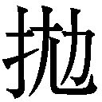

| マルテの手記 | |
| リルケ | |
| (2014) | |
マルテの手記
リルケ
松永美穂訳
Title: DIE AUFZEICHNUNGEN
DES MALTE LAURIDS BRIGGE
1910
Author: Rainer Maria Rilke
◎ご注意
本作品の全部または一部を無断で複製、転載、改竄、公衆送信すること、および有償無償にかかわらず、本データを第三者に譲渡することを禁じます。
個人利用の目的以外での複製等の違法行為、もしくは第三者へ譲渡をしますと著作権法、その他関連法によって処罰されます。
『マルテの手記』は風変わりな本である。散文で、長さの違う七十一のテクストから成っているが、それらのテクストには多かれ少なかれ断片的な印象を与えるものが多い。前半はマルテのパリでの生活、そして子ども時代を過ごしたデンマークでの思い出（心霊体験を含む！）に紙数が割かれているが、後半に進むにつれ、歴史的人物の末期の話や、物と人の関係、人と神の関係、人間同士の愛し愛される関係についての哲学的な考察が多くなってくる。抽象的でわかりにくい部分も散見され、「彼」や「あなた」という人称代名詞だけで登場する人物が誰を指しているのか、注を見ない限りわからない場合も多い。「これって、もしかして、未完の作品なのか？」と思われる方も少なからずいらっしゃるだろう。しかしこの作品は、リルケが一九〇四年から一九一〇年までの六年間にわたって執筆を続け、満を持して世に送りだしたものなのである。リルケは執筆中、あまりに入れ込みすぎてマルテと自分のあいだに距離が取れなくなって悩んだり、作品完成後は一種の虚脱状態（燃え尽き症候群？）に陥ってしまったとも伝えられている。
作中のマルテは二十八歳、執筆を開始した一九〇四年二月の時点（リルケは友人のルー・アンドレアス＝ザロメに宛てて、執筆の開始を伝えている）で、リルケ自身も二十八歳。しかも最初に書かれている「トゥリエ通り」という地名は、一九〇二年八月にリルケがパリに到着したときに下宿した場所だ。ここは、作中に新聞売りの話などで出てくるリュクサンブール公園からも遠くない。一九〇二年当時、すでに結婚して一児の父だったリルケだが、叔父からの経済的援助が打ち切られることになったため、将来へのチャンスを見出すべく、それまで暮らしていた北ドイツのヴェスターヴェーデから単身パリに出てきていた。つまりは作中のマルテと同じく、不安定な生活を送っていたのである。
文学に志し、すでに詩集を出したり、戯曲が何度か上演されたりはしていた。しかしまだ無名で、もともと体も丈夫でなかった彼は、都会での暮らしに自分を見失いそうになったり、さまざまな形で心身のバランスを崩したりしていたことだろう。そんな意味で、作中のマルテとリルケには重なる部分が非常に多い。マルテはパリに長期滞在しているが、定職に就いているわけではない。彼は自分がよそ者であることを意識しながら、街で見たこと、思ったことをどんどん記録していく。「手記」という言葉からは、ある人が自分の人生を振り返って書く自伝的なものを想像されるかもしれないが、マルテの手記はもっと不統一で自由な「書きつけ」もしくは「スケッチ」のようなものである。「ネタ帳」といってしまってもいいかもしれない。英語のタイトルは『マルテ・ラウリス・ブリッゲのノートブック』だ。実際、『マルテの手記』執筆時のリルケもノートを持ち歩き、鉛筆で書き込んでいたらしい。カフェや公園のベンチに腰を下ろし、通り過ぎる人々を眺めながら執筆したのだろうか。鉛筆書きした原稿に、下宿に戻ってからペンで手を加えたりしている。多くのテクストが唐突に始まったり終わったりしているのも、そうした執筆の仕方と無縁ではない気がする。独立したエッセイとして読めるテクストもあるし、膨らましていけば短編小説になりそうな話も、日記や手紙のようなテクストもある。ばらばらな感じではあるのだが、こうしたテクスト群によってパリに生きる一人の孤独な若者の内面を全体的に浮かび上がらせようとした、まったく新しいタイプの意欲的な作品なのだ。
その際、大きなテーマとして挙げられるのは「見ること」と「固有の死」だ。マルテはパリで、「ものを見る」訓練を自分に課している。ただ、彼が見るものはかなり変わっている。普通の観光客だったら目にしないようなもの、パリにずっと住んでいる人であっても気にも留めず、意識のうちに入ってこないようなもの。そうしたものや人を、ひたすら集中的に観察し続けるのだ。
マルテ、二十八歳、芸術家気質の独身で、デンマーク出身。そんな一人の若者が、ヨーロッパ文化の中心地であるパリで目にする繁栄と雑踏。都市で浮遊する彼の精神がとらえた不安げで不確定な世界の印象を、ぜひ味わっていただきたい。テクストは、どれから読んでもいいし、飛ばしてしまってもいい。気に入ったものだけをくりかえし読むのもいい。一貫したストーリーは期待せず、これらのテクストの空間的・時間的拡がりを楽しみながら、マルテを追跡していただければ幸いである。
九月十一日、トゥリエ通りにて
そう、そういうわけで、人々は生きるためにここに来るのだけれど、ぼくに言わせればむしろ、ここでは人が死んでいっている。ぼくは外出していた。あちこちに病院を見つけた。ふらふらして、倒れ込んでしまう人を見た。人々が彼の周りに集まったので、ぼくはそれ以上関わり合いにならずにすんだ。妊婦を見た。陽で暖まった背の高い壁に沿って、重そうに体を進めていた。まだ壁がそこにあるのか確かめるみたいに、ときおり手探りしている。そう、壁はまだそこにあった。壁の向こうは？ 手持ちの地図を見てみると、産院だった。よしよし。彼女は分娩させてもらえるだろう。そのための場所なんだから。その先のサン・ジャック通りには、丸屋根の大きな建物があった。地図によればそこは「恩寵の谷」という名で、軍の病院だ。そんなこと知る必要はないのだけれど、知って損することもないだろう。路地が、あらゆる方向から匂い始めた。区別できるかぎりでは、ヨードホルムの匂い、フライドポテトの油の匂い、不安の匂いだ。どんな都会も、夏は匂う。それからぼくは、白内障にかかった目のようにどんよりと濁った色の家を見た。地図には載っていなかった。しかしドアにはかなり鮮明に、「簡易宿泊所」と書かれていた。玄関の横に料金が出ていた。ぼくはそれを読んだ。高くはなかった。
それから？ 停まっている乳母車の中の子ども。太って、肌は緑がかった色で、額にはおできが一つ、目立っていた。もう治りかけていて、痛くはなさそうだ。子どもは眠っていた。口は開いたままで、ヨードホルムとフライドポテトと不安の匂いを呼吸していた。そういうことなのだ。大切なのは、生きているということだ。それが大切なのだ。
窓を開けたまま眠るのを、やめることができない。電車が警笛を鳴らしながらぼくの部屋を駆け抜けていく。自動車がぼくの上を走り過ぎていく。ドアがばたんと閉まる。どこかで一枚のガラスが割れて落ちる。大きな破片が哄笑し、小さな破片がくすくす笑っているのが聞こえる。すると突然、鈍いくぐもった音が反対側から、つまりこの建物の中から聞こえる。誰かが階段を上がってくるのだ。間断なく、どんどん近づいてくる。到着する、しばらくそこにいて、通り過ぎていく。それからまた街路の音だ。娘が金切り声で「ああ、黙ってよ、もう我慢できない」と叫ぶ。電車が興奮して近づいてくる。声をかき消し、あらゆるものを乗り越えて、どんどん先へ進む。誰かの呼ぶ声がする。人々が先を争って走っていく。犬が吠える。犬がいるとは、なんという安心感。朝方、雄鶏の鳴き声まで聞こえて、かぎりない心地よさだ。それからぼくは突然眠りに落ちた。
騒音はこんな感じだ。でも、ここにはもっと恐ろしいものがある。静寂だ。ぼくが思うに、大火事の際にときおり、そのような極限の緊張の瞬間が訪れる。放水が少なくなり、消防士たちはもはやハシゴに登らず、誰も動かない。黒い軒蛇腹が音もなくせり上がり、裏側がごうごうと燃えている高い壁が、音もなく傾く。すべての人が立ち尽くし、肩をすくめ、額に皺を作って、恐ろしい崩壊の瞬間を待っている。ここでの静寂はそんなふうなのだ。
きょう、手紙を一通書いた。書きながら、自分がここに来てからまだ三週間しか経っていないことに気がついた。他の土地で過ごす三週間は、たとえば田舎にいるのだったら、たった一日のような気がするだろう。ここでは何年も過ぎたような気がする。もうこれ以上、手紙は書きたくない。自分が変わりつつあることを、なぜ誰かに伝えなくてはいけないのだろう？ 変わりつつあるなら、それはもう前のぼくではないわけだし、以前と違う人間になったのなら、知り合いがいないのも当然。そして、見知らぬ人々、ぼくを知らない人々に宛てて、手紙を書くなんてことはできない。
もう言っただろうか？ ぼくは見ることを学んでいる。そう、始めるのだ。いまはまだうまくできない。でも、時間をかけてがんばるつもりだ。
他の人々は不気味なほどすばやく、次から次へと顔を取り替え、すぐに擦り切らせてしまう。最初は永遠に新しい顔を調達できる気でいるが、四十歳にもならないうちにもう最後の顔になっている。当然ながら悲劇だ。彼らは顔を大切にするのに慣れていない。最後の顔は一週間で擦り切れてしまい、穴があき、紙のように薄くなった場所が何か所もある。そこから次第に、顔ではない下地が見えてくるのだ。彼らはそのまま歩き回る。
だけど、あの女の人は？ あの人は自分の中に埋没していた。前屈みになり、両手で顔を覆って。ノートル・ダム・デ・シャン通りの角でのことだ。彼女がそうしているのを見て、ぼくも静かに歩くようにした。貧しい人々が考えに耽っているときは、邪魔するべきではない。ひょっとしたらいい考えが浮かぶかもしれないのだから。
路上にはあまりにも人気がなかった。その空虚さが退屈しきって、ぼくの足の下から足音を抜き取り、木靴の立てる甲高い音のように、あちこちにその音を響かせた。その女性はぎょっとして手で覆っていた顔を上げた。あまりにも早く激しく上げたので、顔は二つの手の中に残ってしまった。両手の中にその顔が、虚ろな形となって横たわっているのが見えた。その両手だけを見続けて、顔の剝がれてしまった頭を見ないようにするのに、ぼくには途方もない努力が必要だった。顔を内側から見るという体験は、ぼくをぞっとさせた。でもぼくは、顔のない剝き出しの、傷ついた頭を見る方がずっと怖かったのだ。
ぼくは恐れている。一度恐怖を抱いてしまったら、それを振り払うためになんとかしなければいけない。ここで病気になるのはとても悲惨なことだ。もし誰かがぼくを「神の宿」病院に入れようと思いつきでもしたら、ぼくはきっとそこで死ぬだろう。この病院はとても居心地のいいところで、ものすごく大勢の人がここにやってくる。芝生を突っ切ってできるかぎりすばやく病院内に入ろうとする無数の馬車に轢かれそうにならずには、ノートル・ダム大聖堂の正面を眺めることもできないほどだ。ひっきりなしに警笛を鳴らす小さな乗り合い馬車がやってくる。もし貧しい瀕死の病人が、まっすぐ「神の宿」に入ろうという気を起こしたなら、たとえサガン公爵（１）といえども、手綱を引かせて自分の馬車を停めないわけにはいかないのである。瀕死の病人たちは頑固だ。たとえばマルティール通りに住む骨董屋のルグラン夫人が、シテ島にあるしかるべき病院に乗り入れようとするならば、パリ中が渋滞になるのである。悪魔に憑かれたこれらの小さな馬車には、ひどく興味をかきたてる乳白色の窓が付いていて、その向こうで進行している見事なまでの断末魔の苦しみを思い浮かべることができる。それには受付嬢ほどの想像力があれば充分なのだ。もっと多くの想像力を持ち合わせていて、それを他の方向に向けるのなら、推測はまさに無限に広がる。でもぼくは、屋根なしの馬車が到着するのも見た。それは幌を開けた賃貸しの馬車で、通常の規定料金で走っていた。臨終を迎えるための交通費は、二フランだ。
このすばらしい病院はとても古くて、クロヴィス王（２）の時代にはもう、ここのベッドで死んでいく人たちがいた。いまでは五百五十九のベッドが死の床として使われている。もちろん工場のような有り様だ。このように大量の死が生産される場所では、個々の死はそれほどうまく仕上がらない。しかし、それは大した問題ではない。量が多いせいなのだ。うまく死に遂げるために手間をかける人など、今日いるだろうか？ 誰もいない。じっくりと死ぬだけの経済力をまだ持っている金持ちでさえ、怠惰で無頓着になり始めている。自分だけの死を死にたいという願いは、どんどん稀になってきている。まだいくらかは独自の死というものが存在するかもしれないが、やがては独自の生と同じくらい、独自の死も珍しくなるだろう。なんてことだ、すべてがそこにある。人は生まれ、一つの人生を見つける。レディーメイドで、ただ身に着けるだけでいい。去ることを望むにせよ、去っていかざるをえないにせよ、いまや、苦労する必要はない。お客さま、これがあなたの死です、というわけだ。人は、死ななければならないように死ぬ。自分の病気に合った死に方をする。（というのも、あらゆる病気が解明されて以来、死に至るさまざまな過程は人のせいではなく、病気のせいであることがわかったからだ。病人には、手の出しようがないってわけだ。）
サナトリウムでは、人はよく、医者や看護師に感謝しながら死んでいく。そこでは施設が採用したやり方で人が死ぬのであって、それが歓迎されている。でも自宅で死ぬ場合は、上流の人々のような礼儀正しい死に方をするのが当然だろう。いわば一級の葬儀と、それに伴うすばらしい一連の習わしが、すでに始まっているかのような死に方である。そんな家の前には貧しい人々が立って、思う存分見物する。貧しい人々の死はもちろん平凡で、面倒な手続きは一切抜きだ。おおよそ自分の寸法にかなう死を見つけると、彼らは喜ぶ。サイズが大きすぎても構わない。人の背はそんなときでも少しは伸び続けるのだから。ただ、死という洋服のボタンが胸元でしまらなかったり、着る人の息を詰まらせたりした場合だけは、大変なことになる。
いまはもう誰も住んでいない自分の家のことを考えると、昔は死がこんなふうではなかったと思わされる。以前なら人は、果物の中に種があるように、自分の中に死があることを知っていた。（あるいはうっすらと予感していたのかもしれない。）子どもには小さな死の種が、大人には大きな死の種がある。女たちは胎内にその種を持ち、男たちは胸の中に持っている。人間はそのような種を持っていたのであり、そのことが一人一人に独自の威厳と静かな誇りを与えていたのだ。
宮廷の老侍従であったぼくの祖父ブリッゲの場合、そのような死を体内に宿しているのがまだ見てとれた。それは、なんという死だったろう。二か月も続き、外の農場でも聞こえるほどの騒がしさだった。
古くて細長い屋敷は、この死のためには小さすぎた。建物の袖の部分を増築しなければいけないように思えた。というのも、侍従の体がどんどん大きくなっていったからだ。彼は一つの部屋から別の部屋へと絶えず移動させてもらいたがった。そして、まだ一日が終わっていないのに、自分が横になっていない部屋がもう一つもないとわかると、恐ろしい怒りを爆発させた。その後で、いつも彼の周りで仕えていた召使いや侍女や犬たちを引き連れた行列は、階段を上がり、屋敷の管理人を先頭に、亡くなった彼の母親の臨終の間に入っていくのだった。その部屋は、二十三年前に母親が死んだときのままの状態に保たれている。普段はこの部屋には、誰も入ることを許されていなかった。それなのにいまや大集団が、そこに陣取るのである。カーテンが開かれる。夏の午後の荒々しい光が、部屋に置かれている物体をすべて調べ上げる。物たちはびくびくし、人々の闖入にぎょっとしていた。光は開かれた鏡の中で不器用に跳ね返る。人間たちの側も同じだった。好奇心がつのるあまり、自分の両手がいまどこにあるのかわからなくなっている女中たちがいた。すべてをじろじろ眺める若い召使いたちがいた。年配の召使いたちはあちこち歩き回り、いま自分たちが運良く入る機会を得たこの閉ざされた部屋について、かつてどんな話を聞いたことがあったか、思い出そうとしていた。
とりわけ犬たちにとって、すべての物が匂いを発する部屋の中にいることは、ものすごく興奮することであるらしい。大きくてスマートなロシア生まれのグレーハウンドたちは、安楽椅子の後ろを忙しく行ったり来たりし、大股のダンスのような足取りで体を揺り動かしながら、部屋を横断した。それから紋章に描かれている犬のように後ろ足で立ち上がると、白金色に塗られている窓台の上に細い前足を載せて、鼻先を尖らせた緊張気味の顔で額を後ろに引き、中庭を左右に見下ろすのだ。革手袋のように黄ばんだ小さなダックスフントたちは、すべて異常なしという顔つきで、窓際の幅広い絹のクッションに腰を下ろしていた。毛がごわごわして不機嫌そうに見えるポインターは、金色の脚を持つテーブルの角に背中をこすりつけている。絵が描かれた天板の上で、セーブルの国立磁器工場で焼かれたカップが揺れていた。
そう、それはぼんやりと眠りこけていた物たちにとってはぞっとするような日々だった。誰かのせわしない手が不器用に開いた本の中から、挟んであったバラの花びらがひらひらと舞い落ちて踏みつけられてしまうようなものだった。小さくて脆い品々はつかみ取られ、たちまち壊されて、また置き去りにされた。役に立たないがらくたはカーテンの後ろに隠され、暖炉に取りつけられた金色の格子の向こうに投げ捨てられることさえあった。ときおり何かが落ちた。鈍い音を立てて絨毯の上に落ちたり、明るい音を立てて堅い木の床に落ちたりした。あちこちで何かが割れていた。鋭い音を立てて飛び散ったり、ほとんど音もなく壊れたりした。これらの物たちは大事にされすぎていて、ちょっとした落下にも耐えられなかったのだ。
そして、こんなことになったのはなぜなのか、不安げに見守られているこの部屋にあらゆる破滅を呼び起こしたのは何なのか、と誰かが思いついて尋ねたとしたら、答えはたった一つ、死、という言葉だったろう。
ウルスゴーでの、侍従クリストフ・デートレフ・ブリッゲの死。この男は、濃紺の制服からはみ出さんばかりに体を膨らましながら、床の真ん中に横たわり、動こうとしなかった。大きくて異様な、誰にも判別できなくなってしまった彼の顔の中で、目は閉じられていた。起こっているできごとを、彼は見なかった。人々は当初彼をベッドに横たわらせようとしたのだが、彼はそれにあらがった。病気が勢いを増し始めた当初の数日の夜以来、彼はベッドを憎むようになっていたのだ。彼を寝かせるにはベッドもまた小さすぎることがわかったので、彼を絨毯の上に置く以外には方法はなかった。下の部屋には行きたがらなかったからだ。
彼はそこに横たわっていた。死んだのかと思ってしまうほどだった。次第に暗くなってくると、犬たちもドアの隙間から順番に出ていってしまった。ただ、不機嫌な顔をした毛の剛い犬だけが主人の傍らに座って、幅の広い毛むくじゃらの前足をクリストフ・デートレフの大きな灰色の手の上に載せていた。召使いたちもいまではほとんどがその部屋よりも明るい、白く塗られた廊下の方に出ていた。しかし部屋に残っている人々は、部屋の中央の黒ずんでいく大きな塊にときおり密かに目をやり、あれが傷んだものの上にかぶせられた大きな背広に過ぎなければいいのに、と思っていた。
しかし、そこにはまだ何者かがいた。それは声だった。七週間前には誰も知らなかったような声。侍従の声ではなかった。その声の持ち主はクリストフ・デートレフではなく、クリストフ・デートレフの死だったのだ。
クリストフ・デートレフの死はもう何日間もウルスゴーに居座って、あらゆる人たちと話をし、要求を突きつけていた。運ばれることを要求し、青い部屋、小サロン、広間を要求した。犬たちを連れてくるよう要求し、人々が笑うこと、話すこと、遊ぶこと、静かにしていることを、同時に要求した。友人に会いたいと要求し、女たちや死んだ人に会いたいと言い、自ら死ぬことを要求した。要求したのだ。要求し、そして叫んだ。
夜が来て、疲れ切った召使いたちのうち夜番でない者が眠ろうとすると、クリストフ・デートレフの死が叫び始めるのだった。叫び、うなり、長いこと喚き続けたので、最初は一緒になって吠えていた犬たちもしーんとしてしまい、横になろうともしないで、長くて細い足を震わせて立ち、怖がった。デンマークの広々とした銀色の夏の夜、死の喚き声を村で耳にした者は、雷のときのように起き上がり、服を着て、声が止むまで一言も話さず、ランプの周りに座っていた。出産の近い女性たちは、一番遠く離れた部屋で、しっかりと囲われたベッドに寝かされていたが、彼女たちにもその声は聞こえてきた。まるで、自分の体の中にその声があるかのように。起きることを許してほしいと彼女たちは嘆願し、白くふくらんだ姿で歩いてくると、他の人々が座っているところにぼんやりとした顔で腰を下ろした。この時期に子どもを産もうとしていた牛たちは、途方に暮れ、人を寄せつけなくなった。ある雌牛などは、産むはずの仔牛が出てこなかった。人々は死んだ胎児を取り出そうとして、母牛の内臓までそっくり体から引っ張り出してしまった。誰もが昼の仕事に精が出なくなり、干し草を運び込むのを忘れたりした。昼のあいだは夜が来るのが不安だったし、夜には寝つけなかったり、びっくりして起き上がったりしていたので、疲労困憊して、何も考えることができなくなっていたのだ。壁が白く塗られた平穏な教会を日曜日に訪れると、人々は、もうウルスゴーには領主は要りません、と祈った。いま死にかけている領主はひどい人だから。みんなが考えたり祈ったりしていることを、牧師は大声で説教壇からぶちまけた。牧師にももう眠れる夜はなく、神のことが理解できなくなっていた。教会の鐘もそう告げていた。鐘にとっては恐ろしいライバルが現れたわけで、このライバルは一晩中うめき続け、それに対しては鐘も、たとえ金属音の及ぶかぎり鳴り始めたとしても、対抗できないのだった。そう、あらゆる人々がそのことを口にしていて、若者の中には、館まで行って慈悲深い領主を堆肥用の熊手で殴り殺す夢を見た者までいた。誰もが憤激し、疲れ切っていらいらしていたので、その若者が夢の話をしたときにはみんながじっと聞き入り、この男にほんとうにそうする勇気があるかしらと、知らず知らずのうちに彼をじっと見つめてしまったほどだ。つい数週間前までは領主に好意を抱いていて、彼の病気を残念に思っていたこの地方の人々が、いまではそんな気持ちになって、みんながみんな、その話をしているのだった。しかし、そんなふうに話したところで、何一つ変わるわけではなかった。ウルスゴーに居座ったクリストフ・デートレフの死は、急き立てられても動こうとはしなかった。その死は十週間の予定で来ており、そのとおり十週間とどまった。そしてこの期間中、死はクリストフ・デートレフ・ブリッゲがかつてそうであった以上に領主として君臨していた。まるで在位中も死後も「恐怖王」とあだ名をつけられる王のように。
そんじょそこらの水腫による死などではなく、侍従が一生涯自らの内に抱えて養い続けた、おぞましくも威厳のある死なのだった。侍従自身が穏やかな日々のあいだに使い切ることのできなかった過剰な誇りと意志と支配欲が、彼の死の中に流れ込み、その死がいまやウルスゴーに座り込んで、時間を浪費しているのだった。
もっと別の死に方をするべきだという者がいたなら、侍従ブリッゲはどんな顔でその相手を見つめただろうか。彼は自らの重い死を死んだ。
そして、ぼくが見たり聞いたりした他の人々について考えるならば、いつも同じことなのだ。誰もが自分自身の死を持っていた。甲冑の中に、囚人のように死を閉じ込めて持ち運んでいた男たち。あるいは、たいそう年をとって小さくなり、舞台のように途方もなく大きなベッドの上で、家族全員、召使い、犬たちの目の前で、つつましくも堂々と死んでいった女性たち。子どもたち、とても小さな子だって、どうでもいい子どもっぽい死に方をしたわけではなく、勇気を奮い起こして、自らがすでに到達した人生と、将来到達できたかもしれない人生を合わせて、死んでいった。
そして死はまた女性たちに、なんという哀切な美しさを与えたことだろう。妊娠している女性が亡くなったときには、細い両手が置かれたままになっている大きな腹の中に、二つの実があるのだった。一人の子どもと、一つの死。すっかり空になってしまった顔に残る、凝縮され、豊かさに満ちているとさえいえるほほえみは、彼女が子どもも死も、二つながら育つものと、ときには思っていたからではないだろうか？
ぼくは恐怖にあらがってみた。一晩中座って、ものを書いていたのだ。いまではウルスゴーの野原を遠くまで歩いた後のように、すっかり疲れ切っている。いまはすべてが変わってしまって、知らない人たちがあの古い細長い屋敷に住んでいるなんて、考えたくない。切妻屋根に挟まれたあの白い屋根裏部屋をいまでは女中が寝室にして、夜から朝までの重い湿った眠りを眠っているのかもしれない。
そしてぼくには誰もおらず、何もない。スーツケースと一箱分の本だけを持って、実は好奇心さえもなく、世界を巡っている。何という人生だろう。家もなく、遺産もなく、犬もいない。少なくとも思い出だけはあるはずなのに。だが、思い出など誰が持っているだろう？ 子ども時代があったとしても、いまではまるで埋もれてしまっている。すべてに手が届くようになるためには、年をとらなくちゃいけないのかもしれない。年をとることを、ぼくはいいことだと思う。
今朝は天気のよい、秋らしい朝だった。ぼくはチュイルリー公園を通っていった。東に向いているものはすべて、陽に当たり、まぶしく輝いていた。照らされたものには明るい灰色のカーテンのような霧がかかっている。霧の晴れない庭園の中では、灰色の中の灰色の塊となって、銅像がひなたぼっこしていた。細長い花壇では一つ一つの花が起き上がり、びっくりしたような声で「赤」と言っていた。それから、とても背の高い痩せた男が、シャンゼリゼから角を曲がって歩いてきた。松葉杖をついていたけれど、もう脇の下に入れてはおらず、自分の前に差し出すように軽々と持ち、王の使者が持つ杖のように、ときおりしっかりと音を立てて地面についていた。彼は喜びとほほえみを抑えることができず、通りかかったものすべてに対してほほえんでいた。太陽にも、木々にも。足取りは子どものようにおずおずとしていたけれど、並外れて軽く、以前の歩き方をしっかりと思い出しているようだった。
小さな新月に、なんてすごいことができるのだろう。月明かりで自分の周りのすべてが明るく輝いて軽やかな日々がある。明るい空気の中で事物の輪郭はおぼろげであっても、やがてはっきりと見えてくるのだ。近くにあるものがすでに、遠方にあるかのような雰囲気を帯びる。近くのものは実体を奪われ、見ることはできても手で触れることはできなくなる。遠方とつながっているもの、川や橋、長い道や、無聊をかこっている広場などは、遠方を背後に取りこみ、絹の上に描かれる絵のように、遠方を下地にして描かれているのだ。そんなとき、ポン・ヌフ橋の上を走る明るい緑色の車や、刻々と変化していく何かの赤い色、真珠のような灰色の家の連なりのところにある防火壁の一枚のポスターが、どんなに美しくなりえるか、言葉にするのはむずかしい。すべてが簡略化され、マネの絵の中の顔のように、幾つかのきちんとした明るい平面の上に描かれている。足りないもの、余分なものは何もない。河岸通りの古本屋が箱を開ける。新刊書の鮮やかな黄色、あるいはその黄色が色褪せた古本、上製本のえび茶色、大きな紙挟みの緑。すべてが正しく、価値を備えてそこに参加し、すべてが揃った完璧な状態を作り上げている。そこでは、何も足りないものはない。
窓の下の通りに見えるのは、次のような組み合わせだ。一人の女性が押している小さな手押し車、手押し車の前方には手回しオルガンが縦に載っている。その後ろには横向きに子ども用の籠。その籠にはとても小さな子どもが両足でしっかり立って、帽子をかぶせられて満足そうにしており、なかなか座ろうとしない。女性はときおり手回しオルガンを回す。とても小さな子どもはいったん座ってもすぐにまた立ち上がって、籠の中で足を踏み鳴らしている。そして、緑色の晴れ着を着た小さな女の子が踊り、家々の窓に向かってタンバリンを打ち鳴らす。
見ることを学んでいるいま、何か仕事を始めなくてはいけないのだろうと思う。ぼくは二十八歳だが、ぼくの人生にはこれまでほとんど何も起こらなかった。あらためて振り返ってみよう。ぼくはカルパッチオ（３）についての論文を書いたが、ひどい出来だった。それから、間違った主題をあいまいな手法で示そうとする、「結婚」という戯曲を書いた。それから詩。ああ、でも詩は、早い時期に書くと、あまりにもうまくいかないのだ。詩を書くのは待った方がいい。意義のある話や甘いエピソードを一生、それもできるだけ長生きしながら集めて、そして人生の最後に、もしかしたらいい文章が十行ほど書けるのかもしれない。詩というのは感情を表現するものだと人々は言うが、それは違う。（感情ならもう幼いときから持っている。）詩は経験から生まれるのだ。一つの詩のために、たくさんの街や、人間や物を見なければならない。動物を知り、鳥がどんなふうに飛ぶかを感じ、小さな花が朝方開くときの仕草を知っていなければならない。知らない地方で通った道のことを思い返すことができなければならない。思いがけない出会いや、長いあいだそうなることを予感していた別れのことも。まだいろいろなことがわからないままだった子どものころ、ぼくを喜ばせようとして何かを持ってきてくれたのに、それがわからなくて気を悪くさせてしまった両親のこと（その贈り物は、ほかの子どもだったら喜ぶようなものだったのだ）、たくさんの深刻で重大な変化をともなって奇妙な始まり方をする子ども時代の病気のこと。静かで地味な部屋で過ごした日々のこと、海辺の朝、そもそも海について、いろいろな海、ざわざわと音を立てながら、満天の星とともに飛び去っていく旅の夜......。これらすべてのことについて考えるのが許されるとしても、それでもまだ充分ではないのだ。恋人と愛し合ったたくさんの夜についての思い出がなくてはいけない。どの夜も、他の夜と違っていた。子どもを産む女の叫び、出産直後の女が、いまでは身も軽くなり、血の気のない顔をして眠りながら自分を閉じていく様子。人の死にも立ち会ったことがなければいけない。窓を開けた部屋で臨終の床の傍らに座って、断続的に出てくる音を聞いたことがなくてはいけない。そして、思い出を持っているだけでもまだ充分ではないのだ。たくさんありすぎる場合は、忘れることができなくてはいけない。そして、その思い出がまた戻ってくるのを待つことができる、強い忍耐力がなければいけない。というのも、思い出そのものが詩になるというわけでもないのだ。思い出がぼくたちの中で血となり、まなざしや仕草となり、もはやぼくたち自身と区別がつかなくなって初めて、ごく稀な瞬間に、詩の最初の言葉が思い出の中心に浮かび上がってきて、そこから出発するということがありえるのだ。
だが、ぼくの詩はすべて別の生まれ方をした。だから、それは詩とは呼べない。戯曲を書いたときには、どんなに勘違いをしていたことだろう。お互いの関係を難しくしている二人の運命を描くのに、第三の人物を必要とするなんて。ぼくはただ模倣するだけの愚か者だったのだろうか？ ぼくはなんと罠にかかりやすいのだろう。あらゆる人生と文学の中を動いていくこの第三者、けっして存在しなかった第三の人物の幽霊には何の意味もなく、否定すべき存在であることを、知っておかなくてはいけなかったのだ。この第三者は、自分の最も深い秘密から人間の注意を常に逸らそうとして、自然が使うトリックの一つなのだ。この第三者は衝立であって、ドラマはその背後で演じられているのだ。彼は、ほんとうの葛藤がある静かな無音の空間の入り口に立つ、騒音なのだ。ストーリーの中心となる二人についてだけ語るのは、これまでのどんな作家にとっても難しかった、という意見もあるかもしれない。第三者というのがまさに非現実的なので、彼を登場させるのは簡単であり、誰にでもできたのだ、と。そんな作家たちの戯曲では、もう冒頭のところから、第三者を登場させようとする短気を見てとることができる。第三者が出てくるのが待ちきれないほどだ。彼が登場しさえすれば、すべてがよくなる。でも、彼が遅れてくる場合は、なんて退屈なんだろう。彼がいなくてはまったく何も起こりえないし、すべてが停滞し、行き詰まって、待ちの状態になるのだ。そう、これがもし滞留と停止の状態のままだったらどうだろう？ どうでしょう、劇作家さん、そして人生をご存じの観客のあなた、もし彼が行方不明になるとしたら？ この不特定の遊び人、あるいは優雅な若者、あらゆる結婚の裂け目を合い鍵のように閉じてみせる、この第三者が？ たとえば彼が悪魔にさらわれてしまったとしたら？ そうなったとしてみよう。すると突然、劇場の不自然な空白に気づくことになる。劇場は危険な穴のように塞がれて、桟敷の端の蛾だけが、この不安定な空間を通ってひらひら飛んでいるのだ。劇作家はもはや、ぜいたくなお屋敷街で楽しんではいられない。あらゆる公安のスパイたちが劇作家のために、世界の隅々まで、このかけがえのない、ストーリーそのものである男を探しに行くことになるだろう。
その際、彼らの方は人々に混じって生活しているのだ、この「第三者」ではなくて、二人の人間の方は。彼らについて、信じられないほどたくさんのことが言えるだろうに、まだ何も言われていない。彼らが苦しみ、行動しつつ、途方に暮れているにもかかわらず。
滑稽なことだ。ぼく、ブリッゲはパリで小さな部屋の中に座っている。二十八歳になり、誰にも知られていない。ここに座っているぼくは、何者でもない。それでも、この何者でもない存在は考えることを始めるのだ。パリの灰色の午後、五階分の階段を上がったところで、次のようなことを考える。
その存在は考える。人間がまだ何もほんとうのこと、重要なことを見ておらず、認識もせず、口にしてもいないなんて、ありえるだろうか？ 見たり考えたり書いたりするために何千年もの時間を与えられていたのに、その何千年かを、バター付きのパンやリンゴを食べる学校の休憩時間のように過ぎ去らせてしまったなんて？
そう、それはありえることだ。
発明や進歩や、文化や宗教や哲学にもかかわらず、人間が生の表面にとどまっているなんて、ありえるだろうか？ おまけにこの表面を、それだって意味のあるものには違いないのに、信じられないほど退屈な素材で覆ってしまって、まるで夏休みに覆いを掛けられているサロンの家具のようにつまらなくしてしまったなんてことが、ありえるだろうか？
そう、それはありえることだ。
世界史がすべて誤解だったなんて、ありえるだろうか？ 人間がいつも、大衆の動きについて話してばかりいて、そのせいで過去を見誤ったなんてことは、ありえるだろうか？ ちょうどたくさんの人間が一団になって走ってくる様子を語るようなもので、彼らを集める原因となった一人の人間については、それが未知の人であり、死んでしまったからという理由で、何も語られない。
そう、それはありえることだ。
人が、自分が生まれる前のできごとに追いつかなくてはいけないと思うなんて、ありえるだろうか？ 先に生まれた人々から生命を与えられたのだから、生まれる前のことも知っているはずで、他のことを知っている人たちに言いくるめられる必要はないのだ、と一人一人に言い聞かせなくちゃならないなんて？
そう、それはありえることだ。
これらの人々がすべて、けっして存在しなかった過去を正確に知っているなどということがありえるだろうか？ あらゆる現実が彼らにとっては何の意味も持たないこと、彼らの生が何者とも結ばれずに、空っぽの部屋に置いてある時計のように過ぎ去ってしまうことなど、ありえるだろうか？
そう、それはありえることだ。
生きている娘たちについて何も知らないなんてことがありえるだろうか？ 人が「女性たち」とか「子どもたち」「少年たち」などと言いながら、それらの言葉がもうとっくに複数形を持たず、ただ無数の単数でしかないことに（どんなに教養があっても）気づかないなんて、ありえるだろうか？
そう、それはありえることだ。
「神」と言いながら、それは何か共同のものを指すと思う人々がいるなんて、ありえるだろうか？ 二人の生徒がいるとしよう。一人がナイフを買い、隣の席の子もまったく同じナイフを同じ日に買う。彼らは一週間後に互いにナイフを見せ合うが、それぞれのナイフにはほとんど似ているところがないのを発見する。そんなふうに、ナイフは違う人間の手の中で違う発展を遂げたのだ。（そうね、と一人の生徒の母親が言う。あんたたち、何でもすぐにだめにしてしまうんだからね。）ああ、そうなのか。人が一人の神を、使い古すことなくただ持っていられると信じるなんて、ありえるだろうか？
そう、それはありえることだ。
しかし、これらのことすべてがありえるとしたら、ほんの見せかけだけでもそこにあるとしたら、必ず何かが起こるはずだ。こんな不安な考えを抱いた人間は、それが誰であれ、これまでおろそかにしていたことを始めずにはいられないはずだ。彼がたまたまそこにいただけであって、一番それに適した人間ではないにしても、だ。ほかには誰もいないのだから。若くて何者でもないこの外国人ブリッゲは、五階分の階段を上がった部屋で机に向かい、昼も夜も書かずにはいられない。そう、彼は書かなければいけないのだ、それが最終的な目的になるだろう。
ぼくはあのころ、十二歳か、せいぜい十三歳だったに違いない。父がぼくを連れて、ウァネクロスタに出かけていった。どういうきっかけで父が自分の義父を訪ねることにしたのか、ぼくにはわからない。父と祖父はぼくの母の死以来、何年も会っていなかった。そして、父自身は、義父であるブラーエ伯爵が老境に至ってから引きこもったその古い邸宅に、一度も行ったことがなかった。その風変わりな屋敷には、ぼくもその後二度と行くことがなかった。祖父が亡くなったときに人手に渡ってしまったのだ。子どもなりに心に刻まれたぼくの記憶の中では、その屋敷はちゃんとした建物にはなっていない。ぼくの中で、それはすっかり分解されてしまって、あそこに一つの部屋、こちらに一つの部屋、そしてここには廊下があるが二つの部屋を結んではおらず独立した空間になっている、といったぐあいで、それぞれ断片として記憶されているのだ。ぼくの記憶の中ではすべてがこんな調子で散らばっている。部屋も、ものものしくどっしりと構えている階段も。ほかには狭くて螺旋状の階段があって、その薄暗さの中を人が歩く様子はまるで血管を流れる血液のようだった。塔の中にある部屋、高い場所に据え付けられたバルコニー。小さなドアから不意に押し出されると、予期せぬところに開けている正面バルコニー。こうしたものすべてがまだぼくの記憶にあり、これからも存在し続けることをやめないだろう。まるで、この屋敷の風景が限りなく高いところからぼくの中に墜落してきて、心の奥底で砕けたかのようだ。
ぼくの心に完全な形で残っているのは、あの広間だけのように思える。そこにぼくたちは、夕食のために、毎晩七時に集まることになっていた。昼のあいだにその部屋を見たことはない。窓があったかどうか、そこからどんな光景が見えたのかすら思い出せない。家族が足を踏み入れるときにはいつも、重そうな枝状の燭台にろうそくが燃えていて、昼の時間のことや外で見たもののことは、数分のうちにすべて忘れてしまうのだった。推測するに、天井が高く、おそらく丸天井だったこの部屋は、他の何よりも印象が強かったのだ。天井に向かって暗くなっていき、けっして隅まで照らしつくされることのない空間は、一人の人間からあらゆるイメージを吸い取ってしまい、その代わりとなるものは何も残さなかった。人は解体されてしまったかのように、そこに座っているのだった。意志も思考も意欲もなくし、抵抗もしないままで。一人一人がまるで空っぽの場所のようだった。当初、この心を打ち砕くような状況のために、ほとんど吐き気さえ催してしまったことをぼくは覚えている。一種の船酔いのような状態で、ぼくは、向かいに座っている父の膝に触れるほど足を伸ばすことで、何とかそれに耐えた。後になってようやく、父がこの奇妙な振る舞いを理解するか、あるいは容認していたように思えることにぼくは気がついた。ぼくたち二人の関係はほとんど冷え切っていて、こんな態度をとることは本来、説明不可能だったのだ。ともかくもそのときは、父とのかすかな接触が、長い食事時間に耐える力をぼくに与えてくれた。そして、数週間にわたって一生懸命に耐え続けた後で、子どもが持つほとんど無限の適応力によって、ぼくはこの集まりの不気味さにも慣れた。二時間のあいだ食卓についていることも、もう苦痛ではなくなった。ぼくはそこにいる人々を観察するようになったのだが、そうすると時間が比較的早く過ぎていきさえした。
祖父はそこにいる人々を家族と呼んでいて、他の人たちが同じ表現を使うのもぼくは聞いたが、それはまったく恣意的なものだった。というのも、そこにいる四人は互いに遠い親戚ではあったが、どんな形であれ同じ家族に属してなどいなかったのだ。ぼくの隣に座っていた伯父は、年をとっていた。日に焼けた厳格な顔には、いくつか黒いシミがあったが、それは銃に装塡してあった火薬が爆発したためにできたものだそうだ。彼は不機嫌な不平屋で、引退したときには軍の少佐だった。その当時、彼は屋敷のどこかわからぬ一室で錬金術のような実験を行っていた。また、召使いたちが話しているのを聞いたところではどこかの監獄とつながりがあって、年に一度か二度、死体が送られてくるとのことだった。すると伯父は昼も夜も部屋に籠もって死体を切り刻み、秘密めいた方法で加工して、腐敗を免れさせるのだ。彼の向かいはマティルデ・ブラーエ嬢の席だった。年齢不詳の人物で、母の遠い親戚だった。ブラーエ嬢については、オーストリア人の心霊術師とさかんに文通をしていること以外、何もわからなかった。心霊術師はノルデ男爵と名乗っており、ブラーエ嬢は彼にぞっこんだったので、前もって彼の同意や、ひょっとしたら祝福のようなものを手に入れてからでなくては、どんな小さなことすら企てようとはしなかった。あの当時、彼女は非常に太っていて、まるで誰かがうっかりと、ゆったりとした明るい色の衣服のなかに流し込んでしまった、柔らかく緩慢に動く塊のようだった。彼女の動きは疲れ切っていて不安定だったし、両目は絶えず涙がこぼれそうなほど潤んでいた。それにもかかわらず彼女には、どこか繊細でほっそりとしたぼくの母を思い出させるものがあった。
マティルデ・ブラーエ嬢と毎日会うようになり、長いあいだ彼女を観察し、母が死んで以来もう思い出すこともできなかったような、洗練された穏やかな表情を見れば見るほど、ぼくはまた、死んだ母の外見がどんなだったかを思い出すようになっていた。そうだ、ぼくはひょっとしたら初めて母の容姿を知ったのかもしれない。何百という細部から、死者の姿が初めてぼくの中で像を結び、いまでは至るところ、その像がぼくについてきてくれる。後にはっきりと悟ったのだが、ブラーエ嬢の顔にはほんとうに、母の顔に刻まれていたあらゆる細かい特徴が存在していた。ただ、それらの特徴は、知らない人の顔があいだに押し込まれたかのように、引き離され、歪み、バラバラになっていたのだ。
このご婦人の隣には、ある従姉の小さな息子が座っていた。エリックという少年で、ぼくとほとんど同い年だったが、ぼくより小さくて弱々しかった。細かいひだをつけた襟飾りから細くて青ざめた首が突きだし、長い顎の下で消えていた。唇は薄くて、しっかりと閉じていた。鼻翼はかすかに震えていて、美しい焦げ茶色の目のうち、動くのは片方だけだった。その目はときおり、穏やかではあるが悲しそうにぼくの方を見たけれど、もう一方の目はいつも同じ片隅に向けられたままで、まるで人手に渡って用ずみになってしまったかのようだった。
食卓の上座には、祖父の巨大な肘掛け椅子があった。その椅子を、他に何も担当していない召使いが祖父の尻の下に押し入れて座らせたが、老人はその椅子の中でごくわずかな場所しか占めていなかった。耳が遠くて高圧的なこの老人を、閣下とか侍従長と呼ぶ人々がいた。他の人々は彼を将軍という肩書きで呼んでいた。祖父はきっと、こうした称号のすべてを手に入れていたのだろう。しかし、職に就いていたのはもうあまりにも昔のことなので、こうした呼び名もほとんど意味をなさないのだった。そもそもぼくには、ある瞬間には非常に鋭いけれど、くりかえし崩壊してしまう祖父の人格に、どんな決まった呼び名もつけられないように思えた。祖父を「おじいさま」と呼ぶ決心もつかなかった。ときには親切にしてくれて、ぼくを自分のところに来させることさえあったのだが。そんなとき祖父はぼくの名前に、わざと冗談めかしたアクセントをつけようとしていた。ところで一族全員は、伯爵であるこの祖父に対して畏怖と臆病さの入り混じった態度をとっていた。ただ例の少年エリックだけは、城の年老いた主人とある種の親密さを保って生活していた。彼の動く方の目は、ときどきすばやい同意のまなざしを祖父に向け、祖父の側からもすばやく応答のまなざしが返されていた。ときおり、長い午後などに、二人の姿が奥まった廊下の端に出現するのを目撃することもできた。二人は手をつなぎ、暗い色調の古い肖像画に沿って、言葉を交わすこともなく歩いていた。会話とは別の方法で心を通わせていたのだろう。
ぼくはほとんど一日中、庭園か、外のブナの林か、野原に出ていた。ウァネクロスタには幸運なことに犬たちがいたので、一緒に連れていくことができた。あちこちに小作人の家や酪農場があって、牛乳やパンや果物がもらえた。少なくとも数週間のあいだ、ぼくは夕食時の集まりについて考えて不安になることもなく、かなりのんきに自由を謳歌することができたと思う。ほとんど誰とも話さなかった。一人でいるのが楽しかったのだ。ただ犬たちとだけ、ときおり短い会話をした。犬たちとはとてもよく理解し合うことができた。ついでにいえば、無口というのは一族の特性のようなもので、父を見ていてもそれはわかった。夕食のあいだ、ほとんど何も会話がなくても、ぼくは驚かなかった。
もっとも、ぼくたちが到着した後の数日間は、マティルデ・ブラーエ嬢は非常におしゃべりだった。令嬢はぼくの父に、外国の街にいる昔の知り合いの消息を尋ね、切れ切れにいろいろなことを思い出し、亡くなった女友だちや、一人の若い男性のことを偲んでは感涙にむせんだ。その男性について令嬢は、彼が自分を愛してくれたのに、自分の方ではその真剣な、捨て身の好意に応えることができなかったと匂わせた。父は礼儀正しく話を聞き、ときおり同意するようにうなずき、最低限必要なことだけ答えていた。食卓の上座に座る伯爵は、口角を下げたまま、絶えずほほえんでいた。いつもより顔が大きく見え、まるでお面をつけているようだった。ときには彼自身も言葉を発した。彼の声は誰に向けられたものでもなかったが、とても小さな声にもかかわらず、広間全体に届くのだった。その声には、まわりを気にせず規則正しく時を刻む時計の歩みのようなものがあった。それを囲む静寂が、独自の空虚な共鳴をしているように思えた。どの音節にも、同じように共鳴した。
ブラーエ伯爵は、父の亡くなった伴侶、つまりぼくの母について話すことが、父に対して特別に礼を尽くすことでもあると考えていた。伯爵はぼくの母を伯爵令嬢ジビュレと呼び、その話し方はすべて、まるで母の消息を尋ねているような口ぶりだった。そう、なぜかはわからないけれど、話題になっているのが白い服を着たとても若い娘で、いまこの瞬間にも部屋に入ってくるのではないかと思えた。同じような口調で祖父が「わたしたちの小さなアンナ・ゾフィー」について話すのも耳にした。ぼくがある日、とりわけ祖父のお気に入りらしいこの令嬢について尋ねたところ、大法官のコンラッド・レヴェントローの娘のことだとわかった。かつてフレデリク四世の妻として傍らに寄り添い、およそ百五十年も前にロスキルデの墓地に葬られた人だ。時系列は結局のところ祖父にとっては意味をなさず、死もささいなできごととして完全に無視され、ひとたび思い出の中に受け容れた人々は存在し続けており、そのことについては死もまったく影響を与えることができないのだった。数年後、この老人が亡くなってから、人々は、彼が未来のことも同じような頑固さで現在のこととして受けとめていた、と語り合った。彼は一度、ある若い女性に彼女の息子たちのことを話したらしい。とりわけ息子のうちの一人がする旅行について語ったのだが、この若い女性はまだ初めての妊娠が三か月目に入ったところで、驚愕と恐れのためにほとんど意識を失いそうになりながら、絶え間なく話し続ける老人の隣に座っていたのだそうだ。
ところが、ぼくが笑ったために、ある事件が起こった。そう、ぼくは自制できずに大声で笑ってしまったのだ。ある晩、マティルデ・ブラーエ嬢がいなかったときのことだ。年老いてほとんど目の見えない召使いが、ブラーエ嬢の席に来たとき、彼女がいないにもかかわらず料理が入った深皿を差し出したのだ。しばらくのあいだ彼はそうやっていて、それから満足し、うやうやしく、すべてがいつもどおりであるかのように先へ進んでいった。ぼくはその場面を見ていたが、その瞬間にはそれほどおかしいとも思わなかった。しかししばらくして、ちょうど一口食べ始めたときに、ものすごい速さで笑いが込み上げてきたせいで、食べ物を喉に詰まらせてしまい、大きな音を立ててしまった。この状態はぼく自身にも厄介で、おとなしくしていようとできる限り努力したにもかかわらず、笑いは噴き出すようにくりかえし襲ってきて、ぼくをまったく支配してしまった。
父は、あたかもぼくの振る舞いを覆い隠そうとするように、大きいけれどくぐもった声で尋ねた。「マティルデ嬢はご病気ですか？」祖父は彼なりのやり方でほほえみながら答えたが、ぼくは自分のことで手一杯で、その答えに注意を払わなかった。祖父の答えはだいたいこんな内容だった。「いや、彼女はただ、クリスティーネに会いたくないそうだ」隣に座っていた浅黒い顔の少佐が立ち上がり、不明瞭にお詫びの言葉をつぶやいて伯爵にお辞儀しながら広間を出て行ったのがこの言葉のせいだとは、ぼくは気づかなかった。ただ、少佐が館の主人の背後のドアの敷居のところでもう一度振り向き、小さなエリックと、非常に驚いたことには突然ぼくの方にも、手を振り、うなずくような仕草をしたのが目についた。まるでぼくたちに、ついておいでと合図するかのように。あまりにびっくりして、笑いも引っ込んでしまった。しかしぼくはそれ以上、少佐には注意を払わなかった。不愉快に思ったし、小さなエリックも少佐を気にしていないのに気づいたからだ。
食事の時間はいつもと同じように長く続いた。ようやくデザートにたどり着いたとき、ぼくの目は広間の背後の薄闇の中にある動きをとらえ、それに釘付けになった。人々の話では中二階へ通じているはずの、普段は閉まっているドアが、少しずつ開いていたのだ。これまでには感じたことのないような好奇心と驚きの気持ちでそちらを見守っていると、ドアが開いたところに見える暗闇から、明るいドレスを着た一人のほっそりとしたご婦人が歩み出して、ゆっくりとぼくらの方へ向かってきた。自分が動いたり、声をあげたりしたのか、ぼくにはわからない。椅子が倒れる音が、ぼくの目を無理やりその風変わりな姿から引き離した。ぼくは、父が跳び上がって、顔面蒼白になりながら、両手を拳に丸めたままだらりと下げて、そのご婦人に歩み寄ろうとするのを見た。その間に彼女は、そうした様子にもまったく動揺を見せずに、一歩一歩ぼくたちに向かってきていた。いまでは伯爵の席からもうそれほど遠くないところにいた。すると伯爵も一気に立ち上がり、父の腕をつかまえると、食卓に引き戻して押さえつけた。一方、この見知らぬご婦人は、ゆっくりと無関心に、がらんとした部屋の中を一歩一歩、言いようのないほど静かに通り過ぎていった。その静寂の中で、一枚のガラスだけが震えてカタカタ鳴っていた。ご婦人は広間の向かい側の壁にあるドアの中に消えていった。この瞬間、小さなエリックが深いお辞儀とともに見知らぬ女性の背後でドアを閉めたのに、ぼくは気づいた。
食卓で席に着いたままだったのはぼく一人だった。肘掛け椅子の上ですっかり体が重くなってしまって、もうけっして一人では立ち上がれないような気がした。しばらくのあいだ、ぼくは見るともなしに眺めていた。それから父のことを思い出し、老人がいまだに父の腕をつかんでいるのを見た。父の顔は腹立たしげで、血が上っていたが、まるで白い鉤爪みたいに指を父の腕に絡みつかせている祖父の方は、仮面のようなほほえみを浮かべていた。祖父が音節ごとに区切りながら何か言うのが聞こえたが、その言葉の意味は理解できなかった。でもそれらの言葉はぼくの聴覚の深いところに落ちていき、約二年前のある日、ぼくは自分の記憶の下層にその言葉を見出した。それ以来、ぼくにもその内容がわかっている。祖父はこう言ったのだ、「ずいぶんと乱暴ですな、侍従どの。それに不躾だ。どうして他人の仕事を邪魔しようとするのかな？」「あれは誰ですか？」祖父が言い終わる前に、父はそう叫んでいた。「ここにいる権利のある人だよ。よそ者ではない。クリスティーネ・ブラーエだ」するとまた例の妙に稀薄な静寂が広がり、ガラスが震え始めた。父は体を動かして祖父から身をもぎ離すと、広間から飛び出していった。
父が一晩中、部屋の中を行ったり来たりしているのが聞こえた。ぼく自身も眠れなかった。しかし朝方、それでも眠りらしきものから突然目覚めたぼくは、白いものが自分のベッドに座っているのを目にして、心臓が止まってしまいそうな驚愕を覚えた。破れかぶれになって、ぼくは掛け布団に頭を突っ込んだ。そして、不安と困惑のあまり泣き始めた。突然、泣いている目の上が涼しく明るくなった。ぼくは涙を流しながらも、何も見ないですむように目をぎゅっとつぶった。ところが、すぐ近くから話しかけてくる声は、ぼくの顔に甘く、生暖かく迫ってきた。マティルデ嬢の声だ、と気づいた。ぼくはすぐに落ち着いたが、すっかり安心してからもずっとマティルデ嬢に慰めてもらっていた。こんなやさしさはあまりにも甘すぎると感じつつ、そのやさしさを楽しんでいたし、自分にはそれを受ける権利があるような気がしていた。「おばさま」とぼくはしまいに言い、輪郭があいまいな彼女の顔の中に、母の顔の特徴を見つけようとした。「おばさま、あのご婦人は誰だったの？」
「あら」とブラーエ嬢は、ぼくには奇妙に思えるため息とともに答えた。「不幸な人なのよ。坊や、不幸な人よ」
この朝、何人かの召使いが、ある部屋に集まって荷造りをしているのに気づいた。自分たちはここを発つのだ、とぼくは考えた。それはごく自然なことに思えた。父もそのつもりだったかもしれない。それなのに父がどうしてあの夜の後もウァネクロスタにとどまる気になったのか、ぼくは一度も聞かなかった。いずれにせよ、ぼくたちは発たなかった。それからまだ八週間か九週間もこの屋敷に滞在し、奇異な事件がぼくたちに与える圧迫感に耐え、さらに三度、クリスティーネ・ブラーエを目撃した。
ぼくは当時、彼女の身の上について何も知らなかった。彼女はもうずっとずっと昔に、二度目のお産で男の子を産みながら亡くなったとのことだった。その子は成長したが、不吉でおぞましい人生を送った。彼女がすでに死んだ人だということを、ぼくは知らなかった。しかし父はそれを知っていた。情熱的で、明快で論理的なことを重んじる性格だった父は、自制して質問もせず、この冒険に耐えることにしたのだろうか？ ぼくは事態を把握しないまま、父が自分の気持ちと闘うのを見ていた。理解できないまま、父がついに自分に打ち克つのを目の当たりにしたのだ。
それはぼくたちが最後にクリスティーネ・ブラーエを見たときのことだった。このときはマティルデ嬢も食卓に着いていたが、いつもとは様子が違っていた。ぼくたちがここに着いた最初のころのように、マティルデ嬢は脈絡もなく、しょっちゅう話を混乱させながら絶え間なくしゃべっていた。身体的な落ち着きのなさも見てとれた。彼女は絶えず髪の毛や服を直さずにはいられなかった。そしてとうとう、いきなり高い声で嘆きの叫びをあげると、跳び上がってどこかへ行ってしまった。
この瞬間、ぼくの目は思わず例のドアの方に向いた。まさにそのとき、クリスティーネ・ブラーエが部屋に入ってきたのだ。隣に座っている少佐は体を激しく痙攣させ、それがぼくの体にも伝わってきたが、どうやらもう立ち上がる力はないようだった。少佐の茶色い、年取ったシミだらけの顔は一人一人に順番に向けられ、口は開いたままで、ぼろぼろになった歯の後ろで舌がのたうちまわっていた。そして突然顔が見えなくなったかと思うと、白髪の頭がテーブルに突っ伏していた。両腕は切断されたように頭の上と下に横たわり、どこからか突き出されたひからびたシミだらけの片手が震えていた。
そうしてクリスティーネ・ブラーエは通り過ぎていった。一歩一歩、病人のようにゆっくりと、筆舌に尽くしがたい静寂の中を。年取った犬がすすり泣くような声だけが響いていた。しかしそのとき、スイセンを一杯に活けた大きな白鳥形の銀器の左側に、老人の大きな仮面のような顔が陰気なほほえみとともに現れた。彼は父に向かってワイングラスを掲げた。そしてぼくは父が、ちょうどクリスティーネ・ブラーエが父の肘掛け椅子の後ろを通り過ぎていくときに自分のワイングラスを手に取り、何かとても重いもののように、拳ひとつ分だけ食卓の上で持ち上げるのを見た。
そんなことがあって、その夜のうちにぼくたちは発ったのだった。
国立図書館にて
ぼくは座って、ある詩人（４）の作品を読んでいる。館内にはたくさんの人がいるけれど、そんな気配はない。彼らは本の中にいるのだ。彼らはときおりページの中で動いている。眠っているとき夢と夢のあいだで寝返りを打つ人のように。ああ、読書する人たちの中にいるのはなんていいことなんだろう。どうして人々はいつもこんなふうにしないんだろう？ ここにいる誰かのところに行って、そっと体に触れてみるといい。その人は何も感じないだろう。きみが立ち上がるときに隣の人にちょっとぶつかって、お詫びの言葉を言ったとしよう。その人はきみの声が聞こえてくる方に向かってうなずき、きみに顔を向けはするけれど、きみを見はしない。その人の髪の毛は、眠っている人の髪のようだ。こうした雰囲気がどんなに心地よいことか。ぼくは座って、一人の詩人の本を手にしている。なんという運命だろう。いま館内には読書している人が三百人くらいいるかもしれない。みんながそれぞれある詩人の本を読んでいるとは思えない。（誰の本かは、神さまだけが知っている。）三百人もの詩人なんて、ありえない。だが見たまえ、なんという宿命だろう、この読者たちの中で最もみじめな人間、一人の外国人に過ぎないぼくが、一人の詩人の本を手にしているのだ。貧しい人間であるにもかかわらず。毎日着ている背広はあちこちほころび始めている。靴だって、いろいろと文句をつけられそうな状態だ。襟はまだ清潔で、下着もそうだ。どこかの菓子屋、大通りに面した菓子屋に入っていって、自分の手で気兼ねなくケーキの皿をつかみ、一切れ載せることだってできるだろう。何も目立つようなことはないし、怒られたり追い出されたりすることもないだろう。とにもかくにもそれは上流階級の手、毎日四度か五度は洗われている手なのだから。そう、爪の中も汚れてはいないし、右手の指にもインクはついていない。とりわけ手首は非の打ち所がない。貧しい人たちが手首までは洗わないというのは、よく知られた事実なのだ。だから手首の清潔さで、ある程度出自を推測できる。また実際、人々はそうしているのだ。店に入れば、店員たちは客の値踏みをする。しかし、たとえばパリの中心にあるサン・ミッシェル大通りやラシーヌ通りにいる幾人かの人々には、ごまかしがきかない。彼らは他人の手首なんて問題にしない。彼らはぼくをじろじろと見て、悟る。ぼくが彼らの一員だということ、いまはただ喜劇を演じているだけなのだということを。謝肉祭のようなものだ。彼らはぼくのお楽しみをぶちこわしはしない。ほんの少し、にやりと笑って、目をパチパチさせるだけだ。目撃者はいない。普段は、彼らはぼくを紳士として扱ってくれる。誰かがそばにいようものなら、臣下のように尽くしてくれるのだ。まるでぼくが毛皮でも着て、自分の馬車を従えているかのように振る舞ってくれる。ときおり、二スーのチップを渡してやる。拒否されるのでは、と内心びくびくしているのだけれど、彼らは受け取ってくれる。またしても少し笑って目をパチパチされることさえなければ、すべて大丈夫なのだが。彼らは何者なのだろう？ ぼくに何を望んでいるのだろう？ ぼくを待っているのか？ どこで、ぼくだと見分けるのか？ たしかに、ぼくの髭は手入れがおろそかになっている。ぼくの髭には、ごくわずかではあるが、老いて色が薄くなり、病んだ彼らの髭を思わせるところがある。彼らの髭は、いつもぼくの心に引っかかってきたのだ。けれど、髭の手入れを怠る権利だってあるんじゃないだろうか？ 仕事が忙しくてそうなってしまう人はたくさんいる。だからといってそんな人をただちに、打ち捨てられた人々の仲間に入れてしまうなんて誰も思いつかない。ぼくにははっきりとわかっているのだ、彼らが打ち捨てられた人々だということが。物乞いというだけではない、いや、そもそも彼らは物乞いではない。区別が必要だ。彼らは廃品であり、運命に吐き捨てられた人間の抜け殻だ。運命の唾に濡れて、壁や街灯や広告柱に貼りついている。あるいはゆっくりと小路を流れていって、黒く汚れた筋を背後に残していく。いったいこの老婆はぼくに何をしてほしいのだろう？ ボタンやら縫い針やらが中に転がっているナイトテーブルの引き出しを手にしていて、どこかの穴から這い出してきたようなこの女性は？ どうして彼女はずっとぼくの脇を歩いて、こちらを観察し続けているのだろう？ ぼくが何者か見抜こうとするみたいに。彼女の目はただれていて、どこかの病人が緑の粘液を充血したまぶたに吐きかけたみたいに見える。それに、先日の小柄な白髪の女性はどこから現れたのだろう？ 彼女はショーウィンドウの前でぼくの脇に十五分間も立っていた。そして閉じた不自由な両手から、古くて長い鉛筆を非常にゆっくりと出して見せたのだ。ぼくはショーウィンドウに展示された品物を見て、何も気づかないふりをしていた。しかし彼女には、ぼくが彼女を見たことがわかっていた。ぼくが立ち止まったまま、この女はいったい何をしているのだろうと考えていたことも。鉛筆が問題ではないことは、ぼくにもわかった。これは合図なのだ、とぼくは感じた。事情に通じた人々の合図、打ち捨てられた人々が知っている合図。ある場所に来て何かをするように伝えているのだな、とぼくは察した。非常に奇妙だったのは、実際にこの合図が示す約束があったような気がしてならなかったことだ。この場面こそ、本当にぼくが待ち受けていたはずの局面だったという気が。
それが二週間前のことだ。いまではそんな出会いなしに一日が過ぎることは、ほとんどない。薄闇の中だけでなく、真っ昼間の人の多い通りでも、同じようなことが起こる。突然ぼくの前に小柄な男や老婆が現れてうなずき、何かを見せ、必要なことはすべて済んだというようにまた姿を消す。いつの日か彼らが思い立ってぼくの部屋まで来ることだって、大いにありえる。ぼくが住んでいる場所はきっと知っているだろうし、守衛に止められないように、うまく手はずを整えるだろう。だがここなら、親愛なる人々よ、ぼくはここならきみたちに会わずにいられる。図書館の中に入るには、特別なカードが必要なのだ。ぼくはきみたちに先んじてそのカードを手に入れた。ご想像に違わず、ぼくはいささかびくびくしながら通りを歩いている。しかししまいにはガラスのドアの前に立ち止まって、あたかもそこが自分の家であるかのようにドアを開き、次のドアのところでぼくのカードを見せ（ちょうどきみたちが自分の物をぼくに見せるように。ただ、ぼくが何を求めているのか相手に理解してもらえる点が違っている――）、それから、これらの本のあいだにいる。ぼくは死人のように、きみたちから遠ざかった。そしてここに座って、一人の詩人の本を読んでいるのだ。
詩人がどんなものだか知らないって？ ヴェルレーヌ――知らない？ 思い出さない？ いやはや。詩人というものを、知っている人たちと区別できないって？ きみたちが区別しないってことを、ぼくは知っている。でもぼくが読んでいるのは別の詩人だ。パリには住んでいない、まったく別の詩人。山の中に静かな家を持っている人だ。彼の声は、澄んだ空気の中で鐘のように響く。自分の家の窓や、愛すべき孤独な彼方を物思わしげに映し出す本棚のガラス戸について語る、幸せな詩人。この詩人こそ、ぼくがなりたかったと思う人物だ。彼は少女たちについてあんなにもたくさんのことを知っているのだから。ぼくだって彼の立場にいれば、少女たちのいろいろなことを知っただろう。彼は百年前に生きていた女の子たちのことを知っている。彼女たちが死んでいたってかまわない。彼はすべてを知っているのだから。それが肝心なのだ。彼は彼女たちの名前を口にする。細長い文字には古風なリボンのような飾りをつけて、静かにほっそりと書かれた名前と、彼女の年上の友人たちの、成人してからの名前。そうした名前の中にすでに、わずかばかり運命の響きが、失望と死の響きが混じっている。ひょっとしたら彼のマホガニー材の書き物机の引き出しには、彼女たちからの色褪せた手紙やページの外れた日記が眠っているかもしれない。そこには誕生日のことが書かれている。夏のパーティーのこと、誕生日のこと。あるいは寝室の壁際にある胴の膨らんだタンスの中に、彼女たちの春服が保存されている引き出しがあるかもしれない。復活祭［春分後の最初の満月の後の日曜日］に初めて手を通した白いドレスだ。水玉模様のチュール地で作られていて、本来は夏物だけれど、待ちきれなかったのだ。親から受け継いだ家で、昔ながらの落ちついた物に囲まれて、静かな部屋の中に腰かけたり、軽やかな淡緑色の庭で、声だめしをするシジュウカラの今年初めての鳴き声を聞いたり、遠くに響く村の時鐘を聞いたりできるのは、何という幸運だろう。腰を下ろし、午後の太陽の暖かい光の筋を眺め、この世を去った少女について多くのことを知る詩人であるということ。自分もどこかに定住できていたら、そのような詩人になっていただろう、とぼくは考えている。この世のどこか、誰にも顧みられないたくさんの閉鎖された別荘の一つに。必要なのは一部屋だけ。（屋根裏の明るい部屋だ。）ぼくはそこに、古いもの、家族の肖像画や本を持ち込んで暮らしただろう。背もたれのある椅子と、花、犬たち、石ころの多い道を歩くための丈夫な杖を所有していただろう。それ以外は要らない。黄ばんだ象牙色の革で綴じ、古めかしい花柄の見返しをつけたノートが一冊あればいい。ぼくはそこにたくさんのことを書き込んだだろう。というのも、あれこれ考えただろうから。そして、多くの人の思い出があっただろうから。
でも、そうはならなかった。理由は神さまだけがご存じだ。ぼくの古い家具は、置き場所として提供してもらった納屋で朽ちつつある。そしてぼく自身は、ああ、なんということか、住むべき家を持たないのだ。ぼくの目に、雨が降り注ぐ。
ときおり、たとえばセーヌ通りなんかで小さな店のそばを通りかかる。ショーウィンドウに品物をいっぱい展示している骨董屋とか、小さな古本屋、銅版画の店などだ。そういう店に客が入っていくことはない。どうやら商売はしていないようだが、中を覗けば、店主たちが座っている。座って本を読んでいて、屈託がない様子なのだ。明日のことを思い煩ったり、成功を求めて不安になったりすることもない。店内には犬がいて、機嫌よく店主の前に座っている。あるいは猫がいて、本の列に沿って、まるで本の背に書かれた作家の名前をぬぐい去ろうとするかのように歩きながら、静寂を広げていく。
ああ、それで充分生きていけるのなら。ぼくはときおり、そんなふうに飾られたショーウィンドウを一つ買い取って、二十年間、犬と一緒に店の中に座っていたいなんて考えてしまう。
「何でもないさ」と大きな声で言ってみるのはいいことだ。もう一度。「何でもないさ」。これで助けになるだろうか？
またしても、ぼくの部屋のストーブから煙が上がった。そのせいで外に出なければいけなくなったが、これくらいのことはほんとうに大した不幸ではない。ぐったりして、風邪を引いたような感じだが、そんなことに意味はない。路地を一日中歩き回っていたのも、自分のせいだ。ルーヴル美術館で座っていてもよかったのだ。いや、それはやっぱりできなかった。あそこには、暖を取りたいだけの人々が来ている。彼らはビロード張りのベンチに座り、両足を大きな空っぽのブーツのように揃えてスチームの格子の上に載せているのだ。きわめて謙虚な男たちで、勲章をたくさんつけた黒っぽい制服姿の役人たちが彼らをそこにいさせてくれるので感謝している。でもぼくがそこに足を踏み入れると、彼らはにやりと笑うのだ。にやりと笑い、ほんの少しうなずく。そして、ぼくが絵の前を行ったり来たりしているあいだ、ぼくから目を離さない。ずっと目を離さず、かき混ぜられて中身がごちゃごちゃになったような、濁った目をぼくに向け続けている。だから、ルーヴルに行かなかったのはいいことだった。ぼくはずっと歩き続けていた。どれくらいたくさんの街、たくさんの地区、墓や橋や通路を通っただろう。ぼくはどこかで、野菜を載せた荷車を押している男を見た。彼は叫んでいた。「カリフラワー、カリフラワー」。「フラワー」という部分を、独特の暗い母音で発音していた。角張った醜い女性が彼の隣を歩いていて、ときたま彼の体をつついていた。彼女につつかれると、彼は「カリフラワー」と叫ぶのだった。ときおり彼が自分から叫ぶこともあった。でもそれはなんの役にも立たず、お得意さんの家の前を通りかかると、すぐにまた叫ばなくてはいけない。彼の目が見えないということはもう話しただろうか？ まだだった？ そう、彼は目が見えなかった。見えないまま、叫んでいた。そんなことを書きながら、ぼくは話をごまかしている。ぼくは彼が押している荷車を無視し、彼が「カリフラワー」と叫んでいることなど、気づかぬふりをした。でもそれは本質的なことだろうか？ もし本質的だとしても、そのこと全体がぼくにとって何を意味したかという話にはならないのではないか？ 目が見えないまま叫んでいる老人を見た。見たのだ。見た。
そんな建物があるなんて、信じられるだろうか？ いや、ぼくがごまかしていると、人は言うだろう。でも今回は真実だ、何も省いていないし、もちろん付け加えてもいない。どこからそんな話を持ち出すというのだろう？ ぼくが貧しいことは、みんなが知っている。周知の通りだ。建物だって？ 正確に言えば、もう存在しない建物だ。上から下まで壊されてしまった建物。残っていたのは他の建物、もともと隣にあった、背の高い建物だった。どうやら、隣をすべて壊してしまった後、その建物も崩壊の危機にさらされているようだ。というのも、タールを塗った背の高い柱から成る骨組みが、瓦礫置き場と剝き出しになった壁とのあいだに斜めに差し込まれていたからだ。ぼくがその壁の話をしていることをすでに話したかどうか、わからない。それはいわば、そこに立っている建物の最初の壁ではなくて（ついそのように仮定したくなってしまうのだが）、以前そこにあった建物の最後の壁だからだ。いまはない建物の内側を見ることができた。いろいろな階の部屋の壁が残っていて、そこにはまだ壁紙が貼りついており、あちこちに床や天井の端が見えた。部屋の壁に当たる部分の隣には、壁全体に沿って上から下まで汚れた白い壁面があり、排泄物を流すための、錆で汚れた管が、言葉にできないほど気味悪く、ウジ虫のような柔らかさで、あたかも消化管のような動きを見せながら口を開いていた。明かりを灯すためのガス管の通り道が、埃っぽい灰色の痕跡を天井の端に残していた。その道はあちこちで突然曲がり、円を描いたりしながら、色のついた壁の、一つの穴の中に入り込んでいたが、その穴は黒々としており、容赦なく壊されていた。しかし、最も心に残ったのは壁そのものだ。かつての部屋の粘り強い生命は、簡単に踏みにじられることはなかった。部屋の命がまだそこにあり、残された釘にしがみついたり、手の幅くらい残った床の上に立っていたり、ほんの少し内部の空間を残している建物の角の端っこに屈んだりしていた。それらの命は年月が経つうちにゆっくりと色彩を変えていった。青はカビっぽい緑色になり、緑は灰色に、黄色は古くて汚れ、腐りかけている白になった。かつて鏡や絵やタンスが置かれていたために、壁の中でそこだけ色が新しい状態で残っている箇所にも命があった。命は前に置いてあった物の輪郭を何度もなぞり、いまや剝き出しにされている秘密の場所に、蜘蛛や埃とともにとどまっていた。擦り切れた帯状の壁紙や、壁紙の下端の湿って膨らんだ箇所や、引きちぎられた切れ端の中で、部屋の命が揺れていた。ずっと前にできた醜い染みの中からも、命が滲み出ていた。壊されてしまった内壁の仕切りに囲まれた、かつては青や緑や黄色だった壁から、これらの命の気配が漂い出ていた。それはねっとりとした、鈍くて重たい空気で、どんな風にもまだ吹き払われずにいる。昼食の匂いや病気の匂い、人々の吐いた息や、何年も前の煙、脇の下から突然噴き出して洋服を重くする汗、口から出る味気ない匂いや、足が蒸れたときの嫌な匂いが溜まっている。鼻を突く小便の匂い、煤をいぶした匂い、ふかしたジャガイモから上がる灰色の蒸気の匂い、古くなって傷んだラードの匂いもする。放っておかれた赤ん坊のずっと鼻に残る甘ったるい匂いや、学校に通う子どもたちの不安の匂い、成熟しつつある少年たちのベッドから立ち上る暑苦しい匂いもあった。それらの匂いに、たくさんのものが混じっていた。たとえば、蒸気が漂う路地の底から上がってくる匂い。そのほかには、雨と一緒に上から染み込んでくる匂い。雨も、都会の空ではもうきれいな水ではなかった。そして、いつも同じ路上に吹いている、弱くて従順なビル風が、たくさんの匂いを運んできていた。さらに、どこからくるのかわからないいろいろな匂いもあった。最後の一枚以外、壁はすべて壊されていたことはもう話しただろうか？ ぼくがずっと語っているのは、この壁のことなのだ。よっぽど長いあいだその壁の前に佇んでいたんだなと思われるかもしれない。でも、誓ってもいいが、ぼくは壁の実体を見きわめるやいなや、またすぐに歩き始めたのだ。その壁を見きわめたこと自体が、ぞっとするようなできごとなのだから。ぼくはこの街のすべてを認識してしまう。それらのものは有無を言わさずぼくの中に入り込み、ぼくの中に巣くっているのだ。
こうしたことの後で、さまざまな印象にいわば攻め立てられて、ぼくはかなり疲れてしまった。だから、そのうえあの男がまだぼくを待ち受けていたのは、あんまりだった。彼は、ぼくが目玉焼きを二個食べようと思って入った小さな軽食屋で待ち受けていた。ぼくは空腹だった。その日はずっと、食事する機会がなかったからだ。でも、この店でもぼくは何も食べられなかった。卵が焼ける前に、ぼくはまた路上に戻ってしまった。道路では、人々がぴったりとくっつき合い、川の流れのようにぼくに向かってきた。謝肉祭の夜で、人々には時間がたっぷりあり、あちこち歩き回ったり、ぶつかり合ったりしていた。彼らの顔には見世物小屋からの光が反射しており、彼らの口からは、傷口から膿が出るように笑いがこぼれ落ちていた。ぼくがいらいらして前に進もうとすればするほど、彼らは笑い、ますますぴったりくっついて押し合いへし合いしてきた。一人の女性のショールがなぜかぼくに引っかかって、ぼくが彼女を引きずる羽目になってしまった。人々が笑いながらぼくを立ち止まらせた。自分も笑うべきだろうなと思ったが、できなかった。誰かが片手一杯の紙つぶてをぼくの目に投げつけてきた（５）が、鞭で打たれたように痛かった。人々は根っこが生えたように街角に溜まり、互いの体をぎゅうぎゅうと押し合っているだけで、先へ進んでいるようには見えなかった。ただかすかに柔らかく上下に動くだけで、まるで立ったままセックスしているみたいだった。人々が静止したときに、ぼくはひしめき合う群衆の切れ目を見つけて、車道の端に向かって大急ぎに突っ込んでいったのだけれど、ほんとうのところは人々の方が動いていたのであり、ぼくは少しも進んでいなかった。目を上げても何も変わらなかった。一方には同じような家ばかりが見え、反対側には見世物小屋が見える。ひょっとしたら何もかも静止していて、ぼくや人々の眩暈のせいで、すべてが回って見えたのかもしれない。それについて考えている暇はなかった。ぼくは汗びっしょりになっていて、頭がぼうっとなるような痛みが体の中を巡っていた。まるで、血液が何か大きすぎるものを運んでいて、それが運ばれている場所で血管が拡張しているみたいに。空気もとっくに底を突いて、自分がいったん吐き出し、肺がそのままにしておいたものを吸い込むことしかできないように、そのときのぼくは感じていた。
でも、いまはそうしたことも過ぎ去った。ぼくは耐え抜いたのだ。ぼくは自分の部屋で、ランプの明かりのそばに座っている。ほんの少し寒いのは、ストーブをつける気になれないからだ。また煙が出て、外へ行かなくてはならなくなったらどうする？ ぼくは座って考えている。貧しくなければ、もっと別の部屋を借りるのに。こんなにも使い古された家具、前の住人の思い出が詰まった家具でなく、新しい家具のある部屋を。当初、この椅子の背もたれに頭を載せるのが、ぼくにはほんとうに難しかった。背に張られた緑の布に、それこそどんな頭でもぴったりはまるような、べとべとした灰色の窪みができているのだ。ぼくは長いあいだ、用心して、髪の下にハンカチを敷くようにしていた。けれど、いまは疲れすぎている。ハンカチなしでもどうにか我慢できることを発見した。そして、この小さな窪みがまるで測ったかのように、ぼくの後頭部にぴったりだということも。お金があったらとにかくまず、いいストーブを買おう。そして、煙で息が苦しくなり頭がもやもやするこんな情けないくず石炭なんかじゃなくて、山から運ばれてきたきれいで硬い薪を燃やそう。そうなったら、粗雑な物音を立てずに部屋を片付けてくれて、ぼくが望む通りに火を熾してくれる人間が必要だ。いまのように、十五分間もストーブの前に跪いてがたがた揺さぶり、火が近いせいで額の皮膚が強ばり、開けた目が熱にまともにさらされる状態では、その日のために蓄えた力を使い果たさざるをえないからだ。そのあとで街に出て行ったとしても、人々に簡単に打ち負かされてしまう。金があったら、歩道が混雑しているときには馬車を雇ってそこを通り過ぎてしまえるだろう。「デュヴァル」のしゃれたレストランで毎日食事をして......もう軽食屋にこそこそ入ったりはしないだろう......あの男も「デュヴァル」に行っただろうか？ いや。あそこだったら、彼がぼくを待つことは許されない。死にかけた人間を入らせはしないからだ。死にかけ？ ぼくはいま、自分の部屋に座っている。ここなら、見聞きした事柄について、静かに考えることができる。何でもあいまいなままにしておかないのは、いいことだ。つまりぼくは例の軽食屋に入り、自分がよく座る席が誰かに占領されているのを見たというわけだ。ぼくは小さなカウンターに向かって挨拶し、注文を伝えると、その隣の席に座った。ところがそこで、件の男は身じろぎもしなかったけれど、ぼくとしては感じるものがあった。まさに彼の不動を感じ、突然その意味を理解した。ぼくたちのあいだにはつながりがあったのだ。そして、彼が驚愕のために凍りついていることがわかった。驚愕が彼を萎えさせていることを、ぼくは悟った。それは、彼自身の内部で起こったことに対する驚愕だった。ひょっとしたら彼の中で血管が破れたのかもしれないし、長いこと恐れていた毒がまさにいま心房に入り込んできたのかもしれない。あるいは大きな腫瘍が、世界を変えてしまう太陽のように、彼の脳の中に上ってきたのかもしれない。とんでもない無理を自らに強いながら、ぼくは彼の方に向き直った。目の前のすべては自分の思い込みに過ぎないのではないかという希望をまだ抱きながら。でも、ぼくは跳び上がり、外に駆け出してしまった。なぜなら、思った通りだったからだ。彼は分厚い黒い冬のコートを着てそこに座っていた。皮がつっぱった灰色の顔はウールのマフラーの中に深く沈み込んでいた。彼の口は、まるで激しい憤りとともに閉じられたかのように、きつく結ばれていた。彼の目が物を見ていたかどうかはわからない。蒸気で灰色に曇った眼鏡のレンズが目を覆っていたからで、レンズはほんの少し震えていた。彼の鼻翼は思いきり広がっていた。そして、つるつるしたこめかみの上にある長い髪の毛は、暑さにやられたみたいに萎れていた。黄色くて長い両耳は後ろに大きな影を作っていた。そう、彼はそのとき、自分があらゆるものから遠ざかってしまったのを自覚していた。人間から、というだけではない。この瞬間が過ぎれば、あらゆるものが意味を失って、このテーブルもカップも、彼がしがみついている椅子も、すべての日常的なものや身近なものが理解できないものになり、よそよそしく、重くなってしまうだろう。そんなふうに彼はじっと座り、そのときが来るのを待っていた。そして、もう抵抗しようとはしなかった。
しかしぼくは、まだ抵抗している。ぼくの心臓が弱って垂れ下がっていることは、わかっている。ぼくを苦しめる者たちがたとえいま離れていったとしても、自分はもはや生きられない、ということも。何でもないさ、と自分に言い聞かせてはいる。でも、ぼくにはあの男がよく理解できたのだ。自分自身の中でも何かが進行しており、その何かはぼくをあらゆるものから遠ざけ、引き離そうとし始めている。死にかけた人の口から、もう誰も見分けられないという言葉を聞くたびに、どんなにぞっとしたことか。死にゆく人は顔を枕から持ち上げ、知っているもの、一度見たことのあるものはないかと探す。しかし、何も見つからないのだ。そんな孤独な顔をぼくは想像してしまう。ぼくの恐怖がこんなに大きくなければ、ものの見方を変えて生き続けることだって不可能じゃないさ、と自分を慰めることもできるだろう。だけどぼくは恐れている。こうした変化を言いようもなく恐れているのだ。ぼくはまだ、善良に見えるこの世界に馴染んでさえいないのだ。別の世界で何をすべきだというのだろう？ ぼくはできれば、自分にとって好ましいものとなった、さまざまな意味の世界にとどまっていたい。そして、もし何かが変わらなければいけないとしても、せめて犬たちに混じって暮らしていたいと思う。犬は人間と似た世界に生き、同じような事物に囲まれているのだから。
まだしばらくのあいだ、ぼくはこうしたすべてを書き留めたり、話したりできるだろう。だがいつか、手がぼくの監督下から離れていく日が来る。何か書かせようとしたら、手はぼくが思ってもいない言葉を書き留めるだろう。いまとは別の解釈をする時代が訪れて、どんな言葉もつながらず、すべての意味が雲のように消え、雨のように地に落ちてしまうだろう。そのことを恐れながらも、ぼくは結局、偉大なものの前に佇む人間のようになっている。そして、執筆を始める前は、よくこれと似たような状態になっていたことを思い出す。だが今回は、ぼく自身が記述の対象となるだろう。ぼくは、変化していく印象そのものである。ああ、あとわずかで、ぼくはこうしたことすべてを理解し、すべてに同意できるのだが。あと一歩で、ひどい惨めさも、至福に変わるだろう。だが、この一歩を踏み出すことができない。なぜならぼくはすでに落下して、壊れてしまっているので、体を持ち上げることができないからだ。助けが来るかもしれないと、ずっと信じてきた。ぼくの目の前のノートには、毎晩毎晩祈りのときに唱えていた言葉が、自分の筆跡で書かれている。本の中でその言葉を見つけて、書き写したのだ。それによって言葉が身近になるように。自分の筆跡で書けば、ぼく自身の言葉のように思えるのではないかと考えたのだ。いまぼくはもう一度その言葉を書く。自分のこの机の前で跪きながら書きたい。書くことで、読むよりも長くその言葉に接していられるし、どの単語も持続し、反響する時間を持つのだ。
「一切の人々に不平を抱き、私自らにも不満を感じ、今、夜半の孤独と寂寞の中に、私は私自らを恢復し、暫く矜恃の中に溺れたいと希う。私が愛した人々の魂よ、私が賛美した人々の魂よ、私を強くせよ、私を援けて支えよ、この世の虚偽と腐敗気とを、私より遠ざからしめよ。そして爾、主なる神よ！ 願わくは聖寵あって、私がせめて人間の最下等の者ではなく、私の軽蔑する人々よりも劣れる者ではないと、私自らに証明する、佳き数行の詩句をして、この手に成らしめ給え（６）」
「彼らはしれ者の子たち、つまらぬ者の子たち、国からむちでたたき出された者たちだ。
それなのに、今や、私は彼らのあざけりの歌となり、その笑いぐさとなっている......
この悪童どもは、私の右手に立ち、私の足をもつれさせ、私に向かって滅びの道を築いた。彼らは私の通り道をこわし、私の滅びを推し進める。だれも彼らを押し止める者はいない......
今、私は心を自分に注ぐ。悩みの日に私は捕えられた。
夜は私の骨を私からえぐりとり、私をむしばむものは、休まない。それは大きな力で、私の着物に姿を変え、まるで長服のように私に巻きついている......
私のはらわたは、休みなく煮えたぎる。悩みの日が私に立ち向かっている......
私の立琴は喪のためとなり、私の笛は泣き悲しむ声となった（７）」
医者はぼくの言うことをわかってくれなかった。まったく何も。話すのは難しかった。医者たちは電気治療をしたがっていた。いいだろう。午後一時にサルペトリエール病院（８）に来るようにとのメモを渡された。ぼくはそこに行った。長い時間をかけて、いろいろなバラック造りの病棟のそばを通り過ぎ、白い帽子をかぶった人々が罪人のように、葉の落ちた木々の下に立っている、いくつもの中庭を抜けなくてはいけなかった。ようやく、暗くて細長い、通路のような部屋に着いた。部屋の一方に緑がかった曇りガラスの窓が四つあり、幅広い黒い間仕切りでそれぞれ隔てられていた。その前に長い木のベンチがあり、そこに彼らが座っていた。ぼくを知り、待ち受けている連中だ。そう、彼らは勢揃いしていた。その部屋の薄暗さに目が慣れたとき、肩が触れ合うようにして非常に長い列を作っている彼らの中に、幾人か他の人々も混じっている可能性があることに気がついた。貧しい人々、職人や女中や荷馬車の御者たちだ。通路の奥にある特別な椅子には、太った女が二人、ゆったりと寛いで話をしていたが、どうやらそこが受付のようだった。時計を見ると、一時五分前だった。あと五分か、せいぜい十分くらいで、ぼくの番が来るに違いない。それならここで待つこともそんなにひどいわけではなかった。室内の空気は悪く、洋服の匂いや人々が吐く息で重さを増していた。一箇所、ドアの隙間から、エーテルの強くひんやりとした臭気が立ち上ってきていた。ぼくは左右に行ったり来たりし始めた。こんなに満員の、一般の診療時間に、これらの人々と一緒に呼び出されたことが気になり始めたのだ。これはいわば、ぼくが打ち捨てられた人々の仲間であるという、最初の公式な確認だ。医者はそのことをぼくに見てとったのだろうか？ だがぼくは前回、まずまずの背広で病院に行ったのだし、自分の名刺だって差し出した。にもかかわらず、あの医者はどこかでそれを聞きつけたに違いない。あるいは、ぼくが自分でそのことを匂わせてしまったのか。それが事実となったいま、大して悪い気はしなかった。人々は静かに座っており、ぼくのことなど気にしていない。何人かは痛みと闘っていて、痛みを軽くするために片足を少し揺すったりしていた。いろんな男たちが両手で頭を抱えていたし、他の人々は砂に埋もれたような陰鬱な顔で深く眠り込んでいた。首を赤く腫らした太った男が一人、前屈みになって座り、床をじっと見つめながら、ときおり床の染みの上に音を立てて唾を吐いていたが、どうやらその染みが唾を吐くのにふさわしい場所だと思っているようだった。一人の子どもが部屋の隅ですすり泣いていた。その子は痩せた長い両足をベンチの上に引き寄せ、まるで、両足に別れを告げなければいけないとでもいうように抱きかかえて、自分の体に押しつけていた。丸くて黒い小花で飾ったクレープ地の帽子を斜めに髪の上に載せた、青ざめた小柄な女性が、貧弱な唇の周りにほほえみのようなものを浮かべたまま、しかめっ面を作っていたが、彼女の傷ついたまぶたの下からは絶えず涙が溢れていた。その女性から遠くない場所に、丸くてつるつるした顔に、表情のない両目が飛び出している一人の女の子が座らされていた。口が開いたままで、唾にまみれた白い歯肉と、老人のような乱杭歯が見えた。それから、たくさんの包帯が目に入った。頭を何重にもぐるぐると巻いている包帯。その中からたった一つの目だけが覗いているが、それはもう誰のものでもない。下にあるものを隠してしまう包帯と、下に何があるかを示す包帯。すでにほどかれ、まるで汚れたベッドのように、一本の手がその上に横たわっている包帯があったが、その手はもはや手ではなかった。あるいは包帯で巻かれた足が、人々の列から突き出て、まるでそれだけで一人の人間のように大きくなっていた。ぼくは行ったり来たりしながら、落ち着こうとした。向かいにある壁をじっと観察した。その壁にはたくさんの一枚扉があったが、壁は天井まで達しない高さだったため、この通路は横にある部屋と完全には隔てられていないことに気がついた。ぼくは時計を見た。もう一時間も、行ったり来たりしていた。しばらくして、医者たちがやってきた。最初は数人の若い医者が、どうでもよさそうな顔で通り過ぎていった。その後でようやく、ぼくが診察を受けた医者が、真っ白な手袋をつけ、光沢のある帽子に、非の打ち所がない上っ張りを着てやって来た。ぼくを見るとほんの少し帽子を持ち上げ、あいまいにほほえんだ。すぐに呼ばれるのではないかと期待を抱いたが、また一時間が過ぎてしまった。どうやってその一時間をやり過ごしたのか、思い出せない。ただ時間だけが過ぎていった。汚れた前掛けをした、監視人らしい老人がやって来て、ぼくの肩に触った。ぼくは通路の横にある部屋の一つに入った。ぼくの担当医と若い医者たちが机を囲んでこちらを見つめており、椅子に座るよう指示された。さて。そこでぼくは、自分の状態が実際どうなのか、話をするように言われた。どうか、できるだけ手短にお願いします、とのことだった。というのも、この紳士たちにはあまり時間がなかったのだ。ぼくは妙な気分になってきた。若い医者たちはそこに座り、あの優越感に満ちた、学校で身につけたいかにも専門家らしい好奇心をもって、ぼくを眺めていた。ぼくが知っている例の医者は、黒い顎鬚を撫でながら、曖昧なほほえみを浮かべた。ぼくは、いまにも泣き出しそうだと思いつつ、自分がフランス語で話すのを聞いた。「先生、ぼくはすでに一度、自分がお伝えできるかぎりの情報をあなたにお話ししました。ここにおられる方々にもそれを知らせることが必要と思われるのでしたら、すでに一度お聞きになられたことを、あなたなら二言三言でお伝えになれるでしょう。ぼくにはそれはとても難しいのです」医者は礼儀正しいほほえみを浮かべて立ち上がると、助手たちと一緒に窓辺に歩み寄り、手を水平に振りながら、いくつかの単語を口にした。三分後、若手の一人、近眼で落ち着きのない男が机の方に戻ってきて、ぼくを厳しく見すえながら言った。「夜はよく眠れますか？」「いいえ、眠れません」それを聞くと彼はまた、医者の集団の方に飛んで戻っていった。そこでしばらく協議した後、例の医者がぼくの方を向いて、後でお呼びしますから、と告げた。ぼくは彼に、自分はそもそも一時の約束でここに来ているのだ、ということを思い出させた。彼はほほえんで、小さな白い両手で二、三回、すばやく脈絡のない動きをした。自分はものすごく忙しいのだということを、その動きで示そうとしたらしかった。そういうわけでぼくはまたあの通路に戻ったが、そこでは空気が前よりずっと悪くなっていた。死ぬほど疲れていたけれど、ぼくはまた行ったり来たりし始めた。しまいには、室内に溜まった湿った匂いのせいで眩暈がしてきたので、入口のそばに立ち止まって、ドアを少し開いた。外がまだ昼間で、いくらか日も差していることがわかり、言葉にできないほど気持ちが軽くなった。だが、一分も経たないうちに、自分の名が呼ばれるのが聞こえた。二歩離れたところで小さなテーブルの脇に座っていた一人の女性が、摩擦音の多いしゃべり方でぼくにささやいた。いったい誰が、あなたにドアを開けろと言ったの？ 空気が悪くて我慢できないんです、とぼくは答えた。いいわ、我慢できないのはあなたの勝手よ、でも、ドアは閉めておかなくちゃいけないのよ。じゃあ、窓を一つ開けてもいいですか。いいえ、それは禁じられているわ。ぼくはまた、行ったり来たりを始めることにした。結局のところ、自分の感覚を麻痺させるのにはいいやり方だったし、誰を傷つけることもないからだ。しかし、小さなテーブルのそばにいた女性は、いまではそのことも気にし始めた。あなた、座る席がないっていうの？ ええ、ありません。でも、歩き回るのは許されていないのよ。座る場所を探すべきだわ。どこか空いてるでしょ。その女性が言う通りだった。目玉が飛び出した女の子の隣の席が、すぐに空いた。ぼくはそこに座ったが、この状況が何か恐ろしいことを巻き起こすに違いないと感じていた。左側には歯肉の腐りかけた女の子がいた。右側に誰がいるのかは、しばらく経ってからようやく見極めることができた。それは一つの顔と、大きくて重くて動かない一本の手を持った、途方もない不動の塊だった。ぼくから見える側の顔は空虚で、なんの特徴も思い出も持たないように見え、彼が着ている背広が、棺に入れるときに死体に着せるような服であるのも不気味だった。細くて黒いネクタイは、着衣と同じく緩んだ特徴のないやり方で襟の周りに結ばれていたし、上着の方は、他人の手でこの無気力な体に着せられたものらしい。彼の手は、誰かがズボンの上のいまある位置に置いたものだった。そして髪の毛さえも、死体を洗い清める女たちによって梳られたかのようで、剝製動物の毛のようにごわごわと整えられていた。ぼくは注意深くそれらを観察して、ここがつまり、ぼくのために定められた場所なのだと思い至った。とうとう、自分の人生の場所、ずっととどまることになる場所に来てしまった。そう、運命は不思議な道を進むものだ。
突然、ごく近くから立て続けに、驚いて抵抗するような子どもの叫び声が上がり、その後に口を押さえて泣くかすかな声が続いた。どこからその声がするのかを確かめようと苦労しているあいだに、また小さな、抑えた叫び声が空気を震わせた。質問する声と、小さく命令する声が聞こえ、さらに何かの機械が周囲を憚ることもなくうなり声を上げた。ぼくは、上部が抜けている壁のことを思い出し、すべてはその壁の向こうから聞こえてくるのだと悟った。治療が行われているのだ。実際に、汚れた前掛けをつけた監視人がときおり現れては、手招きをしていた。彼がぼくを呼ぶこともあるなどとは、もうまったく考えられなかった。ぼくを呼んでいるのか？ いや。二人の男が、車椅子を押して現れた。彼らは肉の塊を持ち上げて、車椅子に座らせた。いまではぼくにも、それが体の麻痺した老人であることがわかった。彼にはまだ、人生によって磨り減らされ、もっと小さくなってしまった体の片側があり、濁った悲しげな一つの目が開いていた。彼らがその男を中に運び込むと、ぼくの隣には大きな空間が空いた。ぼくはそこに座って、彼らは愚かな少女に何をしようとするのだろう、彼女も叫び声をあげるのだろうか、と考えていた。壁の向こうにある機械は工場のような心地よい音を立て、心を不安にさせることはなかった。
しかし、突然すべてが静かになり、その静寂の中に、聞き覚えのある、優越感に満ちた、自己満足的な声が響いた。
「笑いなさい！」沈黙。「笑いなさい。さあ、笑って、笑って！」ぼくの方が笑ってしまった。壁の向こうの男がどうして笑おうとしないのか、不可解だった。一つの機械ががたがたと動き始めたが、すぐまた止まり、言葉が交わされ、また例の力強い声が響いて、次のように命令した。「ａｖａｎｔという言葉を言ってごらんなさい」その声は、ａ―ｖ―ａ―ｎ―ｔ、とスペルも言っていた。......沈黙。「聞こえませんよ。もう一度......」
水を含んだような舌が壁の向こうでべったりと暖かくその言葉を発音していたとき、何年ものあいだなかったことがふたたび起こった。子どものころ、熱を出して寝ていたときに初めての深い驚愕をぼくに与えた、例の「大きな物」が現れたのだ。そう、みんながぼくのベッドの周りに立って脈を測りながら、何に驚いたのかと質問したとき、ぼくはいつもそう言ったものだ。「大きな物」。医者が呼ばれ、ぼくのそばに来て話しかけたとき、ぼくは彼に、「大きな物」が出ていくようにしてくれませんか、と頼んだ。他のことはどうでもいいですから。でも、医者も他の人々と同じだった。「大きな物」を外に連れていけなかったのだ。ぼくはあの当時小さくて、助けるのは簡単なことだったろうに。そしていま、「大きな物」がまたそこにいた。子ども時代以降はもう現れることはなく、熱が出ても二度とやってくることはなかったのに。でもいま、あれはここにいた、熱なんか出ていないにもかかわらず。いま、ここに。腫瘍のように、第二の頭のように、ぼくから育っていって、あまりにも大きくてぼくの一部でなんかありえないはずなのに、ぼくの一部だった。まるで大きな死んだ動物のように、まだ生きていたときにはぼくの手か腕ででもあったかのように、それはここにいた。そしてぼくの血は、まるで一つの同じ体の中を通るように、ぼくとそいつの中を通って流れていた。ぼくの心臓は、「大きな物」の中に血液を送り出すために、大変な苦労をしていた。血が足りないくらいだった。そして血は、「大きな物」の中に入ることを好まず、病んで悪くなって戻ってきた。しかしその「大きな物」は膨れあがり、ぼくの顔の前で暖かい青い瘤のように膨れあがり、口の前にも膨れあがった。そして、最後に残ったぼくの片目の上には、そいつの体の縁が、影を投げかけていた。
どうやってたくさんの中庭を通り抜けたのか、覚えていない。いつのまにか夕方になっていて、ぼくは知らない地区をさまよっていた。無限に壁を連ねる大通りを一つの方向に向かって歩いていき、道の果てに行き着かないと反対方向に戻り、どこかの広場に出るまで歩いた。ぼくはそこから一つの道を歩き始め、見たことのない別の道に行き当たり、それからまた別の道を歩いた。電車がときおり、まぶしすぎる光と、ドアをノックするような硬い鐘の音とともに勢いよく近づいてきては、また通り過ぎていった。電車の行先板には、ぼくの知らない地名が書かれていた。自分がどの街にいるのか、この街のどこかに住居があるのか、これ以上歩かずに済ませるために何をしたらいいのか、わからなくなっていた。
そしていま、ぼくの心をいつも奇妙に乱してきた、この病気のことがある。人々がこの病気を軽視しているのは明らかだ。他の病気の意味を大げさにとらえるのとまったく同じだ。この病気には決まった特性はなく、病気にかかった人の特性がそこに表れる。夢遊病が必ずそうであるように、この病気は一人一人の内側から、すでに克服されたように見える内奥の危険を取り出す。そしてその危険をふたたび目の前の近いところに、すぐ次の瞬間に置くのだ。学校時代、どうしようもなく悪癖にとりつかれてしまった男たちは、そのたびに自分の哀れな、強ばった子どもの手をだましだまし使っていた。いま、またその悪癖が蘇ってくる。あるいは子どものときに治ったはずの病気にまたかかってしまう。あるいはなくなったはずの習慣がまた復活する。たとえば、何年も前にくりかえしていた、おそるおそる振り返る癖だ。沈没した物にからみつく海藻のように、昔の病気や癖にまつわるいろいろな混乱した思い出が蘇る。けっして体験したことのない人生の記憶が浮かび上がってきて、本当にあった事柄と混じり合い、知っていたはずの過去を押しのけてしまう。というのも、蘇ってくる記憶の中には、充分に休養を取った新しい力があるからだ。一方、いつでも思い出すことができる記憶は、あまりにもしばしば呼び出され、疲れきっている。
ぼくは六階にある自分のベッドに横たわっている。誰からも中断されないぼくの一日は、針のない時計の文字盤のようだ。長いこと行方不明だった物が、ある朝、また元の場所に戻っている。手入れされ、いい状態で、まるで誰かのところに預けられて保存されていたみたいに、失くしたときよりも新しいくらいになって。そんなふうに、掛け布団の上のあちらこちらに、子どものころ失くした物が、まるで新品のように載っている。忘れていた不安も、すべてそこにある。
掛け布団の縁飾りから突き出している短い毛糸が硬いのではないか、鋼鉄の針のように硬くて鋭いのでは、という不安。ぼくのパジャマのボタンがぼくの頭より大きいのではないか、大きくて重いのでは、という不安。いまベッドから落ちていったパン屑が実はガラス製で、床に当たって粉々に砕けるのではないかという不安。それによってすべてが永遠に粉々になってしまうのではないかという、胸が押しつぶされるような心配。端を細く切って封を開けた手紙の、その細い部分は誰にも見られてはならないものなのではないか、何かとてつもなく貴重なもので、部屋のどの場所に置いても危ないのではないかという不安。自分が眠っているときに、ストーブの前に落ちている石炭を一つ飲み込んでしまうのではないかという不安。ぼくの頭の中にある数字がどんどん大きくなって、ぼくの体に入りきらなくなってしまうのではないかという不安。ぼくはいま花崗岩の上に横たわっているのではないか、灰色の花崗岩の上に、という不安。自分が叫びだし、人々が部屋のドアの前に集まって、しまいにはドアをこじ開けるのではないかという不安。自分で自分を裏切り、恐れていることを全部しゃべってしまうのではないかという不安。すべてが言葉にしにくいため、何も言えないのではないかという不安。そして、他の不安......不安の数々。
幼年期を取り戻したいと、ぼくは願った。そして、幼年期がふたたび戻ってきた。あのころと同じように幼年期は厄介だと思う。年を重ねても、何の役にも立たなかったのだ。
昨日はぼくの熱もだいぶ下がり、きょうという日は春のように始まった。絵に描かれたような春だ。外出して、国立図書館の、ぼくの詩人のところに行こうと思う。もう長いこと彼の本を読んでいないのだ。その後で、ゆっくりと庭園を散歩できるかもしれない。ひょっとしたら、本物の水を湛えたあの大きな池の上に風が吹いていて、赤い帆を張ったおもちゃの船をそこに浮かべて眺めようと、子どもたちが集まってくるかもしれない。
きょう、ぼくはそのことを予期していなかった。あたかも一番自然で簡単なことであるかのように、大胆に外出した。しかし、またしてもぼくを紙のようにさらい、くちゃくちゃにして投げ捨てる何者かがいた。それはこれまで耳にしたこともないようなことだった。
サン・ミッシェル大通りは人影がまばらで、広々としていた。道はかすかに傾斜している。建物の上階の観音開きの窓が、ガラスの軋む音とともに開き、窓に反射した光が白い鳥のように道路上を横切っていった。淡紅色の車輪をつけた馬車が通りかかった。ずっと向こうの方で、誰かが若草色の物を抱えていた。ぴかぴか光る馬具をつけた馬たちが、水を撒かれて黒っぽくなったきれいな車道の上を走っていった。新しく穏やかな風が起こり、すべてを吹き上げていった。匂いや、叫び声や、鐘の音を。
夜には赤い服を着た偽のロマ族が演奏するカフェの脇を通りかかった。開いた窓からは、昨夜から溜まっていた空気がきまり悪そうに漏れてきていた。髪を撫でつけたウェイターたちが、ドアの前を掃除していた。一人は腰を屈め、片手一杯につかんだ黄色い砂を次々とテーブルの下に撒いていた。すると、通りかかった通行人の一人が彼をつついて、道の先を指さした。顔を紅潮させたウェイターはしばらくじっとそちらを眺めていたが、やがて顔の上にぶちまけたみたいに、髯のない頰一杯に笑みが広がった。他のウェイターたちに合図し、みんなを呼び集めると同時に、自分でも何一つ見逃さないように、笑顔をすばやく左右に向けている。いまではウェイター全員が並んで道の前方を見下ろしたり、目で探したりしていた。ある者はほほえみ、ある者は何がおかしいのかまだわからなくて腹を立てていた。
自分の中にまた少し不安が広がっていった。何かがぼくを道の反対側に追い立てた。でもぼくはそのまま足早に歩き始め、自分の前にいる少数の、どこといって変わったところもない人々を、知らず知らず見渡していた。青い前掛けをつけ、空の手提げ籠を肩にかけた使い走りの少年が、誰かの方を見ているのが目に留まった。彼はじっくり見物すると、その場で家々の方に向き直り、笑っている一人の店員に向かって、誰もが知っている、額の前で手を振るあの仕草をやってみせた（９）。それから黒い目を輝かせ、満足そうにぼくの方に向かって、体を揺さぶりながら歩いてきた。
視界が開けたので、何か変わった、珍しい人物でも現れないかとぼくは期待した。だが、黒っぽいコートを着て、色の薄いブロンドの短髪の上に柔らかい黒い帽子を載せた、背の高い痩せた男以外に、前を歩いている人間は誰もいなかった。この男の服装にも態度にも滑稽なところはないのをぼくは確認し、彼から目を離して大通りの方を眺めようとしたが、そのとき、彼が何かにつまずいた。すぐ後ろを歩いていたのでぼくもつまずかないように気をつけたが、同じ場所に来ても何も、まったく何もなかった。ぼくたちは二人とも先へ歩いていった。ぼくと彼のあいだには一定の距離が保たれていた。交差点に来ると、ぼくの前の男は歩幅を変えて、歩道の段差を、子どもが嬉しいときに跳んだりはねたりするみたいに跳び降りた。向こう側の歩道には、大きな歩幅でさっと上がった。しかし、上がるやいなや一方の足を少し引きつけ、もう片方の足で一度高く跳躍し、すぐまたぴょんぴょんと跳びはねた。こうした突然の動きは、そこに果物の種だとか、滑りやすい皮など、何かちょっとした物があるのだと思えば、つまずいたように見えなくもない。奇妙なのは、その男自身が、そうした障害物があると信じているように見えることだった。というのも彼はその都度、普通の人がするように、半ば腹立たしげな、非難を込めた目で、自分がつまずいた場所を振り返るのだ。もう一度、何かがぼくに、道の反対側に行くようにと警告した。でもぼくはその警告に従わず、ずっとこの男の後ろについていき、彼の両足にすべての注意を向けていた。約二十歩のあいだ、例のジャンプが起こらなかったときには、妙にほっとしたことを告白しなければならない。だが目を上げると、彼に別のトラブルが持ち上がっているのがわかった。コートの襟が立ってしまい、片手や両手で襟を折り曲げようとしても、うまくいかないのだ。そんなのはよくあることなので、ぼくは特に心配もしなかった。ところがすぐその後で、非常に驚いたことに、この男が忙しく動かしている手で二通りの動作をしているのが目についた。すばやい動きでこっそりと襟を立て、他方では念入りに時間をかけ、いちいち誇張しながら、立ってしまった襟を直そうと大げさにやってみせているのだ。この発見にあまりにも困惑したので、この男の首筋の、高く襟を立てたコートと神経質に動き回っている両手の背後で、つい先ほどまで両足に見られたぞっとするような二拍子の跳躍が行われていたことに気づくまでに、二分もかかった。それに気づいた瞬間、ぼくは彼とつながってしまった。彼の体の跳躍があちこちにさまよい出て、辺りに広がっていこうとしているのを悟った。ぼくは、人々に対する彼の不安を理解した。そして通り過ぎる人々が何か気づいたかどうか、慎重に確かめ始めた。彼の両足が突然小さな、引きつるような跳躍をしたときには、ぼくの背中に何か冷たいものが突き刺さったような気がした。でも、誰も彼の跳躍を見てはいなかった。ぼくは、誰かが注意をこちらに向けたりしたら、自分でも少しつまずいてみせようかと考えたりした。偶然二人ともつまずいてしまうような小さな目立たない障害物が路上にあったのだ、と物好きな人々に信じさせるのは、いいやり方だろう。だがそうやってぼくが助け船を出すことを考えているあいだに、彼は自分で新たにすばらしい解決法を見出していた。彼が杖を持っていることを言い忘れていた。それは、シンプルな木製の黒い杖で、握りの部分は丸く曲がっているだけで飾りはなかった。不安に駆られてあれこれ試しているうちに、彼はこの杖を、まず片手で（というのも、もう一方の手が何に必要になるかわからないからだ）ちょうど背骨のところに当て、腰の部分にぴったり押しつけて、丸い握りの先端を襟の中に押し込むことを思いついたのだ。こうすれば頸椎と第一脊椎の後ろにしっかりした支柱があるように感じられる。これは、それほど目立つこともなく、せいぜいちょっと大胆に思われるくらいの行動だ。思いがけず春めいた天気のもとでは、こんなことも許されるだろう。誰も振り返ろうとはしなかったし、これでうまくいった。みごとにうまくいったのだ。もちろん次の交差点では、二度の跳躍が行われた。二度の小さな、半ば押さえ込んだような跳躍で、まったく目立たない動きだった。そして、本当に目に見える跳躍はとても器用に行われたので（ちょうど散水用のホースが斜めに道をふさいでいたのだ）、何も恐れる必要はなかった。そう、まだ何もかもうまくいっていた。ときおりもう一方の手が杖を握り、自分の体にもっと強く押しつけた。すると、またすぐに危険を回避することができるのだ。だが、それにもかかわらず、ぼくは自分の不安が大きくなってくるのを抑えられなかった。彼がそうやって歩いていき、どうでもよさそうなぼんやりした外見を装うために非常に骨折っている一方で、彼の体の中では恐ろしい痙攣が勢いを増していた。ぼくの中にも不安があり、彼の体はぼくの不安とも共振して痙攣の増大を感じているのだった。彼の体ががたがたと揺れ始め、杖にしがみつくのが見えた。それから両手の動きがあまりにも容赦なく激しくなっていったので、ぼくはあらゆる希望を、強固であるはずの彼の意志に賭けた。しかし、意志が何の役に立つだろう。彼の力が尽きる瞬間が来るはずだった。それはもうそんなに先のことではなかった。ぼくは心臓を激しく鼓動させながら彼の後ろを歩いていき、自分のわずかばかりの力を金のようにかき集めて彼の両手を見つめ、必要ならこの力を使ってくれと祈るような気分でいた。
彼はその力を使ってくれたと思う。だが、それも尽きてしまっては、ぼくにはどうしようもなかった。
サン・ミッシェル広場にはたくさんの乗り物や、あちこちへ急ぐ人々がいた。ぼくと例の男のあいだには、しばしば馬車が二台割り込んだりした。そんなとき彼はぐっと息を吸い込むと、まるで休憩するためみたいに、ちょっと歩を緩めた。そしてそのたびに、わずかに跳んだり、うなずいたりするのだった。ひょっとしたら、彼を冒している病気が彼を打ち負かそうと悪巧みをしているのかもしれなかった。彼の意志は二つの地点で打ち砕かれた。屈服してしまったことで、病にとりつかれた筋肉には心をそそるかすかな刺激と強いられた二拍子のリズムが残った。杖はまだ元の場所にあったが、両手は具合が悪そうで怒っているように見えた。ぼくたちはそんな状態で橋を渡ったが、これは何とかなった。何とか。だがその後に彼の歩みは不確かになり、二歩進んだかと思うと立ち止まってしまった。停止。左手が静かに杖から離され、とてもゆっくりと上がったので、空中で手が震えているのが見えた。彼は帽子を少し後ろにずらすと、額を撫でた。わずかに首を傾け、視線は空や建物や水の上を、あてどなくさまよった。そして、彼はついに屈服した。杖は吹っ飛び、彼は飛ぼうとするみたいに両腕を伸ばした。体の中で自然の猛威が爆発したみたいに、彼を前屈みにし、後ろへ引き戻し、うなずかせたり傾けたりし、踊りの力を群衆の中でくるくると発散させたりした（10）。というのも、すでにたくさんの人々が彼の周りに集まっていたのだ。ぼくからはもう彼は見えなかった。
まだどこかに行く意味があっただろうか。ぼくは空っぽだった。白紙のように虚ろに、ぼくは建物に沿って、大通りをまた上っていった。
ぼくはきみに手紙を書こうと思う（11）。必然的な別れの後、もう何も起こってはいないのだけれど。それでも書こうと思う、そうしなくてはいけないと思うのだ。パンテオンで聖女を見たから。ひとりぼっちの聖女と、天井と、ドアと、内側から控えめな光の輪を投げかけているランプと、向こうに見える眠っている街、川、月明かりに浮かぶ彼方の風景。聖女は眠れる街を見守っている。ぼくは泣いてしまった。すべてが予期せぬ形で迫ってきて、泣いてしまった。そうしたものの前で泣いた、どうしていいかわからなかったのだ。
ぼくはパリにいる。それを聞くと人々は喜び、たいていは羨ましがる。彼らは正しい。パリは大都市だ。大きくて、奇妙な誘惑に満ちている。ぼくに関しては、そうしたものに、ある程度屈してしまっていると言わねばならないだろう。それ以外の表現はできないと思う。ぼくはこうした誘惑に屈し、その結果、ある種の変化が生じている。ぼくの性格に、というわけではないが、ぼくの世界観に、そしていずれにせよ、ぼくの人生に。パリが与えた印象のもとで、あらゆるものに対するこれまでとはまったく違った見解がぼくの中に作られ、これまで以上にぼくを人々から隔てるある種の区別が生まれてきているのだ。変化した世界。新しい意味に満ちた、新しい人生。すべてがあまりにも新しいので、いまはちょっと手こずっている。自分が置かれた状況の中で、ぼくはまだ初心者なのだ。
一度海を見に行くことはできないかって？
できるとも。だが考えてもみてくれ、ぼくはずっと、きみが来られるだろうと思い込んでいたのだ。医者がそこにいるかどうか、ぼくに言ってくれることはできなかったのか？ それについて調べるのを忘れてしまった。といっても、いまではもう医者は必要ないけれど。
「腐肉」というタイトルの、ボードレールのすごい詩（12）を覚えているかい？ いまならあの詩が理解できるかもしれない。最後の連以外は、詩人の書いていることは正しい。あんなことが自分に起こったら、どうすればいい？ あのぞっとするような、反吐が出るような状況の中で、存在しつつあるもの、あらゆる存在に通じるものを見出すことが、彼の使命だったのだ。選んだり拒否したりすることはできない。フローベールが修道士聖ジュリアンのことを書いた（13）のは偶然だと思うかい？ ハンセン病の患者に寄り添って、愛の夜のような心の温かさで相手を温めてやれるかどうかが、決定的なことだとぼくには思える。そうした行為が悪い結果に終わるはずがない。
ぼくがここで失望に苦しんでいるなんて思わないでほしい。その反対だ。ときおり、現実的なもののためにすべての期待を放棄する自分の潔さに驚いてしまう。たとえ、それが嫌な現実であったとしても。
やれやれ、こうした現実のいくらかを誰かと分かち合えればいいのだけれど。でも、そうしたら、そうしたらそれが存在することになるだろうか？ いや、それは孤独という犠牲によってのみ、存在するのだ。
空気のあらゆる成分に、ぞっとするようなものが存在している。きみは透明なものと一緒にそれを吸い込む。するとそれはきみの中に定着して、硬くなり、臓器のあいだで尖った幾何学的な形を取るのだ。なぜなら、処刑場や拷問部屋、精神病院や手術室、晩秋の橋の下などで、苦しみや恐怖に関して起こったすべてのことが、いまもしつこく残っているからだ。これらすべてが自己主張し、あらゆる存在者に嫉妬しながら、自らの恐ろしい現実にしがみついている。人はこうしたことの多くをできることなら忘れたいと願う。眠りが記憶の刻まれた脳の溝に優しくやすりをかけてくれるが、夢は眠りを押しのけ、刻まれた記憶をなぞっていく。人々は目覚めて喘ぎ、一本のろうそくを闇の中に灯し、砂糖水なんかのように、中途半端な安心を飲み込もうとする。でも、こうした安心感はなんて危なっかしいところに引っかかっていることだろう。ほんのちょっと向きを変えれば、視線はまたもや既知のもの、親しいものから外れてしまい、さっきまで心を慰めてくれた記憶の輪郭が、恐怖の縁として姿をはっきりさせるのだ。部屋を空洞にしてしまう明かりに気をつけろ。座っている自分の背後に主人のような影が立っているのではないかと振り返ってはいけない。暗闇にとどまり、他と区別をつけられていないきみの心が、あらゆる不可分のものの中心となるように努めた方がよかったのかもしれない。いま、きみは気を取り直し、目の前の両手が自分の体の先端であることを確認し、ときおり不確かな仕草で自分の顔をなぞる。きみの中にはもうほとんど空間がない。そして、きみの狭い身体の中には非常に大きな恐怖はとどまることができず、法外な恐怖も周囲の状況に合わせて小さくならなくてはいけないのだという考えは、きみをほっとさせる。しかし身体の外は、外の様子は予測ができない。外で恐怖が大きくなってくると、きみの中もそれで一杯になる。きみの力がある程度及ぶ血管の中ではなく、きみの無頓着な臓器の粘液の中でもない。それは毛細血管の中で増えていき、管の中を前へ前へと、無数に枝分かれしたきみの存在の、末端の部分にまで吸い込まれていく。恐怖はそこで頭をもたげ、きみを乗り越え、これこそが最後の場所だと思ってきみが逃げ込もうとする呼気よりも、高いところに上がってしまう。ああ、そして、そうなったらどこへ、どこへ？ 心臓はきみを体から運び出す。心臓はきみを追いかけ、きみはほとんど自分自身の外に出てしまって、もう戻ることができない。人に踏まれたコガネムシのように、きみはきみ自身からこぼれ出てしまう。表面上の硬さや順応性には何の意味もない。
おお、実体のない夜よ。開け放たれた虚ろな窓よ、注意深く閉ざされた扉よ。昔からの家具調度は受け継がれ、確かなものとして保証されてはいるが、完全に理解されることはない。おお、踊り場の静寂よ、隣室から漏れ出る静寂よ、高い天井に漂う静寂よ。おお、母よ、幼年期にこれらすべての静寂を遮った唯一の者よ。その静寂を自分で引き受け、「わたしよ、驚かないで」と言う者よ。恐れているもの、恐れのために損なわれてしまうもののために、夜のあいだ自分自身がこの静寂となる勇気を持った者よ。あなたは火をつけて明かりを灯す、その音がもうあなたの存在を示しているのだ。そしてあなたは明かりを前に掲げて、「わたしよ、驚かないで」と言う。あなたはその明かりをゆっくりと置く。疑いなく、あなたはそこにいる。慣れ親しみ、心の宿った物の周囲にある明かりがあなた自身なのだ。それらの物は隠された意味など持たず、善良かつ単純に、明白にそこにある。そして、壁の内側で音がしたり、床板が誰かの歩みで軋んだりしても、あなたはほほえんでいる。明るい背景の前で透明なほほえみを、あなたの様子を窺っている不安げな顔に向かって投げかけるのだ。まるであなたがあのかすかな音を立てた者と一体になっていて、秘密を共有し、申し合わせたり了解し合ったりしているとでもいうように。地上の支配において、あなたの権力に比肩する権力があるだろうか？ 見よ、王は横たわり、体を硬直させている。物語の語り手にも王の気をまぎらわせることはできない。愛人の祝福された胸に寄りかかっていながら、王の内面には恐怖が湧き起こり、ぐったりと無気力にされているのだ。しかしあなたはやってきて、怪物を背後に押しとどめ、しっかりとその前に立ちはだかっている。その様子は、怪物があちこち開けることのできる幕とは違っている。いや、あなたはまるであなたを求める呼び声に応じて、その怪物を追い越して来てしまったかのようだ。起こる可能性のあるすべてのものに先立って、やって来たかのよう。あなたの急ぎ足と、永遠の道と、愛の飛行だけが背後に痕跡を残しているかのようなのだ。
ぼくが毎日通りかかる石膏職人の店が、ドアのところに二つのデスマスクを掲げていた。一つは死体置き場で型をとられた、溺死した若い女性の顔である。美しくて、ほほえんでいるから、まるですべて承知しているかのように、見違えるようなほほえみを浮かべているから、というのがその理由だ。その下に、何もかも心得た彼の顔がある（14）。そこでは、さまざまな感覚が結び合わさって硬い節になっている。常に沸騰する音楽を、飽くことなく自分の中で濃縮させた顔。自分の中以外に音がなくなるように、一人の神によって聴覚を閉じられた人間の相貌。音が濁ったり弱々しかったりして迷うことがないように。音の明瞭さや持続は彼の中にあった。音のない感覚だけが、無音のまま、彼に世界をもたらすために。それは張りつめていて、期待に満ちた、不完全な、響きの誕生以前の世界だ。
世界を完成させる者。雨として地上や水上に怠惰に、偶然のように降り注いだ水が、前よりも透明になり、掟によって、すべての中から喜ばしく復活し、上昇し浮遊し、天を形成するように。そんな風に、ぼくたちに降り注いで沈殿したものがあなたから上昇していき、世界を音楽のアーチで包むのだ。
あなたの音楽。それがぼくたちだけではなく、世界全体を包むのにふさわしいということ。あなたのために、太古の時代であれば人々はテーバイの荒れ野に鍵盤楽器を作っただろう。王たちが憩い、娼婦や苦行者が住む砂漠の丘陵を抜けて、天使はあなたを人里離れた地の楽器の前に案内したことだろう。天使はあなたが演奏を始めてくれるかどうか不安に思いながら、天空へと身を翻し、去っていったことだろう。
そうして、あなたの演奏は奔流のように流れ出したことだろう。誰も聴いたことがない、噴出するような音楽だ。宇宙だけが耐えられる音を、宇宙に返していく。ベドウィンたちは遠方で狩りをしながら、迷信深くあなたを避けて通っただろう。商人たちはあなた自身が嵐であるかのように、あなたの音楽の端に身を伏せただろう。ライオンたちだけが、ぎょっとして、感動で沸き立つ自分の血に脅え、夜中に遠くからあなたを取り囲んだだろう。
つまり、大衆の淫らな耳からあなたを取り戻す人がいまはいないのだ。実りを結ばない耳を持った人々、春を売り、けっして子を孕むことのないあの人々を、誰がコンサートホールから追い出すのだろう？ そこでは精液のように音楽が流れ出している。彼らは娼婦のようにそれを受けとめたり、もてあそんだりしている。彼らがけっして受胎につながることのない楽しみに耽りつつ横たわっているとき、オナン（15）の精液のようにそれはむなしく滴り落ちているのだ。
しかし、まだ汚れていない耳の持ち主である一人の若者があなたの音楽を聴いたならば、彼は至福のあまり死んでしまうか、無限のものをはらむだろう。実りを得た彼の脳は、それを生み出そうとして破裂しそうになるだろう。
ぼくはそれを甘く見たりはしない。勇気が必要だということはわかっている。でもいまの瞬間、誰かがその勇気、特別な勇気を持っていて、彼らについていったと仮定してみよう。その結果、彼らがどこに入り込み、普段何をしていて、夜眠るのかどうかなどをついに知ることになるのだ。（いったい誰がそれを忘れたり取り違えたりできるだろう？）彼らは眠るのかどうか、特にこのことを確認すべきだろう。だが、まだ勇気を奮うことができない。というのも、彼らはたやすくついていける普通の人々のように、現れたり去ったりするわけではないからだ。彼らはそこにいたかと思うと、もういなくなっている。鉛でできた兵隊の人形のように、唐突に置かれたり取り去られたりするのだ。少し辺鄙な場所に行けば、彼らを見ることもある。結局のところ、それは秘密の場所なんかではない。茂みが後退し、道が芝生の広場に沿って少し曲がっているようなところに彼らは立っていて、まるでガラスの覆いの中にいるように、自分の周囲に透明な空間をたっぷり保持している。きみは彼らを思慮深い散歩者だと思うかもしれない。彼らはみすぼらしい、どう見ても控えめな容姿の、目立たない男たちだ。だが、きみは思い違いをしている。古びたコートの斜めのポケットの中に左手を突っ込んで何かをつかもうとしているのを見るといい。探していたものを見つけて、取り出し、その小さなものをぎこちなく、しかし目立つ仕草で空中にかざしている様子ときたら。一分もしないうちに、鳥が二、三羽集まってくる。雀が物珍しそうに、ぴょんぴょん近寄ってくる。鳥たちの心にかなう不動の姿勢をとることさえできれば、彼らは近寄ってくるのだ。ついに最初の一羽が飛び上がって、しばらくのあいだ神経質そうに、男の手の高さに合わせて飛び回る。その手は（おそらく）古くなった甘いパンの小さな欠片を、何の要求も持たない、見るからにあきらめたような指から差し出しているのだ。人が彼の周りに、もちろんふさわしい距離をとってだが、集まれば集まるほど、彼と人々との共通点は少なくなっていく。彼は燭台のようにそこに立っている。ろうそくは燃え尽きようとしていて、最後の芯の残りで辺りを照らし、そのために彼の体はすっかり温まっており、けっして動こうとしない。彼がどのような方法で誘い、おびき寄せているのかは、たくさんの小さくて愚かな鳥たちにはまったく理解できない。もしも野次馬がいなくて、みんなが彼を充分長くそこに立たせておいてやるなら、きっと突然天使が現れて、遠慮しながらもその曲がった指から古い甘い欠片を食べることだろう、とぼくは確信している。でも、いつものように、人々が彼の邪魔をするのだ。人々のせいで、天使は現れず鳥だけしか来ない。みんなは鳥さえ来れば充分だと思っているのだ。そして、この男もそれしか望んでいないのだ、と人々は主張する。故郷の小さな庭に立てられた船首の彫像のように、古い雨ざらしの人形そっくりのこの人物は、少し斜めになって地面に立ちながら、何を望んでいるというのだろう？ こんな姿勢をとるのは、かつての生において、動きの激しい船首に立っていたからなのだろうか？ かつては色鮮やかだったから、いまはこんなに色褪せてしまったのだろうか？ 人形に訊いてみるかい？
女性が鳥に餌をやっているのを見ても、質問はしない方がいい。彼女たちの後についていくことはできる。通りすがりに餌をやっているのだから。ついていくのは簡単だ。だが、放っておきたまえ。どうしてそうなったのか、彼女たちは知らないのだから。手提げ袋にいつのまにかたくさんのパンが入っている。彼女たちは薄いマンティーラ（16）から大きなパンの塊を取り出す。ちょっとかじってある湿った塊だ。自分の唾液がほんの少しこの世界に広がり、それを味わった小鳥たちがあちこち飛び回るのを、彼女たちは喜んでいる。鳥たちはもちろんそんな味はすぐ忘れてしまうのだが。
強情な人よ（17）、ぼくはあなたの本を何冊も手に取って読んだ。そして、あなたを全体像としてとらえず、自分の好きなところだけを持ち去って満足している他の人々と同じように、自分も満足しようとした。というのも、ぼくはまだ名声というものを理解していなかったからだ。名声は、生まれつつあるものを公然と破壊してしまう。建設現場に群衆がなだれ込み、作者がきちんと並べた石材をずらしてしまうのだ。
どこかにいる若き人よ、きみを慄然とさせるものがきみの中で育っているならば、きみが誰からも知られていないことをうまく利用したまえ。きみを何者でもないと思っている人々がきみに反論するとしたら、きみが付き合っている人々がきみを見捨てようとしたら、きみの愛すべき考えのゆえに人々がきみを滅ぼそうとしたら......結果としてきみを一つの存在としてつなぎとめることになるこうしたあからさまな危機は、きみをばらばらにして無害なものにしてしまう名声というものの巧妙な敵意に比べれば、何ほどのものでもないだろう。
自分のことをよそでも話題にしてほしいなんて、誰にも頼んではいけない。自分を馬鹿にするような話でさえもしてもらうべきではない。時が過ぎ、自分の名前が人々のあいだに流布しているのに気づいたとしても、それを他のすべての話題以上に真剣に受けとめてしまってはいけない。「自分の名前はダメになってしまった」と考え、名前を捨て去るのだ。何か別の名前を名のるがいい。神が夜中にきみを呼ぶことができるように。そして、すべての人の前からその名を隠すがいい。
ひどく孤独な人間であるあなた、世間から離れてしまった人。人々はどうやって、あなたを名声の世界に取り込んだのだろう。人々があなたに真っ向から反発していたのは、いつごろのことだったろう。ところがいまでは同輩ででもあるかのように、あなたと付き合おうとするのだ。人々はあなたの言葉を自慢げに檻に入れて持ち運び、広場で見せびらかし、安全な距離からちょっかいを出す。あなたの言葉はみな、ぞっとするような肉食獣なのだ。
絶望した猛獣たちが檻を破り、ぼくの中の砂漠でぼくに襲いかかってきたとき、ぼくは初めてあなたの本を読んだ。あなた自身、最後には絶望していたのだ。あなたの軌跡はあらゆる地図に間違って記されていた。希望を失ったあなたの天翔る双曲線は、ひとっ飛びで空を突き抜けてしまう。その線はたった一度だけ下降してぼくたちのそばを通り、ぎょっとしてすぐに遠ざかっていった。一人の女性がここにとどまろうと去ろうと、誰かが眩暈に襲われ、別の誰かが狂気に襲われようと、死人たちが生き生きとし、生きている人々が死んだように見えようと、それがあなたにとって何だというのだ？ そういうことは、あなたにはごく自然なことなのだ。あなたはその場所を、待合室を通り抜けるように通っていった。立ち止まりもしなかった。だがぼくたちの人生に事件が起こり、それが落着し、内側から色褪せていく場所で、あなたはしばらくとどまり、屈み込んでいた。かつて誰かがいた場所よりももっと奥深いところで。ひとつのドアがあなたのために開かれ、あなたは火に照らされてフラスコが並んでいる場所にいた（18）。誰も伴ったことがないあの場所で、不信の人よ、あなたは腰を下ろし、事態の推移を観察していた。きちんと説明するのがあなたの性で、勝手に作ったり話したりするのとは違うのだ。そこであなたは、途方もない決心をした。最初はただレンズを通してしか見えなかったちっぽけな物を、自分一人で拡大しようとしたのだ。数千人の前に出せるくらい大きく、すべての人の眼前に。あなたの芝居が完成した。数百年の歳月を数滴に凝縮した人生が、他の芸術によって見出され、ようやく一部の人々の目に見えるようになってくるのが、あなたには待ちきれなかった。それらの人々は次々と集まってきて同じ認識を持つに至り、人生をめぐる高貴な噂が、目の前に繰り広げられている場面のたとえ話の中で証明されているかどうか見ることを、望むようになる。あなたはそれが待ちきれなかった。あなたはそこにいて、ほとんど数値では測れないようなこと、たとえばかすかに高揚する感情とか、ほとんど重圧を負わされていない意志の、すぐそばでなければ見てとれない揺らぎ具合とか、憧れという滴のわずかな濁り、信頼という分子の中の些細な色彩の変化などを確認し、記憶しなければいけなかった。なぜなら、そうした事象の中にこそ人生があったからだ。ぼくたちの中に滑り込んできた人生、内部へと引きこもり、もうほとんど何もうかがい知ることができないほど深いところにいってしまった人生。
人々に事物を示す才能を与えられた、永遠の悲劇の詩人よ、あなたはこの毛細血管のようにちっぽけなものを、いきなり説得力のある身ぶりに、存在感のある物質に変えなくてはいけなかった。するとあなたは作品の中で、前代未聞の暴力行為に走った。目に見える物に囲まれながら、心眼に映ったものについてのふさわしい表現を求めて、ますます苛立ち、必死になっていった。ウサギがいて、地下室があり、人が行ったり来たりしているホールがあった。隣の部屋からガラスのカチャカチャ鳴る音が聞こえ、窓の前で火事があり、太陽の光があった。教会があり、教会によく似た岩の谷があった。でもそれだけでは充分ではなかった。しまいには塔と山全体がそこに入ってこなくてはいけなかった。そして、風景を覆ってしまう雪崩が、理解可能なものであふれていた舞台を、理解不能なもののために埋めてしまった。あなたにはそれ以上のことはできなかった。端と端がくっつくほどあなたが曲げていた棒は、ついに弾けてしまったのだ。あなたの狂気じみた力も弾け飛んでいってしまった。あなたの作品はまるで初めからなかったみたいになった。
そうでないとしたら、最後にはずっと窓から離れたがらなかったあなたを、誰が理解できるだろう。あなたはいつも強情だった。あなたは通り過ぎる人々を見たかっただけなのだ。いつの日か、また書き始めようと決心したときに、その人たちを題材にできるのではないかという考えが浮かんだからだ。
女性についてはうまく説明することができない、と当時のぼくは初めて気づいた。人々がある女性について話すときに、彼女のことには触れず、他の人々の名前を挙げ、周囲の状況や場所や物について話すのにも気づいた。いろいろ話しても、ある一定のところまで来るとすべてが終わってしまう。穏やかに、慎重を期すかのように、彼女を囲む輪郭はぼんやりとしたまま、けっして完成せずに途切れてしまうのだ。「彼女はどんな風だった？」と、ぼくは後から尋ねてみる。「きみみたいなブロンドだったよ」と彼らは言い、その他にも覚えている特徴をいろいろ数え上げる。だがそんな風に言われても、彼女の姿はまたすぐにあいまいになってしまうのだ。ぼくはもう何も想像できない。ぼくが彼女の姿を見ることができたのは、くりかえしせがんだお話をママが話してくれたときだけだった――。
――話すとき、ママは犬が出てくるシーンになると毎回目を閉じ、自分の内面に集中しながらもあちこちから明るい光が洩れているような顔を、こめかみに触れた冷たい両手のあいだで真剣に支えていようとした。「マルテ、わたしは見たのよ」とママは話し出すのだった。「わたしは見たの」その話を聞いたのは、彼女の人生最後の数年のことだった。そのころ、ママはもう誰にも会いたがらず、いつも、旅行のときさえも、目の詰まった銀色の小さな漉し器を持ち歩いていて、飲み物は全部それで漉していた。固形物はもう口にしなくなっていて、ビスケットやパンも一人でいるときにはぼろぼろに崩して、子どもがパン屑を食べるときのように、ちょっとずつ食べるのだった。針に対する恐怖が、そのころすでに彼女の心を完全に支配していた。他の人たちに向かっては、非礼を詫びながら次のように言うだけだった。「もう我慢できないのよ、でも気にしないでちょうだいね。具合はすごくいいんだから」でもぼくに対しては突然向き直って（というのも、ぼくはすでに少しは大人になっていたのだ）、無理してほほえみながらこう言うことがあった。「なんてたくさんの針があるのかしら、マルテ、あちこちに転がっているわ。どんなに簡単に針が落ちるかを考えると......」できるだけ冗談めかして言おうとしてはいたが、しっかりとその場に留まることなく次の瞬間にもどこかに落ちてしまう針のことを考えると、恐怖がママの心を揺さぶるのだった。
でもエンゲボーの話をするときは、ママは絶好調になるのだった。自分の体調を気にすることもなかった。大きな声で話をし、エンゲボーの笑い声を思い出しては笑った。そして、エンゲボーがどんなに美しかったかをぼくにわからせようとした。「彼女はわたしたちみんなを喜ばせたのよ」とママは言った、「あなたのお父さまもよ、マルテ。心から喜んでいたの。ところがその後、ちょっと病気になっただけに見えたのに、彼女がもう長くない身だとわかったときには、わたしたちはみんな彼女の周りで右往左往しながら、そのことを隠していたわ。するとエンゲボーはある日ベッドで起き上がり、何かに耳を澄ましている人のようにつぶやいたの。『そんなにびくびくしなくてもいいのよ。みんな知っていることなんだから。安心してちょうだい、なるようになるのはいいことよ。わたし、もう嫌なの』って。考えてもごらん、彼女は『わたし、もう嫌なの』と言ったのよ。わたしたちみんなを喜ばせてくれた彼女が。大きくなったらあなたにもこのことがわかるかしら、マルテ？ 将来このことを考えてちょうだいね、そうしたらあなたも彼女がそう言った理由を思いつくかも。そういうことがわかる人がいるというのは、とてもいいことなのよ」
「そういうこと」が、一人でいるときにママの心を占めていたのだ。そして最後の年月、ママはいつも一人だった。
「わたしにはけっしてわからないわ、マルテ」と、ママはときおり独特の大胆なほほえみを浮かべながら言った。そのほほえみは誰に見せるためのものでもなく、ほほえんだだけでもう目的は達せられているのだった。「誰もそれを解明しようとしないなんて。わたしが男だったら、そう、わたしがもし男だったら、それについて考えてみると思うわ。きちんと順を追って、最初から。だって、最初があるはずなんだし、それを理解するだけでも、大したものよ。ああマルテ、わたしたちはみんなそんな風に去っていくのね。そしてわたしには、誰もがぼんやりしていて、忙しくて、人が死ぬときにも注意を払っていないように思える。まるで流れ星が落ちても誰も見ていなくて、願いごともしないままになってしまうみたいに。願うことを忘れちゃダメよ、マルテ。願うこと、それだけはあきらめちゃいけない。願いが叶うわけじゃないと思うけど、願う気持ちは長いこと残るのよ。一生のあいだ。だから願いが叶うのを待ち続けられないほどなの」
ママはエンゲボーの小さな書き物机を上の階にある自分の部屋に持ってこさせて、よくその机の前に座っていた。ぼくは相変わらず、いつでも部屋に入っていいと言われていた。ぼくの足音は絨毯に消されてしまったけれど、ママはぼくが来たのを感じ、片方の手を、反対側の肩越しに差し出してみせた。手にはまったく重さがなくなっていて、キスすると、夜寝る前のお祈りのときに差し出される象牙の十字架とほとんど同じ感触だった。天板を開いたこの小さな書き物机の前で、ママはまるで楽器の前に座るように座っていた。「この中にたくさんお日さまの光があるのよ」と彼女は言った。たしかに机の内側は不思議に明るかった。古風な黄色いニスが塗られていて、その上に赤い花と青い花が組になって描かれていた。花が三つあるところでは、紫色の花が赤と青のあいだに描かれていて、二つの花を隔てていた。これらの色と、水平に描かれた細い唐草模様の緑は、同じように黒ずみ、背景も輝きを失ってはいなかったが、くすんだ色であった。そのせいで、対照をなしている色と色の関係は、互いに主張し合うこともなく、奇妙に和らいだものになっていた。
ママは中に何も入っていない小さな引き出しを引っ張り出した。
「あら、バラの匂い」と彼女は言い、少しだけ前屈みになって、消えることなく残っていたほのかな香りに浸った。そうしながらいまだに、誰も知らない秘密の引き出しがあり、どこかに隠されたバネを押せばそれが開いて、突然発見されるのではないかと想像していた。「急に開くはずなのよ、見ていればわかるわ」と彼女は真剣に、不安そうに言い、急いですべての引き出しを開けた。引き出しの中に残っていた書類は、ママが注意深く集め、読まずにしまった。「わたしには理解できないことが書かれていると思うわ、マルテ。きっと難しすぎるわ」ママは、自分にとってはすべてが複雑すぎると確信していた。「人生には、初心者のクラスがないんだもの。すぐに一番難しいことが要求されるのよ」ママがこんな風になったのは、妹が恐ろしい死を遂げてからだ、と人々はぼくに語った。妹のエレゴール・スケール伯爵夫人は、舞踏会の前に髪に挿した花の位置を変えようとして燭台のついた鏡に近寄り、焼死してしまったのだった。だがママの最後の日々には、エンゲボーが一番理解しがたい存在だったように思える。
いま、ぼくがせがんだときにママが話してくれたとおりに、その物語を書いてみたいと思う。
それは夏の盛り、エンゲボーを埋葬した後の木曜日だった。お茶を飲むテラスの席からは、先祖たちが眠る切妻屋根の墓所が、大きな楡の木に挟まれているのが見えた。これまでもう一人がこのテーブルについていたことなどなかったかのように、テーブルがセットされていたし、わたしたちは全員、たっぷり場所をとって座っていた。みんな何かを持ってきていた。本とか、仕事道具の入った籠とか、そのために、少し狭く感じるくらいだった。アベローネ（ママの一番下の妹）がお茶を配り、みんなは互いに何かを渡したりするので忙しくしていたけれど、あなたのおじいさまだけは自分の安楽椅子から家の方を眺めていたのよ。ちょうど郵便が届く時間で、以前はたいてい食事の指示を出すためにみんなより長く家にいなくちゃいけなかったエンゲボーが、郵便を持ってきてくれていたの。でも彼女が何週間も病気だったので、みんな彼女が現れないことに慣れてしまってたわ。だってわたしたちには、彼女が来られないってわかっていたのだから。でもあの午後、もう本当に来られないはずのあの午後に、彼女はやって来たのよ。ひょっとしたらわたしたちのせいかもしれない。わたしたちが彼女を呼んでしまったのかもしれない。というのも、わたしはそこに座ったまま、何かがいつもと違うと真剣に考え始めたのを覚えているの。何が違うのか、突然言えなくなってしまった。それ以前のことをまったく忘れてしまったの。わたしは目を上げて、みんなが家の方を向いているのを見た。ことさら目立つやり方ではなくて、ごく穏やかに、いつもと同じように何かを期待しながら見ていたのよ。そしてわたしは――（そのことを考えると、背筋がぞっとするんだけれど、マルテ）でもね、わたしは、ああ神さま、「エンゲボーはなぜ来ないのかしら」と言いそうになっていたのよ。すると犬のキャヴァリエが、いつものようにテーブルの下から飛び出して、彼女に向かって走っていったの。わたしは見たのよ、マルテ、わたしは見たの。キャヴァリエは彼女に向かって走っていったの、彼女が来ていないにもかかわらず。でも、犬にとっては、彼女は来ていたのよ。わたしたちには、犬がエンゲボーに向かって駆けていったことがわかったの。犬は質問するように、二度、わたしたちの方を振り返った。それからいつものように彼女に駆け寄っていったわ、マルテ、まったくいつものようにね。そして彼女に出会った。なぜわかったかというと、その周りを跳びはね始めたからよ、マルテ。そこにいない人の周りを。そして彼女を舐めるために跳び上がった、まっすぐその場でね。犬が喜んで鼻をくんくん鳴らすのが聞こえたわ。そして、何度もすばやく跳び上がるので、ほんとうに、犬が跳び上がるせいで彼女の姿が見えないだけなんだと思うほどだった。でもそれから犬は突然吠えだして、空中に跳び上がった勢いで向きを変え、大急ぎで戻ってきたけれど、奇妙にぎこちない様子だった。そして珍しくぺちゃんと横になって、動こうとしなかったわ。向こうでは、召使いが郵便を持って家から出てきたところだった。彼はしばらくためらっていたわ。どうやら、わたしたちの表情があまりに変だったので、こっちに来にくかったのね。するとあなたのお父さまが、ちょっと待ってくれ、と召使いに合図をしたの。お父さまはね、マルテ、動物が嫌いな方だったのよ。でもそのときはゆっくり、とわたしには見えたのだけれど、犬のところに行くと、その上に身を屈めたの。お父さまは召使いに何か短く、一言おっしゃったわ。すると召使いはキャヴァリエを抱き上げようと飛んできたの。でもお父さまは自分で犬を抱くと、どこに行くかはっきりわかっているという足取りで、家の中に入っていったのよ。
一度、この話を聞いているあいだにほとんど日が暮れてしまったとき、ぼくはママにもう少しで「手」の話をしそうになった。その瞬間なら、話せそうな気がしたのだ。話し始めようとして息を吸い込んだところで、みんなの強ばった顔を見て近づけなかった召使いの気持ちがひしひしと感じられる気がした。そして、もう暗くなっていたにもかかわらず、ぼくが見たものをママが見るときに、どんな顔をするか見てしまうことを恐れた。ぼくは大急ぎでもう一度息を吸い込んだ。まるで、ただ息が吸いたかったんだというように。数年後、母の実家であるウァネクロスタの屋敷の廊下での奇妙な夜［「何年も経ってから、ぼくは久しぶりに人々がクリスティアン・ブラーエ伯爵について語るのを聞いた。」以降に語られるエピソードのこと］の後、ぼくは何日ものあいだ、小さなエリックに話を打ち明けようとしたものだった。だが彼はぼくたちの夜の話し合いの後、ふたたび完全に心を閉ざしてしまって、ぼくを避けるようになっていた。ぼくを軽蔑していたのだと思う。そして、だからこそぼくは、彼に「手」の話をしたかったのだ。本当にそれを体験したのだとわからせることができれば、彼はきっとぼくの味方になってくれるだろう（ぼくはそのことをなぜか切に望んでいた）と思い込んでいた。エリックはしかし、とても巧みにぼくを避けていたので、その機会は訪れなかった。ぼくたちも、その後すぐに発ってしまった。そういうわけで、ずいぶんおかしなことではあるが、ぼくは初めて（そして結局のところ自分一人に向かって）ずっと以前の子ども時代のできごとを話そうとしている。
ぼくがどれくらい小さかったかは、ちょうどテーブルで絵を描くために、安楽椅子の上に膝をついていたと言えばわかるだろう。冬の夕暮れどきで、記憶違いでなければ街の住居にいた。テーブルはぼくの部屋の、窓と窓のあいだに置かれていた。部屋の中には、ぼくの手元の紙と子守りをしてくれるフランス人女性の本を照らしているランプのほかには明かりはなかった。マドモワゼルはぼくの隣の、少し後ろに下がった位置で本を読んでいたのだ。本を読んでいるとき、彼女は心ここにあらずという状態だった。彼女がほんとうに本の世界に入り込んでいたのかどうか、ぼくにはわからない。彼女は何時間も本を読んでいることができたが、めったにページをめくらず、彼女の目の下で本のページがどんどん増えているような印象を受けた。まるで彼女が、本の中にない単語、自分が必要とする特定の単語をそこに付け足しているかのように。絵を描いているあいだ、ぼくはそんな気がしていた。ぼくはこれといって決まった意図のないまま、ゆっくりと絵を描いていた。そして、どうしたらいいかわからなくなると、頭をちょっと右側に傾けて絵の全体を見た。そうすると、いつも直ちに、何が足りないかがわかるのだった。その日ぼくが描いていたのは、将校たちが馬で戦場に向かおうとするところや、戦いのさなかにある様子だった。あとはすべてを包み込む煙を描けばいいだけの、非常に単純な絵だった。ママはいつも、そのときぼくが描いたのは島だと主張していた。大きな木々とお城と階段、そして岸辺には花々が咲いている島で、すべてが水に映っていた、と言うのだ。だがぼくが思うに、ママはその話を創作したのだ。あるいは、ぼくが後になって描いた絵のことを言っていたに違いない。
その晩は、騎士を描くと決めていた。風変わりに盛装させた馬に乗った、見るからにそれらしい騎士を。馬の衣装はしょっちゅう色鉛筆を取り替えなくてはいけないほど、派手な色になった。なかでも赤が必要になり、くりかえし赤を手に取った。もう一度必要になったときに、赤い色鉛筆は明かりに照らされた紙の上を斜めに転がり（その様子はいまでも目に浮かぶ）、つかまえる前に落ちてしまい、ぼくの脇をすり抜けて消えてしまった。ほんとうにすぐ赤を使いたかったし、わざわざ椅子から降りて探すのは腹立たしく思えた。不器用だったので、椅子から降りるにもずいぶんもたもたしてしまった。両足が長すぎるように感じて、体の下からうまく引き出せなかった。あまりにも長いあいだ膝をついていたので、足の感覚が鈍ってしまったのだ。どこまでが自分の体でどこからが椅子なのか、わからなくなっていた。いささか混乱しながらようやく椅子から降りると、テーブルの下に壁際まで敷かれている毛皮の上に立った。しかし、そこには新たな困難が待ちかまえていた。テーブルの上の明るさに慣れ、白い紙の上のさまざまな色に夢中になっていたぼくの目は、暗いテーブルの下で何一つ見分けることができなかったのだ。闇がすべてを閉ざしているように見えて、そこに突き進むのが怖かった。ぼくは感覚を頼りに、膝をつき、左手で体を支えながら、冷たくて毛足の長い敷物を右手で梳いていった。懐かしい手触りが心地よかったものの、鉛筆らしきものに触れることはなかった。これでは時間がかかりすぎるような気がして、マドモワゼルに声をかけてランプをかざしてくれるように頼もうと思ったときだった。無意識に目をこらしているうちに、闇が次第に透明になってくるのに気がついたのだ。明るい木枠で縁取られている背後の壁が見分けられた。テーブルの脚の位置も確認できた。自分が伸ばした手がとりわけ目についた。その手はひとりぼっちで、なんだか水生動物のように、下の方で動いて床を捜索していたのだ。自分の手を物珍しい気持ちで眺めてしまったことを覚えている。手は見たことのないような動きで、ぼくが指示したわけでもない物を勝手に下の方で探し回っているようだった。ぼくは手の動きを追い、どんな風に前に進んでいくかを見ていた。興味津々だったし、どんなことが起こっても、心の準備はできているつもりだった。だが、突然壁の中からその手に向かって別の手が出てこようとは、ぼくだって予想もつかなかった。見たことのない、かなり大きくて、異常に痩せた手だった。その手もあちら側から、似たようなやり方で何かを探していた。両方の伸ばされた手は、やみくもに互いに向かって突き進んでいった。その時点ではぼくの好奇心はまだ尽きていなかった。だが、すぐに好奇心は消え、恐怖だけが残った。二本のうちの一本は自分の手で、何か取り返しのつかないことに巻き込まれそうになっているのをぼくは感じた。自分の手に対する正当な権利によって、ぼくは手の動きを止め、平らにしたままゆっくりと引っ込めたが、その間も、まだ捜索を続けているもう一つの手から目を離さなかった。その手が捜索をあきらめそうもないことを見てとった。どうやって自分がまた椅子の上に上がったか、覚えていない。椅子に深く腰かけ、歯をがちがち鳴らしていた。顔に血の気がなくなってしまって、もはや目も青くないのではないかと思ったほどだった。マドモワゼル、とぼくは呼びたかったが、できなかった。でも彼女はぼくの様子に気づいてびっくりし、本を投げ出すと椅子の横に跪いて、ぼくの名前を呼んだ。ぼくを揺さぶったのだと思う。意識はちゃんとあった。ぼくは何度か唾を飲み込んだ。そして話し始めようとした。
でも、どういうふうに？ 猛烈に気持ちを集中させてみたが、わかってもらえるように表現するのは不可能だった。このできごとを表現する言葉があったとしても、ぼくはまだ小さすぎて、それを見つけることができなかった。ぼくは不意に不安に襲われた。年齢なんかおかまいなしに、いきなりそれが、言葉が、見つかってしまうかもしれない。その言葉を語らなくてはいけないということが、何にもまして恐ろしく思えた。机の下に確かに存在するものを、もう一度別の形で、あらためて最初から眺め直すということ。自分がそれをどう打ち明けるかを聞くということ。ぼくにはもう、そんな力はなかった。
自分の人生の中に何かが入り込んでしまった、まっすぐぼくの人生に飛び込んできて、ぼくは永遠に一人でそれに対処しなくてはならなくなったことをあのときすでに感じた、とまで言うなら、それはもちろん思いすごしだろう。ぼくは自分が、子ども用の小さなベッドに横になっている姿を思い浮かべる。眠ることができず、漠然と、人生はこういうものなのだと予感している。人生は、口にはできないけれど、ただ一人のためだけに定められた特別なものに満ちているのだ、と。ぼくの中に、次第に悲しくも重い誇りが芽生えてきたのは確かだ。心の中にいろいろなものを溜めたまま、言葉少なに歩き回る人の様子を想像した。大人たちに猛烈な共感を覚えるようになった。大人たちに感嘆し、そのことを伝えようとした。マドモワゼルにも次の機会にそのことを言おうと思った。
その後、一連の病気の一つが現れた。あのことが最初の体験ではなかったと示すためだ。熱がぼくの中で荒れ狂い、意識の下から、忘れていた経験や光景、事実などを取り出してきた。ぼくはこうして積み上がった自分の記憶の下に横たわっていた。そして、すべてをまたきちんと順番に重ね合わせて自分の中にしまい込むように、と命令される瞬間を待っていた。ぼくは記憶をしまい始めた。だが、それらはこっそりと大きくなり、ぼくに逆らった。記憶があまりにも多すぎた。ぼくは怒り狂って、すべてをひとつかみにして自分の中に投げ入れ、ぎゅっと押し込んだ。だがそのためにぼくという器はもう閉じなくなってしまった。それからぼくは叫んだ。傷口を半ば開けたまま、叫びに叫んだ。自分の外に目を向けると、人々が長いことぼくのベッドの周りに立って、両手を握ってくれていた。ろうそくが一本灯されていて、みんなの影が大きくなって、みんなの背後で動いていた。そして父が、何があったのか話すようにぼくに命じた。それは優しく穏やかな命令ではあったが、命令であることに変わりはなかった。そして、ぼくが答えないと、父は苛立ち始めた。
ママは夜のあいだはけっしてぼくのところに来なかった。いや、一度だけ来たことがある。ある夜、ぼくが叫び続けたので、マドモワゼルがやってきた。家政婦のシーヴァセンも、御者のゲオルクも来た。でもそんなことは役に立たなかった。とうとう彼らは、大きな舞踏会に出ている両親に使いの馬車をやった。たしか皇太子のところだったと思う。突然馬車が庭に入ってくる音がした。ぼくは冷静さを取り戻してベッドに座り、ドアの方を見ていた。別の部屋でかすかにカサカサという音がした。それからママが、豪華な宮廷用の夜会服を着たまま入ってきた。夜会服のことはまったく気にかけず、ほとんど走るようにして白い毛皮を背後に落とすと、剝き出しの腕の中にぼくを抱いた。そしてぼくは、かつてないほど驚き、うっとりしながら、ママの髪や手入れの行き届いた小さな顔、両耳につけられた冷たい石、両肩の端の、花の香りがする絹の生地などに触れた。ぼくたちはそうやってくっついていて、やさしく泣いたり、キスをしたりした。だがやがて父が来たので、離れなければいけないことに気づいた。「ずいぶん熱がありますわ」ママが遠慮がちに言うのが聞こえた。父はぼくの手を取って脈を測った。父は狩猟長の制服を着ていて、幅広で美しい波形模様の青い綬に象勲章（19）を下げていた。「我々を呼び戻すなど、とんでもないことだ」父はぼくを見ずに、部屋の中に向かって言った。ひどい症状でなければ、また舞踏会に戻るからと約束してきたのだった。そして、それほどひどい症状ではなかった。掛け布団の上には、ママの舞踏会のプログラムと、生まれて初めて見る白い椿の花が残されていた。その花がどんなにひんやりしているかに気づいて、ぼくはそれを両目の上に載せた。
長かったのは、そうした病気の日々の午後だ。具合の悪かった夜が明けると、いつも睡魔に襲われる。目が覚めて、また朝になったのかと思うと実は午後で、いつまでも午後が続き、終わろうとしない。そんなときはきれいに片付けてもらったベッドに横になっているうちに、関節が少し伸びたりするのかもしれない。何かを想像して過ごすにはあまりにも疲れすぎている。口に残っていたリンゴのムースの味を無意識に味わいつくし、思考の代わりに純粋な酸味を体の中に行き渡らせるのがせいぜいのところだ。時間が経ってまた力が回復してくると、枕を積み重ねて起き上がり、鉛の兵隊で遊ぶことができた。だが、斜めになったベッド用のテーブルの上では兵隊たちは簡単に、いつも一列揃って倒れてしまうのだった。そしてぼくの方も、くりかえし最初から遊び始めるほど、普通の状態に戻りきれてはいない。急にうんざりしてしまって、さっさと片付けてくれるように頼んでしまう。何もない掛け布団の上に少し間隔をあけてのっかっている自分の両手だけを見ていられるのは気分がよかった。
ママがときどき三十分くらいやってきて、メルヒェンの本を読んでくれるとしても（ちゃんとした長いお話を読んでくれるのは家政婦のシーヴァセンの仕事だった）、それはメルヒェン自体を楽しむのが目的ではなかった。ぼくたちは、メルヒェンが好きではないということで意見が一致していた。不思議なできごとについて、ぼくたちはメルヒェンとは違う見解を持っていた。すべてがごく自然に生じるのなら、それが一番不思議なことだとぼくたちは思っていたのだ。空を飛ぶことにはそんなに価値を見出せなかった。妖精はぼくたちを失望させたし、何かに変身することは表面的な変化でしかなかった。だけどぼくたちは、何かをしているように見せかけるために、少しだけ本を読んだのだ。誰かが部屋に入ってきたときに、何をしていたのかいちいち説明しなければいけないような事態は面倒だったのだ。特に父に対しては、大げさなほどはっきりとした態度を示す必要があった。
誰にも邪魔されないとわかっていて、すでに外が暗くなっているときなどは、二人で思い出に耽ることもあった。もう昔のことに思える共通の思い出について話しながら、ぼくたちはほほえんだ。というのもそのときに比べたら、二人とも成長していたからだ。ぼくが男の子ではなくて女の子だったらいいのに、とママが願っていた時代があったのを、ぼくたちは思い出した。ぼくは何となくママの気持ちに気づいて、ときおり午後にママの部屋のドアをノックすることを思いついたのだった。もしママが「誰なの？」と尋ねてくれたら、ぼくは大喜びで「ソフィエよ」と叫び、小さな声をできるだけ可愛らしくしようとしたので、声を出すときに喉がくすぐったくなった。部屋に入ると（ぼくはどっちみち女の子っぽい小さな部屋着を着ていて、袖を上までまくり上げていた）、ぼくはもうソフィエ、ママの小さなソフィエで、家事のまねごとをあれこれやってみせた。もしあの悪いマルテが戻ってきたとしても取り違えたりすることがないように、ママはソフィエの髪を三つ編みに編んでやらなくてはいけなかった。マルテが戻ってくることは望まれていなかった。ママにとってもソフィエにとっても、マルテがいなくてちょうどよかったのだ。二人の会話は（ソフィエは相変わらず高い声で話し続けていた）たいてい、マルテの悪行を数えたてて嘆くことで成り立っていた。「ああ、あのマルテときたら」とママがため息をついた。そしてソフィエの方では普通の男の子がする悪さについてたっぷり知っていた。まるで大勢の男の子たちと知り合いだというように。
「ソフィエがどうなったか知りたいものだわ」思い出話をした折に、ママが突然言った。それについてはもちろんマルテにも情報はなかった。でもママが「ソフィエは死んだことにしましょう」と提案すると、マルテは強硬に反対し、ソフィエが生きている証拠はほとんどないけれど、死んだなんて話は信じないように懇願した。
いまになって子ども時代を思い返してみると、自分がいろいろなことに熱を上げてはまた元に戻り、きわめて共同体的な生活に順応したことに驚いてしまう。その生活は、勝手知ったる場所にいるという安心感に支えられながら、理解できるものだけに囲まれて慎重に調和を保っているのだった。そこでは何かが期待されていて、その期待は満たされるか満たされないかのどちらかであり、第三の可能性は排除されていた。悲しいできごとは確かにあり、気持ちのいいできごともあった。そして、どうでもいいこともたくさんあった。しかし誰かにとって喜ばしいことが用意されているとしたら、それはしかるべく喜ぶべきものであり、それにふさわしい態度を取ることを求められた。基本的にはすべてがとてもシンプルで、そのことさえわかっていれば、あとは自然に回っていくのだった。約束された境界線の中に、すべてが入ってくる。夏になったときの、長くて規則正しい学校の授業。あとでフランス語で報告しなければいけない散歩の時間。客が来ると部屋に呼び入れられる。ちょうど悲しい気分だったりすると、客はきみをおかしな奴だと思い、ある種の鳥の悲しそうな顔にたとえてからかうだろう。もっとも鳥にはそれ以外の顔はないのだけれど。そしてもちろん誕生日がある。よく知らない子どもたち、困惑した子どもたちが招待されて、こちらも困惑したり不機嫌な気分になったりする。子どもたちは人の顔を引っ搔き、ちょうどもらったばかりのプレゼントを壊し、すべてが箱から出されて山積みになると、いきなり出ていってしまう。しかし、いつものように一人で遊んでいたとしても、すべてが取り決められたこの無害な世界から思いがけず迷い出てしまい、普段とはまったく違う、見通しのきかない状況の中に入り込んでしまうことがあるのだった。
子守りのマドモワゼルはときおりかなり激しい頭痛に襲われた。そんな日は、ぼくはなるべく誰にも見つからないようにしていた。もし父がふと思い立ってぼくの居場所を尋ねたりしたら、御者が庭園に派遣されることになるのをぼくは知っていた。でもぼくは、そこにはいない。ぼくは上階にある客間の一つから、御者が外に出て、長い並木道の端からぼくの名を呼んでいるのを見ることができた。これらの客間はいくつも隣り合い、ウルスゴーの屋敷の切妻屋根に左右をはさまれていたうえに、あのころはめったにお客が来なかったので、ほとんどいつも空いていた。それらの部屋に続いて大きな角部屋があり、これがぼくを誘惑してやまないのだった。その部屋には古い胸像以外に何もない。その胸像は、ユール提督（20）をかたどったものだったと思う。四方の壁には奥行きのある灰色のクローゼットがしつらえられていて、窓さえもわざわざクローゼットの上の、何もない白壁のところに設けられていた。一つのクローゼットの扉の脇に鍵があるのをぼくは発見した。その鍵は、すべてのクローゼットの扉に合うものだった。そういうわけで、ぼくは短い時間のあいだにすべてを調査することができた。十八世紀に使われていた侍従のフロックコートは、縫い込まれた銀糸のせいでとてもひんやりしていた。フロックコートに合わせて美しく刺繡されたベストもあった。ダンネブロー勲章（21）と象勲章のついた晴れ着は、豪華で手がかかっており、裏地も柔らかいので、一見すると女性のドレスのようだった。それから本物の夜会服があった。裏地は外されており、硬直したように吊るされていた。まるで、規模が大きくなりすぎた人形劇がとうとう流行遅れになった後、頭だけ別の目的のために外されてしまった人形のようだった。その横には開けてみると中が暗く見えるクローゼットがあったが、それは首までボタンを閉じた制服のせいだった。その制服は他の服よりもよく使われたようで、本来ならこうして保存されることを望んでいないようだった。
ぼくがそれらのものをすべて引っ張り出して光にかざしてみたり、あれこれ自分の体に当ててみたり、試着したりしたと言っても、誰も不思議だとは思わないだろう。自分に合いそうな礼服を大急ぎで着てみては、興奮し、興味津々で、隣の客間の柱に掛かった細長い鏡のところまで駆けていった。その鏡は、色が微妙に違う緑色のガラスのピースを組み合わせたものだった。ああ、自分の姿が鏡に映るたびに、どんなに心が震えたことだろう。そして、自分が鏡像になるのは、どんなに魅力的なことだったろう。曇った鏡の中から何かが、ぼくよりもゆっくりと近づいてくる。というのも、鏡は何かが近づいてくることなど信じていなかったみたいで、眠たげなまま、予告された姿をすぐには映そうとしないのだ。でも最終的にはもちろん、映さないわけにはいかない。するとそこには、何かとても驚くような、見たこともない、想像とはまったく違ったものが映っている。不意に現れた、別の命を持った何かなのだが、すばやく鏡に目をやった次の瞬間には、やはり自分の姿をそこに認めるのだった。そこにはもう少しでお楽しみを台無しにしてしまうような、ある種の皮肉がないわけではない。しかし、演説をしたり、お辞儀をしたり、鏡の中の自分に手を振ったり、しょっちゅう後ろを振り返りつつ鏡から離れていき、また興奮して決然と歩み寄ったりといったことを楽しんでいられるあいだは、好きなだけ想像の世界で遊んでいることができた。
ぼくは当時こうして、ある種の衣装が直接及ぼす作用を学ぶことになった。告白するが、こうした礼服の一つを身につけただけで、ぼくは自分がその礼服の支配下に置かれたことを感じていた。衣服の方で、ぼくの動き、表情、それどころか着想まで指定してくるのだ。レースの袖飾りがくりかえし触れるぼくの手は、普段の手とはまったく違っていた。ぼくの手は俳優のように動いた。そう、大げさに響くかもしれないが、手が自分の動きを見つめていたのだと、ぼくは言いたい。しかし、こうした仮装によっても、ぼくが自分自身から疎外されてしまったと感じるまでには至らなかった。それとは反対に、多彩に変身すればするほど、ぼくは自分自身に納得していった。ぼくはどんどん勇敢になり、どんどん高い水準に身を投げ出していった。身を投げ出しても、それを受けとめるぼく自身の器用さには、疑念の余地がなかった。急速に芽生えてきた確信の中にある誘惑に、ぼくは気づかなかった。ぼくの非運を決定的なものにしたのは、それまでは開けられないと思っていた最後のクローゼットが、ある日開いたことだった。その棚には特定の衣装の代わりに、何とも言えない表情をした仮装用の道具類がどっさりしまい込まれていて、このすばらしい偶然が、ぼくの頰に血を上らせた。全部でどのくらいあるのか、数え切れないくらいだった。ヴェネチアの仮面があったことは覚えているが、ほかにもさまざまな色合いの、頭巾付きの仮面舞踏会用コートがあり、縫いつけられたコインが明るく音を立てるスカートがあり、ぼくにはバカげて見えるピエロの仮面もあった。皺の寄ったハーレムパンツやペルシャの帽子があり、防虫剤の小さな袋がするりと落ちてきた。特徴のない貧弱な石をつけた細い王冠もあった。ぼくはこうしたものすべてを少し軽蔑していた。それらは現実味がなく、皮を剝がれたようにみすぼらしくそこにぶら下がって、光の下に引っ張り出されると、無気力にだらりとしていた。ぼくを一種の陶酔に誘い込んだのは、ゆったりしたコートや、スカーフ、ショール、ヴェール、しなやかで大きな未使用の布地だった。布地は柔らかかったり、手に心地よかったり、つるつるしていて摑むことができなかったり、風のように傍らを飛んでいくほど軽かったり、あるいはずっしりとした重みを持っていたりした。こうした布の中に、ぼくは本当に自由な、無限に変化する可能性を見出した。たとえば売られていく一人の女奴隷。たとえばジャンヌ・ダルク、あるいは年老いた王や魔法使い。仮面も揃っていたおかげで、こうしたものすべてになれる可能性が手に入ったのだった。大きな脅すような顔や驚いている顔に、本物の髭や、たっぷりした眉毛、吊り上がった眉毛などがついていた。それまでに仮面を見たことはなかったのだが、すぐに、仮面はなくてはならないものだと悟った。仮面をつけているように見える犬を以前飼っていたことを思い出して、笑わずにはいられなかった。ぼくはその犬の温かい目を思い浮かべた。その目は、いつも内側から自分の毛むくじゃらの顔を覗き込んでいるように見えたものだった。ぼくは仮装しながら笑い続け、何になるつもりだったのか、すっかり忘れてしまった。自分が何になったのか、鏡の前で初めて決めるというのは、新しいことでもあり、わくわくすることでもあった。自分の顔につけた仮面は独特の虚ろな匂いがした。その仮面はしっかりとぼくの顔に載っていたけれど、楽々と目の穴から外を見ることができた。仮面をつけた後で、ぼくはいろいろな布を選び、ターバンのように頭に巻き付けた。仮面の下端はすでに大きな黄色のコートの中に隠れていたが、こうして上と横の方もほとんど布に覆われてしまった。それ以上巻けなくなってから、自分がすっかり変装できたと判断した。ぼくはさらに大きな杖を摑み、伸ばせるかぎり腕を伸ばして、それを自分の横に持ちながら進んでいった。そして、歩くのに苦労しつつも、自分では充分威厳があるつもりで、客間の鏡に向かっていった。
ほんとうにすばらしくて、期待以上だった。鏡もこの瞬間はちゃんとぼくを映してくれた。非常に納得のいく姿だった。たくさん動く必要はなかった。ぼくの外見は、何もしなくても完璧だった。しかし、自分がいったい何者になっているのかは知りたかった。それで、少し体をひねったり、しまいには両腕を上げてみたりした。まるで何かを呼び出すような大きな動き。それがこの衣装に合う唯一の正しい動きだと、ぼくはもう気づいていた。しかし、まさにこの厳かな瞬間に、ぐるぐる巻きにした布を通して、くぐもったさまざまな音がすぐ近くから聞こえてきた。ぼくはとても驚いたので、鏡に映っている何者かから目を離してしまった。そして、自分が小さな丸いテーブルをひっくり返してしまったことに気づいて、不機嫌になった。そこには何だか知らないがとても壊れやすい物が載っていたようだった。できるかぎり深く屈んで見てみると、恐れていた最悪の事態になっているのがわかった。すべてが真っ二つに割れているようだった。緑がかった紫色に塗られた磁器製の二羽のオウムはもともと余計物だったのだが、それぞれ違う形で割れていた。円形の小さな容器からは、繭に包まれた虫みたいなキャンディーが転がり出ていた。容器の蓋は遠くに飛んでいて、元の形の半分しか見えておらず、もう半分はまったく消え失せていた。一番ひどかったのは何千もの小さな欠片になってしまった香水瓶で、古い香水の残りが床の上に飛び散り、ぴかぴかの板張りの床の上に、おぞましい顔のような染みができていた。ぼくは自分が巻き付けていた布で急いでそれを拭き取ったが、その染みはもっと黒く、不快な形になっただけだった。ぼくは途方にくれてしまった。立ち上がり、すべてを元通りにできるようなものを探したが、そんなものは見つからなかった。おまけに衣装のせいで何かを見たり動いたりするのも大変だったので、もはや把握できないこのくだらない状況に対して怒りが込み上げてきた。あちこち引っ張って衣裳を外そうとしたが、ますます強く締めつけられただけだった。コートの紐が締まって窒息しそうだったし、頭に載っているものは、さらに増えていく感じで重くのしかかってきた。おまけに空気は濁り、床にこぼれた液体の古びた香りに包まれていた。
怒りに燃えながら、ぼくは鏡に駆け寄り、骨を折りながら仮面越しに、自分の両手がどんな風に動いているかを見た。だが、鏡はこの瞬間を待っていた。復讐のときが来たのだ。ぼくがますます困惑しながら、ぐるぐる巻き付けた衣装から出ようと苦労しているあいだに、鏡はどうしてだかわからないがぼくが上を見ざるをえないように仕向け、そうすることで一つの像、いや、一つの現実を映して見せた。それは見たことのない、理解不能な怪物のような現実で、ぼくは意志に反してその中にどっぷり浸かってしまっていた。というのも、いまでは向こうが強者で、ぼくの方が鏡になってしまったのだ。ぼくはぞっとするような未知の強大な相手を見つめた。この相手と二人きりでいるのはひどく不気味なことだった。だが、そう思った瞬間に、一番恐ろしいことが起こった。ぼくはあらゆる感覚を失い、そこから消えてしまったのだ。一瞬、自分自身を取り戻したいという、言いようのない、痛々しくて満たされることのない願いがぼくをとらえた。そこには、「彼」だけがいた。「彼」以外の者ではなかった。
ぼくはそこから走って逃げたが、走っているのは「彼」であった。「彼」はそこらじゅうにぶつかっていた。家の様子がわからず、どこへ行ったらいいかわからなかったのだ。「彼」は階段を下り、廊下で人にぶつかった。相手は叫び声を上げながら道を空けた。ドアが開き、何人もの人が出てきた。ああ、彼らが知っている人たちだったので、どんなにほっとしたことだろう。シーヴァセンがいた。善良なシーヴァセン、それから女中、そして銀器を担当する召使いがいた。いまや決着のときだった。しかし、みんなは飛んできて助けてくれたわけではなかった。彼らはこれ以上ないほどひどい仕打ちをした。突っ立って、笑っていたのだ。なんということだ、立って笑っていることができたのだ。ぼくは泣いたが、仮面のせいで涙は外に出ず、顔の上を流れてすぐに乾いてしまい、それからまた流れては乾いた。ようやくぼくは、これまで誰もそんな風に跪いたことがないような姿勢で、彼らの前に跪いた。ぼくは跪き、両手を彼らの方に上げて嘆願したのだ。「できることなら、ここから出して、この場にいさせて」でも彼らには聞こえていなかった。ぼくはもう声が出なかったのだ。
ぼくが倒れた様子や、彼らがそれも演技の一つだと思って笑い続けていたという話を、シーヴァセンは死ぬまで語り続けた。ぼくがそんな風にふざけるのに慣れていたのだ。だがぼくは倒れたままで、何も答えなかった。ぼくが気絶して、たくさんの布のなかで物みたいに転がっているのだと気づいたときの彼らの恐怖はいかばかりだったろう。そう、ぼくはまるで物みたいになっていたのだ。
予測できない速さで、時間が過ぎていった。そうすると突然また、牧師のイェスパーセン先生を招く時期がやってくるのだった。そうなると、誰にとっても苦痛な、長々と続く朝食の時間が訪れるのだ。イェスパーセン先生は、自分に夢中になってくれる信仰の厚い人々と同席するのに慣れていた。だが、うちではまったく場違いな存在だった。彼はいわば陸に上がって喘いでいる魚のようだった。彼が身につけた鰓呼吸は、陸上では役に立たなかった。泡を吹き、いかにも危険な状態だった。会話の話題も、厳密にいえば存在しないのだった。手持ちの話題は信じられないような安値で取引され、あらゆる話題が在庫一掃されてしまった。イェスパーセン先生は、ぼくたちのところでは私人でいることに甘んじなければいけなかった。しかし、彼はこれまでけっして、私人でいたことはなかったのだ。思い返しうるかぎり、彼は常に魂の事柄に関わってきたのだった。彼にとって魂というのは公的な機関で、彼はその代表者だったので、たとえ自分の妻との関係においても、けっしてその務めを疎かにしたことはなかったのだ。「控えめで忠実で、子どもを産むことによって祝福されたレベッカ」と、ラヴァター（22）が別の人について書いているようなケースだ。
（ところでぼくの父に関して言えば、神に対する態度は完璧で、その礼儀正しさには非の打ちどころがなかった。ときおり教会で父が起立し、待機したりお辞儀をしたりする様子を見ると、まさに神の狩猟長であるかのように感じたものだった。逆にママにとっては、誰かが神に対して礼儀正しい関係を持てるなどということは、ほとんど感情を害するできごとのように思われた。ママの場合、もし明確かつ詳細に定められた儀式によって宗教に帰依できるのであれば、何時間も跪いたり、身を投げ出したり、胸の前や肩の辺りで大きな十字を切ることは、至福の行為だったろう。ぼくに祈りを教えてくれたわけではないが、ぼくが好んで跪き、自分の気持ちをよく表せるように手を組んで指を曲げたり伸ばしたりするのを見て、ママは安心していた。そんな状態でかなり長いこと放っておかれたぼくは、人よりも早く精神的発達を遂げてしまったが、ずっと後になり、絶望の時代にそのことと神を結びつけた。だが、あまりにも激しく神のことを考えた結果、神の姿は見えてくるのとほとんど同時に雲散霧消してしまった。その後、また一から出直さなければならなかったのは言うまでもない。そしてこの出直しの際、ぼくはときどき、ママがいてくれればいいのにと思った。もちろん、一人でやり直すのが正しいことではあったのだけれど。それに、その時点ではママはとっくに死んでいたのだ（＊）。）
イェスパーセン先生に対して、ママの態度はほとんど気まぐれと言ってもいいくらいだった。イェスパーセン先生と会話を始め、先生がそれをまじめに受けとめて、自分に向かって語り出すのを聞くと、ママは「もう充分」と言い、まるで先生がすでに去ってしまったかのように、突然彼の存在を無視するのだった。「いったいどうして、あの先生は」とママはときおり言っていたものだ。「あちこちうろうろして、ちょうど死にそうな人のところに入っていったりできるのかしら」
彼は、ママの最期の日々にもやってきたが、ママはきっともう彼がわからなかったと思う。彼女の感覚は、一つずつ死んでいった。まずは視覚だった。もう秋になっていて、街にある家に戻る時期だったが、ちょうどそのときにママが病気になった。というよりも、ママはちょうど死に始めた。ゆっくり、容赦なく、表面から滅んでいったのだ。医者たちがやってきた。ある日、全員揃ってやってきて、家が医者で一杯になった。数時間のあいだ、家は枢密顧問官も務める医者とその助手たちの所有物になったように見え、ぼくたちはもう何も言う権利がないかのようだった。しかしその後すぐ、医者たちはママにあらゆる興味を失ってしまい、来るとしても一人ずつで、礼儀上の理由から葉巻を一本、もしくはポートワインを一杯飲むだけのために立ち寄っているように見えた。そうこうするうちに、ママは死んでしまったのだ。
あとはもう、ママの唯一の弟であるクリスティアン・ブラーエ伯爵の到着を待つだけとなった。ブラーエ伯爵は人々の記憶では、しばらくトルコで勤務していたとのことで、抜群の業績をあげたという評判だった。彼はある朝、風変わりな召使いを連れて到着した。ママの弟が父よりも背が高くて、年齢も上に見えることにぼくは驚いた。父と叔父は直ちに言葉を交わし始めたが、どうやらママの話をしているらしかった。ふと言葉が途切れた。それから父が、「彼女はすっかり面変わりしてしまいました」と言った。ぼくにはその表現は理解できなかったが、聞いたとたんに背筋が寒くなった。その言葉を言う前に、父自身が無理に感情を抑えたような印象を受けたのだ。しかし、この言葉を言ったときに傷ついたのは、何よりも父のプライドだったろう。
何年も経ってから、ぼくは久しぶりに人々がクリスティアン・ブラーエ伯爵について語るのを聞いた。ウァネクロスタで、マティルデ・ブラーエ嬢が彼のことを好意的に話していたのだ。いまとなっては、彼女が一つ一つのエピソードを相当勝手に作り替えていたに違いないと確信している。いつも噂でだけ人々に伝わり、家族の中でも噂でしか聞こえてこない叔父の人生には、叔父自身が噂に対してけっして反論しなかったこともあって、まさに無限に解釈できる余地があったからだ。ウァネクロスタはいまでは叔父の所有物になっている。でも叔父がそこに住んでいるかどうかは誰も知らなかった。ひょっとすると叔父は昔の習慣どおり、相変わらず旅行を続けていて、ひょっとしたらいましも彼の死のニュースが、あの外国の召使いの手で、拙い英語もしくは未知の言語で書かれて、地の果てからこちらに向かっているのかもしれなかった。もしかしたらこの召使いは、いつの日かひとりぼっちになることがあっても、何の便りも寄こさないかもしれない。あるいはクリスティアンも召使いもとっくに行方不明になってしまって、消息がわからない船の乗客リストに、本名とは違う名前で載っているのかもしれなかった。
しかし、あのころのぼくは、ウァネクロスタの敷地に馬車が入ってくるたびに、彼がそこから降りてくるのではないかと期待し、胸を高鳴らせていた。予想もしないときに突然やってくるのがあの人の特徴なのよ、とマティルデ・ブラーエは主張していた。だが、クリスティアン・ブラーエが帰って来ることはなかった。ぼくの想像力は、何週間も彼に向けられていた。彼と親しくなる必要がある気がしていた。彼について、何か実際のことがわかったらいいのにと思っていた。
その後ぼくの興味の対象は変わり、いくつかのできごとの帰結としてクリスティーネ・ブラーエに向けられたのだが、そのときには奇妙なことに、彼女の境遇を知ろうと努力することはなかった。むしろ、彼女の肖像画が廊下に掛かっているのではないかと考えて、いても立ってもいられなくなった。肖像画があるかどうか確かめたい気持ちはひたすら大きくなっていき、ぼくを苦しめるまでになった。ぼくは幾晩も眠れなかった。そしてついに思いがけずあの夜が来て、あろうことか、ぼくは起き上がってランプを手に取り、上の階に上がっていったのだった。ランプの光が、怖がっているように見えた。
恐怖は感じなかった。そもそも何も感じずに、歩いていった。背の高いドアが、戯れるようにぼくの前や頭上で開いた。ぼくが横切った部屋は、静まりかえっていた。とうとう、下から風が吹きつけてきたので、絵画が展示してある廊下に来たのだと気づいた。右手には夜の闇とともに窓があるのが感じられた。絵は左手にあるに違いなかった。ぼくはランプをできるかぎり高く掲げた。やはり、そこには絵画が掛けられていた。
ぼくは最初、女性の肖像画だけを見るつもりだった。しかし、そこには父方の実家であるウルスゴーの屋敷に掛かっていたものとよく似た絵が何枚もあるのがわかった。描かれている人々を下から照らすと、彼らは動き、光のそばに寄ろうとする。彼らがそうするまで待ってあげないのは、心ないことに思えた。そこにはまたしても、美しく編んだ飾り髪をゆったりした幅広い頰の横に垂らしているクリスティアン四世（23）がいた。そこにはどうやら彼の妻と思われる女たちの肖像画もあったが、ぼくが知っているのはクルスティーネ・ムンクだけだった。ふいに、エレン・マースヴィン夫人がぼくを見つめた。寡婦の服を着て、丈の高い帽子の縁にも服と同じ真珠の紐飾りをつけて、見るからに意地悪そうだった。そこにはクリスティアン王の子どもたちもいた。新しい妻をめとるたびにいつも新たに子どもが生まれた。同じ側の足を同時に前に出して進んでいる白い駿馬にまたがった、「比類なき」エレオノーレ。災難に襲われる前の、一番美しかったころの肖像だ。王の非嫡出子である金獅子たちもいた。中でもハンス・ウルリックは、スペインの女性たちから化粧をしているのだろうと噂されるほど、血色のいい顔をしていた。そして、人々の記憶に残るウルリック・クリスティアン。ウルフェル家の人々もほぼ全員揃っていた。片目の周りに黒い隈ができている男性は、ヘンリク・ホルクらしかった。三十三歳で帝国の伯爵となり、元帥にもなった男だ。それには、こんないきさつがある。彼はヒレボー・クラフセという乙女を訪ねる道中に夢を見て、おまえには花嫁ではなく剣しか与えられないだろう、と告げられたのだった。そのお告げを心に留め、来た道を引き返して、ペストで亡くなるまで、短くて無鉄砲な人生を送ったのだ。こうした人々を、ぼくはみんな知っていた。ニムヴェーゲン（24）の会議の参加者たちの肖像画はウルスゴーにもあった。その参加者たちは、一度に描かれたので、みんな少しだけ似ていた。どの人も官能的な、驚いているような口の上に、細く切り揃えた髭を生やしていた。ぼくがウルリック公の顔を見分けられたのは当然だ。そしてオッテ・ブラーエやクラウス・ドーや、ローゼンスパーレ家の最後の一人であるステン・ローゼンスパーレの顔を見てとったのも。というのも、彼ら全員の肖像をウルスゴーの大広間で見たことがあったし、彼らを描いた銅版画も古い紙挟みのなかに見つけていたからだ。
しかし、ぼくが見たことのない人もそこにはたくさんいた。女性は少なかったけれど、何人もの子どもたちがいた。腕はもうすっかり疲れて震えが来ていたが、ぼくは子どもたちの絵を見るために、くりかえしランプを持ち上げた。小さな女の子たちが一羽の鳥を手の上に載せて連れ歩きながら、そのことをすっかり忘れている様子だった。ときには小さな犬が一匹、子どもたちの足元に座っていた。ボールが転がっている。脇のテーブルには果物や花が置かれている。その背後の柱のそばには、小さく、まるでついでのように、グロッベ家やビレ家、ローゼンクランツ家など貴族の紋章が描かれていた。そんなにもたくさんのものを、画家は子どもたちの周りに集めたのだ。まるで、多くのものを取り戻さなくてはいけないかのように。だが少女たちはドレスを着てそこに立ち、待っていた。そう、待っているのが見てとれるのだった。そこでぼくはまた、女たちのこと、クリスティーネ・ブラーエのことを考えずにはいられなかった。彼女をちゃんと見分けられるだろうか、と。
ぼくは大急ぎで廊下の端まで歩き、そこから戻ってきながらクリスティーネ・ブラーエを探そうと思っていたが、何かにぶつかってしまった。ぼくがいきなり方向転換すると、小さなエリックが跳びすさって、ささやいた。「明かりに気をつけてよ」
「きみなのか？」とぼくは息を切らして言った。エリックに会ったのがいいことなのか、とても悪いことなのか、わからなかった。エリックは笑っただけだった。ぼくはどうしていいかわからなかった。ランプの灯が揺れていたので、相手の表情もよくわからなかった。エリックに会ったのはおそらく悪いことなのだろう。ところがそこで彼は、ぼくに近づきながらこう言ったのだ。「彼女の絵はここにはないよ。ぼくたちは上の階でまだそれを探しているんだ」いつもの半分くらいの声と動く方の片目で、エリックはどこか上の方を指し示した。エリックが屋根裏部屋のことを言っているのがわかった。いきなり、奇妙なことに気がついた。
「ぼくたちだって？」ぼくは尋ねた。「彼女は上にいるの？」
「そうだよ」エリックはうなずき、ぼくのすぐそばで立ち止まった。
「彼女自身も一緒に探しているの？」
「そうだよ、ぼくと一緒にね」
「どこかに片付けられてしまったのかな、肖像画は？」
「そうだよ、考えてもごらんよ」エリックは腹立たしげに言った。彼女が絵を見つけて何をしたいのか、ぼくには理解できなかった。
「自分を見たいんだよ」とエリックはすぐそばでささやいた。
「ああ、そうか」とぼくは、理解したふりをした。するとエリックはぼくの明かりを消してしまったのだ。彼が眉をつり上げ、明るい光の中に首を伸ばすのが見えたと思ったら暗くなった。ぼくは思わず後ずさった。
「何するんだ？」ぼくは声を抑えながら言った。口の中がカラカラに渇いていた。エリックはぼくの方にぴょんと跳ぶと、ぼくの腕につかまってくすくす笑った。
「何だよ？」怒鳴りつけて振り放そうとしたが、彼はしっかりとつかまっていた。彼がぼくの首に腕を巻きつけるのもやめさせることはできなかった。
「教えてやろうか？」エリックは歯のあいだから声を出し、唾がほんのちょっと、ぼくの耳に飛んだ。
「ああ、ああ、早く教えろよ」
自分が何を言っているのかわからなかった。エリックはぼくを抱きすくめて背伸びした。
「あの人に鏡を持っていったんだ」とエリックは言い、まだくすくす笑っていた。
「鏡を？」
「そう、だって絵はないんだもの」
「ない、ない」とぼくは言った。
エリックはぼくを突然窓の方に引っ張ると、上腕を鋭くつねったので、ぼくは叫び声をあげた。
「でも彼女は鏡に映らない」と彼はぼくの耳の中にささやいた。
ぼくは思わず彼を突き飛ばした。まるでぼくが彼の体を壊したかのように、ぽきっという音がした。
「あっち行けよ」そう言いながら、いまではぼくの方も笑わずにはいられなかった。「映らないって、どういうこと？」
「きみは馬鹿だな」エリックは意地悪く答えたが、もうささやき声ではなかった。彼の声はうわずっていた。まるで、新しい、まだ使われていない声を使い始めるみたいに。「鏡の中にいるか、いないかなんだ」と彼はこましゃくれた感じで、厳かに言い放った。「鏡の中にいるならここにはいない。ここにいるのなら、鏡の中にいることはできないんだ」
「もちろんさ」ぼくは何も考えずにすばやく答えた。そうしないと彼が行ってしまって、ぼくを一人にするのではないかと心配だったのだ。彼の体を摑みさえした。
「友だちにならないか？」ぼくは提案した。エリックはそっぽを向いていた。「ぼくはどうでもいいよ」彼は生意気に答えた。
友情を示したいと思ったけれど、相手を抱擁する気にはなれなかった。ただ「親愛なるエリック」とだけ言って、彼の体のどこかにちょっと触れただけだった。突然、ひどい疲れを感じた。振り返ってみたものの、どうやってここまで来たのか、どうして怖がらずにいられたのか、もうわからなくなっていた。どこに窓があり、どこに絵があったのかもはっきりとわからない。歩き出したとき、エリックに案内を頼まなくてはいけなかった。
「この人たちはきみに何もしないよ」と彼は鷹揚に請け合い、またくすくす笑った。
親愛なるエリック。ひょっとしたらきみはぼくのたった一人の友人だったのかもしれない。ぼくには一度も友人がいなかったのだから。きみにとって友情が大切でなかったのは残念だ。きみにいろいろ話したいことがあったのに。もしかしたら仲良くなれたかもしれないのに。実際はもうわからないことだけれど。あのころ、きみの肖像画が描かれていたことをぼくは思い出す。おじいさまが誰かを来させて、きみの絵を描かせていたんだ。毎朝、一時間。画家がどんな風貌だったかは思い出せない。名前も忘れてしまった、マティルデ・ブラーエはしょっちゅうその名をくりかえしていたのだけれど。
ぼくがきみを見たように、その画家もきみのことを見ていたかどうか？ きみは薄紫色の、ビロードのスーツを着ていた。マティルデ・ブラーエはこのスーツに夢中だった。でも、そんなことはどうでもいい。彼がきみをちゃんと見たのかどうかだけを知りたい。本物の画家だったと仮定しよう。絵が完成する前にきみが死ぬことがあるなんて、考えなかったと仮定しよう。ものごとを感傷的に受けとめることもなく、単純に仕事をしていたのだ、と。きみの茶色の目が左右不均衡なのを見てうっとりし、動かない方の目を描くことも一瞬もためらわなかったのだ、と。ちょっと体を預けるようにきみが片手をついた机の上に、何も余計な物を載せたりはしない常識的な感覚を有していたのだ、と。ほかにも、必要なことがあればすべてを仮定し、当てはめてみよう。そういうわけで、一枚の肖像画がある。きみの肖像、ウァネクロスタのギャラリーに来た最後の一枚だ。
（そして、そこを歩くとき、描かれている人すべてを見るわけだけれど、そこにはもう一人、少年がいる。待てよ、これは誰だ？ ブラーエ家の誰かだ。黒の紋地に、銀色の縦帯とクジャクの羽が描かれているのが見えるかい？ 名前も書いてある。エリック・ブラーエ。これは処刑された別のエリック・ブラーエじゃないだろうか？ もちろん、その話は有名だ。だが、この絵はそのエリック・ブラーエではあり得ない。この少年は、いつだかわからないが、少年のまま死んだのだ。それがわからないかい？）
来客があってエリックが呼ばれたりするような場合、マティルデ・ブラーエ嬢は必ず、エリックがブラーエ老伯爵夫人に信じられないくらい似ている、という話をした。ブラーエ老伯爵夫人はぼくの祖母でもある。とても立派な女性だったらしい。ぼくは直接会う機会がなかった。その代わり、父方の祖母のことはとてもよく覚えている。彼女がウルスゴーの本当の主人だった。ぼくのママが狩猟長の妻として館にやってきたことで、祖母はひどく気分を害していたのだけれど、それでもウルスゴーの主人であり続けた。ママが来て以来、祖母は引退するようなふりをして、些細なことで召使いたちをママのところに送っては指示を仰ぐようにしていたが、重大な用件については平気で決定を下し、誰にも説明などしなかった。ママもそれで異存はなかったと思う。ママは大きな屋敷の管理をするのに向いた人ではなかった。重要なことと些細なことをきちんと分類する能力に欠けていた。人から何かを聞くと、ママはいつでもそれが全部だと思い込んでしまい、まだ残っている他の用件を忘れてしまうのだった。姑についての不平を言うことはけっしてなかった。それに、誰に向かって不平が言えただろう？ 父は自分の母親を心から尊敬していたし、祖父はといえばほとんど発言権がなかった。
祖母であるマルガレーテ・ブリッゲ夫人は、ぼくが記憶している限りでは、背が高く、話しかけにくい雰囲気の老婦人だった。侍従であった祖父よりもずっと年上だったとしか思えない。祖母は、ぼくたちと一緒に暮らしていたが、誰かに気を遣うことはなかった。誰かに頼ることもなかった。一種の付き添い役として、中年のオクセ伯爵令嬢がいつも傍らに控えていたのは、祖母が何らかの善行をして、彼女に大きな貸しを作ったからだった。それは例外中の例外であったに違いない。善行なんてことは、祖母らしくないことだったからだ。祖母は子ども好きではなかったし、動物も彼女の近くに寄ることを許されなかった。何か愛するものがあったのかどうか、わからない。若いころ、ハンサムなフェリックス・リヒノフスキと婚約していたという話だが、彼はフランクフルトで悲惨な死を遂げた。そして事実、祖母の死後、リヒノフスキ侯爵の肖像画が見つかったが、それはどうやらリヒノフスキ家に返却されたらしかった。ウルスゴーでの暮らしが年ごとに田舎っぽい引きこもりの生活になるにつれて、祖母は別の輝かしい生活、彼女本来の人生を、手にしそこなってしまったのではないかとぼくは考えている。祖母がそれを悲しんでいたかどうか、判断するのは難しい。祖母は自分本来の人生を、器用に才能豊かに生きることができず、そうした機会も失してしまった。ひょっとしたらそのせいで、派手な生活を軽蔑していたのではないか？ 祖母はそういった思いを自分の心の深いところに押し込めて、その上に殻をかぶせてしまった。人を寄せつけない、少し金属的な光り方をする何層もの殻だ。一番上の殻は、新しくて冷たい手触りなのだった。もちろんときには、自分が充分に注目されていないことに対して、単純に癇癪を起こして気持ちを表すこともあった。ぼくがいたころには、食卓で突然、ひどく大げさに、手の込んだやり方でむせたりしたが、そうなると確実にみんなの関心を引くことになり、一瞬ではあるが、祖母が上流社会でなれたかもしれないセンセーショナルで興味深い存在になれるのだった。食事中にむせるという、偶然にしては頻繁すぎるできごとを真剣にとらえていたのは、父だけではなかったかと思う。礼儀正しく前屈みになりながら、父は祖母を見つめていた。あたかも、自分の健康な気管を差し出して祖母に使ってもらいたいと思っているかのようだった。侍従である祖父も、食べるのを中断した。ワインをほんの一口だけ飲み、意見を言うのは差し控えていた。
祖父は食卓で、たった一度だけ、妻に対して自分の主張を押し通したことがある。それはもうずっと前のことだったが、ほとんどどんな場所にも、その話を知らない人間はいたので、エピソードはこっそりと意地悪く伝えられていった。侍従夫人には、うっかり誰かがテーブルクロスにつけたワインの染みを見つけては、かっとなっていた時期があった。どんなときであれ、染みに気がつくと、彼女は激しく非難し、大騒ぎせずにはいられなかった。あるとき、何人もの著名な客が来ていたときに、それが起きてしまった。大したことのない二、三の染みを彼女は大げさに指摘し、嫌みたっぷりに小言を言った。祖父が小さな合図や冗談めかした呼びかけでそれをやめさせようとどんなに骨を折っても、祖母はかたくなに非難を続けたが、突然言葉を切らざるをえなくなった。それまでにはなかったこと、まったく理解不能なことが起こったからだ。祖父がちょうど客たちのあいだに回っていた赤ワインの瓶を手に取り、みんなの注目を浴びながら自分のグラスに注ぎ始めたのだ。ところが不思議なことに、グラスが一杯になっても注ぐのをやめず、みんなが静まりかえっていく中で、ゆっくりと慎重に注ぎ続けていたので、何事も自分を抑えられない性質のママが大声で笑い出してしまった。おかげでそのできごとは、笑いで一件落着となった。みんながほっとして同時に笑い出し、祖父は顔を上げて召使いに瓶を渡した。
後になると、祖母には別の特性が強く現れてきた。それは、家の中で誰かが病気になるのが耐えられない、というものだった。あるときなど、料理女が怪我をして、たまたま祖母がその女の包帯をした手を見てしまうということがあった。すると祖母はヨードホルムの匂いが屋敷中に漂っていると主張し始め、周囲はそんな理由で彼女を解雇することなんてできないと説得するのが大変だったらしい。祖母は、病気のことを思い出させられたくなかったのだ。もし誰かがうっかりして、祖母の前でちょっとした体調不良を訴えようものなら、それは祖母個人を侮辱することに他ならず、いつまでも根に持たれてしまうのだった。
ママが死んだあの秋、祖母はソフィエ・オクセ伯爵令嬢と一緒に自分たちの部屋に閉じこもってしまい、ぼくたちとの一切の交渉を断った。息子でさえ、部屋に入れようとしなかった。この死がちょうど悪い時期に当たってしまったのは事実だった。部屋は寒く、ストーブからは煙が上がり、ネズミたちが屋敷の中に入ってきていた。ネズミが出てこない場所はなかった。しかし、それだけではなかった。ぼくの祖母、マルガレーテ・ブリッゲ夫人はママが死んだことで憤慨していたのだ。自分がけっして話したくないテーマが、話題に上っていることに。若い女性が不遜にも、自分より先に逝ってしまうことに。祖母だっていつかは死ぬつもりだったが、その日付はまだ決まっていないのだった。自分がいずれ死ななければならないことについては、祖母はしばしば考えていた。しかし、急き立てられたくはないのだった。きっといつか、死にたいときに死ぬ。あとの人々は全員自分の後で、お急ぎならば次々と死んだってかまわない。
ママの死のことで、祖母はぼくたちを完全には許すことができなかった。それに続く冬、祖母は急速に老化していった。歩くときには相変わらず背が高かったが、安楽椅子に座るとへなへなと小さくなるのだった。耳がどんどん遠くなった。他の人が近くに座って何時間もじろじろ眺めていたとしても、気がつかずにいた。祖母はどこか自身の内部に閉じこもっていた。ごくたまに短い時間だけ、空っぽの感覚器官の中に戻ってくるのだったが、もうそこは彼女の住処ではなかった。それから祖母はオクセ伯爵令嬢に何かを言い、令嬢は祖母が羽織っている短いマントを整えてやった。祖母はドレスのすそを、洗ったばかりの大きな両手でちょっとたくし上げた。まるで、水がこぼれているみたいに。あるいは、ぼくたちがそれほど清潔ではないみたいに。
祖母は春が近づいたある夜、街にある家で死んだ。ソフィエ・オクセ伯爵令嬢は部屋のドアを開けておいたのだが、何も耳にしなかった。朝発見されたときには、ガラスのように冷たくなっていたそうだ。
その直後、侍従である祖父の大きな恐ろしい病気が始まった。それはまるで、自分に課せられた死を気遣いなく死ぬことができるように、祖母が死ぬまで待っていたかのようだった。
ぼくが最初にママの妹のアベローネの存在に気づいたのは、ママが死んだ次の年だ。アベローネはいつもそこにいた。いつもいる、というのは彼女にとっては大いに不利なことだった。おまけにアベローネには感じが悪いところがあったが、それはぼくがずっと前に、何かの折にそう思い込んだからで、これまでこの見解を真剣に見直すような機会はなかった。アベローネにどんな事情があるのかと尋ねるなんて、お笑いぐさだった。アベローネはそこにいて、人々は彼女をできる限りこき使っていた。しかし突然、ぼくは自問したのだ。なぜアベローネはここにいるのだろう？ ぼくたちのところでは、オクセ嬢の場合ほど明白ではないとしても、誰もがここにいるしっかりした理由を持っていた。しかし、アベローネはなぜそこにいたのだろう？ 気分転換に来ているのだという話がしばらくのあいだ、広まっていた。しかし、そんな憶測もやがて忘れ去られてしまった。アベローネの気分転換に貢献できる人は、誰もいなかった。結局のところ、彼女が気分転換しているようにも見えなかった。
ところでアベローネには、一つ長所があった。歌が歌えたのだ。歌っていた時期があった、ということなのだけれど。強くて迷いのない音楽が、彼女の中にあった。天使が男性だという話が本当なら、何か男性的なものが、彼女の声にはあった、ということができるだろう。それはまさに光を放つ、この世のものとは思われない、男らしさのある声だ。ぼくは子どものころから、音楽に対して不信感を抱いていたが（音楽が他のもの以上にぼく自身を自分の中から持ち上げて引き離してしまうから、というのではない。むしろ音楽が、もともと出会った場所にぼくを戻してくれないことに気づいたからだった。音楽はぼくをずっと深い場所、どこか未完成の世界に連れていくのだった）、彼女の声がつくり出す音楽には耐えることができた。それは、その調べに乗ってどんどん上昇していくことができるような音楽だった。どんどん上へ、しばらくのあいだ、ほぼ天国にいるに違いないと思えるようになるまで。アベローネがぼくに別の天国も見せてくれることになるとは、そのときは予感していなかった。
当初、ぼくたちの関係は、アベローネがぼくにママの若いころの話をすることで成り立っていた。彼女は、ママがどんなに若くて勇敢だったか、ということについてぼくを納得させようと一生懸命だった。ダンスや乗馬でママと競える人は誰もいなかった、とアベローネは保証した。「彼女は誰よりも大胆で、疲れを知らない人だったわ。それなのに突然結婚しちゃったのよ」何年も経った後でもそのことに驚嘆しているような面持ちで、アベローネは語った。「突然そうなったものだから、誰も理解できなかったわ」
アベローネ自身はどうして結婚しなかったのか、ぼくは知りたいと思った。彼女はすでに年がいっているように見えたので、これから結婚できるとは思えなかった。
「相手がいなかったのよ」彼女はあっさりと答えたが、そのときの様子はとても美しかった。アベローネって、こんなに美しい人だったっけ？ と、ぼくは驚きつつ自問した。その後ぼくは家を離れて、貴族の子弟が行く学校に入った。ぞっとするような、嫌な時代がやってきた。しかし、学校のあるソーレの地で、他の生徒から離れて窓辺に立ち、連中がぼくをしばらくそっとしておいてくれるような夜には、外の木立を眺めながら、アベローネは美しいという確信がぼくの中に芽生えてくるのを感じるのだった。それからぼくは、彼女にあの一連の手紙を書き始めた。長いものから短いものまで、たくさんの手紙を密かに書いた。ウルスゴーのことや、自分が不幸だというようなことを書いていたつもりだった。しかし、いま振り返ってみると、あれは恋文だったのだと思う。なぜなら、なかなか来そうもなかった休暇がついに訪れたとき、まるで約束でもしていたかのように、ぼくたちは二人きりで再会したからだ。
結局は何も取り決めていたわけではなかったのだが、ぼくは馬車が庭園にさしかかるや、降りずにはいられなかった。どこかよその人みたいに屋敷に馬車で乗りつけるのが嫌だったからかもしれない。すっかり夏になっていた。ぼくは庭園の道の一つを辿り、一本のキングサリの木に向かっていった。そこにアベローネがいた。美しい、美しいアベローネが。
きみがぼくを見つめたときの様子は、けっして忘れたくない。そのまなざしを、何か固定されていない不安定な物のように、後ろに傾けた顔の中に保っていたことを。
ああ、天気は全然変わらなかっただろうか？ ぼくたちのぬくもりの周辺でウルスゴーの気候も穏やかにならなかっただろうか？ バラの一輪一輪が、いつもより長く、十二月になるまで咲き誇ってはいなかっただろうか？
きみについては何も語るつもりはないよ、アベローネ。ぼくたちが互いに勘違いをしていたからじゃない。きみが当時もまだ忘れられない誰かを愛している、愛する女性だったというのがその理由ではないし、ぼくはぼくですべての女性を愛していたけれど、そのせいでもない。そうじゃなくて、話せば話すほど不公平になってしまうからなんだ。
ここにタペストリー（25）があるよ、アベローネ。壁に掛けるタペストリーだ。きみがいるような気がしてしまう。六枚のタペストリーだ、おいで、ゆっくりと通り過ぎよう。だけどまず一歩下がって、すべてのタペストリーを同時に眺めてごらんよ。どんなに穏やかな絵柄か。そうじゃないかい？ 六枚の絵柄には、あまり変化がない。そこにはいつも、楕円形の青い島があって、控えめな赤い背景の中に浮かんでいる。背景には花が咲いていて、自分のことに没頭している小さな動物たちが住んでいるのだ。ただ、最後のタペストリーでは、まるで軽くなりでもしたかのように島が少し持ち上がっている。島にはいつも一人の人間がいる。さまざまな衣装を着けた女性だが、いつも同じ人だ。ときには小さな人物、一人の侍女が隣にいる。そして常に、紋章を支える動物が大きく島の上に描かれて、そこで展開される物語に参加している。左には一頭の獅子、そして右には白い色の一角獣。二頭とも同じ幟を高く頭上に掲げている。紋章は三つの銀色の月、ちょうど天に昇ろうとしていて、青い帯に収められ、赤い地の上に描かれている。見たかい、それでは最初のタペストリーから始めようか？
例の女性が鷹に餌をやっている。なんて見事なコスチュームだろう。鷹は手袋をはめた手に止まり、休んでいる。彼女は鷹をじっと見つめつつ、侍女が持ってきた鉢から何かを取り出して与えるために、手を伸ばしている。絵の右下、女性のドレスの裾の上に、絹のような毛並みの小さな犬がいて、彼女を見上げ、自分のことも思い出してほしいという様子で座っている。バラを絡ませた低い格子垣が背景で島を区切っているのに気づいたかい。紋章を支える動物たちは、紋章学に従って、後ろ足で誇らしげに立っている。彼らの体には紋章が、マントとして着せられているのだ。美しいブローチがそれを留めるのに使われている。風が吹いている。
次のタペストリーで彼女がどんなに沈んでいるかに気づいたとたん、思わず足音をひそめたくならないかい。彼女は花輪を作っている。花で作られた、小さな円い王冠だ。すでに選んだ花を編みながら、彼女は次に差すカーネーションの色を、侍女が差し出している平たい器から慎重に選んでいる。後ろのベンチに籠いっぱいのバラが手つかずで置かれているのを、一匹の猿が発見している。今回は、カーネーションでなくてはいけないのだ。獅子はもはや無関心だが、右側の一角獣は事情を理解している。
この静寂の中で、音楽が奏でられるべきではないだろうか？ 音楽はすでに控え目ながらそこに用意されていたのではないか？ 重々しく静かに飾られて、彼女は（なんてゆっくりなんだろうね？）持ち運びのできるオルガンの方に歩み寄り、立ったまま演奏する。侍女はパイプの向こうにいて、ふいごを動かしている。彼女がこれほど美しかったことはない。すばらしい髪の毛は、二本の三つ編みになって前の方に回され、髪飾りの上で結ばれている。そのために、三つ編みの先端がその結び目から覗いていて、兜の短い羽根飾りのようだ。獅子は不機嫌で、しぶしぶ音楽を我慢し、吠えたいのをこらえている。しかし一角獣は美しく、波に揺れるように動いている。
島の幅は広くなっていく。テントが立てられている。青いダマスク織りで、金の縁飾りがついている。動物たちがテントの端をたくし上げ、彼女は王侯のようなドレスを身にまといながらもつつましく歩み出る。彼女自身の美しさに比べて、真珠が何だというのだろう。侍女が小さな箱を開け、貴婦人がそこから首飾りを取り出している。これまでずっとしまわれっぱなしだった、重く立派な装身具だ。小さな犬が彼女のそばに座っている。自分のために準備された台の上で、この様子を眺めている。彼女の頭上にあるテントの端に書かれている言葉を発見したかい？ そこにはこう書かれている、「わが唯一の望みに」。
何が起こったのだろう、どうして下の方で小さなウサギが跳びはねているのだろう？ 見た瞬間に跳ねているとわかるのはなぜだろう？ あらゆるものが当惑している。獅子はすることがない。彼女自身が幟を持っているのだ。それとも幟につかまっているのだろうか？ もう一方の手で、一角獣の角をつかんでいる。これは悲しみなのだろうか、こんなにまっすぐな悲しみがありえるだろうか？ そして、彼女が着ているところどころ色褪せた黒っぽい緑のビロードのドレスほど人目につかない喪服なんてありえるだろうか？
しかしまだ祝祭はやってくるのだ、誰も招待されてはいないけれど。期待する必要はない。すべてが揃っているのだから。すべてが永遠に。獅子はほとんど脅すように辺りを見回している、誰も来ることは許されないのだ。ぼくたちは彼女が疲れているところを見たことがなかった。彼女は疲れているのか？ それとも、重いものを持っているから座っているだけなのか？ それは聖体顕示台のように見える。彼女のもう一方の腕は一角獣の方に差し出されている。そして一角獣は甘えるように後ろ足で立って、彼女の膝に前足を載せ、体を支えている。彼女が持っているのは一枚の鏡だ。見えるかい、彼女は一角獣の姿を映して見せているのだ。
アベローネ、この絵の中にきみがいるような気がしてならないんだ。わかるかい、アベローネ？ わかってくれなくてはいけないと思う。
いまではもう、一角獣を連れた貴婦人のタペストリーも古いブサック城にはない。あらゆるものが館から出ていってしまう時期が来ていた。館に住む人々は何も手元に残せなかった。安全よりも危険の方が確実になってしまった。タペストリーの最初の持ち主であったル・ヴィストの一族はもう誰も生きていないし、その血を受け継ぐ者もいない。死に絶えてしまったのだ。誰一人、ピエール・ドビュッソン（26）の名を口にする者はいない。古い家柄の偉大な騎士団長であって、まさに彼の意に従ってこれらのタペストリーが織られたのかもしれないのだけれど。タペストリーの図柄はすべてを褒め称え、何ひとつ犠牲にはしていない。（ああ、詩人たちが女性について、これとは違う書き方をしていたのはどういうわけなんだ。彼らは人々が思う以上に言葉を尽くして書いた。それでも、ぼくたちには、女性についてここにあるタペストリー以上のものを知ることが許されなかったのは確かだ。）ところがいま偶然美術館に居合わせた人に混じって、たまたまその絵の前に来てしまう。そして、自分がこの場にふさわしくないことに気づいてほとんどぎょっとしてしまうのだ。そこにはけっして数は多くないが他の人々もいる。しかし、彼らもやはり通り過ぎていく。若い人々もほとんど足を止めないが、職業上の必要があり、何らかの特徴を念頭におきながら、これらのものを一度は見ておかねばならない人々は別だ。
ときには若い女性がタペストリーの前に立っていることもある。美術館には、若い女性がたくさん来ているものだから。彼女たちは何も手元に残せなくなったどこかの零落した館から出て来た人々だ。彼女たちはこれらのタペストリーの前に佇んで、しばらくのあいだ忘我の境に浸る。こんな風にゆっくりとした、はっきりと解明されることのない謎めいた仕草に満ちた静かな人生があるのだと、彼女たちはいつも感じていたからだ。それどころか、一時期にはそれが自分の人生だとさえ思っていたことを、ぼんやりと思い出しているのだ。しかしそれから彼女たちはすばやく一冊のノートを取り出し、何だろうとお構いなしにスケッチを始める。描くのは一つの花だったり、満足げな小動物の一匹だったりする。何を描くかは大した問題ではないと、これまで教わってきたのだ。それはたしかに、問題ではない。スケッチすることだけが重要なのだ。というのも、彼女たちはそのためにこそ、ある日、かなりの無理を通して実家を飛び出してきたのだから。ちゃんとした家の出身なのだ。しかしいま、絵を描くために彼女たちが両腕を持ち上げると、ドレスの背中のボタンが上まで留まっていなかったり、途中で外れていたりする。手の届かないボタンがあるのだ。このドレスが作られたときには、突然一人で家を飛び出すことになるなんて、まだ思いつきもしなかった。家族と暮らしていれば、いつも誰かしら背中のボタンを留めてくれたのだ。でもこんな大都会では、ああ神さま、誰がそんなことに構ってくれるだろう。一人ぐらいは女友だちがいるに違いない。しかし、女友だちも同じような境遇なので、お互いにドレスのボタンを留め合うことになってしまうのだ。それは滑稽なことだし、もう思い出したくない家族を思い出す羽目になってしまう。
実家に残るわけにはいかなかったのかと、スケッチをしながらときおり考えてしまうのは避けられないだろう。信心深くいることさえできたなら。他の人と同じくらい、心から信仰できていれば。でも、他の人と一緒になってそうしようとするのは、あまりにも無意味に思えた。道はいつの間にか狭まっていた。家族ぐるみで神の許へ行くのはもう無理だった。何か起こった場合に分かち合うことのできる、さまざまな品物が残されているだけだった。まじめに分配すると一人の持ち分はとても少なくて、屈辱的なほどだった。分配の際にごまかそうとすれば、争いが生じる。何を描くにしても、ここでスケッチしている方がほんとにマシだ。時間をかければ、似た絵が描けるようになる。そして、技術というのは、たとえゆっくりと手に入れたものであっても、羨望に値するものなのである。
こうして自ら目論んだ骨の折れる作業をしているあいだ、これらの若い女性たちは、もう目を上げようとしない。彼女たちは、スケッチしているあいだは、タペストリーに描かれた不滅の生を自分の中で抑圧しているのだということに気づかない。その生は、こうして織られた図柄の中で輝きながら、言葉にできないほどの無限の豊かさで、彼女たちの眼前に広がっている。彼女たちはそのような生を信じようとしない。あまりにもたくさんのことが変わろうとしている現在、彼女たち自身も変わろうとしている。もう少しで、自尊心を殺して、たとえば男たちが仲間うちで女性について語るようなことを、考えそうになっている。彼女たちにはそれが進歩と映るのだ。人は享楽を求めるもの、次々と、さらに強い享楽を求めていくものなのだと、ほとんど納得しかけている。愚かな負け犬になりたくなければ、自分の人生もその享楽の中に求めるべきだと。彼女たちはもうきょろきょろと辺りを見回し、探し始めている。いままでは常に、人から見出されることに彼女たちの強みがあったというのに。
女性たちが疲れているせいだ、とぼくは思う。彼女たちは何百年間も、愛の仕事全般を引き受けてきた。いつも会話の全体を、つまりは両方のパートを演じてきた。男たちは彼女たちの後についてしゃべるだけ、おまけに下手くそだった。しかも、自分たちの注意散漫や怠惰、嫉妬――それは一種のだらしなさでもある――によって、女性たちの愛における習熟を妨げてきたのだ。にもかかわらず彼女たちは昼も夜も我慢し続けて、愛と悲惨とで自らを肥やしていった。この上ない苦しみに迫られて、彼女たちは並外れた「愛する人」に生まれ変わった。自分が呼び求める男を超えてしまい、男が戻ってこなくても、彼を凌駕してしまう。ガスパラ・スタンパ（27）のように。あるいは、例のポルトガル人女性（28）のように。彼女たちは自分の苦しみが、苦く冷たい見事なまでの塊になって抱えきれなくなるまで、愛を捧げ続けた。スタンパのことやこのポルトガル人女性のことを、ぼくたちは知っている。奇跡的に保存されていた手紙があるから。あるいは、訴えるような、嘆くような詩が載せられた本があるから。あるいは、泣きながらギャラリーでぼくたちを見つめる肖像画が残っているから。画家にはそれが何だかわからなかったからこそ、うまく表現することができたのだ。しかし、彼女たちのような女性は他にも無数にいたのだ。もう手紙を焼いてしまった人々、もはや手紙を書く気力さえなかった人々が。心も体もすっかり硬くなってしまった老婦人たち、でも胸の奥には大切な種を一粒残している。すっかり太って体型が崩れてしまった女性たち。彼女たちは疲労困憊ゆえに肥満し、男たちと同じような外見になったが、心の中、彼女たちの愛が働く暗い世界の中では、まったく違った存在だった。出産したくないのに出産し続けた女性たち。ついに八度目の出産で死ぬときには、愛を楽しみにする少女のような仕草と軽やかさが身についていた。そして、荒くれ者や酒飲みのそばにとどまった女性たち。彼女たちは、自分自身の中に引きこもることで、他のどこよりも男たちから離れていられる方法を見出したのだった。人々の中に入ると、抑えることができずに光を放ってしまう。あたかも、いつも死人と交わっているかのように。そんな女性がどれほどたくさんいるか、誰がそうなのか、言うことができるだろうか。まるで、彼女たちがあらかじめ、自分を理解させるための言葉を破壊してしまったかのようなのだ。
しかし、こんなにたくさんのことが変わっていくのだから、ぼくたちも変わるべきではないだろうか？ ほんの少し成長するように試みて、愛における自分たちの持ち分を、そろそろ引き受けていくべきではないか？ ぼくたちは愛の骨折りを免除されてしまった。だから愛はぼくたちの気晴らしの一つのようになってしまったのだ。子どものおもちゃ箱の中に、本格的なレース編みが一つ紛れこむようなものだ。子どもは最初は喜ぶけれど、そのうちに何とも思わなくなる。レース編みはしまいには壊れたおもちゃやバラバラになったものに混じり、何よりも悪い状態で放っておかれることになる。ぼくたちはあらゆる好事家と同じように、簡単に手に入る享楽によって心が損なわれている。それなのに、愛の名人であるかのような噂を立てられているのだ。だが、ぼくたちがその種の成功を軽んじ、いつも自分たちに対して行われていた愛の仕事を一から学び始めるとしたらどうだろう？ ぼくたちがそこに赴き、初心者として参加するのはどうだろう？ たくさんのことが変化している、いまというときに。
ママが小さなレース編みを広げたときどんな様子だったか、ぼくはまだ覚えている。ママは、エンゲボーのデスクの引き出しの一つを、自分用に使うことにしたのだった。
「見てみましょうよ、マルテ」とママは言った。黄色いニスを塗った小さな引き出しの中身を全部プレゼントされたかのように、浮き浮きしていた。期待が高まり過ぎて、薄い包み紙をちゃんと開くことができないくらいだった。それで毎回、ぼくが開くことになった。でも、レースが見えてくるとぼくもすっかり興奮してしまった。レースは木の軸に巻き上げられていたが、レースがかさばっていて、軸そのものはまったく見えないのだった。ぼくたちはゆっくりとそれを広げていき、どんな模様が編み込まれているか、じっくり見物した。そして、一つの模様が終わるたびに少しどきっとした。あまりにも突然、模様が中断していたからだ。
最初はイタリアの縁取りレースだった。編んだ後で糸を抜き取って作る丈夫な作品だ。すべてのモチーフが反復していて、農家の庭のようにわかりやすかった。それからふいに、ヴェネチアの鉤針編みの格子模様が連なって目に飛び込んできて、まるでぼくたちが修道院か刑務所の建物にでもなったかのようだった。それから格子模様は消え、いくつもの庭園が見渡せるようになったが、そこはますます人工的になっていて、見ていると温室にいるみたいに、目の辺りが重くなり、生暖かくなった。ぼくたちの知らない壮麗な植物が、大きな葉を広げていた。蔓は眩暈に襲われたみたいに、互いに絡み合っていた。アランソン・レースの大きな開いた花弁が、花粉を辺りにまき散らしていた。すっかり疲れて混乱しながら、ぼくたちはいきなりヴァランシエンヌ・レースの長い連なりの中に足を踏み出す。冬の早朝に霜が降りているような様相だった。雪をかぶったバンシュ・レースの茂みをかき分けて進むと、まだ誰も歩いていない広場に出る。木の枝が奇妙に垂れ下がっている。その下に墓があるのかもしれない。だが、ぼくたちはお互いにそのことは黙っている。寒さがどんどん迫ってくる。そして、小さくて繊細なボビン・レースが現れると、ママがしまいに、「あら、わたしたちの目に氷の花が咲いちゃうわ」と言うのだった。実際、その通りだった。というのも、ぼくたちの体の中はとても暖まっていたからだ。
レースをまた巻き取りながら、ぼくたちは二人してため息をついた。長い時間がかかる仕事だったが、ぼくたちは他の誰にもそれを任せたくなかった。
「考えてもご覧なさいよ、わたしたちがこれを作らなくちゃならないとしたら」とママは言い、それを想像してまさしく驚愕しているように見えた。レースを編むなんて、ぼくにはまったく想像できなかった。ぼくは小さな虫のことを考えていた。いつも編み物をしていて、人からそっとしておいてもらえる虫だ。いや、でもレースを編んだのはもちろん女性たちなのだ。
「これを作った人たちはもちろん天国に行っただろうね」ぼくは感心しながら言った。もう長いこと、天国についての質問なんてしていなかったのに気づいたことを思い出す。ママは深く息を吐いた。レースはすでに、巻き取られていた。
しばらくして、ぼくがもう質問を忘れてしまったころになって、ママはとてもゆっくりと言った。「天国に？ この人たちはきっとそこにいると思うわ。そう考えるなら、これは永遠の至福に値するのね。わたしたちにはほとんどわからないことだけれど」
お客が来るとしばしば、シューリン家は生活を切り詰めているという話になった。大きな古い城は数年前に焼けてしまって、彼らはいま二つの狭い側翼に住み、つましく暮らしているのだった。しかし、お客を呼ぶことは彼らの本能のようなものだったので、それをやめるわけにはいかなかった。もし我が家に誰かが突然やってくるとしたら、おそらくシューリン家に寄った帰りだった。そして、誰かがいきなり時計を見て、びっくりして出発するとしたら、きっとシューリン家のあるリュスタグーに呼ばれているのだった。
ママはもう外出しなくなっていたが、シューリン家の人々にはそのことが理解してもらえなかったので、一度訪ねないわけにはいかなかった。十二月で、例年よりも早い雪が何度か降った後だった。三時に橇が出ることになっていて、ぼくも一緒に行く予定だった。でも、ぼくたちの家では、定時に出発できることなんてなかった。ママは橇や馬車の用意ができてから呼ばれるのが嫌いだったので、たいてい早く下に降りてきた。でも下に誰の姿も見えないと、やっておくべき用事を思い出し、階上に戻って何かを探したり、片付けを始めたりして、どこにいるかわからなくなってしまうのだった。しまいには全員が立って待つ羽目になった。ようやくママが乗り込んで毛布にくるまると、何か忘れ物があることがわかる。そうするとシーヴァセンが呼ばれた。何がどこにあるのか、わかっているのはシーヴァセンだけだったから。しかし、シーヴァセンが戻ってくるのを待たず、突然出発してしまうこともあった。
その日は、昼になっても薄暗いままだった。木々は霧の中でどうしていいかわからないかのようにたたずんでいた。霧の中を橇で走っていくのは、どこか頑固で独善的な感じがした。走っているあいだに静かに雪が降り始めた。そして、最後に地上に残っていたものまで姿を消されたようになり、白い紙の上を走っているような気分になった。鈴の音以外には何も聞こえず、いまどこにいるのかもわからなかった。いま鳴ったのが最後の鈴の音だったかのように、音が消えてしまう瞬間が訪れた。それからまた音が集まり、そしてまたたっぷりと響きながら分散する。左側に教会の塔があると思ったのは勘違いだったかもしれない。しかし、急に庭園の輪郭が、ほとんど人の背よりも高いところに見えてきた。ぼくたちは長い並木道にいた。鈴の音が完全に聞こえなくなることはなくなっていた。その音はまるで、鈴が房になって左右の木にぶら下がっているみたいだった。橇は揺れ、何かの周辺をぐるりと走り、右手にある何かのそばを通り過ぎてから、道のまんなかで停止した。
そこに城館はない、ということを御者のゲオルクはすっかり忘れていた。でもその瞬間、ぼくたち全員にとって城館はそこにあったのだ。ぼくたちは古いテラスに続く外階段を上がっていったが、そこが真っ暗なので驚いた。突然、左下の扉が開いて、誰かが「こちらへ！」と叫び、煙った明かりを揺らして合図した。父が笑った。「わたしたちは幽霊みたいにここでうろうろしているね」ぼくたちがまた階段を下りられるように、父が手を貸してくれた。
「でも、たったいまお屋敷がここにあったわよね」とママは言いつのり、温かい笑いを浮かべて外に出てきたイェラ・シューリンにちっとも応対できずにいた。もちろん急いで中に入らなくてはいけなかったので、城館のことはもう考えられなかった。狭い玄関の間で、外套を脱がされた。それからすぐにランプの灯る、暖かい暖炉のある部屋に入った。
このシューリン家は、自立した女性たちからなる力強い一族だった。息子がいたのかどうか、ぼくにはわからない。三人の姉妹のことしか思い出せない。長女はナポリの侯爵と結婚していたが、多くの手続きを経てゆっくりと離婚を成立させた。二番目はツォエといい、大変な物知りだという話だった。そして何よりもイェラがいた。心温かなイェラ、彼女がどうなったか、神さまだけがご存じだ。そして、ナリシュキン家出身の伯爵夫人が実質的には四番目の娘のようなもので、ある意味では一番幼なかった。彼女は無知で、自分の子どもからいろいろ教わらなくてはいけなかったからだ。そして善良なシューリン伯爵は、まるでこれらの女性たち全員と結婚しているかのように、部屋の中を歩き回っては行き当たりばったりに彼女たちにキスしていた。
伯爵は差し出された手を前に大声で笑い、言葉を尽くしてぼくたちを歓迎した。ぼくはさらに女の人たちにもみくちゃにされ、触られたり質問されたりした。ぼくは、挨拶がすんだらそこから抜け出して城館の中を見て回ろうと目論んでいた。城館がそこにあるに違いないと確信していたのだ。抜け出すのはそんなに難しくなかった。ドレスのあいだを犬のようにすり抜けることができたし、玄関の間に行くドアは完全に閉まってはいなかった。だが、一番外側のドアは開くことができなかった。鎖や閂など、さまざまな設備がついていて、急いでいたぼくには正しく操作できなかったのだ。それでも突然、ドアは開いた。でも大きな音を立ててしまったので、外に出る前にぼくはつかまえられ、引き戻されてしまった。
「待って、脱走なんかするんじゃないのよ」イェラ・シューリンは愉快そうに言った。彼女がこちらに屈み込んできたけれど、ぼくはこのやさしい人には何も漏らすまいと決心した。何も言わずにいると、彼女は勝手に、ぼくが生理的欲求のせいでドアのところに走っていったのだと思い込んでしまった。彼女はぼくの手を取って歩き始めた。そして、半ば親しげに、半ば尊大に、洗面所に連れていこうとした。でもこんな訳知りぶった誤解は、ぼくをひどく侮辱するものだった。ぼくは彼女の手をもぎ離し、怒ったようににらみつけた。「城館を見たいんだ」とぼくは偉そうに言った。彼女はきょとんとしていた。
「外の階段のところの、大きな館だよ」
「おばかさんね」と彼女は言って、ぼくをつかまえようとした。「あそこにはもうお屋敷はないのよ」でもぼくは、見るんだと言い張った。
「お昼の明るいときに、一度行ってみましょうね」彼女は譲歩するように提案した。「いまはとても歩き回れないわ。穴が開いてるし、すぐ向こうにはパパの養魚池があって、凍らないようにしてあるのよ。あそこに落ちたら、お魚になってしまうわ」
そう言って、彼女はぼくをまた明るい部屋の中に押し込んだ。そこにはみんなが座って、話をしていた。ぼくは彼らを一人ずつ順番に眺めていった。ここの人たちは城館がないときに限って、あそこに行っているんだ、とぼくは軽蔑しながら考えた。ママとぼくがここに住んでいたら、城館はいつもあそこにあるのに。みんなが同時にしゃべっているあいだ、ママはぼんやりしているように見えた。ママもきっとあの城館のことを考えていたのだ。
ツォエがぼくのそばに座って、あれこれ質問してきた。彼女はよく整った顔立ちをしていて、いつ見ても深い洞察がその顔に表れていた。まるで、絶えず何かを悟っているかのように。父は少し右に体を傾けて、長女の侯爵夫人の話を聞いていた。侯爵夫人は笑っていた。シューリン伯爵はママと伯爵夫人のあいだに立って、何かを話していた。でも伯爵夫人が夫の話を言葉の途中で遮ったのをぼくは見た。
「いや、お前、それは思い違いだよ」と伯爵は穏やかに言ったが、突然不安そうになった顔が、二人の女性の方に突き出された。伯爵夫人は、思い違いと指摘されても考えを変えようとはしなかった。彼女は邪魔されたくないと思っている人のように、ひどく緊張しているように見えた。指輪をはめた方の柔らかい手で、小さく拒むような仕草をした。誰かが「しーっ」と言い、突然静かになった。
人々の背後には、古い城館にあった大きな置物がぎっしりと、くっつき合って置かれていた。先祖伝来の重い銀器が輝き、まるで拡大鏡を通したみたいに湾曲していた。父は落ち着かない様子で辺りを見回していた。
「ママが何かの匂いを嗅ぎつけたのよ」と父の背後でイェラ・シューリンが言った。「そうなると、みんな静かにしなくちゃいけないの。ママは匂いを耳で嗅ぎつけるのよ」そう言いながらイェラ自身も眉をつり上げて立ち、注意深く鼻を働かせていた。
シューリン家の人々は例の火事以来、匂いに関してはちょっと独特の反応を示すようになっていた。狭くて暖房の効きすぎた部屋には、いつも何かしらの匂いが入り込んできた。すると人々はその匂いを調査し、誰もが自分の意見を述べるのだった。ツォエはてきぱきと念入りにストーブを点検し、伯爵はあちこち歩き回って部屋の四隅に少しずつ佇んでは、しばらくしてから「ここじゃないな」と言った。伯爵夫人は立ち上がったが、どこを捜索すべきかわからずにいた。父は、まるで背後から匂いがするかのように、ゆっくりと一回転した。これは悪質な匂いだと直ちに判断した長女の侯爵夫人は、ハンカチを口元に当て、匂いがなくなったかどうか確かめようと一人一人の顔を見た。イェラはときおり「ここよ、ここよ」と、まるで出所がわかったかのように声を上げていた。一つ一つの発言に、周囲は奇妙に静まり返った。ぼくはといえば、一緒になって熱心に匂いを嗅いでいた。でも突然（それは部屋が暑すぎるせいだったろうか、それともたくさんの光が近くにありすぎたせいか）、生まれて初めて、幽霊に対する恐怖のようなものがぼくを襲った。さっきまで話したり笑ったりしていた大人のしっかりした人々が、屈んで歩き回ったり目に見えないものと関わったりして、見えないものの存在を認めているのがわかった。そして、その見えないものが彼ら全員よりも強いというのは恐ろしいことだった。
不安が募った。大人たちが探しているものが、いきなり吹き出物のようにぼくから出てしまうのではないかという気がした。そうしたらみんなはそれを見て、ぼくを指さすだろう。すっかり絶望して、ぼくはママの方を見た。ママは奇妙にまっすぐな姿勢で座って、あたかもぼくを待っていたかのようだった。そばに行くとすぐに、ママが内心脅えているのがわかった。そうしてぼくは、例の城館がいまようやく消滅していったことを悟ったのだった。
「マルテったら、怖がり屋さんね」とどこかで笑う声がした。イェラの声だった。でもぼくとママは離れないで、一緒に耐えていた。そして、城館がすっかりなくなってしまうまで、ずっとそのままでいた。
しかしながら、ほとんど理解不能なことを最も多く経験したのは、誕生日のときだ。人生というものは、そもそも一日一日に対して特に区別をつけようとはしていない。そのことはぼくにもわかっていたが、誕生日だけは、自分には喜ぶ権利があると確信しながら起床したものだ。この権利の感情は、とても幼いころに形作られたものなのだろう。その当時は何でも欲しがり、すべてを与えられ、いま手にしている物がまさしく欲しい物なのだと、迷いのない想像力で、はっきりと思い込んでいた。
しかしそれから突然、あの奇妙な誕生日というものがやってくる。そして、権利の意識にしがみついている子どもは、他の人たちが不安そうになるのを見ることになるのだ。その子は昔のように服を着せてもらいたがり、それ以外にもあらゆるサービスを要求する。しかし、目を覚ますやいなや、外で誰かが「ケーキがまだ来ていないぞ」と叫んでいるのが聞こえる。あるいは、隣の部屋でプレゼントの載ったテーブルがセットされている最中に、何かが壊れる音がする。あるいは誰かが部屋に入ってくるときにドアを開けっ放しにするので、見てもいいという許可が下りる前にすべてを見てしまうことになる。それはまるで、手術が行われるような瞬間だ。恐ろしいほどの痛みを伴って、さっとメスが差し込まれる。だがそれを行っている手は経験豊かでしっかりしているのだ。それはすぐに終わる。そして、そのことを克服してしまえば、もはや自分のことは考えなくなる。いま重要なのは誕生日を救うことであり、大人たちを観察して、彼らの失敗を未然に防ぎ、すべてを見事に成し遂げているという思い込みを強めてやることだ。それは、簡単なことではない。というのも、彼らは類のない不器用者揃いで、ほとんど愚かであることが証明されてしまうのだ。他人が受け取るべき包みを、ぼくのところに持ってきてしまったりする。そんなときは彼らを出迎えに走っていきながら、ただ運動のために、当てもなく部屋の中を走っているふりをしなければいけない。彼らはぼくを喜ばそうとして、表面的には一緒に心躍らせているふりをしながら、おもちゃが入っている箱の一番下に敷かれた紙を持ち上げる。そこには鉋屑しか見つからないのだが、そんなときには彼らの困惑を和らげてやらなければいけない。あるいは、プレゼントが機械仕掛けのものだったりするとき、彼らはそれをぜんまいの最初の一巻きでもうひねりすぎて壊してしまうのだ。そんなわけだから、ときおりぜんまいの壊れたネズミなんかを足先でこっそりつついて動かす練習をしておくのはよいことだ。このような方法で、しばしば彼らの目を欺き、彼らが恥じ入らないで済むようにしてやることができる。
こういったことすべては、必要ならば特別な才能がなくてもやってのけることができた。喜んでみせる才能が必要だったのは、誰かが苦労しながら恭しく善良に、贈り物を運んできたときだけだ。遠くから見て、もう、それがまったく自分の好みには合わない、別の人向けの贈り物であることがわかってしまう。まったく自分には無縁の贈り物だ。そんな物がふさわしい人すら思いつかない。それほど自分には縁のない贈り物だった。
人々が物語を語り、本当の意味で語り聞かせたのは、ぼくが生まれる前の時代だったに違いない。ぼくは誰かが物語を語り聞かせるのを聞いたことはなかった。ママの妹のアベローネがママの青春時代のことを話してくれたときも、彼女には物語の才能がないことがわかった。老ブラーエ伯爵はまだ物語が語れたということだ。彼女がそれに関して覚えていた話を、ぼくは記録しておきたいと思う。
アベローネは少女時代、とても感激しやすい時期があったに違いない。ブラーエ家は当時はコペンハーゲンの大通りに面した家で暮らしていて、かなり社交的な生活を送っていた。夜遅く自分の部屋に上がっていくとき、アベローネは他の人と同じくらい、自分も疲れていると思っていた。しかしそれから突然、窓の存在が気になり、ぼくが理解した限りでは、窓の向こうの夜空を眺めながら何時間も立ち尽くし、「これがわたしと関係ある世界なのだわ」と考えていたそうだ。「まるで囚人のように立っていたわ」と彼女は言った。「そして星は、自由を意味していたの」当時の彼女は、何の苦もなく眠り込むことができた。「眠りに落ちる」という表現は、アベローネの少女時代にはふさわしくなかった。眠りというのは体を持ち上げてどんどん上がっていくもので、ときおり目を開けると自分の体が新しい水面の上に横たわっていることもあったが、それとてまだ最上層というわけではなかった。それから、夜明け前に目が覚めた。他の人々が寝坊して遅い朝食にやってくるような冬の日でさえそうだった。夕方、暗くなると、明かりは共同の、みんなのためのものだけだった。しかし、朝早い時間の、これからまたすべてが始まる新しい闇の中の二本のろうそくだけは、独占することができた。そのろうそくは二叉になった低い燭台に立てられていて、小さい卵形でバラの絵が描かれているチュールの笠を通して穏やかに輝いていたが、その笠はろうそくの長さに合わせてときおり動かさなければいけなかった。それは別にわずらわしいことではなかった。急ぎの用事は何もなかったのだから。手紙や日記を書いているときに、顔を上げて考え込まねばならないこともあった。あのころの日記は、いまとはまったく違う書体で、美しくおそるおそる書き始められたものだった。
ブラーエ伯爵は娘たちとは疎遠にしていた。誰かが「他の人と人生を分かち合う」などと主張すると、伯爵はそれを迷妄とみなした。（「そうかね、分かち合うのかね」と彼は言った。）しかし、自分の娘の話を人々から聞くのは、嫌なことではなかった。伯爵はまるで娘たちが他の街に住んでいるかのように、注意深く話を聞いた。
そんなわけだから、あるとき朝食の後で、伯爵がアベローネを手で招き寄せたのは、まったく特別なことだった。「我々はどうやら同じ習慣を持っているようだな。わしも、朝早く物を書くのだよ。手伝ってくれるかね」アベローネはそのできごとを、昨日のことのように覚えていた。
彼女は早くも翌朝には、勝手に入ってはいけないと言われていた父親の書斎に連れていかれた。書斎をじっくり眺める暇はなかった。というのも、すぐに伯爵に向かい合って書き物机のところに座らされたからだ。その机は彼女にはまるで平野のように思えた。本や書類の山があちこちに集落を作っていた。
伯爵は口述筆記をさせた。ブラーエ伯爵が回想録を書いたと主張した人々は、それほど間違っていたわけではない。ただしその回想録は、人々が期待していたような、政治や軍隊に関する記憶を扱ったものではなかった。誰かがそのような事柄について問いかけても、老伯爵は短く、「そんなものは忘れました」と答えるだけだった。彼が忘れたくなかったもの、それは幼年時代のことだった。伯爵はそれに固執していた。そして、そのとても遠い時代がいまや彼の中で優勢となり、心の中に目を向けると、その時代が北欧の夏の白夜のようにくっきりと浮かび上がって、けっして眠ることもなくそこにあるというのは、彼の意見によればまったく正当なことなのだった。
ときおり伯爵は椅子から跳び上がり、ろうそくに向かってしゃべりまくったので、炎が揺れた。文章全体を削らなくてはいけないときもあった。そんなとき彼は激しく行ったり来たりしたので、青みがかった薄緑色の絹のガウンがはためいた。こういったことすべてが行われているあいだ、部屋には彼女の他にもう一人の人物がいたが、それは伯爵の近侍で、ユトランド出身の年老いたステンだった。彼の役目はといえば、伯爵が跳び上がったときに、机の上に散らばっている、メモでいっぱいのばらばらの紙きれの上に素早く両手を置いて押さえることだった。現代の紙はあまりにも役に立たず、軽すぎて、ちょっとした動きにも飛び散ってしまうというのが伯爵の考えだった。こちら側からは細長い上半身しか見えないステンは、こうした危機感を主人と共有し、まるで夜行性の鳥のように光に目をくらませながら大真面目に、机に伸ばした両手の上に座っているかのような姿勢を取っていた。
このステンは日曜の午後はスウェーデンボルグ（29）の本を読んで過ごしていた。彼が霊を呼び出すという噂なので、召使いたちは誰も彼の部屋に入りたがらなかった。ステンの家族はずっと前から幽霊と交流しており、ステンはとりわけこうした降霊に、生まれつきの能力を持っていた。彼を産んだ夜、彼の母のもとに何かが現れたという話だった。彼は大きな丸い目をしていて、視線の先は常に、彼が見ている人の背後にあった。伯爵はしばしば、家族のことを尋ねるような調子でステンに霊のことを尋ねていた。「彼らは来るのかね、ステン？」伯爵は上機嫌で言った。「来るとしたら、それはいいことだ」
数日のあいだ、口述筆記はスムーズに進んでいた。しかしその後、アベローネが「エッケルンフェアデ（30）」という単語を書けないという事件があった。地名だったのだが、彼女はそれを耳にしたことがなかったのだ。筆記のスピードが彼の回想に追いつかないので、もう長いこと口述筆記をやめる口実を探していた伯爵は、不機嫌な態度をとった。
「アベローネにはこれが書けないし」と伯爵は鋭く言った。「他の人々には読めんだろう。それに、やつらはそもそもわしが言いたいことを理解するだろうか？」彼は意地悪く言葉を続け、アベローネから目を逸らそうとしなかった。
「彼らにわかるだろうか、このサン＝ジェルマンが？」彼はアベローネに怒鳴った。「サン＝ジェルマンなどと言ったか？ 消してしまえ。フォン・ベルマーレ侯爵（31）と書きなさい」
アベローネはその箇所を線で消し、書き直した。しかし伯爵があまりにも早口で話したので、ついていくことができなかった。
「この立派なベルマーレ侯は子どもがお嫌いだった。だがわしのことはごく小さいうちからお膝にのせてくださったものだ。わしは、侯爵のダイヤモンドのボタンに嚙みつくことを思いついた。侯爵はそれを喜んだんだ。わしの顔を持ち上げて、互いに目を見つめ合うようにされた。『おまえはすばらしい歯を持っておるな』と侯爵は言われた。『思いきったことをする歯を......』だがわしは、侯爵の目に釘付けになった。その後、あちこちを旅行して、あらゆる種類の目を見てきたよ。だが信じられるかね、あのときの侯爵のような目は二度と見なかったのだ。外界に何も必要としない目、すべてを内に含んでいる目だった。ヴェネチアについて聞いたことはあるかね？ よろしい。おまえに言っておくが、あれはヴェネチアをこちらに、この部屋の中に引き寄せるような目だった。まるでこの机のように、ヴェネチアがここに出現するのだ。わしはあるとき部屋の隅に座って、侯爵がわしの父にペルシャの話をするのを聞いていた。いまでもときおり、両手からペルシャの香りが漂ってくるような気がするほどだ。父は侯爵を高く評価していたし、方伯［公爵と伯爵のあいだの地位の領主］の閣下ときたら、侯爵の弟子のようなものだった。だがもちろん、侯爵を悪く思う人々もたくさんいたのだ。彼が自分の中に刻まれた過去しか信じないと言ってね。生まれたときにそこにあった物ならば、がらくたでも意味を持つなんて、連中には理解できなかったのさ」
「書物は空っぽだ」伯爵は憤りの仕草で四方に向かって叫んだ。「重要なのは血だ。血を読むことができなくてはいかん。あのベルマーレ侯爵の血の中にはすばらしい物語と風変わりな挿絵が詰まっていて、彼は好きな箇所を開くことができた。そこにはいつも何かが書かれていたんだ。侯爵の血の中には飛ばされてしまったページなど一つもなかった。彼がときおり閉じこもって一人でそのページを繰っていくと、錬金術の箇所があり、石についての箇所、色についての箇所があった。載っていないはずがないだろう？ そうした事柄が、必ずどこかに記されているのだよ」
「もし一人ぼっちだったら、この人は一つの真実だけで満足していられただろう。だが、真実を抱えて一人でいるというのは楽なことじゃないんだ。侯爵は自分と真実が二人きりでいるのを邪魔する人々を招待するほど、無粋な人間ではなかった。真実のことが話題になるべきではなかった。そんな話をするには彼は東洋的でありすぎたのだ。『さようなら、マダム』と彼は真実に向かい、相手にふさわしい態度で言った。『またいつかお会いしましょう。ひょっとしたら千年後にはお互いに力強くなり、邪魔も少なくなっているかもしれません。あなたの美しさはまだこれからなのですから、マダム』それは単なる美辞麗句というわけではなかった。そうやって彼は去っていき、人々のために動物園を開設した。人の目を欺く仕掛けが満載の、一種の馴化園で、我々の国ではまだ誰もそんなものは見たことがなかった。大げさな植物園が並設してあり、小さいがよく手入れされ、偽りの秘密を宿すイチジクの果樹園があった。いたるところから来園者があった。そして侯爵は、ダイヤモンドが嵌まったバックルを付けた靴で園の中を歩き回り、いつも客に応対していたのだ」
「皮相な生き方だと思うかね？ マダムに対する態度は基本的に騎士的なもので、侯爵はずっとその姿勢を保っていた」
しばらく前から、老人はもはやアベローネに向かって話してはいなかった。彼女は忘れられていた。彼は突っ走るような勢いで行ったり来たりし、挑戦的なまなざしをステンに向けていたが、まるでステンに対して特定の瞬間に、自分が望むものに変身することを要求するかのようだった。しかし、ステンはまだ変身しなかった。
「彼を見なくてはいけないのだ」とブラーエ伯爵は夢中で続けた。「彼が目に見えた時代があったのだ。いくつもの都市で彼が受け取った手紙には、宛名がなく、地名しか書かれていなかったのだがね。だが、わしは彼を見たのだ」
「彼は美しくはなかった」伯爵は奇妙にせっかちな笑い方をした。「人々が言うところの立派な外見でもなかったし、上品でもなかった。彼の傍らにはいつももっと上品な人々がいた。金持ちではあったが、そのことは彼にとっては単なる気まぐれのようなもので、そんなものは頼りにならなかった。立派な体格ではあったが、他の人々は自分たちの方がいいと思っていた。彼が豊かな精神の持ち主かどうか、世間の人々が価値を置いているあれこれのことについて、当時のわしにはもちろん判断はできなかった。だが、彼は実際、存在していたのだ」
伯爵は震えながら立ち、まるで空中に何かを置くような動きをした。その何かは空中にとどまっていた。
この瞬間、伯爵はアベローネに気づいた。
「彼が見えるか？」伯爵はアベローネを怒鳴りつけた。そして、ふいに枝状の銀の燭台をつかむと、目もくらむばかりに彼女の顔を照らしたのだった。
アベローネは彼を見たことがあるのを思い出した。
それに続く日々、アベローネは定期的に書斎に呼ばれた。口述筆記はこのできごとの後、前よりずっと穏やかに進行した。伯爵はさまざまな文書に基づいて、ベルンストルフ（32）一派の思い出をまとめたが、その一派においては伯爵の父が一定の役割を果たしたのだった。アベローネはいまでは自分の仕事の特殊性にも順応して打ち込んでいたので、この二人を見た者は、目的にかなった共同作業の様子を目にして、二人が本当に信頼し合っている証拠だと思いかねなかった。
ある日、アベローネがもう退出しようとすると、老伯爵が彼女の方に歩み寄ったが、それはまるで後ろ手にプレゼントを隠しているような感じだった。「明日はユーリエ・レヴェントロウ（33）のことを書こう」と伯爵は言い、自分の言葉を味わっていた。「彼女は聖女だった」
おそらくアベローネが信じられないというように見つめていたのだろう。
「そう、そう、まだそんな人がいるんだよ」と伯爵は断定口調で言った。「そんなことがまだあるんだよ、アベルお嬢さん」
彼はアベローネの両手を取り、まるで本のように開いた。
「彼女には聖痕があったんだ」と彼は言った。「ここと、ここに」伯爵は冷たい指で、強く短くアベローネの両方の掌をつついた。
「聖痕」という言葉を、アベローネは知らなかった。そのうちわかるわ、と彼女は考えた。父親が会ったという聖女の話を聞くのが待ち遠しくてたまらなかった。しかし翌朝、彼女は呼び出されず、その後も呼ばれなかった。
「レヴェントロウ伯爵令嬢は、その後あなたたちのところでよく話題になったものよ」ぼくがもっと話してと頼むと、アベローネは短く話をまとめた。彼女は疲れているように見えた。大部分のことは忘れてしまった、と彼女は言い張った。「でも父が触った箇所は、いまでもときどき何かを感じるの」とアベローネはほほえんだ。その思いを捨てることができず、ほとんど珍しい物を見るかのように自分の空っぽの両手を眺めていた。
父が死ぬ前に、すべてが変わってしまった。ウルスゴーはもうぼくたちの所有地ではなくなっていた。父は街の、階ごとに一世帯が住むアパートで死んだが、そこはぼくには敵意に満ちたよそよそしい場所に思えた。ぼくは当時すでに外国にいて、父の死に間に合わなかった。
父は中庭に面した部屋で、二列の長いろうそくのあいだで棺に入れられていた。花の香りは、まるで人の声が同時にたくさん聞こえてくるみたいに複雑で識別できなかった。両目が閉じられた父の美しい顔は、優雅な回想に浸っているかのような表情をしていた。狩猟長の制服を着せられていたが、どういうわけか青い綬ではなく、白い綬が置かれていた。両手は組み合わされておらず、斜めに重なっているだけだったが、何かの模倣みたいで無意味に見えた。父が随分苦しんだのだということを、人々は早口でぼくに物語ったが、その苦しみの痕跡は見えなかった。父の表情は、まるで誰かが旅立った後のホテルの部屋の家具みたいにさっぱりしていた。父の死に顔をしばしば見たことがあったような気までしてしまった。そんなにもすべてが見知ったものだったのだ。
見慣れないのは周囲の環境だけだったが、それはあまり居心地のよくないものだった。窓――おそらくは他人の家の窓だ――がすぐ向かいにあり、圧迫感のあるこの部屋もなじみがなかったし、家政婦のシーヴァセンがときおり部屋に入ってきながら何もしないのも、珍しいことだった。シーヴァセンも年老いていた。朝食をとってくださいと言われた。朝食だと何度も伝えられた。ぼくはこの日、朝食をとりたいとはまったく思っていなかった。そのときは人々がぼくを部屋から出したがっていることに気づかなかった。ぼくが出て行こうとしないので、とうとうシーヴァセンが、医者が来ていることを匂わせた。何のためなのか、ぼくにはわからなかった。まだ何かすることがあるのですよ、とシーヴァセンは赤くなった目でぼくをじっと見た。いささか慌てた様子で、二人の紳士が入ってきた。彼らが医者だった。前の方の紳士が、いきなり頭を下げた。まるで角が生えていて、それで突き刺そうとするように。それから眼鏡越しにぼくらを見た。まずシーヴァセン、それからぼくを。
彼は学生のような形式ばったお辞儀をした。「狩猟長にはあと一つ、ご希望がございまして」と、彼は入ってきたときとまったく同じせっかちな調子で言った。またもや、慌てている感じを受けた。ぼくはなんとか、彼がレンズを通してぼくと視線を合わせるようにさせた。彼の同僚は太っていて、皮膚の薄い金髪の男だった。こういうタイプは容易に顔を赤らめさせることができる、とぼくは思った。しばらく沈黙が生じた。狩猟長がいまだに希望を持っているというのは妙な話だった。
ぼくは思わず、美しく均整のとれた父の顔を見やった。それから、父が確実な処置を望んでいたことを知った。基本的に、いつもそれを望んでいた。それならば、望みをかなえてあげるべきだ。
「心臓を刺すためにいらしたのですね。どうぞ」
ぼくは腰を屈め、後ろに下がった。二人の医師は同時にお辞儀をし、すぐに仕事の進め方を相談し始めた。誰かがろうそくを脇に動かした。しかし、年長の医師はもう一度ぼくに何歩か歩み寄った。ある程度近くまで来ると彼はそれ以上歩かないですませるために体を前に倒し、ぼくを怒ったように見つめた。
「いていただく必要はありません」と彼は言った。「つまり、あなたがいらっしゃらない方が、ひょっとしたら......」
その控え目だがせわしない態度は、彼が周囲から粗末にされ、すっかり消耗しているような印象を与えた。ぼくはまた腰を屈めた。結局またもや腰を屈めることになったのだ。
「大丈夫です」とぼくは短く答えた。「お邪魔はしません」
ぼくには自分がその場面に耐えられることがわかっていたし、ここから逃げ出す理由はないこともわかっていた。こうならざるをえなかったのだ。これが今回のできごと全体の意味することなのだ。誰かが心臓をひと突きにされるというのはどういうものなのか、ぼくも見当がつかなかった。こうした珍しい経験が無理なく必然的に行われる場所で、同席を拒まないのは道理にかなっていると思えた。失望などということは当時もう信じなくなっていたから、恐れることは何もなかった。
いやいや、この世界では何もあらかじめ思い描くことなどできないのだ、ほんの少しでさえ。あらゆることが非常にたくさんの細部から成っていて、一つも予測できない。想像の世界では、人は急いでいるので細部から目を逸らしてしまい、細部が欠けていることにも気がつかない。しかし現実はゆっくりしていて、言葉にできないほど緻密なのだ。
たとえば誰が、あんな抵抗を想像しただろう。幅広く、厚みのある胸が剝き出しにされるやいなや、せわしない小男はすぐに問題の箇所を特定した。しかし、急いで当てられた道具は中に入っていかなかった。突然、すべての時間が部屋から消えてしまったように感じた。ぼくたちはまるで、一枚の絵の中にいるようだった。しかしそれから、時間が小さな滑るような音とともになだれ込んできて、ぼくに消化できる以上のことが起こった。ふいに、どこかでノックの音がした。そんなノックの音を聞いたことがなかった。内にこもった、温かい二重のノックの音だ。ぼくの耳はそれを脳に伝え、同時にぼくは、医者が胸の深いところまで道具を刺しているのを見た。しかし、この二つの印象がぼくの中で一体となるには、しばらく時間がかかった。そうか、そうか、とぼくは考えた。ついに刺し通したんだな。ノックの音は、その明るいテンポのせいで、まるで遺体を傷つけて喜んでいるように聞こえた。
ぼくはすでに顔なじみとなったその男を眺めた。いや、彼はまったく落ち着いていた。さっと事務的に仕事をし、すぐに次の場所へ行かなければいけない紳士なのだ。楽しんだり満足したりしている様子はみじんもなかった。ただ彼の左のこめかみには、昔からの本能的な仕草がそうさせたのか、何本かの髪の毛が逆立っていた。彼が道具を慎重に引き抜くと、そこには口のようなものが開いていた。そこから、何か二音節の単語を発音するように、二度にわたって血がこぼれ出してきた。若いブロンドの医者がすばやく優雅な動きでそれを綿にしみこませた。すると傷口は閉じた目のように静かになった。
ぼうっとして事態を把握できないまま、もう一度ぼくは腰を屈めたのだろうと思われる。わずかに記憶しているのは、自分がいつのまにか一人きりになって驚いたことだ。誰かが父の制服を整えてくれて、白い綬はまた前のようにその上に置かれていた。しかし、いまや狩猟長は完全に死んでおり、しかも死んだのは彼だけではなかった。心臓が貫かれたのだ。ぼくたちの心臓、一族の心臓が。ついに終わってしまった。あの儀式はすなわち、戦場で兜を砕くような行為だったのだ。「きょうまではブリッゲ家の一員だったが、もはやそうではない」と、ぼくの中で何かが言った。
すぐに発つのは無理だろうと思っていたことを、ぼくは覚えている。まず、すべてを整理しなくてはいけない、と自分にくりかえし言い聞かせた。でも整理すべきものが何なのかは、わかっていなかった。ほとんど何もすることがなかった。ぼくはコペンハーゲン市内を歩き回り、街がすっかり変わってしまったことを確認した。泊まっているホテルを出て、この街が大人のための街になり、ほとんど一人のよそ者に対するように、ぼくに対して慎重にふるまっているのを見るのは心地よかった。すべてがちょっぴり小さくなっていた。ぼくはランゲリーニエ通りをぶらぶら歩き、そこから灯台まで行って、また戻ってきた。アマーリエンガーデ地区に足を踏み入れれば、長年にわたって目に留めてきた何かがどこかから現れて、ふたたびぼくに影響力をふるおうとすることが当然ありえた。その地区にある建物の角の窓やアーチや街灯はぼくのことをよく知っており、ぼくを脅かそうとするのだった。ぼくはそんな物たちの顔を覗き込み、自分がホテル「フェニックス」に泊まっていて、いつでも旅立てる身なのだということをわからせようとした。でもぼくの良心は穏やかではなかった。こうした物たちからの影響やそれに関連する状況を、まだ何一つ克服できていないのではないかという疑惑が、心の中に湧いてきた。ぼくはそれらを清算しないまま、そうした影響の下からある日こっそりと立ち去ったのだ。幼年時代を永遠に失われたものにしたくなければ、ある程度それを生き直す必要があるのかもしれない。自分は幼年時代を失ってしまったのだと理解しながら、ぼくは同時に、よりどころにできるのはあの幼年時代よりほかにないだろうと感じた。
毎日数時間をぼくはコペンハーゲンの中心部にある「女王の渡り道」と呼ばれる通りの父の部屋で過ごした。賃貸住宅で誰かが死ぬと、その住居はまるで侮辱されたように見える。それと同じく侮辱されたように見える狭い部屋の中で、ぼくは書き物机と大きな白いタイル張りの暖炉のあいだを行ったり来たりして、狩猟長の書類を燃やした。そして手紙の束を、束ねたまま火の中に投げ込み始めた。しかし、その小さな束はあまりにもきっちりと紐で縛られていたので、端の方しか燃えなかった。束を緩めるのは大変な作業だった。たいていの手紙は人を圧倒するような強い香りを放っていて、ぼくの中にも思い出を呼び起こそうと迫ってくる。でもぼくには、その香りにまつわる思い出はなかった。それから、他の紙よりも重い写真が滑り出てくるというようなことがあった。これらの写真は、信じられないほど燃えるのが遅いのだ。どうしてそう思ったのかわからないが、ぼくは突然、エンゲボーの写真も混じっているのではないかと思いついた。しかし、よく見てみるとそれはいつも、成熟したすばらしい、誰が見ても美しい女性たちの写真であって、ぼくを別の考えへと導いていった。というのも、ぼくにも思い当たるふしがないわけではないと気づいたのだ。思春期に父親と一緒に外出したときなどに、ときおりぼくを見ていたのは、まさにこのような女性たちの目だったのだ。女性たちは馬車の中から、まなざしをぼくに絡みつかせた。そこから抜け出すのは容易ではなかった。彼女たちが当時、ぼくと父を比べていたこと、比較はぼくにとって不利な結果に終わっていたことに、いまになって気づかされた。狩猟長はけっして、比較を恐れる必要はなかっただろう。
父が恐れていた事柄を、ぼくはいまになって知ってしまったのかもしれない。どうしてぼくがそのような推測に達したか、話したいと思う。長いこと折りたたまれていたせいでボロボロになり、折り目が破れている一枚の紙が、父の札入れから出てきた。ぼくは燃やす前にそれを読んだ。父の非常に美しい筆跡で、しっかりとバランスよく書かれていたが、ぼくはすぐに、それが何かを写したものであることに気づいた。
「死の三時間前に」とその文章は始まっていて、クリスティアン四世のことが書かれていた。ぼくにはもちろん、一字一句忠実にくりかえすことはできない。死の三時間前に、クリスティアン四世は起き上がることを望んだ。医者と、侍従のヴォルミウスは、王を手伝って立たせた。王は少しふらふらしてはいたが、立つことができた。彼らは王にキルティングの寝巻を着せた。すると王は突然目の前のベッドの端に座り、何かを言った。言葉は聞き取れなかった。ベッドの上にひっくり返らないように、医者は王の左手を持ち続けていた。そうやって彼らは座っていたが、王はときおり苦労しながら、不明瞭で聞き取れない言葉を口にした。とうとう医者は王に話しかけ始めた。王の言っていることがそのうちにわかってくるのではないかと思ったのだ。しばらくすると王は医者の言葉をさえぎり、ふいにはっきりと、「おお、ドクター、ドクター、あれは何という名前だったかな？」と言った。医者は苦労して質問の意味を考えようとした。
「スペアリングでございます、陛下（34）」
しかし、そんなことは本当は問題ではなかったのだ。自分の言ったことが理解されたのを聞くやいなや、王は自分に残された右目を大きく開き、顔全体を使って一つの言葉を発した。それは何時間も前から彼の舌が発音していた、たった一つ残されていた言葉だった。「ドゥデン（35）」と彼は言った。「ドゥデン」
その紙にはそれだけしか書かれていなかった。火にくべる前に、ぼくはそれを何度も読んだ。そして、父が死ぬ前に随分苦しんだことを思い出した。人々がぼくにそれを語ったのだった。
あれ以来、ぼくは死の恐怖についてたくさんのことを考えてきたが、その際、自分自身の体験も考慮しなかったわけではなかった。ぼくもその恐怖を感じたことがあると言っていいのだと思う。人でいっぱいの都会で、群衆の真っただ中にいるとき、しばしばまったく理由なしに死の恐怖に襲われた。もっとも、その原因となるようなできごとに遭遇することもたびたびあったのだ。たとえば、誰かがベンチの上で亡くなっている。人々が周りに立ってその人を見ているが、彼はもうあらゆる恐怖を超越したところにいる。そうなると、ぼくが彼の恐怖を代わりに感じてしまうのだ。あるいはナポリでのこと。電車で向かいに座っていた若い女が死んでしまった。最初は気を失っているように見え、電車もしばらくは走り続けていた。しかしそのうちに疑問の余地はなくなり、電車も停まらざるをえなかった。電車の後ろに次々と乗り物が停まり、この方向にはもう二度と進めないかのように、どんどん渋滞がひどくなっていった。青白い顔の太ったその娘は、隣の女性に凭れたまま、静かに死ぬこともできたはずだった。しかし娘の母親が、それを許さなかった。あらゆる手段を尽くして、死んでいく娘の邪魔をしようとした。洋服をぐちゃぐちゃにし、もう何も受け入れることのできない口に、何かを注ぎ込んだ。誰かが持ってきた液体を額に擦り込み、眼球が少しでも動いたりすると、視線をまた前に向けさせようとして娘の体を揺すり始めるのだった。母親は声を聞くことなどできないこの両目に向かって叫んでいた。体全体を人形のようにあちこち引き回したり引っ張ったりし、最後には反動をつけて娘の太った顔を全力で殴りつけ、死なせまいとした。あのときも、ぼくは恐怖を感じたものだ。
でもぼくは、もっと以前にも恐怖を感じたことがある。たとえば、ぼくの飼っていた犬が死んだとき。その犬が、ぼくにすべての罪をかぶせたのだ。犬は病気でひどく弱っていた。ぼくは一日中、犬のそばに跪いていた。すると犬が突然断続的に短く吠えたが、それは知らない人が部屋に入ってくるときにいつもしていたことだった。ぼくたちのあいだでは約束ごとのようになっていた吠え方だったので、ぼくは思わずドアの方を見た。だが、そのときもう「それ」は犬の中に入っていた。ぼくは不安になって犬の目を覗き込んだが、犬の方もぼくの視線をとらえようとしていた。でもそれは、別れを告げるためではなかった。犬は厳しく、怪訝そうに、ぼくを見つめていた。ぼくが「それ」を入れてしまったことを非難していたのだ。防ごうと思えばできたのに、と確信しているようだった。いまや、犬にはぼくを常に買いかぶっていたことがわかってしまった。いまさら説明する時間はなかった。犬は死ぬまで、怪訝そうに淋しそうにぼくを見つめていた。
あるいは、秋になって最初の霜が降りた後などに、ハエが部屋に入ってきて、暖房のおかげでちょっと息を吹き返したとき、ぼくは恐怖にかられたものだ。ハエは奇妙に乾いた体をしていて、自分の羽音に驚いていた。自分が何をしているのか、もはや理解できないのが見てとれた。ハエは何時間もうずくまり、ぼんやりとしているが、それから自分がまだ生きているのだと気づく。そうするとやみくもにどこかにぶつかったりして、どうすればいいのかわからなくなる。ハエが下に落ちたりあっちこっちに飛んだりする音が聞こえた。しまいにはいたるところを這い回り、ゆっくりと部屋中に死を撒き散らすのだ。
だが、ぼく一人のときでさえ、恐怖にかられることがあった。死の不安におびえて起き上がり、座ってさえいればまだ生きている証拠だ、死人だったら座ったりはしない、という考えにしがみついていた夜を、なかったことになどできるだろうか。ぼくがそうなってしまうのはいつも、たまたま泊まることになった部屋でのことだった。そういう部屋はぼくの具合が悪くなると、すぐにぼくを見捨てるのだ。まるで、尋問されたり、ぼくの厄介事に巻き込まれたりするのを恐れるかのように。ぼくは部屋の中に座っていたが、おそらくあまりにもひどい様子だったので、何物もぼくの味方になろうとはしなかった。たったいま点けてやったばかりの明かりでさえ、ぼくのことは知らないふりをしていた。まるで無人の部屋みたいに、明かりは勝手に灯っていた。ぼくの最後の望みは、いつも窓に向けられた。いま、この死に直面した突然の困窮のときでさえ、窓の外にはまだ何か自分の味方になるものがあるのではないか、と思い込んでいたのだ。だが、そちらに目をやったとたんに、窓も壁みたいに閉ざされてしまった方がいいのに、と思うのだった。というのも、一見しただけで、窓の外にもぼくに無関心な世界が広がっており、そこには自分の孤独しかないことがわかるからだった。ぼくが自分よりも大きく育ててしまった孤独、その大きさに対して、自分の心がもはや何の関わりも持てないような孤独。かつて自分が見捨てた人々のことが思い浮かんだ。どうして人間を捨て去ることができたのか、ぼくにはわからなくなっていた。
おお、神よ、そんな夜がこれからもあるのなら、せめてぼくがときおり考えたことの一つでも残しておいてほしい。ぼくが求めているのはそんなに無茶なことではないはずだ。なぜって、ぼくの恐怖が大きすぎるからそんな考えが生まれたのだと、わかっているからだ。ぼくが少年だったときには、みんなはぼくの頰を叩き、おまえは臆病者だ、と言った。あのころのぼくの怖がり方はまだ十分ではなかった。だがその後、ぼくは本物の恐怖とともに、怖がることを学んできた。本物の恐怖は、自らが生み出す力が増大するときにのみ、大きくなるのだ。恐怖がないところでは、その力を想像することはできない。というのも、その力は理解不能で、完全にぼくたちに敵対しているので、その力について考えようとしたとたんに、脳が壊れてしまうからだ。それにもかかわらず、しばらく前からぼくは、その力はぼくたち自身の力なのだ、と信じている。ぼくたちみんなの力でありながら、まだぼくたちには強すぎるのだ。ぼくたちがその力を知らないのは事実だ。でもぼくたちはいつも、自分自身のことを一番知らないのではないだろうか？ ぼくはときおり、どうやって天国ができ、死ができたのかを考える。それはぼくたちが、最も貴重なものを遠くに押しやってしまったからだ。その前にやらなくてはいけないことがあまりにもたくさんあり、いつも忙しくしているぼくたちのところでは、その貴重なものが大切に守られなかったからだ。いくつもの時代が過ぎ、ぼくたちはもっと微少なもので間に合わせることに慣れてしまった。ぼくたちはもはや自分の財産を見きわめることができず、その財産の極端な大きさに恐れおののいている。そういうことなんじゃないだろうか？
ところでぼくもいまでは、札入れに人の臨終の場面を抜き書きした紙を入れて長年持ち歩いていた父の心理を理解できる。こだわり抜いて選んだ場面でなくてもいいのだ。臨終の場面にはすべて、何か希少なものがあるのだから。たとえばフェリックス・アルヴェール（36）がどのようにして死んだかを書き写す人間を想像できないだろうか。それは病院でのことだった。彼は穏やかに落ち着いて死んでいった。付き添っていた尼僧は、実際の状態よりも彼がすでに死に近づいていると考えたのかもしれない。彼女は外に向かって、どこに何があるというような指示を大声で叫んだ。彼女はほとんど教養のない尼僧で、その指示を出す際に避けられなかった「廊下（Korridor）」という単語のスペルをおそらくは見たことがなかったのだろう。そんなわけで、彼女は「Kollidor」というのだと思い込み、そう発音してしまった。するとアルヴェールは死ぬのを延期した。彼にはこの間違いを正すことが必要に思えたのだ。彼ははっきりと意識を取り戻して、その単語は「Korridor」だ、と尼僧に言った。それから息を引き取った。彼は詩人で、いい加減な表現を嫌っていた。あるいは彼にとって、真実が重要なだけだったのかもしれない。あるいは、世界がそんなにいい加減だという最後の印象を、あの世に持っていくのが気に障ったのかもしれない。理由はもはや特定できないだろう。ただ、彼の行為を細かすぎると考えるべきではない。さもなくば同様の非難がジャン・ド・ディユ（37）にも降りかかるだろう。彼は臨終の床で跳び起きて、たったいま庭で首を吊った男の首の紐を切ってやれと指示することができたのだった。彼自身の断末魔の苦しみに満ちた緊張の中に、不思議なやり方でその男の情報が入り込んできたのだった。彼にとっても、真実だけが問題だったのだ。
目に入ってもまったく害のない物体がある。ほとんど気がつかないし、すぐに忘れてしまう。しかし、見えないままにいつのまにか耳の方に入り込んだりすると、そこで大きくなり、あちこち這い回るようになる。それが脳にまで達してしまって、脳の中で爆発的に繁殖してしまうようなケースも目にしたことがある。ちょうど鼻から入り込む、犬たちの肺炎球菌のようなものだ。
この物体とは、隣人のことだ。
ぼくは一人であちこち旅するようになってから、無数の隣人を経験してきた。上の部屋、下の部屋、右隣、左隣、ときにはこの四方向でいっぺんに。隣人たちの物語を書き綴ることもできるが、それはきっと一生かかる大部の作品になってしまうだろう。もちろん隣人の物語というのは、その隣人たちがぼくの中に引き起こした病気の物語でもある。病気は特定の組織の中に障害を生じさせることでしか存在を証明できないという事実を、隣人たちはあらゆる似たような生き物と共有しているのだ。
予測のつかない行動をとる隣人もいたし、非常に規則正しく暮らす隣人もいた。ぼくはじっと座ったまま、前者の中に法則を見つけ出そうとした。彼らにだって何かの法則があるのは明らかだったからだ。規則正しく生活する隣人が夜になっても帰らなかったときには、いったい何が起こったのだろうとあれこれ想像したものだった。ぼくは明かりをつけっぱなしにし、若い奥さんのように心配していた。誰かと憎み合っている隣人もいれば、激しい恋愛に巻き込まれている隣人もいた。あるいは、隣人のところで真夜中に、愛情がみるみる憎しみに変わっていくのも耳にした。そのような場合にはもちろん、もう眠ることなどできないのだった。そうなると、睡眠というのが思ったほど頻繁には訪れないものであることも観察できる。たとえばペテルブルクでぼくの両隣にいた隣人たちは、睡眠に重きを置いていなかった。一人は夜中に起きてヴァイオリンを弾いていた。その際、信じられないくらい美しい八月の夜に、煌々と明かりを灯し続けている近所の眠らない家々に彼が目を向けていたのは間違いないだろう。もう一方の、右側の隣人については、寝たきりであると聞かされていた。ぼくが住んでいたころ、彼はもう起き上がることがなかった。目も閉じたままだったが、眠っているわけではなかった。彼は横になり、長い詩を朗誦していたのだ。プーシキンや、ネクラーソフの詩を、子どもが詩を暗唱してごらんと言われて詠むときのような調子で。ぼくの左側の隣人が音楽を奏でても、この隣人は詩を朗誦し続け、ぼくの頭の中でさなぎになってしまった。彼をときおり訪問していた学生が、ある日ドアを間違えてぼくの部屋に入ってこなかったら、このさなぎからどんなものが這い出てきていたか、わからなかっただろう。その学生は横になっているその知人の話をぼくに語ってくれたが、それはある意味ほっとするような話だった。いずれにせよそれは誤解の余地のない、はっきりした物語だったので、ぼくの頭の中で蠢いていたたくさんの虫たちは死滅していったのだった。
小役人だった右隣の男は、ある日曜日、奇妙な課題を解こうと思いついた。彼は自分がまだたっぷり長く生きるものと仮定してみた。たとえば五十年としておこう。それによって彼はすっかり気が大きくなり、すばらしい気分になった。しかし彼はさらに上を目指そうと思った。これらの歳月を日数や時間、分、忍耐力があれば秒にすら換算できるのではないかと考えたのだ。計算を続け、その結果、まだ見たこともないような大きな数字が弾き出された。彼は眩暈を感じた。ちょっと休まずにはいられなかった。時間は貴重だという話を彼はいつも耳にしていた。こんなにたくさんの時間を所有している人間を、当局が警護しないのは不思議だと思った。簡単に盗まれてしまうではないか。しかしそれからまた浮き浮きとしたいい気分が戻ってきた。自分を恰幅良く、堂々と見せるために、毛皮のコートを着た。そして、ちょっと見下すように呼びかけながら、この途方もない資源を自らにプレゼントした。
「ニコライ・クスミッチ」と彼は鷹揚に言うと、自分が毛皮のコートもなく、痩せて貧弱な姿で、馬の毛を詰めたソファに座っている様子を想像した。「ニコライ・クスミッチ、あなたは」と彼は言った。「自分のこの富を鼻にかけることはないでしょうね。富が最も重要なものではないということを、いつも考えていなさい。尊敬に値する貧しい人々もいるのですから。それどころか、没落した貴族や将軍の娘たちが、路上を歩き回って物を売ったりしているのですから」そうしてこの寄進者は、この街で知られているそうした人々の名をあれこれと並べ立てた。
馬の毛のソファに座ったもう一人のニコライ・クスミッチ、喜捨を受けた方の男には、まだ嬉しそうな様子はなかった。彼は理性的にふるまえると仮定してよさそうだった。彼は事実、つつましい規則的な生活をまったく変えようとはせず、日曜日は自分の計算結果を整理して過ごした。しかし、数週間の後にはもう、自分が信じられないほど多くの時間を消費していることに気づいた。もっと節約しよう、と彼は考えた。早起きし、以前ほど念入りには体を洗わず、お茶も立ったまま飲み、事務所に走っていったのだが、あまりにも早く着いてしまった。そうやっていろんなところで少しずつ時間を節約した。しかし、日曜になると、節約した時間はどこかに行ってしまっていた。そこで彼は、騙されたのだと気づいた。秒や分に換算すべきではなかった、と彼は独りごちた。まるまる一年という時間であれば、どんなに長く使えただろう。ところが卑しい小銭のような時間に換算してしまうと、どんどん少なくなっていく、いったいどういうわけだか。その日はひどい午後になった。彼はソファに座り、毛皮のコートを着た紳士から時間を返してもらおうと待ち受けていた。話がつくまではドアに閂をかけて、紳士が出ていけないようにしよう。「札で」と彼は言うつもりだった。「十年単位でかまわないから」十年単位で札が四枚、五年単位でさらに一枚。残りは悪魔の名において、奴にくれてやる。そう、話がごちゃごちゃしないように、彼は残りを相手にくれてやるつもりだった。いらいらしながら彼は馬の毛のソファに座っていたが、紳士は現れなかった。そして数週間前には軽い気持ちで自分がそこに座っているのを見た彼、すなわちニコライ・クスミッチは、いまや本当に自分がそこに座っていたので、毛皮を着たもう一人の、太っ腹なニコライ・クスミッチを思い浮かべることができなかった。あの男がどうなったか、誰が知るものか。おそらくペテンがばれて、もうどこかで刑に服しているのかもしれない。彼一人を不幸にしただけではないはずだ。ああいう詐欺師はいつも大勢の人を引っ掛けるものだから。
一種の時間銀行のような国の機関があるに違いない、と彼は思いついた。そこで、わずかばかりの秒の一部を両替できるかもしれない。いくら細かくたって本物の時間なのだから。彼はまだそのような機関のことを聞いたことはなかったが、住所録を見ればその手のものを見つけることができるに違いない。時間（Zeit）の「Ｚ」のところ。あるいは銀行（Bank）という名称になっているかもしれない。「Ｂ」のところで簡単にチェックできるはずだ。もしかしたら皇帝（Kaiser）に属する機関になっているかもしれないから、場合によっては「Ｋ」も見なくてはならない。それは、時間銀行の重要性にふさわしいことだった。
後になってニコライ・クスミッチはくりかえし、あの日曜日の夕方は、明らかに落ち込んだ気分ではあったが、酒は飲んでいなかったのだ、と断言した。そういうわけで、次のようなことが起こったときには完全に素面だった。そもそも、何が起こったのかを言うことができるとしての話だが。ひょっとしたら彼は部屋の隅で少しばかり眠り込んでしまったのかもしれない。それはありえることだ。この小さな眠りが、まずは彼を完全に安心させた。すっかり数字の世界に入り込んでしまったな、と彼は自分に語りかけた。だが、自分には数字が理解できない。数字に大きすぎる意味を見出してはいけないのは、明らかなんだ。国家のための、秩序を生みだす装置みたいなものに過ぎないんだから。紙の上以外の場所で数字を見た者はいないのだ。たとえばパーティーで、７や25に会うなんてことはありえない。そんなものは存在しない。ひたすらぼうっとしていたために、あの小さな取り違えが生まれたのだ。時間と金、まるでそれが互いに切り離せないものであるかのように思ってしまった。ニコライ・クスミッチはほとんど笑いそうになった。計略を見抜くことができてよかった。それも、いいタイミングで。タイミング、それが一番重要だ。いまこそ状況を変えなくてはいけない。時間というのは、忌々しい事柄だった。だがこれは自分ひとりだけに当てはまるのだろうか、彼が発見したことは、他の人々にも当てはまるのではないか？ 秒換算、彼らがまだそのことを知らないとしても。
ニコライ・クスミッチは、意地悪な喜びを抑えることができなかった。いずれにしたって――と、彼が考えようとしたそのとき、風変わりなことが起こった。ふいに、顔のそばで風が吹いたのだ。耳のそばを通り、両手にも感じることができた。彼は両目を見開いた。窓はしっかりと閉めてあった。目を見開いて暗い部屋の中に座っているうちに、彼は理解し始めた。いま感じたのが、過ぎ去っていった本物の時間なのだ、と。文字通り彼は時間を感じたのだった。すべての秒を、生暖かいまま、一つ一つ、しかしとても素早く。時間が何を目論んでいるか、誰にわかるだろう。あらゆる種類の風を侮辱としか受けとめてこなかった、まさにその自分自身に、こんなことが起こるなんて。ずっとここに座っていれば、一生のあいだ、どんどん風が過ぎていくことになるだろう。そのせいで起こってくる神経痛を思い浮かべた。怒りで我を忘れそうになった。彼は跳び上がったが、驚くようなできごとはそれだけではなかった。足の下でも動くものがあった。一つだけではなく、いくつもの、ごちゃごちゃ揺れている動きだ。彼は驚愕のあまり硬直してしまった。これは大地の揺れだろうか？ 確かに、それは大地だった。大地が動いていた。動いているじゃないか。学校ではそれについて聞いたことがあったが、そのときはいささか性急に目を背けてしまったのだ。後には進んでその知識を頭から消してしまった。それについて話すのは、適切ではないと思ったのだ。だが、ひとたび敏感になった彼は、この動きも感じるようになった。他の人々は感じたのだろうか？ もしかしたら感じたかもしれないが、顔には出していない。船乗りのような奴らには、どうでもいいことなのだろう。ニコライ・クスミッチはしかし、この点ではいくらかデリケートであって、路面電車でさえ乗るのを避けていた。彼は船の甲板にいるみたいに部屋の中をよろめき、右や左にある物につかまらなければいけなかった。不幸なことに、さらに地軸が傾いていることまで思い出してしまった。いや、これら全部の動きにはとても耐えられない。みじめな気分になった。横になり、じっとしているのがいいと、どこかで読んだことがある。それ以来、ニコライ・クスミッチはずっと横になっているのだった。
彼は横になり、両目を閉じていた。動きの少ない、しのぎやすい日や時間があった。そのとき彼は、詩のことを思いついたのだ。それがどんなに助けになったか、信じられないほどだ。一つの詩を、脚韻に均等にアクセントをつけながらゆっくりと朗誦していると、ある程度、安定したものが生まれてくる。もちろん内面での話だが、それを目で見ることもできた。これらの詩を全部暗記していてよかった。自分はいつも、とりわけ文学に関心を持っていたのだ。あの人は自分の状況を嘆いたりはしていません、とニコライ・クスミッチをもう長いこと知っている学生はぼくに保証した。だが長い時間が経つうちにニコライ・クスミッチは、この学生と同じようにあちこちを歩きまわり、大地の動きに耐えられる人に対して、大げさに感心するようになってしまったのだそうだ。
この話をいまでも正確に覚えているのは、それがぼくをとても安心させてくれたからだ。このニコライ・クスミッチほど気持ちのいい隣人を持つことは二度となかった、と言えるだろう。もし知りあっていれば、彼はきっと、ぼくにも感心してくれたことだろう。
ぼくはこの体験の後、似たような場合にはいつもすぐ事実を追求しようと考えることにした。推論に比べ、事実はとても単純で、人をほっとさせてくれることに気づいたのだ。ぼくたちの洞察は常に後から生まれてくるものだということに、いままで気づいていなかったかのように思われるかもしれない。洞察とはすなわち年度末の決算に他ならない。すぐ後には繰り越しなしに、まったく別のことを記した新しいページが始まっている。だが、今回の場合、ごく簡単に確認できたいくつかの事実は、ぼくにとってどんな助けになっただろう。目下のところぼくの心を占めていることを言ってしまったら、すぐにそれを検討することにしたい。なぜなら事実は、（いま告白するが）非常に厳しいぼくの状況を、もっと厄介なものにしてしまったからだ。
ここ数日間、とてもたくさんのものを書いたということは、自分の名誉のために言っておこう。ぼくは一生懸命に書いた。もっとも、ひとたび外出してしまうと、帰宅のことはあまり考えたくなかった。小さな回り道までして、執筆に使えたかもしれない三十分間を無駄にしてしまった。これはぼくの弱さだと認めよう。だが、いったん部屋に入ると、非難されるようなことはまったくない。ぼくは執筆する、それがぼくの人生で、隣の部屋にあるのはまったく違う人生、何ら関係のないものだ。そこにあるのは国家試験のために勉強している医学生の人生だった。ぼくには国家試験のような予定は何もなく、それがすでに決定的な違いだった。それ以外にも、ぼくらの状況はあらゆる点で違っていた。こうしたことすべてがぼくにははっきりわかっていた。あれがやってくるとわかった、あの瞬間までは。そのときぼくは、自分たちのあいだに何の共通点もないことを忘れてしまった。自分の心臓の音が大きく聞こえるほど、ぼくは耳を澄ましていた。すべての動きを止め、耳を澄ました。すると、あれがやってきたのだ。ぼくの勘違いではなかった。
その音は誰もが知っているものだろう。何かブリキでできた丸い物、たとえばブリキ缶の蓋などが、手を滑って落ちたときに立てる音だ。普通、落ちてもそんなに大きな音はしない。ちょっと気になるだけで、あとは縁を立てて転がっていく。一番不快な音になるのは、揺れが終わりに近づき、完全に倒れる前に、四方八方によろけながらぶつかるときだ。つまり、これが話の全部なのだ。そんなブリキ製の物が隣の部屋で床に落ち、転がって倒れる。だがその間に、一定の間隔をおいて足踏みも聞こえるのだ。くりかえし起こるあらゆる物音と同じように、これらの音にも内面的なまとまりがあった。それは変化し、一度として同じ音だったことはなかった。だが、まさにそのことが、この音の法則性を表していたのだ。その音は、激しかったり穏やかだったり、感傷的だったりした。あたかも大急ぎで通り過ぎていくようなときもあったし、延々と音が鳴り続けてなかなか静まらないときもあった。そして、最後の揺れはいつもびっくりするようなものだった。それに対して、その間に聞こえる足踏みには、どこか機械的なところがあった。その足踏みが隣室の物音に、いつも異なった区切りをつけるのだった。それが足踏みの使命であるように思えた。こんな細かいことを、いまは前よりもずっとよく概観できる。ぼくの隣の部屋は無人になっているからだ。部屋の主は田舎に帰ってしまった。骨休めが必要とのことだった。ぼくは最上階に住んでいる。右手は別の建物だし、ぼくの部屋の下にはまだ誰も入居していない。ぼくには隣人がいないのだ。
このような状態になると、自分がこうした事柄をもっとのんきに受けとめなかったことに、ほとんど驚いてしまう。ぼくの感覚はいつも前もって警告してくれるけれど、もっとうまくその感覚を使うべきなのだろう。びっくりするなよ、とぼくは自分に言わなくてはいけなかった。いま、あれがくるぞ。けっして勘違いでないことはわかっていた。人から教えてもらった事実のせいで、そんなふうになっていたのかもしれない。隣室の音に関するその事実を知ってから、ぼくはもっと臆病になってしまった。その音の原因になっているのが、小さくてゆっくりした、無言の動きだということに、ぼくは不気味なくらい心を動かされた。本を読んでいるあいだに、隣室の住人のまぶたが自然に下がってしまい、右目が閉じてしまうというのだ。それが、彼の話の核心的な部分で、しかも実に些末なことだった。彼はすでに何度か試験が受けられずに留年していて、そのプライドは傷ついていた。故郷の人々はおそらく、手紙を書くたびに彼にせっついたのだろう。自制して頑張る以外になかった。だが運命を決する重要な試験の数か月前に、この病気が現れた。この小さな、滑稽な疲労は、窓のブラインドがちゃんと上がった状態にならないようなものだった。彼は何週間も、こんな症状は抑えられると思っていたに違いない。そうでなければぼくにも、彼に援助を申し出るというアイデアは思い浮かばなかっただろう。ある日ぼくは、彼の意志が挫けてしまったことを理解した。それ以来、あれが起こる予感がすると、ぼくは壁のこちら側に立って、ぼくの力を使ってくれと頼むのだった。時が経つにつれ、彼がそれに同意してくれていることがわかった。そんなことをしても役に立たないとわかっているのだから、彼は同意すべきではなかったのかもしれない。ぼくたちは事柄をちょっと引き延ばすことができたのかもしれないが、ぼくたちが獲得した時間をうまく利用する能力を、彼が本当に持っていたかどうかは疑問のままだ。自分の力が消耗していくことを負担に感じるようになっていった。誰かがぼくたちの階に上がってきたあの日、こんな状態が続くことが許されるのかと、ぼくはちょうど自問していた。この小さなホテルでは、階段が狭いこともあって、誰かが最上階まで上がるといつも静寂が乱されるのだった。しばらくすると、誰かが隣人の部屋に入っていくような気配がした。ぼくたちの部屋のドアは廊下の突き当たりにあった。彼のドアは、ぼくの部屋のドアの斜向かいで、すぐ近くだった。彼がときおり友人たちを連れてきているのは知っていたが、前にも言ったとおりぼくは彼の交友関係にはまったく興味はなかった。彼の部屋のドアはそれからまだ何度も開かれたかもしれない。人が出たり入ったりしたかもしれない。だがそれは本当に、ぼくの責任の範囲ではない。
さてその夜は、これまでよりもっと悪かった。まだそれほど遅い時間ではなかったが、ぼくは疲れていたのでもうベッドに入っていた。おそらく眠れるだろうと思っていた。ところが誰かにふいに触れられたように、びっくりして飛び起きた。すぐそのあとであの音が始まった。跳んだり、転がったり、どこかにぶつかったり、揺れたり、パタンと倒れたりする音がした。足踏みは恐ろしいほどだった。その間に、一つ下の階で誰かが、はっきりと怒りながら天井を叩いていた。新しい借家人も、当然のことながら迷惑しているのだ。いま、間違いなく新しい借家人の部屋のドアが開く音がした。驚くほど慎重にドアを開け閉めしていたのだけれど、ぼくははっきり目が覚めていて、たしかにドアの音を聞いたと思った。彼が近づいてくるように思えた。どの部屋で起こったことだったのか、知りたがっているに違いない。ぼくが違和感を覚えたのは、彼の大げさな配慮だった。この建物では静かになんてできないことに、彼はたったいま気づいたはずなのだ。どうしてまた、足音を潜めたりするのだろう。しばらくのあいだ、彼がぼくの部屋のドアのところに立っているように思えた。それから、これについては疑いの余地はないのだが、彼が隣の部屋に入るのがわかった。彼はさっさと隣の部屋に入った。
そしていまや（どう表現したらいいだろう？）、いまや静かになった。痛みが止むときのような静けさ。奇妙な感じの、ぞくぞくする静けさ。まるで傷が治ったときのようだ。これですぐに眠ることもできたはずだった。深呼吸して、眠り込むことが。ただ驚きが、ぼくの目を覚まさせていた。隣の部屋で誰かがしゃべっていたが、その声すらも静寂の一部だった。あの静けさがどんなものだったか、体験した者でなければわからない。言葉で再現することはできない。部屋の外でも、すべてが調和のとれた状態になっていた。ぼくはベッドに座って耳を澄ましていた。まるで田舎にいるみたいだった。なんてこった、とぼくは思った。彼の母親が来ていたのだ。彼女は明かりの横に座り、彼を説得していた。ひょっとしたら彼は、ほんのちょっと頭を彼女の肩に凭せかけていたかもしれない。まもなく彼女は彼を寝かしつけるだろう。ぼくは、部屋の外の廊下で聞こえた静かな足音の意味を理解した。ああ、そんなことがあるなんて。その人の前ではドアが、ぼくたちの前とはまるで違う開き方をするのだ。そう、それからぼくたちは眠ることができた。
ぼくは隣人のことをほとんど忘れてしまっていた。自分が彼に対して抱いた同情がちゃんとしたものではなかったことはわかっている。下で受付の前を通るときなど、ぼくはときおり、隣室の男についてのニュースが来ているか、どんな知らせか、などと尋ねてみる。それがいい知らせであれば、ぼくは喜ぶ。だが、それは大げさすぎるだろう。ほんとうは、そんなことを知る必要はないのだ。ときどき急に隣の部屋に入ってみたくなるのも、もう彼自身の状況とは関係のないことなのだ。ぼくの部屋のドアから隣の部屋のドアへは一歩で行ける。それに、部屋には鍵がかかっていないのだ。隣の部屋がどんな配置になっているのか、興味がある。適当に部屋の様子を思い浮かべることはできるし、その想像はだいたい当たっていたりもする。ただ、隣の部屋だけは、考えているのといつも違うものなのだ。
その違いが、ぼくをわくわくさせるのだと自分に言い聞かせている。ただ、あの部屋でブリキの物体がぼくを待っていることも承知のうえだ。勘違いもありえるだろうが、あれは本当にブリキ缶の蓋なんだと思う。不安になったりはしない。あの騒ぎの原因を缶の蓋に転嫁するのがぼくの性格には合っている。隣人は缶の蓋を故郷に持ち帰ったりはしていないだろう。おそらく誰かが部屋の中を片付けて、元あった通りに蓋を缶の上に載せただろう。蓋と缶本体は合体していまや「缶」という概念を形作っている。丸い缶、はっきり言ってしまえば、とてもシンプルでよく知られているものだ。その缶が、缶を構成する両者が、暖炉の上に載っているのを記憶しているようにさえ思えた。そうだ、それどころか鏡の前に置かれているので、背後にもう一つの缶が立ち現れる。人の目を欺くほどよく似た、虚構の缶だ。ぼくたちにとっては何の価値もない缶だが、たとえば猿だったらそれを摑もうとするかもしれない。そうだ、それどころか二匹の猿がそれを摑もうとするだろう。猿も、暖炉の端に来た途端、鏡に映って二匹になるからだ。ぼくの様子を窺っていたのは、つまりはこの缶の蓋だったのだ。
次のことについて、意見を一致させておこう。一つの缶の蓋、どこも傷んでいない缶の蓋であって、その縁は缶に合うように曲げられている。そのような蓋には、缶の上にとどまるという以外の要求はありえない。缶の上にいることが、蓋が想定しうる最高のことであるはずだ。それが一番の満足であり、蓋の望みがすべて叶った状態なのだ。小さな溝に辛抱強く優しく捩じ込まれて、バランスのとれた状態で安らぎ、弾力的にかつ鋭く、缶の縁が自らの中に埋まっていることを感じるのは理想的だ。ちょうど、缶と蓋が別々になっているときに、とりわけ縁の存在を感じることができるのと同じように。ああ、だが、そのことをわきまえている蓋がどれくらいあるだろうか？ ここには、人間との付き合いが物体にとってどんなに混乱を招くものかが明白に示されている。人間をとりあえずそのような蓋と比べて差し支えなければ、人間の場合はひどく気が進まない状態で、居心地悪く職場に座っている。急いだあまり、正しい場所に来られなかったからでもあり、いらいらしながら斜めに差し込まれたからでもあり、互いに嚙み合うはずの縁が曲がってダメになっているからでもある。誰もが、それぞれ別の理由を持っている。率直に言ってしまおう。人間たちは基本的に、何かが起こったらすぐに飛び降りて転がり、金属的な音を立てることしか考えていないのだ。そうでなければ、これだけたくさんの気晴らしと、それが原因で起こる騒音は、どこからやってくるのだろう？
物たちは、もう何世紀も前からそれを見続けている。彼らが堕落してしまって、本来の静かな目的を嫌うようになり、人間と同じやり方で自分たちの存在を悪用したいと願ったとしても、何の不思議もない。物たちは自分の本来の用途から逃げ出そうと試み、不愉快そうでだらしなくなる。物たちが逸脱しているのを目撃したとしても、人は驚かないのだ。自分たちにもその経験があるからだ。人間たちは、自分たちの方が強者であって気分転換の権利を持っており、それを物たちに真似されたと思って腹を立てる。だが人間は物たちに好きなようにさせている、自分たちが好きにやっているように。しかしここに、自分の本分を尽くそうと昼も夜も頑張って努力している、孤高の人がいるとする。そのような人は、堕落した道具類の抵抗や嘲笑、憎しみを招き寄せることになるのだ。そのような物たちは良心の呵責に苦しんでいて、誰かが冷静にふるまったり、人生の意義を求めて努力することに耐えられない。物たちは協力し合って、彼を邪魔したり、驚かしたり、困惑させたりするようになる。物たちにはそれができることがわかっている。物たちは互いに合図しながら人間をたらしこみ始めるが、それはやがてとてつもない規模になり、あらゆる人や神さえも巻き込んで、たった一人の人間に敵対して行われることになる。それに耐えられる人がいるとすれば、それは聖人だ。
あの不思議な絵が、いまではよくわかる（38）。絵の中では、限られた機会に規則に応じて使われる物たちが、大いに羽を伸ばし、ずる賢く好奇心たっぷりに誘い合いながら、気晴らしから偶然始まったわいせつ行為に身を震わせている。湯気を立てながら歩き回っている薬缶。考えに耽っているピストン。暇を弄んでいる漏斗は、大喜びで穴の中に体を突っこんでいる。そして、嫉妬深い虚無によって投げ上げられた四肢が物のあいだに散らばっている。その中に混じって生温かく嘔吐する顔があり、物たちを喜ばせようとラッパを吹く尻の穴がある。
聖人は体を曲げ、身を縮めているが、彼のまなざしは、こうした事態もありうることとみなしている。彼は見てしまったのだ。そして早くも、魂の明るい溶液からなる彼の感覚が沈殿していく。祈りが葉を散らし、枯れた茂みのように口から突き出している。彼の心は転倒し、混濁の中に流れ出してしまう。彼の鞭がハエを追う尻尾のように、弱々しく彼に当たる。彼の性器はまた一点に集中し、もし一人の女が大きな胸をはだけ、混乱の中を抜けてまっすぐに歩いてくるならば、指のように彼女を指すだろう。
そんな絵を、時代遅れと思っていた時期がぼくにはあった。その絵の内容を疑ったからではない。昔の聖人、何としてでもすぐに神と事を構えようとする、性急で熱心な人々には、そんなことが起こったのだろうと考えることはできた。ぼくたちにはもはやそんな勇気はない。ぼくたちは神が重すぎることを予感し、神を遠ざけなくてはいけないと感じているのだ。自分たちを神から引き離すという、長くかかる仕事にゆっくり取り組むために。ぼくはこの仕事が、聖人であることと同じく厳しい戦いであることを知っている。そして、この仕事のために孤独になっている人なら誰にでも、こうした葛藤が起こりうることを。かつて、洞窟や人気のない宿で、神の隠者に起こったのと同じように。
孤高の人について語るとき、人はいつも、あまりにも多くのことを前提にしてしまう。孤高の人の場合に何が問題なのかは世間に知れわたっていると思っているのだ。だが、人々はそれを知らない。孤高の人を見たこともなく、知りもしないのに憎んでいる。彼らは隣人として孤高の人を消耗させ、隣室から声をかけて孤高の人を誘惑する。孤高の人に対してさまざまな物を差し向け、大きな音を立てたり彼の声を打ち消したりする。孤高の人が繊細で子どものままだったので、実際の子どもたちは団結して彼に敵対した。孤高の人は成長するにつれ、どんどん大人たちに逆らうようになった。大人たちは隠れ家にいる孤高の人が狩りの獲物であるかのように、その匂いを嗅ぎつける。孤高の人の長い青春には禁猟期が設けられていなかった。彼が疲れを知らずに逃げきると、人々は彼が残したものについて叫びたて、それを醜いと言い、嫌疑をかける。孤高の人が他人の言うことを聞き入れないと、人々は前より露骨に嫌がらせをし、食事を横取りし、彼が呼吸する空気を吸い取り、貧乏が嫌になるように、彼の貧しさの中に唾を吐く。まるで伝染病患者であるかのように、彼についての悪い噂を流し、石を投げつけて、彼が人々から速やかに離れていくようにさせる。昔からの本能においては人々が正しいのだ。というのも、孤高の人は本当に彼らの敵だからだ。
でも、孤高の人がずっとうつむいていると、彼らは考え直す。自分たちのやったことすべてが実は彼の意にかなうことであり、彼の孤独を確固たるものにし、自分たちとは永遠に袂を分かつ助けをしたのだと感づくのだ。そこで彼らは一変し、最後の手段、極端な方法、別の形の抵抗を行う。つまりは名声だ。自分を褒め称える叫び声を耳にすると、孤高の人といえどもたいていは顔を上げ、気を散らしてしまうのだ。
今夜、ぼくはまた、子どものころに持っていたはずのあの小さな緑の本のことを思い出した。どうしてかはわからないが、ぼくはそれをマティルデ・ブラーエからもらったと思い込んでいた。その本をもらったときには興味がなくて、何年も経ってから、たぶんウルスゴーで休暇を過ごしていたときだと思うが、初めて読んだのだった。でも、最初の瞬間から、その本が重要だとは思っていた。外観からして、とても意味のありそうな本だった。表紙の緑色に意味があり、本の中身も、それにふさわしい姿であることが見てとれた。まるで約束事のように、最初は白地に波の模様がついたすべすべの見返しが現れる。それから秘密めいた印象を与える扉が来る。本の中に挿絵がありそうに思える。でも絵はなくて、ぼくは渋々ながら、それでも問題はないと認めざるをえない。ある箇所にしおり紐を発見すると、なんだかその埋め合わせをしてもらったような気がする。その紐はもろくなり、ちょっと歪んでいるが、自分はまだピンク色なんだと信じているさまは感動的ともいえる。いつからかわからないくらい長く、ずっと同じページのあいだに挟まっていたのだ。ひょっとしたら一度も使われてはいなくて、仕事熱心な製本屋が大急ぎで、よく見もせずにしおり紐をそこに挟み込んだのかもしれない。しかしながら、紐がそこにあるのは偶然ではない可能性もある。誰かがそこで読むのを中断し、二度と本を開かなかったのだ。まさにその瞬間、運命が彼を翻弄しようとドアをノックして、あらゆる本から遠ざけてしまったということもありえる。本は結局のところ、人生そのものではないのだから。その先の部分も読まれたかどうかは、見た目ではわからなかった。くりかえし、このページを開くことに意味があったとも考えられる。ときには夜遅くなってから、そのページが開かれたのかもしれない。いずれにせよ、ぼくは誰かが映っている鏡を恐れるように、このしおり紐が挟まれた二ページに対してしりごみしていた。この二ページだけは読んだことがない。そもそも、その本全体を読んだかどうかもわからない。それほど大部な本ではなかったが、たくさんの物語がその中に収められていて、ことに午後になるといつも、まだ読んでない物語が見つかるのだった。
そのうち、ぼくが覚えている物語は二つだけだ。どれかというと、「グリーシャ・オトレーピョフ（39）の最期」と「豪胆公シャルル（40）の没落」だ。
あのころどんな印象を受けたかはもうわからない。しかし、何年も経ったいまになって、ぼくは再びあの物語の描写を思い出す。偽の皇帝の死体が群衆の中に投げ込まれる様子。顔に仮面をつけ、あちこち刺されてボロボロになった死体が、三日間、地面に投げ出されている。もちろん、あの小さな本を再び手にできる見込みはまったくない。だがあの箇所の描写は、注目に値するものだったはずだ。皇帝の母親との出会いの場面がどのようなものだったか、あらためて読んでみたいとも思う。母親をモスクワに呼び寄せるなんて、彼にはよほど自信があったにちがいないのだ。あの当時、自分を強く信じていたからこそ、母親を呼び寄せようとしたのだと、ぼくは確信している。そしてたしかに、みすぼらしい修道院から昼の馬車を乗り継いで大急ぎでやってきた母親のマリー・ナゴイ（41）は、オトレーピョフは自分の息子であると確認しさえすればすべてを手に入れることができた。しかし、彼女がそうしたことで、まさしく彼の不安が兆したのではなかったか？ 彼の変身の力はもはや誰の息子でもなくなるところから発していたのだと、思わずにはいられないのだ。
（結局のところそれは、家を出ていったすべての若い人たちの力なのだけれど。）
皇帝についてのきちんとしたイメージもないまま皇帝の存在を望んだ民衆は、オトレーピョフをますます自由にし、彼に無限の可能性を与えてしまった。しかし母親の宣言には、意図的な虚偽だったにせよ、彼の影響力を弱める力があった。その宣言は彼を虚構に満ちた世界の中から取り出し、疲れ切った模倣者にしてしまった。以前はそうではなかった一個人に格下げし、詐欺師にしてしまったのだ。そしてもつれた謎を静かに解きほぐすように、あのマリーナ・ムニシェク（42）が現れる。彼女も自分なりのやり方で彼を否定する。つまり、後になってわかったように、彼女は彼を信じたわけではなく、誰でも信じる女だったのだ。そういったことがどれくらいあの物語の中で考慮されていたか、ぼくにはもちろん保証できない。こういったことこそ語られるべきだと思うのだが。
しかしそのことは別としても、このできごとは今日でもまったく古びてはいない。最期の瞬間に細心の注意を払う語り手がいるかもしれないが、そのようなやり方は不当ではない。最期の瞬間にたくさんのことが起こっているのだ。たとえば、オトレーピョフが非常に深い眠りから覚めて、窓辺に駆け寄り、窓を越えて中庭の衛兵たちのあいだに飛び降りてしまうというようなことが。彼は一人では起き上がれず、衛兵に助け起こされる。おそらく足の骨を折ってしまったのだ。二人の衛兵に支えられながら、彼は、その二人が自分を信じていることを感じる。彼はあたりを見回す。他の衛兵も彼を信じている。この大柄な衛兵たちが哀れにさえ思えてくる。どうやら困ったことになっているようだ。衛兵たちはイヴァン雷帝を直接知っていたのに、その皇子の偽者である彼を信じているのだ。衛兵に教えてやりたいと思うが、口を開くとただ叫び声をあげてしまいそうだった。足の痛みが激しくなり、この瞬間自分の誇りも打ち砕かれ、痛みのことしか感じられない。そして時間がなくなる。敵が迫ってくる。彼はシュイスキー公（43）を見、その後ろにみんなを見る。すぐに終わりが来るだろう。だがそのとき、彼の衛兵たちが周りに集まってくる。彼を見捨てたりはしないのだ。そして奇跡が起こる。この老いた衛兵たちの信念が他の者にも伝染し、もう誰も前に出ようとしないのだ。目前に迫ったシュイスキー公が、必死に一つの窓を見上げて呼びかけているのがわかる。オトレーピョフは振り向かない。そこに誰が立っているか、知っているのだ。周囲が静かになるのがわかる。徐々にではなく、いきなり静かになった。まもなく声が聞こえ始めるだろう。あの当時から知っている声、無理して出している高い作り声。彼を否定する皇帝の母の声が聞こえてくる。
物語はここまではひとりでに流れるだろう。でもここからは、どうか、物語作者、一人の作者に登場してほしい。というのも、まだ残っている数行から、あらゆる矛盾を超越する力が出てこなくてはいけないからだ。言葉にしようとすまいと、あの声と銃声のあいだで、もう一度オトレーピョフの中に、すべてでありたいという意志と力が果てしなく凝縮されていったことは信じてもらわなくてはいけない。そうでなければ、人々が彼の寝巻に穴を開け、人格の非情さに行き当たるかどうか確かめようとして彼の体をあちこち刺したのが、どれほど首尾一貫した行為だったか理解できない。そして彼がほとんど放棄しようとしていた仮面を、死んでからも三日間つけ続けた理由も。
こう考えてみると、件の本のなかに、一生のあいだ一人の人間、つまり同一人物であり続けた人（44）の最期が語られているのは珍しいことのように思える。彼は厳格で、花崗岩のようにまったく変化せず、彼のことを我慢している人々の上にどんどん重くのしかかっていった。ディジョンには彼の肖像画がある。人々は、この男が短軀でひねくれており、反抗的で自暴自棄になりやすかったということも知っている。ただ、彼の両手のことはだれも考えていなかったかもしれない。不気味に温かい手で、いつも冷やそうとして冷たい物の上に指を広げ、すべての指のあいだに空気が入るような形で置かれていた。頭に血が上るように、この両手には血が流れ込むことがあった。拳を握りしめるとまさに狂人の頭のようで、さまざまな思いつきのせいでそれが煮えたぎるのだった。
この血とともに生きるには、信じられないほどの用心が必要だった。シャルル公はこの血とともに自分の中に引きこもり、その血がなりを潜めつつも陰鬱に自分の中を巡っていくことにときおり不安を感じていた。彼自身がほとんど知らないこの半分ポルトガル系の鋭敏な血は、恐ろしいほど異質なものでありえた。しばしば彼は、眠っているあいだにこの血が騒ぎ出して自分を引き裂くのではないかと恐れていた。彼はその血を制御しているように見せかけていたが、実際は常に恐怖の中にいた。彼はけっして女性を愛することがなかったが、それは自分の血に嫉妬されないためだった。あまりに獰猛な血なので、ワインを口にすることさえなかった。酒を飲む代わりに、彼はバラのムースで自らの血を鎮めた。だが一度だけ、グランソンで敗北した際に、ローザンヌの手前の野営で酒を飲んだことがあった。そのとき彼は病気で、人々からぽつんと離れたところにおり、水で薄めていないワインをたくさん飲んだ。その当時、彼の血は眠っていた。彼の晩年の無分別な年月のあいだ、その血はときおりこの動物的な重い眠りに陥った。それからその血は、シャルル公に対してどれほどの力を持っているかを誇示した。というのも、血が眠っているときは彼は何者でもないのだった。そんなときには取り巻きの誰も部屋に入ることを許されなかった。彼らが話すことを、彼はどっちみち理解できなかったのだ。よそからの使者たちにも、自分の荒廃した姿を見せるわけにはいかなかった。そんなとき彼はただ座し、血が目覚めるのを待った。すると血はたいてい一気に奔騰し、心臓からあふれ出て喚き出すのだった。
この血のために、彼は効能を信じてもいない物をいろいろと持ち歩くことになった。三つの大きなダイヤモンドや、さまざまな宝石類、フランドルのレースやアラスのタペストリーなど、山のような品々だ。彼のテントは絹で、金を撚り合わせた紐で飾られており、供の者のために四百のテントがあった。板に描かれた絵画や、純銀製の十二使徒の像。そしてタラントの王子、クレーヴェの公爵、バーデンのフィリップ侯、シャトー・ギヨンの城主などの肖像画。というのも、彼は自分の血に対して、自分は皇帝で、自分より上の者はいないのだと言い聞かせていたのだ。それによって、血が彼を恐れるように。しかし、そのような証拠を見せられても血は彼を信じようとはしなかった。不信感の強い血であったのだ。しばらくのあいだなら、彼は血を疑うままにしておけたかもしれない。しかし、スイス軍の角笛が彼を裏切った。そしてそれ以来彼の血は、自分が敗北者の中にいることを知っており、外に出たがっていた。
ぼくはいまではこんな見方をしている。でも当時、とりわけ印象に残ったのは、人々が彼を探しに行った「三人の王様の日（45）」の記事だ。
その前日、悲惨な状態に陥っていた領地ナンシーで奇妙なほど大急ぎで行われた戦闘のあと、馬で乗りつけたロレーヌの若い領主が、朝早く随行の者たちを起こしてシャルル公の消息を尋ねた。次々に使者が送り出され、領主自らもときおり落ち着かず心配した様子で窓辺に現れた。人々が馬車や担架に載せて運んでくるのが誰なのか、すべて見分けるのは無理だったが、それがシャルル公でないことだけはわかった。負傷者の中にもシャルル公はおらず、絶えず運ばれてくる捕虜の中にも公を見た者はいなかった。しかし戦場から逃げてきた人々はあちこちにバラバラな情報を伝えており、すっかり混乱して恐怖におののいていて、まるで公にばったり会うのを恐れているかのようだった。すでに日が暮れ始めていたが、相変わらず公の消息はつかめないままだった。冬の長い夜には、シャルル公が行方不明だという知らせが行き渡るだけの時間はたっぷりあった。その知らせが届いた場所ではどこでも、人々の心の中にふいに、公は生きているという誇張された確信が生まれた。シャルル公がこの夜ほど人々の想像の中に存在していたことはなかった。起きて公を待ち、公がドアを叩くのを想像しない家はなかった。そして、もし公が来なかったとすれば、それは公がすでにその場所を通過したからだと思われた。
その夜は凍えるような寒さで、それはまるで、公が生きているという考えも凍らせてしまうかのようだった。その考えはそれほど堅固になったのだ。そして、その考えが融けてしまうまでには、それからまだ何年もの月日が過ぎ去らなければならなかった。これらの人々はみな、はっきりと意識することもないまま、いまや公を待ち望んでいた。公が人々にもたらした運命は、公の姿が目に見えてこそ耐えられるものだったのだ。公の存在を認めるためにたいへんな苦労をしてきたのだ。いまでは公の存在をひしひしと感じることができるようになっており、その存在は記憶にきざまれて、忘れがたいと人々は思っていた。
だが翌朝、つまり一月七日の火曜日に、再び捜索が始まった。今回は案内人もいた。シャルル公の小姓で、主人が馬から転落したのを遠くから見たという話であり、その場所をみんなに示すことになった。小姓自身は一言もしゃべらず、カンポバッソ伯爵が彼を連れてきて、彼に代わってしゃべったのだった。小姓は先に立って歩いていき、他の人々はぴったりと彼についていった。コートをすっぽりかぶって変に自信がなさそうに歩いていく様子からは、これが女の子のような美男子で手足のほっそりしたジャン・バティスタ・コロンナ（46）その人であると信じるのはむずかしかった。彼は寒さに震えていた。大気は夜の霜でこわばり、歩くと歯ぎしりのような音がした。実のところ全員が凍えていた。ただシャルル公に雇われていた道化で、「ルイ十一世」と呼ばれている男だけは動き回っていた。彼は犬の真似をして先に駆けていき、また戻ってくると、しばらくのあいだ四つん這いになって小姓の少年の横を歩いていた。だが遠くから死体を見つけると、とんでいって屈み込み、死体に向かって「しっかりして、みんなが探している人になってくれよ」と話しかけた。死体に少し考える時間をやろうとしたわけだが、やがて他の人々のところに不機嫌に戻ってきて、脅したり罵ったり死人の頑固さや怠慢さについて嘆いたりした。人々はどんどん進んでいき、行程に終わりは見えなかった。町はもはや見えなくなっていた。というのも、寒さにもかかわらず霧があたりを包み込んでいて、空気は灰色で不透明になっていたからだ。土地は平らで、なげやりな感じで広がっていた。小さな一団は動けば動くほど迷うように見えた。誰も口を開かなかった。一緒に来た一人の老女だけが、口をもぐもぐさせ、首を横にふっていた。ひょっとしたら祈っていたのかもしれない。
突然先頭の小姓が立ち止まり、あたりを見回した。それからさっと公のポルトガル人の侍医であるルピに向き直り、前方を指さした。数歩先に氷が張っていたが、一種の池か沼のような場所で、そこには半ば水に落ち込むような形で、十から十二くらいの死体があった。それらはほとんど裸で、衣服は略奪されていた。ルピは前屈みになって、注意深く一つ一つを見ていった。一行は別々に歩きまわるあいだにオリヴィエ・ド・ラ・マルシェと司祭を発見できた。しかし例の老女はもう雪の中に跪き、すすり泣いて大きな手の上に屈み込んでいた。その手の指は大きく開き、老女に向かって突き出されていた。全員が急いでそこに行った。ルピは何人かの召使いと一緒に死体をひっくり返そうとした。うつ伏せになっていたからだ。しかし顔が凍りついていて、無理に氷から引っ張り出そうとしたために、片方の頰の皮膚が薄くぼろぼろと剝がれてしまった。そして、もう一方の頰は犬か狼に食いちぎられていることがわかった。顔は耳から始まる大きな傷のために二分されていて、顔があるとはいえないような状態だった。
人々は一人また一人と後ろを振り返った。誰もが、あのローマ人の小姓が背後にいるような気がしていた。しかし彼らが見たのは、憤慨し血を流しながらこちらに走ってきた道化だけだった。彼は伸ばした手の先に一枚のマントを持ち、まるでマントから何かが落ちてくるとでもいうように揺すっていたが、マントは空っぽだった。人々は公の特徴を探し、いくつか見つけることができた。火を熾し、体を湯とワインで洗った。首の傷が現れ、二つの大きな腫瘍の痕が出てきた。医者ももう確信していた。しかし人々はまだ他の特徴を比べていた。「ルイ十一世」が数歩先に、あの日シャルル公がナンシーから乗っていったモローという名の大きな黒馬の死体を発見した。道化はその馬の上にまたがり、短い足をぶらぶらさせた。相変わらず血が道化の鼻から口に流れ込んでおり、彼がその血を味わっているのが見てとれた。向こうにいた召使いの一人が、シャルル公の左の足の爪が肉にくい込んでいたことを思い出した。みんなが爪を確かめようとした。しかし道化は自分がくすぐられているようにそわそわして落ち着かず、叫んだ。「ああ、ご主人さま、彼らがあなたのちょっとした欠点まで暴き出そうとしていることをお許しください。この馬鹿な奴らときたら、あなたの美徳が刻まれているわたしの馬面を見ても、あなたが本物だと見てとることができないのです」
（公の遺体が安置されたとき、その部屋に最初に足を踏み入れたのも道化であった。どうしてなのかは誰にもわからなかったが、遺体が安置されていたのはジョルジュ侯爵という人の館だった。まだ棺掛けが掛けられていなかったので、道化は全身を見ることができた。黒い天蓋と寝床のあいだで、遺体に着せられたシャツの白とマントの深紅が、無愛想かつ不機嫌にお互いそっぽを向いていた。手前には彼と向き合うようにして、胴部の長い真っ赤なブーツが、金メッキされた大きな拍車とともに置かれていた。そして向こう側の上部に頭があることは、冠を見さえすれば疑う余地はなかった。何かの宝石がついた、大きな冠だった。「ルイ十一世」はそこを歩きまわり、すべてを細かく見てみた。知識もないくせに、絹地にさえ触ってみた。ブルゴーニュ公という家柄からすれば安っぽいのかもしれないが、いい絹地のようだった。彼は全体を見ようともう一度下がった。雪明かりの中で、色彩は奇妙に不調和だった。「ルイ十一世」は一つ一つを心に刻んだ。「いいご衣装ですな」と彼は最後に、褒めるように言った。「ちょっと色が派手すぎるかもしれませんがね」道化には、死神が人形遣いのように思えた。人形遣いは大急ぎで公爵役を必要としていたのだ（＊）。）
もう変更不可能なある種の事柄を、後悔したり断罪したりしないで、あっさりと認めてしまうのはいいことだ。そういうわけでぼくには、自分が一度もきちんとした読書家ではなかったことが明らかになった。子どものころは、本を読むことは大人になって次々にこなしていく仕事の一つのように思えていた。その時がいつ訪れるのかは、率直に言って、はっきりわかっていなかった。人生の風向きが変わって、これまでは内側から何かが起こったのに対し、外部から何かがやってくるようになったら、自分はきっと気づくだろうと高をくくっていた。それは見まごうことのない明白な変化で、けっして勘違いすることはないだろうと思い込んでいたのだ。たしかに簡単ではないし、それどころか判断を要する複雑なことなので、ぼくとしては難しいことでもあるけれど、でもはっきりとわかるだろうとは思っていた。子ども時代の奇妙な限界のなさ、バランスの悪さ、予測不可能性などはそうなったら克服されるだろうと。でも、どうしてそうなるのかまでは見通せなかった。ところが基本的に子ども時代の危うい状態はますますひどくなっていき、あらゆる方面に対して身を閉ざすことになり、外界を見れば見るほど、自分の内面で反乱が起こってしまうのだ。どうしてそうなるのかは神のみぞ知るだ。でもそういう傾向はおそらく極端なところまで育っていき、それから一撃で壊れるのだろう。大人たちがそれに悩まされることがとても少ないのは、簡単に見て取れた。彼らは歩きまわり、判断を下し、交渉する。もし困難があるとしたら、外部の状況に原因があるということなのだ。
そのような変化の始まりの時期まで、ぼくは読書を延期していた。時が来れば知人と交わるように本と交われるだろう、そのための時間も取れるだろう、と思っていた。ちょうど自分に見合う量の、均等に心地よく過ぎていく特定の時間だ。もちろん二、三の本を好きになったりもするだろうが、ときおり三十分くらい読書に没頭しすぎて、散歩したり、人と約束したり、劇場の始まりに間に合わせたり、急ぎの手紙を書いたりする時間がなくなってしまうこともないとはいえない。でも、まるで本の上に寝てしまったかのように髪の毛がぐちゃぐちゃになったり、耳が熱くなったり手が金属のように冷たくなったり、自分の横にある長いろうそくが燭台の中の部分まで燃え切ってしまうなんてことは、ありがたいことに、けっして起こりえないだろう。
ぼくがこうした現象をここで引き合いに出すのは、ぼく自身がこうしたことをかなりはっきりと体験したからだ。それはウルスゴーでの休暇中のことで、ぼくは突然読書にはまってしまったのだった。するとすぐに、自分は読書が不得手なことに気づいた。もちろん自分の予定よりも早く本を読み始めてしまったのではあった。しかし同い年の人々ばかりと過ごしたソーレの貴族学校での一年が、自分の予定などは実現しないものだと教えてくれていた。ソーレの学校では、予想もしていなかったようなできごとが矢継ぎ早に押し寄せてきて、ぼくを大人のように扱うのがはっきりとわかった。それは等身大の体験で、それにふさわしく重たいものだった。しかしそれと同じように、その体験の現実性を理解したとき、自分が子どもだという紛れもない現実に対しても目が開かれた。大人時代が始まっていないのと同様、子ども時代が終わろうとしないこともわかった。区切りをつけるのはもちろん自由なのだと自分に言い聞かせたが、そんな区切りは虚構にすぎなかった。それに区切りをつけられるほど自分が器用ではないこともはっきりしていた。自分で区切りをつけようとするたびに、人生はぼくに、そんな区切りなどないのだと知らせてきた。もう子ども時代は過ぎたのだと主張し続けると、その瞬間にあらゆる未来も消えてしまうのだった。そしてぼくの足元には、鉛の兵隊が直立するための土台くらいのものしか残っていなかった。
この発見は、当然ながらぼくをさらに他の人々から遠ざけた。心の中でこれについて考え続け、ある種ふっ切れたような明るい気持ちになることもあったが、結局のところぼくの年齢では手に負えないものだったので、それを苦しみととらえざるをえなかった。いま思い出すと、ぼくは不安にもなっていた。何ごとにもちゃんとした期限があるわけではないことがわかって、多くのことをやりそびれてしまう気がしていたのだ。そして、そんな状態でウルスゴーに戻ってきたとき、屋敷にある数々の本を見て、大急ぎで、ほとんど良心の呵責を覚えながら、ぼくは飛びついたのだ。後にしばしば感じることになる気持ちを、あの当時なぜか先取りして予感していた。すべてを読むつもりでなければ、一冊の本も開く資格はないのだ、ということを。どの行も、世界の封を切ることを意味していた。読書の前には世界は無傷だったが、読書の後にもまた完全なものになっているのかもしれなかった。だが読むことができないぼくが、どうやってすべての本を受け止めればよかったのだろう？ あの控えめな書斎でさえ、すでに読破する見通しがつかないくらいの圧倒的な数で、書物はそこに、ひとまとまりになって存在していた。ぼくは途方にくれながらも頑固に本から本へと向かっていき、何か法外なことを成し遂げようとしている人間のように、ページのあいだをたどっていった。当時、ぼくはシラーやバッゲセン（47）、エーレンスレーヤー（48）やシャック＝シュタッフェルト（49）を読み、ウォルター・スコット（50）を読み、カルデロン（51）を読んだ。すでに読み終えているのが当然のような本もいくつか手にしたが、それ以外の本はぼくには早すぎた。その当時の自分にちょうど合うものはほとんど何もなかった。にもかかわらず、ぼくは読み続けた。
後になってときおり夜中に目が覚めると、星が本当に空に輝いており、意味ありげに移動していくのを目にすることがあった。こんなすばらしい世界の大部分を見ずにいられたのはどうしてなのか、ぼくにはわからなかった。本から目を上げ、外に広がる夏の風景を見るときにも、ほぼ同じような気持ちだったと思う。外ではアベローネがぼくを呼んでいた。アベローネがぼくを呼ばなければいけなくなり、ぼくがそれに答えることさえしなくなるなんて、まったく予期せぬ事態だった。ぼくたちが一番幸せだった時期に、そんなことになってしまったのだ。だが、一度その魅力にとらえられたぼくは、そのまま必死で読書にしがみつき、尊大かつ自分勝手に、アベローネとの日々の祝祭から身を隠してしまった。たくさんの、しばしばさりげなく自然に巡ってくるチャンスをつかむにはぼくはあまりにも不器用だった。彼女とのあいだに生じた軋轢がだんだん大きくなるのを感じて、将来の和解を期待したものの、その和解は先へ延ばせば延ばすほど魅力的に見えた。
ところでぼくの読書熱はある日、始まったのと同じくらい唐突に終わった。そうなるとぼくとアベローネは、お互いに徹底的に腹を立てるようになった。なぜならアベローネはいまやぼくを嘲り、自分の優越感を見せつけたからだ。東屋で彼女に出会うと、読書中だと言われた。ある日曜の朝、本は閉じた状態で脇に置かれていたが、彼女は必要以上にスグリの実にかかずらっていて、慎重にフォークを使って実を小さな房から搔き落とそうとしていた。
それは七月によくあるような早朝の時間だったに違いない。たっぷり休んだ後の新鮮な時間には、いたるところで思いもよらない楽しいできごとが起こるものだ。抑えきれない無数の小さな動きから、信念を持った生命のモザイクが組み立てられるのだ。物たちは互いに入りまじりながら空中に飛んでいき、空気の冷たさが物たちの影をはっきりさせ、太陽の光を軽やかな霊的な輝きに変えてしまう。そうなると庭にはもう特別なものなどなくなる。あらゆるもので満ち満ちて、人は何も逃すまいと思ったら、そのすべての中にいなくてはいけないのだ。
アベローネの小さな動きの中に、全体が含まれていた。彼女がいまやっていることを、まさにやっているとおりの方法でするというのは幸福な発明だった。日陰でも明るく輝く彼女の手は互いに軽やかに協力し合って動いていた。フォークの手前で丸いスグリの実が大胆にぴょんと跳びはね、くすんだブドウの葉を敷き詰めた鉢の中に転がっていった。そこにはすでにたくさんの実が積み重なっていた。赤や金色の実が光りながら、酸っぱい果肉の中に健康な種をひそませていた。この状況で、ぼくはそれを眺めているだけで満足していたのだが、そんなことをしていたら叱られそうだったので、屈託のない様子を見せるために、置いてあった本を手に取り、テーブルの反対側に座って、あちこちページを繰ることもせずに適当な箇所を読み始めた。
「せめて声を出して読んでくれたらいいんだけどね、本の虫さん」としばらくしてからアベローネが言った。その声の響きはもはやけんかを売る調子ではなかったし、ぼくの考えではいまこそ真剣に仲直りすべきときだったので、ぼくはすぐに大きな声で読み始めたが、一段落読んだところで、次の文章のタイトルを読んだ。「ベッティーネ（52）へ」
「いいえ、返事は読まなくていいわ」とアベローネは言ってぼくを遮り、突然疲れ切ったように小さなフォークを下ろした。そしてすぐに、彼女を見つめるぼくの顔を見て笑いだした。
「あらあら、何て読むのが下手なの、マルテ」
そこでぼくも、自分が一瞬も集中できなかったことを告白しなければならなかった。「きみに止めてもらうためだけに読んでいたんだよ」とぼくは打ち明け、顔を紅潮させて、本のタイトルを見るためにページを前の方に繰った。そしてようやく、何の本かを知った。「どうして返事を読んじゃいけないの？」ぼくは好奇心が湧いてきて尋ねた。
アベローネにはぼくの質問が聞こえなかったようだった。明るい色のドレスを着てそこに座っていたが、彼女の目と同じように、心の中もすっかり黒く染まってしまうのではないかと思えた。
「返して」彼女は突然言うと、怒ったようにぼくの手から本を奪い取り、自分が読みたいと思った箇所を開いて見せた。そして、ベッティーネの手紙のうちの一通を読んだ。
自分がその手紙の何を理解したのかわからないが、まるでこのことすべてをいつの日か悟ることができると厳かに約束してもらったような気がした。彼女の声がどんどん大きくなっていき、ついにかつて歌ってくれたときと変わらない大きさになったとき、ぼくは自分たちの和解をこれほどまで軽視していたことを恥じた。いま起こっているのが和解だとわかったからだ。しかしその和解はどこか大きな場所、ぼくのずっと上の方の手の届かない場所で起こったのだった。
約束は実現されている。例の本はいつのまにかぼくの蔵書の中に入り込んだ。ぼくがけっして手放すことのできない数冊のうちの一冊だ。いまではぼくも、まさに心に浮かんだ箇所を開くことができる。その箇所を読むと、ベッティーネのことを考えているのかアベローネのことを考えているのかわからなくなる。いや、ベッティーネの方がぼくの中で現実味を帯びてきて、ぼくがよく知っていたアベローネはベッティーネとの出会いの先触れに過ぎなかったのだと思えてくる。アベローネは彼女自身の無意識の本性において、ベッティーネの中で花開いているのだ。というのもこの不思議なベッティーネという女性は、すべての手紙において広い世界を作り出している、非常に幅のある人物だからだ。彼女は最初から、まるでもう死んだ女性のように、あらゆるものの中に自己を拡張していた。万物の存在の中に自己を投影し、そこに帰属し、彼女に起こった事柄はすべて永遠に自然の中に留め置かれた。自然の中で自己を認識し、ほとんど痛ましいほどに自己を解き放った。伝統から抜け出すように苦労しながら自己を取り戻せると考えた彼女は、霊のように自分を呼び出しては、耐え抜いていた。
たったいまきみはここにいたね、ベッティーネ、ぼくにはきみが見えたよ。大地はまだきみのぬくもりを残しているし、鳥たちもきみの声のために場所を空けてるね。露はあのときとは違う露だけれど、星はあの夜の星と同じだ。そもそも世界はきみが創ったのじゃないだろうか？ なぜって、きみは何度、自分の愛の力で世界に火をつけ、それが燃え上がるのを見たことだろう？ すべてが眠りについてしまった後で、別の世界と置き換えたんじゃないかい？ きみは本当に神との一体感を持っていて、神によって創られたすべての世界にチャンスが訪れるようにと、朝が来るたびに新しい大地を神に要求した。被造物をいたわったり改良したりするのはみすぼらしく思えて、きみは既存の世界を費消しつくし、両手を上げて、もっと新しい世界を願った。きみの愛にはあらゆることが可能だったからだ。
きみの愛についてみんなが語らないなんて、どういうわけなんだろう？ ベッティーネ以来、もっと注目に値するような何かが起こっただろうか？ 人々は何にかまけているのだろう？ きみ自身が、自分の愛の価値を知っていた。その愛を人間的なものにしてほしいと、偉大な作家の前で声高に語った。というのも、その愛はまだ自然の中にある要素に過ぎなかったからだ。作家はきみに返事を書くことによって、人々がこの愛を放棄するように仕向けてしまった。あらゆる人々がこの返信を読み、むしろ返信の方を信じるようになったのだ。作家の方が自然よりもわかりやすいからだ。でもひょっとしたらここに、彼の偉大さの限界があるかもしれない。愛に満ちたこの女性が彼に課題として与えられたが、彼はその課題に耐えられなかったのだ。彼が答えられなかったというのは、どういう意味なんだろう？ 彼女のような愛は、答えを必要としない。呼びかけと答えの両方を一身に秘めていて、自らの声を聞き入れるのだ。作家は大いに盛装しつつその愛の前では謙虚になり、パトモス島のヨハネ（53）のように跪きながら、両手で彼女の言葉を書きとるべきだっただろう。「天使の役目を遂行する」この声に対しては、選択の余地はなかった。その天使は作家を包み、永遠なるものの中に引き入れるためにやってきたのだった。そこには彼が火に包まれて昇天するための乗り物があった。そこには彼の死に向けての暗い神話が用意されていたのだが、彼はそれに従わなかった。
運命は、模様や図形を発明することを好む。運命を理解することの難しさは、その複雑さに起因している。だが人生はそもそも、単純さゆえに困難になっているのだ。ぼくたちに不釣り合いな偉大なできごとは、人生においてほんのいくつか起こるだけだ。聖人は運命を拒むことによって、この偉大なできごとを選択し、神に対峙する。だが女性がその本性に従って、男性との関係で聖人と同じ選択を強いられることは、あらゆる恋愛関係の不幸を呼び起こすのだ。彼女はためらうことなく、運命とは無関係に、永遠の存在のごとく、男性の傍らに立つが、彼はどんどん変わっていってしまう。愛する者は常に、愛される者を凌駕する。人生は運命よりも偉大だからだ。彼女は計り知れない献身をしようとしているが、まさにそのことが彼女の幸福なのだ。彼女の愛の知られざる苦しみはいつも、この献身を抑えるよう求められることで呼び起こされるのだった。
それ以外の嘆きが女性たちから出されたことはない。エロイーズ（54）の最初の二通の手紙にはそのことしか書かれていないし、五百年後のポルトガルの女性詩人（55）の手紙からも、その嘆きが聞こえてくる。まるで鳥の声のように、この嘆きを聞きとることができるのだ。そして突然、この明るい洞察の空間に、はるかに時代の離れたサッポー（56）の姿が入り込んでくる。人々はサッポーを運命の範疇の中に探していたために、何百年間も見出すことができなかった。
ぼくは彼から新聞を買おうとしたことはない。彼が一晩中、リュクサンブール公園の外側をゆっくりと行ったり来たりしているとき、何部かの新聞をほんとうに持っているのか、心もとないのだ。彼は鉄格子に背を向け、石垣の端を片手で撫でながら移動している。その石垣の上に柵の支柱が立っているのだ。彼があまりにも石垣にくっついているので、多くの人々が毎日、彼に気づかないままそこを通り過ぎていく。彼にはまだ声を出す力があり、その声で人々の注意を促すのだが、それは人々の耳にはランプやストーブの雑音のようでしかなく、あるいは洞窟の中で奇妙な間隔を開けてしたたり落ちる滴の音のようにしか聞こえない。そして世の中には、一生のあいだ、ちょうど彼が声を出していないときに通り過ぎてしまう人々がいるものなのだ。ちょうど彼が、動いているすべてのものの中で最も静かに、時計の針のように前に進んでいるときに。あるいは、時計の針の影のように。もしくは、時間そのもののように。
彼の方を見るのを嫌がっていたなんて、ぼくはなんて不当なことをしていたんだろう。しばしば彼の近くで、彼のことなんか知らないふりをして他の人の歩調に合わせていたことを書き記すのは恥ずかしい。彼が内にこもった声で「新聞」と言っているのが聞こえ、すぐその後にもう一度、さらに間を置かずに三度目を言うのが聞こえた。周りの人々はきょろきょろ見回して声の主を探した。ぼくだけが何も気づかなかったかのように、考えごとをしているふりをして、誰よりも急ぎ足でそこを離れてしまった。
それに実際、ぼくは考えごとに耽っていたのだ。彼のことをあれこれ想像し、彼の姿を思い浮かべようと試み、力を消耗して汗さえ浮かべていた。ぼくは何の存在証明も、どんな断片も残されてはいない一人の死人を作り上げるように、彼を作り上げなくてはいけなかったのだ。それは徹頭徹尾、内面的な仕事だった。古物商のところに転がっている、不規則な縞模様の象牙に彫られたたくさんの痩せこけたキリストの像について考えるのが、ちょっと役に立ったことを覚えている。ある種のピエタ像（57）についての考えが浮かんでは消えた。こんなことを考えたのも、ただ彼の長い顔が保っている一定の傾きや、こけた頰の陰の部分にあるわびしい無精髭、斜め上方に向けられた、人を寄せつけない表情の、決定的に苦痛に満ちた見えない目を思い起こすためだった。だがそのほかにも、彼にはたくさんの特徴が備わっていた。というのも、ぼくは当時すでに、彼に関しては取るに足りないことなどないのを理解していたからだ。上着やコートが背中の方に下がってしまっていて、襟が丸見えになっているその着こなし方もそうだ。その低い襟は大きな弧を描いて、あちこちくぼんでいる長く伸ばした首の周りを、肌に触れることなく囲んでいる。その襟の周りにゆるく結ばれた、緑がかった黒っぽいネクタイも重要だ。とりわけ帽子はそうだ。山の高い、古くて固いフェルト帽で、彼はそれを目が見えない他の人々たちと同じ被り方で被っていた。顔の表情とはまったく関係なく、帽子から生まれる印象と自分自身のあいだに何か外面的な統一を生み出す可能性もなしに。それは約束によって身につけているだけの、なじみのない品に他ならなかった。臆病さのあまり彼の方を見ようとしなかったために、この男のイメージがしまいにはきっかけもなしに、しばしば強く痛々しく浮かんできて、ひどい惨めさの象徴として像を結んだ。そのためぼくは、その像に責め立てられるような気持ちになって、この思い込みが完成の域に達してしまうことを、外部の事実によって妨げ、なんとか止めようと決心した。夕方のことだった。ぼくは、いますぐ注意深く彼のそばを通り過ぎようと思った。
春に向かう季節だったことは言っておかなければいけないだろう。昼間吹いていた風はやみ、路地は長く延びて満足げだった。路地を出たところの建物が輝いていたが、新しくて、まるで白い金属の新鮮な切り口のようだった。しかもそれは、その軽やかさで人を驚かすような金属だった。道幅の広い通りには多くの人たちがごちゃごちゃと、たまにしか通らない乗り物を気にすることもなく行き交っていた。日曜日だったにちがいない。聖シュルピース教会の塔の先端が、風のない空に思いがけず高く、陽気に聳えていた。ローマ風と言ってもいいような細い路地の向こうに、春の風景がふと目にとびこんできた。公園とその手前では人々の動きも激しくなり、すぐには彼を見つけることができなかった。それとも最初は群衆にまぎれて姿が見えなかったのだろうか？
自分の想像が無益だったことがすぐにわかった。彼が隠すこともなくあけすけに悲惨さに身を委ねている様子は、ぼくに対処できる範囲を超えていた。ぼくは彼の姿勢の傾斜角度もわかっていなかったし、絶えず彼の心を支配している彼のまぶたの内側の驚愕も理解していなかった。排水管の口のように内側にくぼんだ彼の口のことも、考えたことがなかった。ひょっとしたら彼にも思い出があるのかもしれない。しかしいま、彼の魂にはもはや、日々彼の手が触れている石垣の端のとらえどころのない手触り以外には何も追加されないのだった。ぼくは立ち止まったが、すべてをほとんど同時に眺めているあいだに、彼がいつもとは違う帽子を被っており、あきらかに日曜日用のネクタイをしているのに気づいた。ネクタイには黄と紫の四角い模様が斜めについていた。帽子はといえば、緑のリボンがついた安っぽい新しい麦わら帽子だった。それらの色はもちろん何の意味も持たないのに、ぼくがそれを覚えているというのも意味のないことだ。ぼくが言いたいのは、そうした色が、彼の場合は鳥の腹の一番柔らかい部分に相当するということだ。彼自身は望んでそれを身につけたわけではなかったし、すべての人の中で誰が（ぼくはあたりを見回してみた）、この盛装は彼自身のためだなんて言えただろうか？
ああ神よ、とぼくは激しく思った、あなたはそうやって存在しているんですね。神の存在を示す証拠はいろいろある。ぼくはそれをすべて忘れていたし、これまで一つも求めてこなかった。なぜなら、神の存在を確信するやいなや、大変な義務が生じてしまうのだから。ところがいま、ぼくにそれが示された。これがあなたの好みで、こうするのがあなたのお気に入りなのだ。ぼくたちはとりわけ耐えること、断罪しないことを学んできた。どれがむずかしいことなのか？ どれが恩寵に満ちた行為なのか？ 知っているのはあなただけだ。
もしまた冬が来て、新しいコートが必要になるとしたら――それが新しいうちは、あのように着ることにさせてほしい。
彼らのものより上等な、最初から自分のものだった洋服を着て歩き回り、ちゃんとしたところに泊まろうと心がけてはいても、自分と彼らを区別したいわけではないのだ。ぼくは彼らの域にはまだ達していない。彼らの生活に耐えられるような心臓は持っていない。もし腕が不自由になったら、腕を見せないようにするだろう。でも彼女は（彼女のことはそれ以外には知らない）毎日のようにカフェのテラスに現れて、ひどく難儀なのにもかかわらず、コートを脱ぎ、不自由になった腕を何なのかよくわからない服や下着の中から取り出すのだ。苦労をいとわず、服を脱ぎ、もうそれ以上はできないというほど露骨に腕をさらけ出す。そしてぼくたちの前につつましく、痩せ細って萎縮した腕を出して立っているのだ。それは珍しい見世物ではある。
いや、彼らと違うようでありたいわけではないのだ。でも、彼らと同じであろうとしたら、それも不遜というものだ。元々そうではないのだから。ぼくには彼らのような強さも節度もない。ぼくは自分で自分を養い、食事と食事のあいだの時間にも何の秘密もない。しかし彼らは、まるで死ぬことがない人間のように自らを維持している。十一月になっても毎日同じ街角に立っていて、冬を恐れて叫ぶこともない。霧が出て、彼らの姿を不明瞭で不確かなものにしてしまっても、彼らは立っている。ぼくは旅行し、病気になり、たくさんのものを失った。それでも彼らは死んだりしていない。
（ひどい匂いが立ち込める寒い部屋の中で、学校へ行く子たちがどうして起床できるのかさえ、ぼくにはわからない。骸骨のような子どもたちが大あわてで、大人たちの街の中に、夜の残滓の中に、延々と続く学校での日課の中に駆け込んでいけるように、誰が力づけるのか。子どもたちはいまだに小さく、さまざまなことを予感しつつも、いつも遅刻している。これからもどれほど多くの手助けが必要なのか、ぼくは想像できない（＊）。）
この街は、彼らのところまでゆっくりと落ちていく人々で一杯である。たいていの人々は最初は浮き上がろうと努力する。だがその後には、輝きを失って老いていく娘たちが残されるのだ。彼女たちは抵抗もせずに流れに身を任せてしまう。彼女たちは強く、心の内奥はすれてはいないのだが、まだ一度もちゃんと愛されたことがないのだ。
我が神よ、あなたはひょっとしたら、ぼくがすべてを捨てて彼女たちを愛すべきだと思っておられるのですね。それにしても、彼女たちがぼくを追い越すとき、そのまま後についていくのは、なぜこんなにもむずかしいのでしょうか？ なぜ突然甘ったるい夜の言葉を思いつきながら、それを声にしようとすると喉と心のあいだで柔らかく止まってしまったりするのでしょうか？ どうしてぼくは人生にもてあそばれた人形のような彼女たちを、慎重にぼくの息につなぎとめようなんて想像するのでしょう？ 人生は、春が来るたびに意味もなく彼女たちの両腕を、肩の関節が外れるほど広げさせていた。彼女たちはまだ大きな期待を裏切られたことがなかったので、壊れてはいなかった。だが傷ついていて、生きていくにはそれでも過酷なのだった。迷子の猫だけが夜になると彼女たちの部屋にやってきて、こっそりと肌を引っ搔き、彼女たちの上で寝た。ときおりぼくは、路地二つ分ほど、彼女たちの後についていった。彼女たちは家々の前を歩いて行くが、絶えず別の人たちがきて彼女たちを隠し、その人々の背後で彼女たちは無になったかのように消えてしまうのだった。
そして、ぼくは知っているのだが、誰かが彼女たちを愛そうとすると、彼女たちはあまりにも遠くへ行きすぎて歩くのをやめてしまう人のように、彼に重たくまとわりつくのだろう。彼女たちの相手をするのに耐えられるのは、復活の力を全身に秘めているイエス・キリストだけだと思うが、イエスは彼女たちに関心がない。イエスを誘惑することができるのは、自分から誰かを愛する女性だけ。愛される女になるというつまらない才能を、火の消えたランプのように大事に抱えて待っている女たちではない。
もしぼくが社会の最下層へと落ちるべく運命づけられているのなら、もっといい洋服を着て別の人間のふりをしていたとしても、役には立たないだろう。彼（58）は自分が王として君臨する国にありながら、一番下の人間になってしまったのではないか？ 上昇する代わりに底辺まで落ちてしまった人物。ぼくがときおり別の王さまたちに心を奪われてしまったのは事実だ。王宮の庭園はそんな王たちがいた証拠にはならないのだけれど。だがいまは夜で、冬だ。ぼくは凍え、彼のことを信じる。なぜって栄光はほんの一瞬しか続かないのだし、悲惨さほど長く続くものをぼくたちは見たことがないからだ。だがこの王の名声こそ長く続いてほしい。
この王は、蠟細工の花を釣鐘形のガラスケースに保存するように、狂気の中に自分を生かし続けた唯一の人ではないだろうか？ 他の王たちのためには、人々は教会で長寿を祈ったものだが、この王のためには大学総長のジャン・シャルリエ・ジェルソン（59）が、永遠の生命を祈ったのだった。それも、王が没落して、王冠を戴いているにもかかわらずひどい困窮に陥り、非常に貧しくなったときにそう祈ったのだ。
その当時、ときおり男たちがよそ者のふりをして顔を黒く染め、ベッドにいる王を襲ったものだが、それは王の、腫瘍に食い込んで腐ってしまった肌着を剝がすためだった。王はもう長いことその肌着を脱がなかったのだ。部屋の中は暗くしてあり、彼らは王の硬くなった腕の下で、ボロボロの切れ端を手当たり次第につかんで引っ張った。それから一人の男が王を照らし出すと、彼らはようやく、王の胸にある膿だらけの傷に気づいた。その傷には鉄のお守りが食い込んでいたが、それは王が毎晩、熱心に全身の力を込めてそれを胸に押しつけていた結果だった。いまではそのお守りは彼の体の中に入り込んでしまい、ひどく珍しいものとなってしまっていた。膿の塊が真珠のようにそのお守りを縁取っていて、カトリック教会の聖人たちの遺骨や遺品が収められた聖遺物匣のくぼみの中の、奇跡を起こす聖遺物のようだった。屈強な男たちが集められていたが、驚いたウジ虫がフランドルの粗い毛織のシーツから這い出してきたり、寝具の皺から落っこちて袖に上ってきたりすると、彼らも吐き気に襲われてしまって使いものにならなかった。「小女王（60）」と呼ばれる女性がいたころよりも、疑いなく彼の具合は悪くなっていた。あの若くてはきはきとした女性は、彼の脇に横たわることができたのだ。しかしその後、彼女は死んでしまった。そしてもはや誰も、腐肉のようなこの王の脇に眠ることができる女性を連れてこようとはしなかった。「小女王」は王の気持ちを和らげる言葉や優しさを残してはいかなかった。そして、もはや誰ひとり、この荒廃した精神に足を踏み入れる者はおらず、彼を魂の谷底から救い出す人間はいなかった。彼が牧場へ行く動物のように丸い目をして自ら部屋の外に出てきたとしても、誰もその意図を理解できなかった。ジュヴェナール（61）の忙しそうな顔に気づくと、王は突然、王国がこの前までどんな状態だったかを思い出した。そして、自分がこれまでできなかったことを埋め合わせるべく行動しようとした。
だが国政を離れているあいだに起こったさまざまなできごとを、神経に障らないように王に伝えることはできなかった。起こったできごとはそれぞれ相応の重みを持っており、それを伝えようとするとすべてが一かたまりのようになってうまくいかないのだった。そもそも、弟（62）が殺されたという事実や、王がいつも愛しい妹と呼んでいたヴァレンティナ・ヴィスコンティ（63）が昨日、未亡人としての黒い喪のヴェールを上げて嘆きと非難とで歪んだ顔を見せ、王の前に跪いた事実を、どう和らげて伝えることができただろう？ きょうは何時間も、口が達者な弁護人（64）が王の前に立ち、ブルゴーニュ公がオルレアン公を殺したことの正当性について粘り強く述べ立てたので、しまいにはその犯罪が光を放ち、明るく天に昇っていきそうな気配さえ帯びてしまった。公正であるというのは、誰にでも権利を認めることだ。オルレアン公の妻ヴァレンティナは、復讐を約束されていたにもかかわらず、苦悩のあまり死んでしまった。とはいえ、殺害者であるブルゴーニュ公をくりかえし許したとしても、それが何になろう？ 公もまた絶望の暗い憤激に襲われて、何週間も前からアルジリーの森の奥で天幕暮らしをしており、夜には鹿の声に心を慰められているという話だった。
こうしたことすべてについて、短いあいだではあったがくりかえし突き詰めて考えているうちに、民衆は王の姿を求めるようになった。人々が目にした王は、弱り果てていた。しかし民衆は王の姿を見て喜び、これが王なのだと理解した。この静かで、辛抱強い男は、神が徐々に忍耐を失って自分の頭越しにさまざまなことを行うのを許すしかなかった。サン・ポール宮殿のバルコニーに立ち、意識がはっきりしていたあの瞬間、ひょっとしたら王は自分の密かな進歩を感じたかもしれない。ロースベーク（65）での一日が彼の脳裏に浮かんでいたかもしれない。その日、彼の伯父であるベリー公が、彼の手を取り、最初の完全な勝利に導いていったのだ。奇妙に日が長かった十一月のその日、彼はヘントで群衆の死体を見たのだった。彼らに敵対する軍隊があらゆる方向から馬で乗りつけてきたので、群衆は狭いところに追い込まれ、窒息していた。びっしり寄り集まり、自発的に塊となった人々は、巨大な脳みそのように入り組んだ形で倒れていた。あちらこちらで窒息した顔を見ると、空気が薄くなるような気がした。絶望した人間の魂が一度にたくさんこの塊から飛び出したために、押し合いへしあいして立ったまま死んでいる人々の頭の上に、空気が押しやられてしまったのではないかという想像を捨てることができなかった。
王が名声を手にし始めたころ、人々は王の記憶にこのようなできごとを刻みつけたのだった。そして、王はそれを忘れずにいた。しかし、当時の事件が死の勝利だとすれば、いまここで膝をがくがくさせながらも人々の眼前に王が直立している様子は、愛の神秘と言えそうだった。王は他の人々の顔を見て、あの戦場のありさまがどんなに恐ろしかったか、みなが理解できたのだとわかった。しかし、いま、ここで王が立ち上がったことの重大さは理解されそうもなかった。かつて、黄金の首輪をしてサンリスの森に現れた鹿と同じくらい不思議なことだった（66）。ただ、いまは彼自身が不思議な存在として現れており、人々は茫然と眺めているだけだった。彼らが息を飲んでいること、そして、かつて若かったころの狩りの最中に、鹿の静かな顔が枝のあいだから密かにこちらを窺いつつ現れたときに自分が抱いたのと同じような遥かな期待を人々が抱いていることを、王は疑わなかった。王が現実に目に見えるという神秘が、王の穏やかな姿を包んでいった。彼は自分が消えてしまうのではという恐れのために動けなかった。彼の幅広い単純な顔に浮かんだかすかなほほえみは、生まれつきのもののように持続していた。まるで聖人の石像のようだったが、王も無理にそうしているわけではなかった。そうやって彼は持ちこたえていたのだ。永遠を凝縮したようなこの特別な瞬間に、群衆はほとんど耐えられなかった。王から尽きることのない慰めを得て力づき、彼らは歓呼の声で沈黙を破った。しかしバルコニーの上にはジュヴェナール・デ・ジュルサンだけがいて、人々がようやく静粛に戻ると、王さまはサン・ドゥニ通りに行かれ、受難劇団（67）の神秘劇をご覧になると告げた。
そのような日にはシャルル六世はまったく穏やかな意識を持っていたので、もし当時の画家の一人が天国の生活を描くための典拠を求めたとしたら、王のもの静かな姿以上に完全なモデルを見出すことはできなかっただろう。肩を落としたその姿はルーブル宮殿の丈の高い窓の中にあった。彼は自分に献呈されたクリスティーヌ・ド・ピザン（68）の『長い学びへの道』という小さな本をぱらぱらとめくっていた。その本にある、世界を治めるにふさわしい君主を探しに行くことにするというたとえ話に託して示される、議会での教養あふれる論争を、王は読まなかった。彼が開くのはいつも、一番簡単な箇所だった。つまり、心について語られている箇所だ。その心は十三年のあいだ、苦しみを与える火の上のフラスコのように、苦悩の涙を目のために精製することだけに尽くしたのだった。王は、真の慰めは、幸福がとっくに過ぎ去り、永久に失われてしまったところから始まることを理解していた。この慰めほど、彼にとって身近なものはなかった。向こうに見える橋を眺めているようなとき、王は世界を、力強いクマエ（69）の巫女の予言によって偉大な道程へと連れだされたピザンの心を通して見ることを好んだ。王が見ていたのは古代の世界であって、そこには危険な海と、遠方からの圧力によって閉ざされてしまった異国風の塔が立つ街々があった。うっとりするような孤独の中に佇む山々。恐怖を覚えるほどの疑惑において探究された空。その空は、乳児のひよめきのように、ようやく閉じたばかりだった。
しかし、誰かが部屋に入ってくると、王はぎょっとして、ゆっくりと心を閉ざしてしまう。窓のそばから連れ去られ、仕事を与えられ、されるがままになっていた。人々は王に、何時間もさし絵を見て過ごす習慣をつけさせた。王はそれに満足していたが、ページを繰らなくてはいけないので同時に何枚もの絵を前に置いておけないことや、それらの絵が二つ折り判の本にしっかりとはめこまれていて、ばらばらにして動かすことができないのは気に入らなかった。すると誰かがずっと忘れられていたゲーム用のカードのことを思い出した。王はそのカードを持ってきた男を気に入って出世させた。色とりどりで、一枚ずつ動かすことができ、人物像でいっぱいのこの厚紙のカードがそれほどお気に召したのだった。カード遊びが宮廷で流行り出しても、王は書斎に座って、一人で遊んでいた。ときには二人のキングを隣り合わせに並べてしまうことがあったが、まさにそれと同じく神は最近、シャルル六世と神聖ローマ帝国のヴェンツェル皇帝とを並べてしまったのだった。ときにはクイーンが死ぬことがあり、そうするとシャルル六世はハートのエースをそのクイーンの上に載せたが、それはまるで墓石のようだった。何枚も教皇のカードがあったが、王は驚かなかった。彼はテーブルの向こうの端にローマを作った。こちら側、自分の右手にはアヴィニョン（70）があった。彼にとって、ローマはどうでもよかった。ローマはどういうわけか円形の都市だと想像していたが、それにはこだわってはいなかった。しかし、アヴィニョンのことなら見知っていた。そして、彼がそのことを考えるやいなや、教皇宮殿の天井は高いが密閉された空間をくりかえし思い出すことになり、頭を酷使しすぎて疲れてしまうのだった。王は目を閉じ、深く息を吸い込まなくてはいけなかった。その晩、悪い夢を見ることになってしまうのではないかと恐れていた。
しかし全体として、カード遊びは本当に心を落ち着かせる効果があったので、人々がくりかえし王にそれをさせようとしたのは正当なことだった。カードで遊んでいるときには彼は、自分が王でありシャルル六世であるという見解をしっかりと持つことができた。大げさに考えていたわけではない。彼は、自分が一枚のカード以上のものだとは考えなかった。その一方で、自分はある特定のカードなのだという確信が王の中で強まっていった。ひょっとしたら悪いカード、腹立ちまぎれに使われ、いつも負けてしまうカードなのかもしれない。しかし、いつも同じカードであって、けっして別のものではない。それでいながら、自分に関していつも同じ確認をくりかえすうちに一週間が過ぎてしまうと、王は息が詰まってくるのだった。額や首筋の皮膚がぴんと張ってきて、まるで突然自分の体の輪郭がはっきりしすぎたように感じてしまうのだった。王が神秘劇について尋ね、それが始まるのを待ち切れなくなったとき、いったい彼がどんな誘惑に屈したのか、誰にもわからなかった。そして、ひとたび劇が始まると、王はサン・ポールの宮殿よりもサン・ドゥニ通りの劇場にいることが多くなった。
そこで上演される叙事詩は、絶えず補われ、拡張されて、何万行もの韻文に膨れ上がるという宿命を背負っていた。そのため、そこで流れる時間は遂には現実の時間と重なりあった。まるで、誰かが地球サイズの地球儀を作ったみたいだった。舞台には中が空洞の台があり、その下が地獄を意味していた。台の上の、一本の柱に作りつけられた、手すりのないバルコニーのような足場は天国の高さを意味していたが、天国に関する誤解を少なくするのに役立っているだけだった。というのも、この世紀は実際、地上に天国と地獄をもたらしたのであって、この時代が存続するためには両者の力が必要だったのだ。
それは例のアヴィニョン教皇時代のことだった。一世代前の、ヨハネス二十二世（71）の時代に、彼を支持するキリスト教徒が大挙してアヴィニョンにやってきたのだった。彼らが不本意ながら避難所を求めざるをえなかったので、彼が在任していた場所に彼の死後すぐに、この堅牢な宮殿が建てられたのだが、この建物は閉鎖的であり、まるで住処を失ったすべての魂の究極の避難所のように仰々しかった。しかし小柄で体重の軽い知的な老人であるヨハネス二十二世自身は、生前まだ世俗の人々のあいだに住んでいた。彼はアヴィニョンに到着するやいなや、あらゆる方面に対して、猶予なしに素早くてきぱきと働きかけ始めたが、まもなく彼の食卓には毒を仕込んだ深皿が置かれるようになった。ワインの最初の一杯はいつも捨てなくてはいけなかった。侍従がそこに一角獣の角の一片を入れて引き上げると、いつもおかしな色に染まっていたからだ。自分を滅ぼすために作られた蠟人形をどこに隠したらいいのかわからず、七十歳の老人はそれをうろうろと持ち歩いていた。彼は蠟人形を刺し貫いている長い釘で、皮膚に引っかき傷を作っていた。その蠟人形は溶かしてしまうこともできた。しかし、ヨハネス二十二世は自分と蠟人形の密かな相似にすでに驚愕していたので、強い意志の持ち主であったにもかかわらず、蠟を溶かせば自分自身も火に溶ける蠟のように死んで消えてしまうのではないか、という考えを何度も抱いてしまった。彼の縮んだ体は恐怖でさらに乾き、長持ちするようになった。しかしいまや、彼の体ともいうべき王国の方が脅かされていた。グラナダではユダヤ人たちが、すべてのキリスト教徒を抹殺しろとそそのかされていた。しかも彼らは今回は恐ろしい執行者を雇ったのだった。最初の噂が届いてから、ハンセン病の患者たちが攻撃してくることを疑う者はだれもいなかった。すでに何人かが、彼らが体の恐ろしく腐敗した部分を包んでいた包帯を、井戸に投げ込むのを見たと語っていた。そんなことが現実に起こりうると直ちに思いこんだのは、だまされやすいからではなかった。その反対に、信仰はどんどん重くなり、震えている人々から抜け落ちて、井戸の底まで落ちていくほどだった。熱心な老教皇ヨハネス二十二世は、再び人々の血から毒を遠ざけなくてはならなかった。発作的な迷信にとらわれると、自分や取り巻きのために、暗闇の悪魔に抗する「天使のお告げの祈り」を処方した。そしていまや、興奮した世間に向かって毎晩、宥めの祈りが鐘の音のように流されることになった。しかし、この教皇から送られた文書や手紙の類は、精神を鎮めるハーブティーよりはスパイス入りのワインに似たものだった。皇帝は教皇の治療行為に巻き込まれないようにしていたが、教皇は皇帝の帝国が病んでいるという証明を送り続けて倦むことがなかった。そして、遥か東方から、この尊大な医者である教皇を頼ってくる者もあった。
そこで信じられないようなことが起こった。万聖節（72）に、教皇はいつもより長く熱心に説教をした。自分自身を見直したいという突然の欲求に駆られ、教皇は自分の信じるところを示した（73）。八十五年の人生という聖櫃からゆっくりとその信仰を取り出し、説教壇で示したのだ。すると、人々が教皇に向かってどなり始めた。全ヨーロッパが叫んだ。この信仰はよくない、と。
その後、教皇は姿を消した。何日間も、教皇は何の行動も起こさなかった。彼は自分の祈禱所で跪き、行動力のある人々が魂に打撃を被ってしまうのはなぜかという秘密を探っていた。激しい内省に疲れ切った姿をようやく現すと、自らの信仰を撤回した。彼は何度も撤回した。撤回することが彼の精神の老年期における情熱となった。夜中に枢機卿たちを起こし、自分の悔悛について語り合うことさえあった。そして、彼がはなはだ長生きをすることになったのは、結局のところ、自分を憎み、ここまで来ようとはしないナポレオン・オルシーニ（74）の前で屈服しようという願望があったからかもしれない。
カオール出身のジャコブ（75）は自身の信仰を撤回した。神自らがジャコブの誤りを証明することを望まれたのだと言えるかもしれない。というのも、その直後に、フォン・リニー伯爵のあの息子（76）が神に選ばれて高位に就いたからだ。その息子はまるで天国における魂の感覚世界の中に成熟して足を踏み入れるために、この地上で一人前とみなされるのを待っていただけのように見えた。この明晰な少年が枢機卿の地位に就き、さらに青年期の入り口で司教となり、十八になるかならずで自己を完成して恍惚のうちに亡くなったことを覚えている人は多い。そのころ、死んだ人々にまた出くわすという事件があった。彼の墓の上の空気が瑞々しい生命を宿して、長いこと死体に作用していたからだ。しかし、この早熟な聖性にも何か絶望的なところがなかっただろうか？ この魂の純粋な織物が、この時代のぐつぐつ煮えた深紅の染料窯で輝くような色をつけられただけで、もう用済みとばかりにすぐに天へと引き抜かれてしまったのは、すべての人に対する不公平というものではなかっただろうか？ この若い貴公子が地上から飛び去って情熱的に天に昇っていったとき、人は何か反動のようなものを感じなかっただろうか？ 苦労してろうそくを作っている人々のところに、光を放つ人々がなぜとどまらないのか？ ヨハネス二十二世に、最後の審判の前にはどこにも完全な幸福はない、祝福された人々のところにさえ、と主張するに至らせたのは、この暗さが原因だったのではないか？ そして実際のところ、アヴィニョンでは大変な混乱が起こっていたので、よほどの独善家か頑固者でなければ、どこか別の場所で神の光に照らされ、天使に凭れかかって、神を無限に眺めて慰められている顔があるなんて想像することもできなかっただろう。
寒い夜にこんなことを書いているぼくは、こうしたことすべてを知っている。小さいころにあの男に出会ったから、知っているのかもしれない。とても背の高い人だった。背が高くて目立っていたにちがいない。
本当とは思えないような話だが、夕刻になって家から一人で抜け出せたときがあった。ぼくは道を歩いていて、角を曲がったとたんに、その男の人にぶつかった。それから起こったことが、どうやって約五秒のあいだに起こりえたのかわからない。その様子を早口で語ったとしても、必ず五秒より長い時間がかかってしまうだろう。ぼくは彼とぶつかって、痛い思いをした。まだ小さかったので、自分が泣かないだけでも大したことだと思えた。思わず、慰めてもらえることを期待した。だが、彼がそうしなかったので、困惑しているのかなと思った。この事態を丸く収めるような、ちょうどいいジョークを思いつかないのだな、とも思った。気まずさを取り除く手伝いができるくらいにぼくの機嫌はよくなっていたが、そのためには彼の顔を見る必要があった。彼が背の高い人だったことはさっきも言ったとおりだ。彼は、ぼくの上に屈み込むのが当然であったろうに、そうはしなかった。そのため、ぼくが思ってもいないほど高い場所に彼の顔があった。ぼくの眼前には依然として、彼の匂いと、ぼくが感じた彼のスーツの布地の異様な硬さだけが存在していた。突然、彼の顔が現れた。どんなふうだったかって？ ぼくにはわからない。思い出したくもない。それは、敵の顔だった。そして、この顔のすぐ隣に、恐ろしい目と同じ高さに、もう一つの頭のような彼の拳骨があったのだ。顔を背ける前に、もうぼくは駆けだしていた。彼の左側を通り過ぎ、人気のない、恐ろしい路地をまっすぐに駆けていった。なじみのない、何ひとつ許されることのない街を。
あのころぼくが体験したことは、いまになってようやく理解できる。あの、重くてずっしりした、絶望的な時代のことだ。和解した二人の人間のキスが、周りに立っている殺人者への合図になってしまうような時代。彼らは同じ杯から飲み、みんなの前で同じ馬に乗っていた。夜は同じベッドで眠るのだとも噂されていた。だが、こうしたあらゆる接触を通して、相手に対する反感が募り、一方が他方の脈打つ血管を見るたびに、まるでヒキガエルを見たように、病的な吐き気で体が締め付けられるのだった。それは、兄弟の一人がもう一方を、自分より相続分が多いというので襲って監禁するような時代だった。王は不当な扱いを受けた弟のために介入し、彼に自由と財産を取り戻してやったが、ひどいことをした兄の方は、それとは関係のない運命に巻き込まれて手一杯だった。兄は弟をこれ以上苦しめないと約束し、手紙で自分の非を悔いてみせた。しかし、こうしたことを経ても、解放された弟は心の平安を取り戻すことができなかった。その世紀の文書には、彼が巡礼服を着て、教会から教会へと、どんどん奇妙になる誓願を立てながら移動していく様子が記録されている。魔よけのお守りを首にかけ、彼はサン・ドゥニの司祭たちに、自分が抱えている不安をささやき声で訴えかけた。教会の帳簿には長いこと、彼が聖ルイのために寄進するのにふさわしいとみなした百ポンドのろうそくのことが記載されていた。彼が自分の人生を送ることはなかった。人生の終わりまで、彼は兄の嫉妬と怒りが歪んだ星座のように自分の胸にのしかかっているのを感じていた。そして、かのフォワ伯爵、みんなから称賛されていたガストン・フェーブス（77）は、ルルドの英国近衛兵の隊長であったいとこのエルノーを、公衆の面前で殺したのではなかったか？ こうした明快な殺人も、彼が非難の気持ちに駆られて（78）、美しいことで有名なその手を寝ている息子のむき出しの首に伸ばして撫でさすったときに、爪切り用の小さくて鋭いナイフを手放していなかったという恐ろしい偶然と比べたら、何ほどのことがあろう？ 部屋が暗かったので、疲れ切った少年の小さな傷口から秘かに流れ出した血を見るためには、明かりをつけなくてはいけなかった。古くから続くこの血は、高貴な一族から永遠に流れ去ってしまった。
強者でありながら殺人をせずにいられる人がいただろうか？ 極端な行動が避けられないことを知らない人が、この時代にいただろうか？ 昼日中そこかしこで殺人者の吟味するようなまなざしに遭遇した人は、奇妙な予感に襲われた。そのような人は部屋に鍵をかけて閉じこもり、遺言を書き、最後に柳の枝で編んだ担架と、ツェレスティーヌス会（79）の僧服と、灰をまいた寝床を準備させた。外国の吟遊詩人たちが彼の城に現れ、彼は領主らしく、自分の漠とした予感に確証を与えるような彼らの声に対して贈り物をする。人を見上げる犬の目にも疑いが萌し、犬たちは主人に仕えながらも不安そうになる。一生のあいだ通用していた格言から、言外の新しい意味が静かににじみ出て広まっていく。長年の習慣がいくつも、急に古びたものに思えてくる。しかし、その代わりとなるものはどうやらもう出てこないようだった。さまざまな計画が立てられると、人は大体においてそれに取り組むものの、その計画を本当に信じてはいなかった。それとは逆に、ある種の思い出が予期せぬ決定的な力を手にし始めた。夜、暖炉のそばで、人はその思い出に身をゆだねているつもりだった。しかしもはや以前とは違うものとなった外の夜陰が、突然耳に強く迫ってきた。戸外で多くの夜、危険な夜を過ごしたことのある耳は、静寂の一つ一つを聞き分けるのだ。しかし、今回は違う。昨日と今日のあいだの夜、一つの夜ではなかった。夜そのもの。善良な主なる神の、復活が行われた時間。そのような時間に恋人をたたえる詩が浮かんでくることはほとんどなかった。それらはみな夜の逢い引きの名残の歌や女性への愛の奉仕の詩に歪められ、長く裾を引きずるような華麗な名前の数々のせいで理解不能になっている。せいぜい闇の中で、貴族の落としだねの男がたっぷりと色っぽい目配せをするようなものだ。
そして、遅い夜食の前に、銀の洗面器の中の両手について、思いに耽ることがある。これは自分の手だ。それぞれの手が行うことに何かの連関がもたらされうるだろうか？ 一連の流れ、摑むことと手放すことの連続？ いや。みんなが一方と他方を試してみた。すべてが相殺され、行為らしい行為はなかった。
行為は、宗教劇団員たちのところ以外にはなかった。彼らの演技を見た国王シャルル六世は、彼らに自由を与える手紙を自らしたため、「親愛なる兄弟」と呼び掛けた。これほど親近感を覚えた人々はいなかったのだ。彼らに対して、宗教劇団員という資格において世俗の人たちのあいだで活動してよいという許可が、文字通り与えられた。なぜなら王はもはや、この役者たちが多くの人々を感化し、秩序あるその強い行動の中に巻き込んでいくことしか願っていなかったのだ。自分自身についても、彼らから学ぶことを切望していた。王自身も彼らと同じように、ある意味を持つしるしと衣服を身につけていたのではないか？ 彼らを見て、王は、こうした演技は学ぶことができるにちがいないと信じたのだった。行ったり来たり、台詞を語ったり、方向転換したりすることには、何の疑いもなかった。途方もない期待が彼の胸を満たした。この、落ち着かない照明の灯った、奇妙に不安定な三位一体病院の広間で、王は日々一番いい場所に座り、興奮のあまり立ち上がったり、学校の生徒のように身を縮めたりしていた。他の人々は泣いていたが、王だけは心のうちに輝く涙をいっぱいに溜め、それに耐えるために、冷たい両手を合わせていた。クライマックスの場面ではときおり、台詞を語り終えた役者が彼の大きく見開いた目の前から姿を消すと、王は顔を上げ、ぎょっとするのだった。もうどれくらい長く、「彼」はここにいたのだろう。「彼」、すなわち大天使ミカエルが光を反射する銀の武具をつけて、上の足場の先端に立っていたのだった。
そんな瞬間に、王は体をまっすぐに起こした。決断を下す前のように、周囲を見回した。舞台上の行為と対になるものを見出したような気分だった。大がかりで不吉な世俗の受難劇に、自分も参加しているのだ、と。しかし、突然その劇は終わってしまった。誰もが意味なく動いていた。たいまつが近づいてきて、頭上のアーチ型天井に、形のない影が投げかけられた。見知らぬ人々が、王を引っ張った。王は芝居を演じたいと思った。しかし、王の口からは何の言葉も出てこず、動きも意味のある仕草とはならなかった。人々が妙に周囲に押し寄せてきたので、王は、自分が十字架を背負わなければいけないのだろうと思いついた。人々が十字架を運んでくるのを待とうとした。しかし人々の方が王よりも強く、王をゆっくりと外に押し出していった。
自分の外では、多くのものが変わってしまった。どんなふうに変わったかはわからない。だが内面では、神よ、あなたの前では、心の中にいる神、観客である神の前においては、ぼくたちには行為が欠けているのではないだろうか？ ぼくたちは、自分が演じるべき役を知らないのに気づく。ぼくたちは鏡を探し、化粧を落とし、自分の偽者を取り去って本物であろうとする。しかしぼくたちのどこかにまだ、忘れていた扮装の一部が張り付いているのだ。眉には誇張の跡が残っているし、口の端が曲げられていることにぼくたちは気づかない。そうやってぼくたちは歩き回っているのだ。人々の嘲りの種となり、半端な存在となって。実在する人間でもなく、役者でもなしに。
オランジュ（80）の円形劇場でのことだった。いまでも劇場正面に特徴的に残っている荒々しい破壊の跡を心に留めた以外には、きちんと目を上げて見ることもせず、ぼくは守衛のいる小さなガラス戸を通って中に入っていった。倒れている柱や小さなウスベニタチアオイの茂みのあいだに足を踏み入れたが、それらがぼくの視野から、開いた貝殻のような客席の斜面を隠していたのは一瞬のことだった。客席は午後の日の影で区切られ、大きな凹面の日時計のように見えた。ぼくは足早に客席に向かっていった。座席の列のあいだを上っていきながら、周囲との対比で自分が小さくなっていくのを感じた。いくらか高くなっている上の方には、ちぐはぐな場所に何人かの外国人が暇つぶし程度の好奇心を見せて立っていた。彼らの服装は不快になるような派手な色あいだった。彼らの体格は貧弱で、語るに値しないものだった。しばらくのあいだ、彼らはぼくに目をとめて、彼らの場所から見えるぼくの小ささに驚いていた。そのせいで、ぼくは振り返らずにはいられなかった。
いや、ぼくにはまったく心の準備ができていなかった。芝居が演じられていたのだ。巨大な、超人間的なスケールの劇が進行中だった。舞台背後の信じられないほど大きな壁の前で劇が演じられていた。三層からなる垂直な石壁は高くそびえ立っている。あたりを威圧するような大きさで、ほとんど破壊的だったが、そのばかでかさがふいにちょうどよい感じに見えてきた。
ぼくは幸福な驚きでそちらを眺めた。そこに聳えたつ背景の壁には、影が顔のような形を投げかけており、その顔は中央の口の中に闇が集まっていて、上は区切られていて飾り縁から均等にカールした髪の束が覗いている。力強い、すべてを変装させてしまう古代風の仮面のように見えた。仮面の背後で世界が凝縮して顔になっているのだ。この大きく内側に湾曲した客席部分には、期待に満ちた、空っぽですべてを吸収する観客という存在が鎮座している。すべてのできごとは舞台の上にあった。神々と、運命とが。そして舞台の上から（目を上げてみれば）、軽やかに、石壁の穹窿を越えて、永遠の天国が到来する。
このときの体験のために、ぼくは永遠に現代の劇場から排除されてしまったのだと、いまではわかる。現代の劇場で何をするというのだ？ 石壁が（ロシア正教会のイコンの壁のようだ）取り去られてしまった舞台を前に、ぼくは何をすればいいのだ？ そうなったのも、人々にはもはや、堅い壁から行為を押し出していく力がないからなのだ。行為は重い油滴から出てくるガスのような希薄なものになってしまった。いまや芝居は舞台という目の粗いざるを通って、バラバラの破片として積もっていき、もう充分ということになると片付けられてしまう。これはもう、路上や家々の中にある中途半端な現実と同じだ。ただ、通常の一晩で経験するよりも多くの現実が舞台の上に集められているというだけだ。
（率直になろう。神がいないのと同じくらい、ぼくたちには劇場がない。そこには共同性が必要なのだ。誰もが自分だけの特別な思いつきや懸念を持っている。そして他の人に、自分にとって有益で適切である程度にそれを見せるのだ。ぼくたちは共同の苦難を指し示す壁を求めて叫ぶ代わりに、絶えず自分たちの理解を薄めて間に合わせようとしている。その壁の背後では、理解できないものが収束し、緊張を高める時間を与えられていくはずなのだけれど（＊）。）
もしぼくたちに劇場があったなら、きみという悲劇の女性（81）は、くりかえしそんな痩せ細った剝き出しの姿で、役を隠れみのにすることもなく、人々の前に立つのかい？ さらけ出されたきみの苦痛を見て性急な好奇心を満足させようとする人々の前に？ きみという女性は言葉にできないほど人の心を動かし、自分の苦しみが現実となるのをあらかじめ見てとった。あの当時、ヴェローナでのことだ。きみはまだほとんど子どもだったが、芝居をしながら、たくさんのバラの花を、まるでそれがきみの価値を高めつつきみ自身を隠してくれる仮面であるかのように、自分の前に掲げていた。
たしかに、きみは根っから、役者の子どもだった。きみの家族は演じているとき、見られたいと願っていた。しかし、きみはそうした類の人間ではなかった。きみにとっては、役者という仕事は、ちょうどマリアンナ・アルコフォラドにとって、自分の予測を超えて尼僧の仕事がそうなったように、一種の変装であった。その背後でたとえようもなく惨めであってもそれがわからないくらい、緻密で持続的な変装だったのだ。目に見えない死者たちをも幸福にするような切実さがそこにはあった。きみが訪れたあらゆる街で、人々はきみの仕草を話題にした。しかし人々は、きみが日に日に追い詰められていき、詩人たちの作品をくりかえし自分の目の前に掲げて、そこに隠れ家を探していたことを知らない。きみは髪の毛や両手や、何か目の詰まったものを、光が透ける場所の前に掲げていた。透けている場所があれば息を吹きかけて曇らそうとした。自分の体をちぢめて、子どもが隠れるように隠れ、それからあの短い幸せそうな叫び声を上げる。きみを探せるのはせいぜい一人の天使だけだ。だけど、注意深く目を上げてみれば、人々がずっときみを見ていたことは疑いない。醜く虚ろで、目だけからなるような空間である劇場内にいる全員が。きみ、きみ、きみ、他の誰でもなく。
きみは、人々に対して悪意あるまなざしをたしなめるためのしるしを指で作りながら、曲げた腕を差し出そうとした。そして、彼らがむさぼるように見ているきみの顔を、彼らから奪い返そうと思った。きみ自身でいることを願った。きみの共演者たちにはその勇気はなくなってしまった。まるで雌豹と一緒に閉じ込められたかのように、彼らは書割に沿ってこそこそ歩き、きみをいらいらさせないために、台本通りのことを言った。しかしきみは彼らを前に引き出し、彼らをそこに並べ、まるで現実の人間と付き合うように彼らと付き合ったのだ。緩んだドア、あると見せかけたカーテン、裏面のない舞台装置が、きみに異議をとなえてきた。きみは、自分の心が絶えず無限に広がる現実へと高まっていくのを感じた。そして、ぎょっとして、きみはもう一度人々のまなざしを自分から引きはがそうとした。晩夏の空にかかる長い蜘蛛の糸を引きはがすように。しかし、観客は究極の事件が起こるのではないかという不安から、早くも拍手喝采を始めた。まるで、彼らの人生を変えることを強いる何かを、最後の瞬間にくつがえそうとするかのように。
愛される人たちの生活は不遇で危険だらけだ。ああ、彼女たちが自分を克服し、愛する人間になれればいいのだけれど。愛する人間の周囲は安全だ。もはや誰も彼女たちを疑わず、彼女たち自身も自分を裏切ることはできない。彼女たちの中で秘密は傷のないものとなり、彼女たちはその秘密をそっくりそのまま、声を張り上げて小夜啼鳥のように歌っている。秘密はバラバラにはできない。彼女たちはたった一人の男性を求めて嘆いているのだが、自然全体が彼女たちに同調している。それは、永遠の存在を求める嘆きだ。彼女たちは失われた人の後を追いかける。最初の数歩でその人を追い越してしまい、彼女たちの前にはもう神がいるだけだ。彼女たちの伝説は、カウノスをリュキアまで追いかけていったビュブリスの伝説（82）と同じだ。ビュブリスは心が駆り立てるままに、カウノスを追って国々を巡り、しまいには力尽きてしまった。しかし、彼女の気性はあまりにも激しく、じっとしていることができなかったので、倒れつつも彼女は死を超越し、泉としてふたたび性急に地上に現れた。こんこんと水が流れ出る泉として。
あのポルトガル女性（83）に起こったことも、これと同じなのではないか？ 彼女の内面が泉になったとき？ きみの場合はどうなんだ、エロイーズ（84）？ あるいは、嘆きの歌がぼくたちの時代まで残っている、きみたち愛する人々の場合は？ ガスパラ・スタンパ、ディー伯爵夫人（85）、クララ・ダンデューズ（86）、ルイーズ・ラベ（87）、マルセリーヌ・デボルド（88）、エリサ・メルクール（89）たちは？ だがきみ、可哀想な儚いアイセ（90）は、すぐにためらってあきらめてしまった。疲れ切ったジュリー・レスピナス（91）。幸せな庭園の、悲惨な伝説、マリー・アンヌ・ド・クレルモン（92）の話。
まだよく覚えているが、かつて家で、アクセサリーを入れた箱を見つけたことがあった。両方の掌を広げたくらいの大きさで、扇の形で花模様を端に型押しした、濃い緑のモロッコ革の箱だ。開いてみると、空っぽだった。長い時間が経ったいま、空っぽだったとしか言えない。しかし当時、その箱を開いたときに、空っぽの空間を形作る中身を見たのだ。そこにはビロードが貼られており、明るい色の、もはや新しくはないビロードの小さな丘と、アクセサリーを入れる溝があった。その溝は物悲しさを漂わせて淡く、儚く、ビロードの中に消えているのだった。一瞬ならその空虚さにも耐えることができた。だが、男に愛された後で取り残された女性たちには、いつもそんな空虚さがあったのではないかと思う。
きみたちの日記をめくっていってみたまえ。春のころにはいつも、新しい年のスタートが、きみたちには非難がましく思われる時期があったのではないか？ 陽気でいようとする気持ちはあるのだけれど、広々した野外に出ると、空気にも違和感があり、歩いていても、船の上にでもいるかのように不安になってくるのだ。庭園では春が始まっているのに、きみたちは（それが問題なのだが）その中に冬を、昨年を、持ち込んでしまう。きみたちにとって春はせいぜい冬の延長にすぎないのだ。自分たちの魂が春になじむのを待っているあいだ、きみたちは突然四肢の重みを感じる。そして、病気になる可能性のようなものが、あからさまな予感の中に押し入ってくる。きみたちはそれを、自分があまりにも薄着なせいにして、肩の周りにショールを広げたりしながら、並木道を端まで歩く。それからきみたちは、心臓をドキドキさせながら、すべてのものと一体であろうと決心して、広い円形広場に立つのだ。しかし一羽の鳥の声が響く。たった一羽、そしてきみたちの存在は否定されてしまう。ああ、死んでしまうべきだったのではないか？
ひょっとしたら。ひょっとしたら、ぼくたちがそれに、歳月と愛情に、耐えられるというのは、新しいことなのかもしれない。花や果実は地面に落ちるときに熟れている。動物たちも適切な時を知り、互いを見出し、それで満足している。しかしぼくたち、神を考え出したぼくたちは、完成することがない。ぼくたちは自分たちの本質を外に出していくが、まだ時間が必要だ。ぼくたちにとって一年とは何だろう？ すべての年月は何を意味するのだろう？ 神を信じ始める以前に、ぼくたちはもう神に向かって祈っていた。この夜を乗り越えさせてください、と。それから、病気を。そして、愛を乗り越えられるように。
クレマンス・ド・ブルジェ（93）が、まさに人生の開花期に死ななくてはならなかったこと。周囲の人々を凌駕していた彼女。誰にもできないくらい巧みに演奏できた楽器の数々のなかでも、彼女自身が一番美しい楽器だった。ほんのちょっと彼女が歌うだけで、けっして忘れられないような演奏になった。クレマンスは一生少女であり続けようと気高い決心をしていたので、とうとうと溢れる愛を感じている女性が、この目覚めつつある心のためにソネットを一冊献呈した。その中ではどの詩句にも、満たされない憧れが綴られていた。ルイーズ・ラベはこの少女に、愛の苦しみの長さを教えることを恐れなかった。彼女はクレマンスに夜ごとに高まる憧れを示し、より大きな世界を教えるかのように、彼女に苦痛を約束した。そしてルイーズは、すでに経験しつくした痛みとともに、暗く予期されている死の背後に自分は取り残されていくのだと予感していた。予期されている死のために、この若い女性はとても美しく見えたのだけれど。
ぼくの故郷の女の子たち。きみたちの中で一番美しい娘に、夏のある午後、日を遮って暗くした図書室の中で、ジャン・ド・トゥルヌ（94）が一五五六年に印刷した小さな本を見つけてほしい。彼女はその小さなすべすべした本を、外の、蜂の羽音のする果樹園か、甘すぎる香りの中に純然たる甘美さをたたえているようなキキョウナデシコの茂みのところへ持っていく。彼女がその本を早いうちに見つけてくれるといいのだが。目を自分自身に向け始める日々に。若い口にいっぱいになるほど大きくリンゴをかじりとり、頰張ることができる時期に。
前よりも活気に満ちた友情の時期が訪れると、娘たちよ、互いにディーカとか、アナクトリア、ギュリノ、アッティスなどと呼び合うのがきみたちの秘密になる。ある男が、もしかしたら隣人の一人かもしれないが、年輩の男で、若いときにたくさん旅をしてきて、ずっと以前から変わり者で通っている人物が、きみたちにこういった名前を教えたのだ。彼はときおりきみたちを自分のところに招待する。自分の家の有名な桃を食べさせるとか、二階の白い廊下に掛けてあるリーディンガー（95）の、馬術を描いたエッチングを見せるといったような理由で。そのエッチングは大いに噂になっていて、ぜひ一度見ておくべきだと言われているのだ。
ひょっとしたらきみたちは彼を説得して、お話をしてもらうかもしれない。ひょっとしたらきみたちのうちの誰かが、古い旅日記を取り出してくれるよう、彼に頼むことができるかもしれない。そうならないと、誰に言えよう？ 同じ娘がある日、現代にまで伝わってきたサッポーの詩のいくつかのことを、彼から聞き出せるかもしれない。彼女は彼が秘密にしていることを聞き出すまで、追及を緩めようとしない。つまり、この引退した男性が、かつて暇な折々にサッポーの詩を翻訳するのが好きだったということを。彼は、もう長いこと、それについて考えていなかったと認めざるをえない。それに、すでに訳したものにも大した価値はない、と断言する。しかし、この悪気のない友人たちにねだられて一節を暗唱するのは、彼にとってはやはり嬉しいことなのだ。それどころかギリシャ語の原典さえ、記憶の中から見つけ出してくる。彼はギリシャ語で詩を読む、彼の意見によると、翻訳では何も伝わらないからだ。そして、この若い娘たちに、豪華な装飾言語の中の、強い炎で細工された、美しく純粋な断片を示そうとする。
こうしたことがあって、彼は再び、自分の仕事への熱意を取り戻した。若いころのような美しい夕べが彼に訪れる。たとえばとても静かな夜の前の、秋の夕べだ。そんなとき、彼の部屋には、長いこと明かりが灯っている。彼はいつも紙の上に屈み込んでいるわけではない。しばしば椅子に凭れ、再読したばかりの詩について考えながら目を閉じている。その詩の意味が、彼の血の中に流れ込んでいく。これほど古代がはっきりと理解できたことはなかった。古代というのは演じてみたかったけれど失われてしまった戯曲のようなものだと考えて涙を流した何世代もの人々を思って、彼はほほえみそうになった。いまや彼は瞬時に、かつての統一体としての世界の、ダイナミックな意味を理解した。それはあらゆる人間の仕事を新たに、しかも同時に受け入れる世界だったのだ。かの首尾一貫した文化が、後世の多くのまなざしに対して、可視的なものをある程度完全に揃えてみせることによって、一つの総体を作り上げているように見えること、そして全体において過去となったものを提示していることも、彼を戸惑わせはしなかった。ギリシャ時代には実際に、人生の天上にある半球が、地上にある実存の、半円形の器にぴったりあてはまっていたのだった。ちょうど二つの半球が合体して、一つの完全な黄金の球体になるように。しかし、このことが起こるやいなや、その球体の中に封じ込められた精神は、この完全な実現を喩えとしてしか感じなくなった。どっしりとした球体は重みを失い、空間に上っていった。そしてその金色の曲面には控えめながら、まだ克服されていない悲しみが映し出されていた。
孤独なこの男性が夜、そんなことを考えたり調べたりしているとき、果物の載った一枚の皿が窓台のところにあるのに気づく。彼は思わず一つのリンゴをそこから取り出し、目の前のテーブルの上に置いた。自分の生はこの果物をどんなふうに取り巻いているのだろう、と彼は考えた。完成品の回りには、常に未完成のものが上昇し、増大していく。
そして、未完成のものの上に、彼にとってはほとんど速すぎるスピードで、無限へと広げられた小さな姿が出現した。みんなが（ガレノス（96）の証言によれば）、口を開くたびに「女性詩人」と呼んだ、サッポーの姿だ。ヘラクレスの仕事が終わるたびに世界の中断と改革が求められたように、存在というものがたくわえられている根源的な場所から、彼女の心の行為へと、時代が甘受すべき至福と絶望が、体験されることを求めて押し寄せてくるのだ。
彼は突然、サッポーの決然とした心を知るようになった。その心には、最後の最後まで愛の業をすべて成し遂げる覚悟があった。人々がそれを誤解し、大きな未来を持つ愛する女性の中に過剰ばかりを見、愛と心の苦しみとの新しい単位を見つけられないことにも、彼は驚かなかった。人々は彼女の存在の碑銘を、当時は正しいと思われていたやり方で解釈した。その碑銘には最終的に、神が、自分だけではなく他者を、たとえ見返りがなくても愛するようにと勧めておられた一人一人の女性の死が書き加えられた。ひょっとしたら彼女によって教養を与えられた女友だちの中にも、次のことを理解しなかった人がいたかもしれなかった。つまりサッポーは、彼女の行動の高みにおいて、抱擁に応えなかった者のことを嘆くのではなく、彼女の愛にふさわしい存在になる機会を逸してしまった者のために嘆いたのである。
熟考する男はここで立ち上がり、窓辺に近寄る。天井の高い彼の部屋も、彼には狭すぎる。彼はできることなら星を見たいと願う。自分のことで勘違いなどしていない。彼は感動が自分を満たすのを感じる。なぜなら近隣から来た若い娘たちのうちに一人、気にかかる子がいるからだ。彼には願望がある。（自分のためではなく、彼女のための願望だ。）過ぎ去っていく夜の時間に、彼は彼女のために、愛の要求の厳しさを理解する。彼女にはこのことは何も言うまいと、彼は誓っていた。彼にとっては、一人で目を覚まし、彼女のために、あの愛する女性サッポーはどんなに正しかったことだろうと考えていることが、自分にできる最大限のことであるように思えた。合体することは孤独の増大以外に何も意味しない、と理解したとき、そうして性の時限的な目的を無限の意図で打ち破ったとき、彼女は正しかった。抱擁の闇の中に、憧れを鎮めようと身を任せたのではなく、憧れそのものを求めたときも、彼女は正しかった。二人の人間のうち、一人が愛する人になり、一人が愛される方になることを、彼女は軽蔑していた。弱い立場にある愛される人々を、彼女は自分のベッドへと連れていくが、その人々は彼女に触れて愛する人となって燃え上がり、彼女を捨ててしまった。そのような次元の高い別れにおいて、彼女の心は自然そのものになった。こうした運命を乗り越えて、サッポーは昔のお気に入りの女性たちに花嫁の歌を歌って聞かせ、彼女たちの婚礼を盛り上げた。新郎のことを持ち上げてほめたたえた。彼女たちが神に対して奮起するごとく彼のために頑張るように、さらに、彼のすばらしさを乗り越えることができるように。
アベローネ、この数年のあいだにもう一度、きみを感じたことがあった。長いあいだ、きみについて考えなかったけれど、思いがけず、またきみの姿を思い浮かべた。
それはヴェネチアでのことだ。秋だった。外国人旅行者がほんの束の間女主人の周りに集まってくるような、そんなサロンでのことだった。その女主人も、実は同じように外国人なのだ。旅行者たちは紅茶のカップを持って立ち、その隣で事情に詳しい客が彼らの目を素早く、目立たないようにドアの方に向けさせ、ヴェネチア風の名前をささやいてみせるたびに、うっとりと魅了されていた。彼らは非常に変わった名前でさえ聞く用意があったので、何を聞いても驚くことはなかった。普段の生活で経験できる範囲はささやかでも、ヴェネチアという街で彼らは脳天気になり、ちょっとでもおもしろそうなことがあれば、それに身をゆだねた。いつもの生活の中で、彼らは絶えず並外れたものと禁じられたものとを取り違えていたので、驚嘆すべきことが起こるのではないかと期待するうちに、粗野で自堕落な表情が顔の中に現れてきていた。普段なら音楽会のとき、あるいは一人で小説を読んでいるときに、ふと感じるだけの気持ちを、心をくすぐるような旅先の環境の中で、彼らは当然のものとして見せびらかしていた。彼らはまったく心の準備もなく、危険も理解しないで、身体的な放縦に走るごとく、音楽のほとんど致命的な告白に魅了されてしまう。そして、ヴェネチアの存在について少しも理解することなく、甘美なゴンドラにうっとりと身をゆだねてしまうのだ。旅行のあいだずけずけとものを言い合っていた、もはや新婚でもない夫婦は、ヴェネチアでは無口になり、すっかり仲よくなる。夫は自らの理想を追い求めるのをやめて心地よい疲労感に浸り、妻の方は若返ったような気持ちになっている。彼女はまるで歯が砂糖でできていて絶えず溶けているようなほほえみを浮かべ、物憂げな現地人を励ますようにうなずいてみせている。耳を傾けてみれば、その夫婦が明日か明後日、もしくは週の終わりに発つことがわかるのだ。
ぼくはそんな人々がいる場所で、自分が発とうとしているわけではないのを喜んでいた。近いうちに寒くなりそうだった。人々の偏見と欲求に満ち、柔らかくて陶酔へと誘うヴェネチアは、夢見心地の外国人たちと一緒に消え去っていく。そして、ある朝、別のヴェネチアが現れるのだ。本物の、覚醒し、いまにも弾けそうなほどもろい、夢想していたのではない街が。虚無のただ中、水没した森の上で、人々に望まれ、強いられて、ひたすら存在しているヴェネチア。それは鍛えられ、必要最低限のところまで絞りこまれた肉体のようだ。その体には、夜も目覚めている武器庫が、自らの労働の血を送りこんでいる。この体の、強引で、自分をどんどん拡張していく精神。その精神は、香りのよい国々が放つ芳香よりも強い。貧しさの象徴だった塩とガラスを他国の財宝と交換した、相手を巧みに暗示にかけられる国。世界の美しい平衡錘であり、秘められた豊富なエネルギーが細かく枝分かれして、最も小さな装飾品の中にまで入り込んでいる、このヴェネチアという街。
ヴェネチアを知っている、という意識は、勘違いにとらわれている人間たちの真っただ中で、たくさんの矛盾をはらんでぼくを襲ってきたので、ぼくは自分の気持ちを伝えるために思わず目を上げた。この大広間に、ヴェネチアという環境の実体について説明してほしいと期待している人間が一人もいないなんて、考えられるだろうか？ ヴェネチアではお楽しみが繰り広げられるわけではなく、ただ他のどんな場所よりも厳しく命令的に、強い意志の一例が示されるのみであることを、直ちに理解する若い人間はいないのか？ ぼくはうろうろと歩き回った。ぼくが発見した真実はぼくを不安にさせた。その真実がここで、こんなにも多くの人々のあいだでぼくをとらえたので、その真実を発表し、弁護し、証明したいという願望がもたらされたのだった。誰もが自分の誤解をしゃべり散らしているこの状態を憎むあまり、自分が次の瞬間にそいつらに拍手してしまうのではないかというグロテスクな想像がぼくの頭に浮かんだ。
この滑稽な気分の中で、ぼくは彼女に気づいたのだ。彼女は一人で光り輝く窓の前に立ち、ぼくを眺めていた。まじめで考え深げな目で眺めていたのではなく、なんと、口を使って。その口は、ぼくの顔に浮かんだらしい意地悪な表情を皮肉っぽく真似ているようだった。ぼくはすぐにいらいらとした緊張が自分の表情に現れるのを感じ、落ち着いた顔に切り替えたが、それに応じて彼女の口も自然な感じに変わり、やがて高慢そうな表情を浮かべた。そして、ちょっとのあいだ考え込んでから、ぼくたちは同時にほほえみ合った。
彼女は、そう思って見てみると、詩人バッゲセンの人生に一定の役割を演じた、ベネディクテ・フォン・クヴァーレンという美しい女性の若いころの肖像画を思い出させた。黒くて静かな両目を見ると、澄んだ謎めいた声を想像せずにはいられなかった。ついでに、髪の編み方と明るい色のドレスの襟のカットがコペンハーゲン風だったので、ぼくはデンマーク語で話しかけようと決心した。
ぼくがまだ彼女に充分近づかないうちに、別の方向から人の流れがどっと彼女に押し寄せてきた。お客好きなサロンの伯爵夫人が、感激のあまり気もそぞろになって、お供の一団とともに彼女に駆け寄り、即座に何か歌わせるために連れていこうとした。デンマーク語で歌ったからといってみなさん方の誰もおもしろくないでしょうから、と言ってその若い娘が断るだろうとぼくは確信していた。実際、彼女は口を開いてそのように言ったのだが、色の明るい服を着た彼女の周りでは、人々がさらに熱心にせっつき、彼女がドイツ語でも歌えることを誰かが指摘した。「それに、イタリア語でもね」と、誰かが笑いつつ、悪意のこもった確信とともに言った。彼女の助けになるような言葉は思いつかなかったけれど、彼女がきっと抵抗するだろうことをぼくは疑わなかった。彼女を説得しようとする人たちの、長いあいだほほえんで疲れてしまった顔には、早くも侮辱されたようなそっけない表情が広がっていた。そして、善良な伯爵夫人が、自分の体面を傷つけまいと、同情と威厳を込めて一歩下がり、結局もう歌う必要もなくなったとき、ついに若い娘は折れた。ぼくは自分が失望のあまり青ざめるのを感じた。非難に満ちた目を彼女に見せても仕方のないことだったので、ぼくは顔を背けた。しかし、彼女は他の人々から離れて、突然ぼくの隣に来た。彼女のドレスがぼくに向かって輝き、彼女のぬくもりが発する花のような香りがぼくを包んだ。
「ほんとうに歌うつもりよ」彼女はデンマーク語で、ぼくの頰のすぐそばで言った。「あの人たちが歌えと言うからじゃないし、うわべをとりつくろうために歌うのでもないわ。いま歌わなくてはいけないからなの」
彼女の言葉には、意地悪な厳格さがあった。ついさっき、ぼく自身は彼女のおかげでこの厳格さを忘れることができたのだけれど。
彼女がその集団と一緒に遠ざかっていくのに、ぼくはゆっくりとついていった。それから、背の高いドアのところで足を止め、押し合ったり整列したりする人々からは離れたところにいた。黒光りするドアの内側に凭れて、ぼくは待っていた。誰かが「何が始まるんですか、歌でも歌うのですか」と尋ねたが、ぼくは知らないふりをした。そうやって噓をついているあいだに、もう彼女は歌い出した。
ぼくからは彼女は見えなかった。彼女の歌の周囲に次第に空間が広がっていった。はっきりと様式をふまえて作られているので、外国人が聞くととても純粋に思える、例のイタリア歌曲の一つが歌われていた。歌っている本人はそのことを信じていないようだった。彼女はその歌を苦労して朗唱していた。その歌を、あまりに重くとらえていたのだ。前の方で拍手が起こったので、歌が終わったことがわかった。ぼくは悲しく、恥ずかしい気持ちになった。何人かが動き始め、ぼくは、誰か立ち去る人にくっついていこうと思った。
ところが、突然静かになった。誰もありえないと思っていた沈黙があたりを支配した。その沈黙は長く続き、緊張を高め、そしていま、その沈黙の中に声が立ち上がった。（アベローネだ、とぼくは思った。アベローネだ。）今回のその声は強く、ボリュームがあったけれど、重くはなかった。よくまとまっていて、ほころびもなく、途切れることもなかった。それは、あまり知られていないドイツの歌曲だった。彼女は奇妙なほどシンプルに、必要に迫られたかのようにそれを歌った。歌詞はこんなふうだ。
きみにはまだ、話していない。
わたしが夜、泣きながら横になっているなんて。
きみの性質は揺り籠のように、
わたしを疲れさせる。
きみは、いつ自分がわたしのせいで
起きているのか、話してくれない。
わたしたちがこの見事な愛を
鎮めることなく自分たちのうちに
持ち続けるとしたら？
（短い間、そしてためらうように）
恋人たちを見てごらん、
告白を始めたばかりなのに、
すぐもう噓をつき始める。
ふたたび沈黙が訪れた。誰がこんな沈黙を作っているのか、神さまにしかわからないだろう。それから人々が動き、つつき合ったり、謝ったり、軽く咳をしたりした。彼らはもう、その場に広がりつつあるざわざわした物音の中に消え去ろうとしていたが、急にまた彼女のたっぷりとした声が、きっぱりと簡潔に歌い始めた。
きみはわたしを一人ぼっちにするけれど、
わたしはきみの面影を
いろいろなものと取り替えられる。
しばらくはきみがいると思えても、
ざわめきと、たちまち消える香りが残るだけ。
ああ、抱擁の中でわたしは
すべての人を失った。
ただきみだけは、いつも蘇ってくる。
わたしはけっしてきみを束縛しないから、
きみをしっかりととどめられるのだ。
誰もそんなことは予期していなかった。全員が、あたかもこの声を聞いて身を屈めるかのようだった。しまいには、その声に確信が満ちあふれ、まるで何年も前から、いまこの瞬間に歌うことになるのを知っていたかのようだった。
以前、ぼくはときおり、どうしてアベローネが自分の雄大な感情のエネルギーを神に向けなかったのかと不思議に思っていた。彼女が自分の愛から、他者を動かそうとする部分をすべて取り去ろうと腐心していたのをぼくは知っている。彼女は本心から、神というものは愛情を注ぐ対象ではなく、愛を向けるための一つの方向でしかないと、信じることができたであろうか？ 神から愛の見返りを受けるおそれはないということを、知らなかったのか？ 人々から愛されている優れた存在である神の、慎み深さを見たことがなかったのだろうか？ 神は我々歩みの遅い者たちに心のすべてを捧げさせるため、平然と喜びを先延ばしにするのだ。それともアベローネはキリストを回避したかったのか？ 道の半ばでキリストに足止めされ、キリストの許で愛される者となることを恐れたのか？ だからこそユーリエ・レヴェントロウ［注33参照］のことを考えまいとしたのか？
メヒトヒルト（97）のように単純に愛する女性や、アヴィラのテレサ（98）のように情熱的な女性、リマの福者ローズ（99）のように傷ついた女性が、神の荷を軽くする存在であるイエスを信じたゆえに、従順になり、神に愛されながら倒れていった様子を考えるにつけ、ぼくはほとんどアベローネの恐れを信じるのだ。ああ、弱い者たちの助け手である神は、これら強い女性たちに対しては不公平だった。彼女たちが永遠の道以外にもはや何も期待していないときになって、神の似姿をしたキリストがもう一度、人を緊張させるような天国の前庭で彼女たちの前に現れ、彼女たちに住むところを与えて甘やかしつつ、その男性性でもって惑わすのだ。光を大きく屈折させるキリストの心のレンズはもう一度、彼女たちのすでに平行に走っている心の光線を束ね、天使が彼女たちを神のためにとっておきたいと願っていたにもかかわらず、不毛な憧れの中で燃え上がらせてしまうのだ。
（愛されるということは、燃え上がるということだ。愛することは、尽きることのない油で火を灯すことだ。愛されることは消え去ることであり、愛することは持続することである（＊）。）
それにもかかわらず、アベローネが晩年に至って、密かに直接的に神との関係を手に入れるため、頭ではなく心を使って考えようとした可能性はある。侯爵夫人アマーリエ・ガリーツィン（100）の注意深い内省的な観察を思い起こさせるような手紙をアベローネも書いたということを、ぼくは充分に想像できる。ただ、もしそうした手紙が長年にわたって親しくしていた人物に宛てられたとしたら、その彼はどんなに彼女の変化に苦しんだことだろう。それに、彼女自身も。幽霊のように無気味な変貌ほど、彼女が恐れたものはないと推測できる。人はそうした変貌に気づかないものだが、それは絶えず、まるで縁がないもののように、自分の変化の証拠を手放してしまうからだ。
ルカの福音書に出てくる放蕩息子の話は愛されたくない男の話ではない、と言われても、ぼくはにわかには納得しない。彼は子どもだったので、家の人々はみな、彼を愛した。彼は成長する中でそのような状態しか知らなかったし、子どもゆえに人々のやさしい心に慣れていた。
だが少年になると、彼は自分が慣れ親しんだものを捨てることを望んだ。それを言葉にすることはできなかったかもしれないが、一日中外を歩き回って、犬さえそばに近づけたがらなかったときには、そういう状態だったのだ。そんな気持ちになったのは、犬たちが彼を愛しており、そのまなざしに観察と関心と、期待と不安があったから、そして、何かをするたびにたちまち犬たちを喜ばせたり侮辱したりすることになったからだった。あの当時彼が欲していたのは、自分の心が切実に、すべてに対して無関心になることだった。早朝、野に出ているときに、そうした無関心があまりにも純粋に彼をとらえると、彼は走り出した。時間や呼吸を持たない存在になろうとして。ただし、朝を意識する軽い瞬間以上のものではありたいと思っていた。
まだ生きられていない人生の秘密が、彼の前に広がっていた。彼は思わず小道を逸れて、両腕を広げて野の中に駆け入っていった。まるで、これだけ広げていればいろいろな方向にある物を同時につかまえられる、とでもいうように。それからどこかの生け垣の裏に身を投げ出した。誰も彼に価値を認めなかった。彼は自分で木を削って笛を作った。小さな獣に向かって石を投げた。体を屈めて、コガネムシを通せんぼうした。こうしたことは別に運命とは関係なく、天空も自然の風景の上を通過するように彼の上を通り過ぎていった。午後になると、さまざまな思いつきが浮かんできた。トルトゥーガ島（101）で海賊になろう、とか。でも、そんなところで海賊になる義務はもちろんないのだった。あるいは、メキシコのユカタン半島にあるカンペチェを占領し、メキシコ湾に臨む港町ベラクルスを征服しようとか。想像の中では海賊になることは可能だったし、馬に乗った頭領や海に浮かぶ船であることもできた。そのときどきの気持ち次第だ。跪くことを思いついたのなら、彼はデオダート・デ・ゴゾン（102）であり、ちょうど竜を退治したところだった。そして、顔をほてらせながら、この英雄的行為は不遜で身勝手であったと聞かされるのだ。つまり、竜退治にまつわることを、何一つ省略せずに一人でやってしまったという理由で。それほどたくさんの空想が浮かんできたにもかかわらず、その間に、一羽の鳥になる時間はちゃんと残っていた。どんな鳥かはわからないが。ただ、自由に飛び回った後、彼は家路につかねばならなかった。
ああ、この身から払い落とすべきこと、忘れるべきことのなんと多かったことだろう。きちんと忘れることが必要だった。そうでなければ、人々から問いつめられたときに、ボロが出る。どんなにためらい、あたりを見回しながら帰っても、結局は家の切妻屋根が目の前に近づいてくるのだ。最初に見えてくる上の方の窓が、こちらを見下ろしている。誰かが窓辺に立っているかもしれない。一日中、期待を膨らませていた犬たちは、藪の中を疾走し、彼を追い立て、犬たちが思っているような人間に戻してしまう。そして、家が仕上げをする。匂いの詰まった建物の中へ、ただ足を踏み入れるだけでいい。それでほぼ状況は決するのだ。細かい変更はあるかもしれない。しかし全体においては、彼はすでに、この場所において人々がそう見なすところの人間なのだ。つまり、その小さな過去と、人々の要請からなる人生をとっくに与えられてしまった人であり、昼も夜も人々の愛の暗示のもとに置かれ、彼らの期待と邪推に挟まれ、非難されたり喝采を浴びたりする、共通の存在なのだ。
言いようがないほど用心深く階段を上がったとしても、そんな人間にとっては何の助けにもならない。全員が居間に勢揃いしており、ドアが開きさえすれば、みんながこちらを見るだろう。彼は薄暗い場所に立ち止まり、彼らの質問を待つ。しかし、最悪のことが起こるのだ。彼らは放蕩息子の両手を取り、テーブルに引き寄せ、そこにいる全員が好奇心たっぷりに、ランプの前で首を伸ばすのだ。彼らは都合よく、暗い場所に体を隠しているが、放蕩息子の上には明かりが注がれ、顔を持つということのあらゆる恥が、露になってしまう。
彼はそこにとどまり、人々が彼に押しつけようとする大まかな人生の物語に合わせて噓をつき、彼ら全員とそっくりな顔になっていくのだろうか？ 自分の意志なるもののもろい誠実さと、その誠実さを自ら台無しにするぶざまな欺瞞のあいだで、自己を分裂させるのだろうか？ 彼の一族の中の、心臓の弱い人たちにショックを与えるような存在になることを、彼は断念するだろうか？
いや、彼は立ち去るだろう。たとえば人々が彼のために誕生日の祝いの席を整えているようなときに。そこにはまたもやすべてを埋め合わせようと、勘違いに基づいて用意された品々が並ぶことになるのだ。しかし、彼は永遠に立ち去ってしまう。ずっと後になって、彼は自覚するのだ。あのころ、どんなに努力して、けっして人を愛さないようにしていたかを。愛されるという、ぞっとするような状況に誰かを置いてしまわないために。その後、何年も経ってから、他の目論見と同じくこのことも不可能だったと彼は思い至るのだった。なぜなら、彼は孤独のあまり何度も人を愛してしまったし、そのたびに自分の人格のすべてを傾け、相手の自由を気にかけて、言いようのない不安も感じてしまったのだ。彼は次第に、愛した相手を自分の感情の光で消し尽くすのではなく、照らし出すことを学んでいった。そして、どんどん透明になっていく恋人の姿に、自分の無限の所有欲から隔たっていく距離を認め、うっとりする幸福を感じて自分を甘やかしたのだった。
自分もそんなふうに照らし出されたい、という憧れのせいで、彼は幾晩もどれほど泣いたことだろう。しかし、相手の愛を受け入れる恋人というのは、まだまったく、自ら愛する人ではないのだ。おお、愛に溢れんばかりの贈り物が、儚さのあまり重くなり、バラバラにされて突き返された惨めな夜。願いが聞き届けられてしまうことを何よりも恐れた吟遊詩人たちを、彼は何度思い起こしたことだろう。そんな経験をしないために、彼は手に入れて殖やした金もすべてってしまった。彼はぶしつけに金を払うことで、女たちを侮辱した。自分の愛に女たちが応えようとしてしまうのではないかと、日々不安がっていた。自分を打ち砕くような愛情の持ち主に出会う希望は、とっくに捨てていたのだ。
貧困が彼を日々、新たな試練で脅かし、彼の頭が悲惨さにとりつかれて消耗し、体の至るところに腫れ物が、禍の闇を見通すための臨時の目のように膨れあがった。ゴミと同等になったということでゴミの上に置き去りにされ、彼の心は暗く沈んだ。しかしそのときでさえ、考えてみると、愛情に応えられてしまうことが彼の最も大きな恐怖だったのだ。あれ以来、あらゆる闇も、すべてが失われる抱擁の濃密な悲しみに比べたら、何でもなくなってしまった。もう未来はない、という気持ちとともに目覚めたのではなかったか？ 危険を求める権利もないのに、意味もなくあちこち歩き回らなかったか？ 死なないと、百回も約束しなくてはいけなかったのではないか？ 彼の人生をゴミの中に置いてしまおうとしたのは、ひょっとしたら蘇るたびに一つの場所を確保しようとした、悪しき思い出の強情さのせいだったのかもしれない。ついに、人々は彼をまた見出す。そして、羊飼いをしながら暮らす日々のあいだに、彼のたくさんの過去はようやく鎮まるのだった。
彼にあの当時起こったことを、誰が描写できるだろうか？ どの詩人が、彼の当時の日々の長さに、人生の短さで折り合いをつけようなどと読者を説得できるだろうか？ どの芸術が、外套を着た彼の細い姿を再現しつつ、彼が過ごした夜の巨大な空間を表す広さを持つだろうか？
彼が、ゆっくりと回復する病人のように、自分をありきたりで無名な存在として感じたところから始まった日々があった。存在することは愛していたとしても、人を愛することはなかった。羊たちの持つ低次元の愛は、彼には関係がなかった。雲を通して落ちてくる日の光のように、その愛は彼の周辺に散らばり、草地の上で柔らかく光っていた。羊たちが空腹を満たした無邪気な痕跡をたどって、彼は沈黙したまま世界中の牧草地を歩いた。よその国の人々は、彼をアクロポリスで見かけた。ひょっとしたら彼は長いことボー地方（103）の羊飼いだったのかもしれない。石化した時代が高貴な種族（104）よりも長く続くのを見た。その種族は、あらゆるものを縁起のいい七と三からなる数だけ所有しても、自分たちの紋章の星が放つ十六の光線を征圧することはできなかった。それともぼくは彼が、オランジュの街の田舎っぽい凱旋門のところで休んでいる様子を思い浮かべるべきだろうか？ 彼の姿をアリスカン（105）の死者たちが安らう墓の影の中に見るべきだろうか？ 彼は、復活した聖人の墓のように入り口が開かれている墓のあいだにいて、一匹のトンボを目で追っているのだ。
どうでもいい。ぼくの目には、彼以上のもの、彼の存在が見える。あの当時、神への長期にわたる愛を抱き始めた彼の存在。静かで、ゴールの見えない仕事だ。なぜなら、永遠に自分を抑えたいと思っていた彼に、もう一度、自分の心には愛する以外のことはできないという気持ちが膨れあがってきたからだ。今回は、自分の願いが聞き届けられることを彼は期待した。長い孤独な生活の中である予感を抱き、迷うことのなくなった彼の天性のすべてが、彼がいま考えているあの神は、貫くような、輝く愛で愛することのできるお方だと約束していた。しかし、今度こそ立派に愛されてみたいと憧れる一方で、彼方にあるものに慣れた彼の感情は、神への究極の距離を理解した。宇宙の空間の中へと、彼が神に向かって身を投げ出す夜々が訪れた。それは多くのことを発見した時間でもあり、その中で彼は自分が地上に降り、大地を自らの心の流れに乗せて引き上げることができるほど強いのだと感じた。彼は、すばらしい言語を耳にして、その言語で詩を書こうと熱狂的に試みる人のようだった。彼はまだ、この言語がどれほど難しいかを体験して驚愕してはいない。何の意味も持たない最初の短い例文を作るだけで、長い人生が過ぎ去ってしまうかもしれないなんて、彼は当初、信じようとしないのだ。彼はあたかも競走選手が走り出すときのように熱心に学んだ。しかし、マスターしなければならない言語の濃密さが彼の速度を緩めてしまった。初心者であること以上に屈辱的なことは考えられなかった。彼は賢者の石を見つけたこともあったのに、すばやく手に入れた幸福の黄金を、不格好な忍耐の鉛に変えるように絶えず強いられたのだった。あの空間にいることに慣れた彼は、毛虫のように、出口も方向もわからない曲がった道を進んでいった。これほど骨を折って苦しみつつ愛を学んだ結果、彼がこれまでに成し遂げたと思っていたすべての愛がどれほどおざなりでちっぽけなものだったかが示された。どの愛も、何かを残すことはできなかった。彼がさらに働きかけて、愛を実現させようとしなかったからだ。
この年月のあいだに、彼の中では大きな変化が起こった。彼は、神に近づこうとする厳しい仕事の中でほとんど神を忘れてしまった。そして、時が経つにつれ、ひょっとして神の許で会得できるかもしれないと期待したことは、「一つの魂に耐えようとする神の忍耐」であった。人々が重視している運命の偶然といったものはとっくに彼にはなくなってしまい、快楽や苦痛に必要であったものさえ、ぴりっとした後味を失い、彼にとっては純粋で栄養のあるものとなってしまった。彼の存在の根本から、実り豊かな喜びを持った、しっかりと越冬する植物が育っていった。彼は自分の内面生活を形作るものを清算しようと、その中に埋没した。何も省略しようとはしなかった。これらすべての中に自分の愛があり、その愛が強まっていることを疑わなかったのだ。そう、彼の内心の平静さはどんどん深まっていき、以前は成し遂げられなかったことの中で一番重要なこと、いままで先延ばしにしていたことを、いまこそ取り返そうと決心するに至った。彼はとりわけ幼年時代のことを考えた。落ち着いて考えれば考えるほど、何もかも手つかずだったように思えてきた。幼年期のすべての思い出には、予感というものが持つぼんやりした感覚がまとわりついていた。そして、幼年期が過ぎ去ったものと見なされているがゆえに、それはほとんど未来的でもあるのだった。こうしたことすべてをもう一度、実際に自分の身に引き受けるために、故郷から遠ざかっていたその人はふたたび戻ってきたのだった。我々は彼がとどまったかどうか知らない。ただ、彼がふたたび戻ったことを知っているだけだ。
物語を語った人々は、ここでぼくたちに家のことを思い出させようとしている。というのも、彼のいない家の中ではほんの僅かの時間しか過ぎていなかったからだ。ほんの少し、時が過ぎただけである。その家に住む人々はみんな、どれくらいの時間だったかを言うことができた。犬たちは年をとったが、まだ生きていた。一匹が吠えた、とも言われている。みんな一斉に、仕事の手を休めた。いろいろな顔が窓辺に現れた。年とった顔、大人になった顔、どの顔もよく似ていて感動するほどだ。そして、とても年老いて青白い顔の一つに、突然、息子の姿を認識した徴が浮かぶのだ。認識？ ほんとうに認識だけだろうか？ 赦しかもしれない。だが、何の赦しだろうか？ 愛だ。おお、愛なのだ。
息子として思い出された彼は、忙しくしていたので、愛がまだありうるとは、もはや考えていなかった。そのときに起こったあらゆることのなかで、彼の仕草だけが言い伝えられたのは理解しうる。彼の仕草、これまでに人が見たことのなかった、彼の前代未聞の仕草。嘆願するように彼は人々の足元に身を投げ、愛さないでくれと必死で訴えた。驚愕し、動揺しながら、人々は彼の体を抱えて立たせた。人々は赦すことによって、彼の激しさを自分たちなりに解釈した。彼の態度の絶望的なまでの明快さにもかかわらず、その場の全員が彼を誤解したことは、彼にとって言い尽くせないほどの解放感だったに違いない。おそらく彼はとどまることができただろう。なぜなら、人々がそれほど誇りに思い、互いにこっそりと奨励し合っている愛は、自分には向けられていないことを日ごとに知っていったからだ。人々が一生懸命に努力しているとき、彼はほとんどほほえまずにはいられなかった。自分が彼らの愛の対象でありえないのは明らかだった。
彼が何者か、人々にはわかっていなかった。彼を愛するのは恐ろしく難しいことだった。彼は、ただ一人のお方だけが自分を愛してくださると感じていた。しかし、神はまだ彼を愛そうとはしていなかった。
手記終わり
１ 一八三二―一九一〇。世紀末パリの上流社会でダンディーで有名だった人物。
２ メロヴィング朝の創始者。即位は四八二年（推定）。
３ ヴィットーレ・カルパッチオ。一四五五―一五二五。ルネッサンス期のイタリアの画家。
４ 原書の注によれば、フランシス・ジャム（一八六八―一九三八）を指している。
５ 謝肉祭のときに、このような物を投げ合う習慣がある。
６ ボードレールの「夜半の一時に」という散文詩からの引用。新潮文庫『巴里の憂鬱』三好達治訳より。
７ 旧約聖書「ヨブ記」三十章からの抜粋。新改訳聖書（日本聖書刊行会）より。
８ 神経科の治療で当時有名だった。
９ 呆れたときの仕草。
10 ここに登場する男はハンチントン病患者とされる。顔や四肢の筋肉が不随意に無目的な動きをするのがハンチントン病の特徴である。
11 ここにはリルケ自身が「手紙の草稿」という注をつけているが、誰に宛てた手紙かはわからないようになっている。
12 一八五七年初版の韻文詩集『悪の華』所収。
13 「修道士聖ジュリアンの伝説」。『三つの物語』所収。
14 ここではベートーベンのデスマスクのこと。リルケにとって、ベートーベンは人々から理解されない孤高の芸術家であった。
15 旧約聖書「創世記」に出てくる男性で、義理の姉を妊娠させないように精液をわざと地上に漏らしていたという、オナニーの語源となった人物。
16 レースやベルベットの短いマント。
17 ノルウェーの作家、ヘンリク・イプセンを指す。
18 人生の秘密が生まれてくる場所を化学の実験室にたとえている。
19 デンマークでは最も古く、最も格式の高い勲章。手の込んだ意匠で知られる。
20 デンマーク艦隊の提督だったニルス・ユールのこと。一六二九―九七。
21 デンマークの宮廷で、特に功績のあった家臣に与えられた勲章。
22 十八世紀末のスイスの牧師で、観相学者として有名。一七四一―一八〇一。ここで言われている「レベッカ」はドイツの詩人マティアス・クラウディウスの妻で、十一人の子どもを生んだ。
＊ このカッコ内は原稿の余白に書き込まれたもの。
23 かつてのデンマーク国王。一五七七―一六四八。クルスティーネは彼の二番目の妻。エレン・マースヴィン夫人はその母親。「比類なき」エレオノーレはクルスティーネの娘のレオノーラ・クリスティーナ。彼女は後に政治的理由から二十年の幽閉生活を余儀なくされた。ウルフェル家はレオノーラの子どもたちのこと。
24 オランダの都市の名前。オランダ語ではナイメーヘンとなる。オランダ戦争（一六七二―七八）の講和会議がここで開かれた。ホルク、ブラーエ、ドー、ローゼンスパーレはデンマークの軍人。
25 ここではパリのクリュニー美術館にある「貴婦人と一角獣」というタペストリーを話題にしている。
26 ヨハネ騎士団の団長。一四二五―一五〇三。
27 ヴェネチアの女性詩人。一五二三―五四。恋愛をテーマにした抒情詩集や日記を遺した。
28 ポルトガルの尼僧マリアンナ・アルコフォラドのこと。一六四〇―一七二三。シャミリー伯に宛てた情熱的な恋文が残っている。（注55ヘ戻る）（注83ヘ戻る）
29 スウェーデンの神秘主義者。一六八八―一七七二。神・自然・人間の合一についての彼の理論は、象徴主義に影響を与えた。
30 ドイツのシュレスヴィヒ＝ホルシュタイン州にある地名。
31 エッケルンフェアデで亡くなったサン＝ジェルマン伯爵（一七一〇―八四）の偽名の一つ。彼は錬金術師を自称し、人々をペテンにかけた。
32 デンマークの政治家。一七三五―九七。
33 観相学者ラヴァターの日記でも言及されている、きわめて信仰心の強い伯爵夫人。一七六三―一八一六。（本文へ戻る）
34 原書に載せられたリルケの説明には、王は当時の習慣に従って三人称で医者の名を尋ね、医者は自分の名を答えたのだ、とある。
35 デンマーク語で「死」の意味。
36 フランスの作家。「秘密」という詩が有名。一八〇六―五〇。ここで引用されている彼の最期のエピソードはよく知られたものだったらしい。
37 「慈悲の修道士会」の創立者。一四九五―一五五〇。
38 ここではヒエロニムス・ボッシュの「聖アントニウスの誘惑」という祭壇画が想定されているとされる。
39 摂政からロシア皇帝となったボリス・ゴドノフの死後、先々代皇帝イヴァン四世（雷帝）の死んだはずの末子ドミトリーを詐称して一六〇五年に皇帝の座についた元聖職者。一六〇六年に異宗派（カトリック）のポーランド貴族マリーナ・ムニシェクと結婚した際、政略的理由から妻をロシア正教に改宗させず自分がカトリックに改宗したことをきっかけに貴族や民衆の怒りを買い、反乱者たちに殺された。
40 詳しくは注44を参照のこと。「そして彼がほとんど放棄しようとしていた仮面を、死んでからも三日間つけ続けた理由も。」までは「グリーシャ・オトレーピョフの最期」に関する随想が語られる。
41 イヴァン四世（雷帝）の未亡人で、殺された本当の皇子ドミトリーの母。
42 オトレーピョフと結婚したポーランド人貴族。夫の死後、皇妃の地位を追われてポーランドに送還されたが、さらに現れた「実は生き延びていた皇帝」（つまり偽者であるオトレーピョフの偽者）と再会。一男をもうけて皇位に据えようとしたが失敗し、息子が処刑された後に獄死した。一五八〇―一六一三。
43 謀事で悪名高い貴族。皇帝ボリス・ゴドノフの命でイワン四世の皇子ドミトリーの死を調査して事故死と断じたが、ゴドノフの死後は殺されたのは別人であったとし、偽ドミトリー（オトレーピョフ）を本物と認める。しかし偽ドミトリーが人気を失ってくると一転して偽者と非難。大貴族と結託して殺害し、その後皇帝（ヴァシーリー四世）の座についた。
44 以降、豪胆公と呼ばれたブルゴーニュ公シャルル（一四三三―七七）の死について語られる。当時ブルゴーニュ公国はフランス統一を目指すルイ十一世に対抗し、数度戦火を交えていたが、国王軍が雇ったスイス傭兵の前にグランソン、ムルテンで敗北を喫し、さらにナンシーにおいて、ロレーヌ公ルネ率いるロレーヌ軍およびスイス傭兵との戦いにも敗れ、シャルルも戦死した。（注40ヘ戻る）
45 キリスト教の祝日。一月六日がそれに当たり、公現日とも呼ばれる。
46 ローマの古い貴族の家柄。
＊ このカッコ内は原稿の余白に書き込まれたもの。
47 イェンス・イマヌエル・バッゲセン。デンマークの詩人。ドイツ語で執筆した。一七六四―一八二六。
48 アダム・ゴットロープ・エーレンスレーヤー。デンマークの詩人・劇作家。ドイツ・ロマン主義に影響を受け「黄金の角杯」という詩を作った。一七七九―一八五〇。
49 アドルフ・ヴィルヘルム・シャック・フォン・シュタッフェルト。デンマークの作家。一七六九―一八二六。
50 スコットランドの小説家。代表作『ロブ・ロイ』『アイヴァンホー』。一七七一―一八三二。
51 カルデロン・デ・ラ・バルカ。スペインの劇作家。『人生は夢』『名誉の医師』などが有名。一六〇〇―八一。
52 ゲーテとの文通で知られる女性小説家ベッティーネ・フォン・アルニムのこと。一七八五―一八五九。
53 イエス・キリストの十二使徒の一人。「ヨハネの福音書」の筆者といわれている。彼が島流しになり、晩年を送ったパトモス島はエーゲ海に浮かぶギリシャの小島。
54 自分の家庭教師であり恋人となったアベラールとの往復書簡で知られる十二世紀フランスの女性。一〇九八頃―一一六四。（注84ヘ戻る）
56 古代ギリシャの女性詩人。紀元前七世紀末ごろの人。サッフォーとも。
57 十字架から下ろされたイエスの体を抱く聖母マリアの像。
＊ この部分は原稿の端に書き込まれている。
58 フランス王シャルル六世を指す。フランス・ヴァロワ朝の第四代国王。父の死により十二歳で王位についたが、一三九二年以降精神を病んだため政務が不可能になり、「狂気王」と呼ばれた。一三六八―一四二二。
59 パリで活躍した神学者で説教者。ソルボンヌ大学総長も務めた。一三六三―一四二九頃。
60 王のお抱えだった娼婦。
61 ジュヴェナール・デ・ジュルサン。当時影響力のあった政治家で大司教。一三六九―一四三一。
62 オルレアン公ルイ。兄シャルル六世「狂気王」の摂政権を巡って叔父ブルゴーニュ公フィリップ二世やその息子ジャン一世と対立し、一四〇七年に殺された。
63 殺されたオルレアン公の妻。一四〇八年に死去。
64 フランシスコ会修道士で弁護士のジャン・プティを指す。一三六〇―一四一一。
65 ここで一三八二年十一月に戦いがあり、ブルゴーニュ公と組んだ幼いシャルル公は勝利した。
66 シャルル六世が十四歳のとき、戦闘の前に見た夢に鹿が現れた。
67 一四〇二年に創立された一般信者による劇団で、受難劇を演じて回った。
68 フランス文学で最初の女性の職業作家とされる。ヴェネツィア出身だが、パリの宮廷で活躍した。一三六三―一四三〇。
69 クマエは古代の都市で、神話によればそこに女予言者が住んでいた。
70 アヴィニョンは南フランスのプロヴァンス地方にある都市。フランス王フィリップ四世の後押しによって誕生したフランス人教皇クレメンス五世は一三〇九年にローマからアヴィニョンに教皇庁を移した。教皇庁は一三七七年にローマに戻された。
71 一二四五―一三三四。在位は一三一六年から一三三四年。リルケはこのテクストに、彼の在位中の歴史的な事件（異教徒との戦いや政敵との対立など）を凝縮して記述している。
72 十一月一日。キリスト教の祝日で、すべての聖人を敬う日。
73 ヨハネス二十二世は一三三一年、人々の救いは死後すぐに天国で与えられるのではなく、最後の審判まで待たなければいけないと述べたため、多くの支持者を失った。
74 オルシーニはローマの名門貴族の名。ナポレオン・オルシーニは絶大な影響力を持つ枢機卿だった。
75 ヨハネス二十二世が教皇に選ばれる以前の世俗名。
76 ピエール・ド・リュクサンブール＝リニー。十七歳で枢機卿となった。
77 フランス王ルイ十二世の甥。二十一歳でフランス軍の総司令官となり、ラヴェンナの戦いを勝利に導いた。ガストン・ド・フォワ。一三三一―九一。
78 息子は母方の伯父から粉薬を預かっていたが、これが毒薬であることが判明し、父親を暗殺しようとしたのではないかと疑われた。
79 十三世紀の教皇ツェレスティーヌスの名を冠する修道会で、厳しい戒律を持っていた。
80 フランス南東部、アヴィニョンの北にある、ローマ時代からの歴史を持つ都市。ここには二世紀に建てられたローマ時代の劇場がある。舞台背後の石壁は高さ三十メートルを超える。リルケは一九〇九年の秋にオランジュを訪れた。
＊ この部分は原稿の余白に書き込まれている。
81 十九世紀末に大人気を博した女優エレオノーラ・ドゥーゼ（一八五八―一九二四）を指す。
82 オヴィディウスの『変身物語』に出てくる。
85 十二世紀から十三世紀にかけての抒情詩人。
86 十三世紀の詩人だが、詩は一編しか残っていない。
87 十六世紀フランスの詩人。リルケは彼女の詩をドイツ語に訳した。一五二六―六六。
88 フランスの女性詩人。一七八六―一八五九。
89 フランスの女性詩人。一八〇九―三五。
90 シャルロッテ・ハイディーのこと。一六九四―一七三三。
91 フランスの女性作家。自宅でサロンを開き、ダランベールやコンディヤックらと親交を持った。一七三二―七六。
92 フランスの貴族女性。多くの愛人を持った。リルケはここで、愛を芸術に高めることができなかった例として彼女の名前を挙げている。一六九七―一七四一。
93 婚約者の死を悼んで亡くなったとされる女性詩人。一五三五―六一。ルイーズ・ラベは彼女に一巻の作品を捧げた。
94 ルイーズ・ラベの本を印刷した業者。一五〇四―六四。
95 ドイツの画家・彫刻家。一六九八―一七六七。
96 二世紀の有名な医者、クラウディウス・ガレノスのこと。
97 メヒトヒルト・フォン・マグデブルク。十三世紀ドイツの神秘主義者。
98 十六世紀スペインの神秘主義者。
99 ペルーの神秘主義者。一五八六―一六一七。
＊ 原稿の余白に書き込まれたもの。
100 ヴェストファーレン地方におけるカトリックの宗教改革に尽力した。一七四八―一八〇六。
101 西インド諸島ハイチの北西沖にある島。
102 フランスの貴族で、禁を破って竜を退治したという伝説がある。
103 フランスのプロヴァンスにある。リルケはアヴィニョンへの旅の途中、この地方に立ち寄った。
104 ボー一族のこと。
105 アルル地方の古代の墓。
松永美穂
「訳者まえがき」にも書いたが、『マルテの手記』は不思議なテクストである。一応、小説ということになっているが、一貫したストーリーがあるわけではない。マルテという、デンマーク出身の虚構の人物が語り手となり、パリでの体験、幼年時代の思い出、歴史的人物の生涯に見る「愛」や「死」について語り、考察を加える。断片的なテクストのすべてを総合したものが、マルテの内面世界を形作っている。といっても、そこはけっして閉じられた世界ではなく、絶えず外部の現実世界からの干渉を受けて揺れ動き、煩悶し、変形する......。
個人の内面世界だけではなく、ヨーロッパの古い伝統（王侯貴族やキリスト教世界）と二十世紀の新しい文化が、この作品の中で衝突し合っているようにも見える。マルテは零落した貴族の末裔で、宮廷の侍従であった祖父と過ごしたときの記憶を鮮明に保持している。国王や領主たちの肖像画が並ぶ回廊を持つ屋敷には幽霊が徘徊していた（家族の誰一人、幽霊の存在を否定しないのだ）。階上の部屋には普段身につけることのない礼服や勲章が収納されている。過去の時代に属するそうした物たちを背後に残してマルテが単身出てきたパリは、雑踏と騒音に満ち、匿名の人々が行き来する場所である。マルテは自分が都会のそうした無数の人々の一人となることに安心感を覚える一方で、埋もれてしまうことへの不安も覚えているように見える。神経の不調を感じて訪れたパリの病院には患者が溢れ、人の生死が医学の管理下に置かれるようになってきていることがうかがえる。正常と異常のあいだに、はっきりと線が引かれようとしている。勃興する科学の世紀、そして群衆の世紀。その中で、失われていくものと新しいもの双方を個人として体験し、定位しようとする革新的なテクストが『マルテの手記』なのだと思う。
二十世紀の初め、ミュンヘンの「青騎士」グループとともに活動していたカンディンスキーらが抽象画への道を開き、彼らと交流のあったシェーンベルクが無調音楽を作曲し始めた。一方でリルケは、彫刻家ロダンや北ドイツのヴォルプスヴェーデの芸術家たちと交流を持ち、妻クララもヴォルプスヴェーデで出会った彫刻家であった。美術に強い関心を持つリルケはロダンの勧めもあって「見る」ことにこだわり、パリの動物園や植物園に通い詰めた。言語表現と造形芸術の融合をはかるかのようなまったく新しいタイプの詩（いわゆる具象詩）や、語り手の視覚・聴覚・心眼までも駆使した『マルテの手記』のような、これまでになかった散文を生み出した。二十世紀初頭のドイツ語圏において（しかも国際的な芸術家同士の交流のなかで）、次々とこうした革新的な試みが生まれてきていたことは、特筆に値するだろう。
マルテのモデル、またマルテとリルケとの自伝的な重なりについては、すでにさまざまな研究書において指摘されているところである。一八六六年生まれで一九〇〇年に三十三歳の若さでコペンハーゲンで亡くなったノルウェーのモダニズムの詩人シービョルン・オプストフェルダーはしばしばマルテのモデルと指摘されている。ただ、貧困と放浪のうちに生涯を送った点ではたしかにマルテとの共通点も見てとれるが、リルケ自身はオプストフェルダーの本は読んでいたものの、彼の生涯について詳しく知っていたわけではないらしい。
マルテの幼年期の思い出の中に出てくるウルスゴーやウァネクロスタの館のモデルは、北ドイツのハーゼルドルフにある領主の館（Herrenhaus）とされている。リルケは一九〇二年の六月から七月にかけて――つまり、パリへ発ち、トゥリエ通りに下宿する直前に――この場所に滞在し、庭園の美しさや館の文庫に残る古文書について、妻への手紙で言及している。この古文書のなかにマルテの母方の親類として設定されているレヴェントロー家の記録が含まれており、その整理されて出版されたものにリルケは目を通していたらしい（ただし、ハーゼルドルフにその血筋の人々が住んでいたわけではない）。ハーゼルドルフはシュレスヴィヒ＝ホルシュタイン州にあるが、この地域は長らくデンマークの支配を受けており、十九世紀後半にはプロイセンとデンマークの覇権争いの舞台となった場所でもある。もともとデンマークとは縁の深い土地だったのだ。リルケはマルテの実家がデンマークであることについて、北欧が幽霊の登場を許容する土地だから、という意味の発言をしているが、それ以外にもリルケと北欧の関係は深い。一九〇四年の後半には半年近く北欧に滞在している。また、年譜にも記したが、リルケは若いときからデンマークの文学に親しんでいた。一九〇四年の秋にはキルケゴールの『婚約者への手紙』を翻訳している。つまりは、デンマーク語もできたということか。
リルケはルー・アンドレアス＝ザロメ夫妻と行ったロシア旅行をきっかけにロシア語の勉強もしているし、フランス語は非常に堪能で、晩年はフランス語での創作も行っていた。そもそも、リルケにたくさんの翻訳作品があることはあまり知られていないかもしれない。アウグスティヌスの『告白』の翻訳を試みたり、『マルテの手記』の中にも出てくるマリアンナ・アルコフォラドの手紙やルイーズ・ラベの詩を訳したり。アンドレ・ジィドやポール・ヴァレリーの作品も翻訳している。特にジィドの『放蕩息子の帰宅』を翻訳したことは記憶しておいてもいいだろう。『マルテの手記』がまさに放蕩息子の話で終わっていることや、ジィドが『マルテの手記』出版の翌年には早くもその抄訳をフランスの雑誌に載せたことなどからも、両者の親密な関係がうかがえる。また、ジィドのデビュー作が日本語では『アンドレ・ワルテルの手記』と呼ばれている作品であることも注目に値する。フランス語の原題にあるcahierは「ノート」もしくは「練習帳」とも訳すことができ、『マルテの手記』が英語では『マルテのノート』と訳されていることとも符合する。一八九一年に出版されたこの自作を後に振り返って、ジィドはむしろ自分の若書きに対する否定的な見解を述べているが、リルケは『マルテの手記』執筆当時すでに親交のあったジィドのこの作品をどう思っていたのだろうかと気になるところである。『アンドレ・ワルテルの手記』と『マルテの手記』を比較すると、『アンドレ・ワルテルの手記』の方は恋愛と信仰のことに話題が集中しており、自己の内面に強く向かっていく感が強いのに対し、マルテの自我は絶えず外界との交流を行っており、パリという都会やヨーロッパの文化・歴史と対峙しつつ新たな世界を創り上げていることがわかる。リルケは実際、若いうちにヨーロッパの広い範囲を旅した作家でもあったが、その活動領域と視野の広さは『マルテの手記』にも反映されている。
伝記によれば、『マルテの手記』に書かれている事柄がリルケの実際の体験に基づくケースも少なからずあるらしい（たとえばシューリン家の焼失したはずの館が、橇を降りたマルテたちには一瞬存在しているかのように思える場面は、一九〇四年十二月にスウェーデン人の友人エレン・ケイの館を訪ねたときの体験に依るらしい）が、リルケ自身はあくまでマルテが自分とは違う虚構の人物であることにこだわっていた。
一九二〇年、リルケは第一次世界大戦の終結後初めてパリを訪れ、一人で集中的に街を歩き回っている。その中で、一九〇二年に見かけたのと同じ種類の人々――街頭の貧しき人々――にまた出会ったという感動と興奮をルー・アンドレアス＝ザロメへの手紙で伝えている。若き日のパリ体験がリルケの心にどれほど深く刻まれていたかを示すエピソードでもある。
リルケは『マルテの手記』の書き出しをいろいろ工夫していたようだ。発見された草稿には、マルテが三人称の登場人物として、知人に自分のことを語るというスタイルのものもある。しかし、マルテに一人称で語らせることにしたときに、初めて文章が流れ始めたのだろう。リルケは『マルテの手記』のためにトルストイに関する草稿も書いていたが、結局その部分は加えないままの完成版となった。
『マルテの手記』は一九一〇年の五月三十一日に初版が刊行され、リルケの生前には二万二千部が出版されたらしい。各国語への翻訳は、先に書いたジィドによる抄訳の他には一九二六年にフランス語訳、一九二七年にデンマーク語訳とポーランド語訳、さらに同年にイタリア語とスペイン語への抄訳が出て、一九三〇年には英訳が出ている。日本では大山定一が一九三九年に白水社から翻訳を出版した。それ以来、数々の翻訳が出ており、戦後の世界的なリルケ・ブームの後もずっと読み継がれてきたことがわかる。そうしたリルケ研究の日本における蓄積に敬意を払いたい。未知谷から出版された塚越敏氏の翻訳には詳細な注と解説もつけられている。先人の優れた仕事に拙訳が負うところは大きい。
今回の光文社古典新訳文庫では、若い人向けのコンパクトな翻訳を心がけた。注はできるだけ少なくしたが、歴史上の人物が登場する場面などにはどうしても注が必要だった（注がないと意味がわからない箇所もかなりある）。マルテがパリを歩き回っていた時期からすでに百年以上が過ぎているが、マルテが抱えていた問題は、現代の若者にも共通する部分が多いのではないかと考えている。将来が見えず、自分の存在についての不安を抱えながら、街を歩き、作品のためのメモをとり続ける若者が、いまの東京にも必ずいるに違いない。人間の生が規格化されることに抗い、数多くの映像が氾濫するなか、自分の目で「見る」ことの大切さをあらためて自覚する若者。過去にあった事件や、それに関わった人々の死と狂気を自分のうちに反芻しつつ考察し続ける若者。たとえば三島由紀夫や連合赤軍のことであってもいい。あるいは「忠臣蔵」や戦国武将のエピソード。マルテにとってはそれがシャルル六世のことであり、オトレーピョフであったというだけだ。マルテの思考は百年経ったいまも古びていない。
斎藤環
（精神科医・筑波大学教授）
リルケと病跡学
詩作に熱中していた十代のころ、『マルテの手記』にあった「詩は本当は経験なのだ」という言葉がひどく印象的でした。経験が必要なのは小説であって、詩の生命は――ランボーのように――感性とスピードにこそ宿ると考えていた私にとって、これはまったく意表を衝くような箴言として響いたものです。
今回、新たに翻訳された本書を手に取り、まずその読みやすさに驚かされました。松永美穂さんの親しみやすい文体で、マルテの独白はひときわ現代的に生まれ変わったかのようです。結びつきの緩やかな断片を並べていく、という形式は、現代のブログやツイッターの文章にも通ずるところがあり、今の若い世代にとっては、むしろとっつきやすいかもしれません。
とはいえ本書は、けっしてたやすく読み通せる本ではありません。いちおう小説と分類されてはいますが、はっきりしたストーリーラインがあるわけではなく、主人公であるマルテの感覚的な断章が脈絡なく並べられていきます。そこからシンプルに「マルテの言いたいこと」をくみ取ることは、必ずしも容易ではありません。
本作の文学的な位置づけについては、松永さんによる詳しい解説がありますから、そちらをお読みいただきましょう。この解説で、私は精神科医の立場から、読者のためにもう一つの補助線を引いておきたいと思います。「精神医学から見たリルケ」という補助線を。
精神医学には「パトグラフィー（病跡学）」というジャンルがあります。これは、天才の生み出した作品や伝記資料を精神医学的に検討し、その創造の秘密を病理性の視点から分析する学問のことです。
精神医学のなかでは比較的マイナーな分野ですが、ロンブローゾの天才論以降、フロイト、ヤスパース、クレッチマーらによって発展的に受けつがれ、精神病理学や芸術療法などにも大きな影響をもたらしました。
実はリルケは、かつて何度か病跡学の対象として取り上げられてきました。
そのさい彼は「強迫神経症」あるいは「分裂病」と〝診断〟されることが多かったようです（いずれも現在は「強迫性障害」「統合失調症」と改名されていますが、この文章ではあえて古い病名をそのまま使用します）。その場合、しばしば参照されたのが本書『マルテの手記』です。
強迫と死
実際、本書を読んでいくと、たしかに「強迫症状」や「強迫観念」めいた記述がいたるところで目に付くのです。以下に引用してみましょう。
「掛け布団の縁飾りから突き出している短い毛糸が硬いのではないか、鋼鉄の針のように硬くて鋭いのでは、という不安。ぼくのパジャマのボタンがぼくの頭より大きいのではないか、大きくて重いのでは、という不安。」
もしこうした言葉を患者さんから直接に聞いたなら、多くの精神科医はまず「強迫観念」を疑うでしょう。これは、繰り返し頭に浮かんできて強い不安をもたらさずにはおかない思い込みのことです。いわゆる「妄想」との違いは、本人にもそれが非合理的であることがわかっている、という点です。
ただ、注意すべきなのは、これらはみなマルテの幼少期の思い出である、ということです。現在もそうした症状が見られるのならともかく、幼い頃の一過性の「症状」ならば、必ずしも病的なものとは限りません。
こうした症状が出てきた背景として、マルテの母親にも同様の症状があったことを見逃すべきではないでしょう。再び引用してみます。
あるいはマルテの父方祖母にも、同様の症状が見受けられます。彼女はどうやら潔癖症か不潔恐怖があったとおぼしく、「うっかり誰かがテーブルクロスにつけたワインの染みを見つけては、かっとなっていた時期があった」とあります。あるいは料理女が手に包帯をしているのを見ただけで「ヨードホルムの匂いが屋敷中に漂っている」などと騒ぎはじめます。
こうした強迫症状は、一般には「死」のイメージと深い関係にあると考えられています。そう、フロイトの示した、かの悪名高い「死の欲動」ですね。
人間はなぜ、自分にとって苦痛であったり不愉快であったりするような記憶やイメージを、繰り返し思い浮かべずにはいられないのか。この症状は「反復強迫」と呼ばれますが、この症状をもたらすものが「死の欲動（タナトス）」とされています。タナトスはもう一つの欲動である「生の欲動（エロス）」とは逆に、生ある存在を生命のない無機物の状態に近づけようとする強い傾向をもっています。
この概念が「悪名高い」わけは、それが臨床家フロイトらしからぬ思弁の産物であり、なおかつヘッケルの（生物学的には否定された）反復説に基づいているためです。しかしこの学説は、フロイトの後継者を自任した精神分析家ジャック・ラカンによってバージョンアップされ、精神医学よりもむしろ現代思想に大きな影響をもたらしました。
『マルテの手記』においても、強迫観念と死の欲動は深く結びついているように思われます。それというのも本書には、いたるところに死のイメージ、そう言って良ければ、一種の魅力をたたえたイメージが見て取れるのです。
「そう、そういうわけで、人々は生きるためにここに来るのだけれど、ぼくに言わせればむしろ、ここでは人が死んでいっている。」
こうしたさまざまな死のイメージに限らず、本作にはいくつもの「死」が描かれます。自らの死、記憶の中の死、あるいは歴史上の、物語中の死......。どうしてもそれについて考えずにはいられない、という意味において、マルテの「死」のイメージは、まさに反復強迫としてあらわれてきます。
〝分裂病〟と〝徴候〟
それでは、もうひとつの診断である「分裂病」についてはどうでしょうか。この手記には精神科病院であるサルペトリエール病院の描写が登場しますが、リルケ自身がこの病気に罹患したりそれで治療を受けたりしたという事実はありません。ここではあくまでも、虚構内の存在であるマルテの心理について検討してみます。
一般的にこの疾患の特徴は、自我の統合が機能しなくなることです。その結果、自分の独語や内言を外部からの声として聴いたり（幻聴）、自分の考えを他者の考えとして信じ込んでしまったり（妄想）する点にあります。
ただし、本書においては、はっきりした幻覚や妄想はほとんど描かれていません。「幽霊」（部屋を通過するクリスティーネ・ブラーエ嬢など）を幻視とする解釈はありえますが、そもそも分裂病では幻視はきわめて稀な症状です。
むしろ、もっと基本的な「症状」を思わせる記述がいたるところに見受けられるのです。例えば、次のくだり。
この、名状しがたい「大きな物」の描写は、「実体的意識性」と呼ばれる症状を連想させます。精神病理学者・宮本忠雄が分裂病の基本病理として注目した、きわめて重要な症状の一つです（『精神分裂病の世界』紀伊國屋書店）。もともとはヤスパースの言葉で、分裂病者が自分の背後などに、ありありと、ある存在を、実体として感じる体験を意味しています。
それはいわば、知覚以前の直感的な体験であり、それゆえ意識されながらも言語化されがたい体験です。宮本は、この「実体的意識性」こそは、その差し迫った「恐れ」に圧倒され、自己が崩壊する瀬戸際に追い込まれるほどの経験であると述べています。
あるいは、次のような描写はどうでしょうか。
この記述については、はっきりした精神疾患とまでは言うことができません。しかし私は、これとほとんどそっくりの記述を、映画監督であるデヴィッド・リンチのインタビューで読んだことがあります（デヴィッド・ブレスキン『インナーヴューズ――映画作家は語る』大栄出版）。
リンチは十九歳の時から四年間ほど生活したフィラデルフィアでの体験について、次のように語っています。
「（それは）トラウマになるような、本当に恐怖の体験だった。（中略）空気ににおいがある、空気に満ちる恐怖がある」と。
田舎育ちのリンチは、このときはじめて大都市に居を定めています。彼はフィラデルフィアでの生活で、とりたてて激しいストレスや外傷になるような経験はしていません。おそらくは、その環境の変化自体が恐怖の原因だったのでしょう。「都市の非人間的疎外感」や「人工環境の病理性」などではなく、おそらくは高密度の人間的環境に反応しているように思われるのです。
そう、パリの空気にリルケが嗅ぎ取った「ぞっとするようなもの」と、リンチの「恐怖」は、間違いなく同質のものだったはずです。
リルケの記述やリンチの発言から見て取れる特徴のひとつは、もっとも微妙な徴候に対する感性のきわだった鋭さです。彼らのセンサーは、わずかなノイズで容易に針が振り切れてしまうほど敏感です。そして、こうした過敏さもまた、分裂病に親和性のある人間の特質であるとされています。
精神科医の中井久夫は論文「世界における索引と徴候」において次のように述べています。
「世界は私にとって徴候の明滅するところでもある。それはいまだないものを予告している世界であるが、いわば眼前に明白に存在するものはほとんど問題にならない世界である」「ここにおいては、もっともとおく、もっともかすかなもの、存在の地平に明滅しているものほど、重大な価値と意味を有するものではないだろうか」（『徴候・記憶・外傷』みすず書房）
中井は別の場所で、分裂病親和者の認知を「微分回路的認知」にたとえています（『分裂病と人類』東京大学出版会）。これは、過去の情報の蓄積とは無関係に、外部から与えられる刺激の変化にのみ敏感に反応する回路のことです。これと対比されるのが「積分回路的認知」で、こちらは過去の情報と照合しながら、現在の刺激に反応する回路を指します。
ちなみに自ら詩作もする中井は、詩について次のように述べています。
「詩が『メタ世界』でなければ、どうして詩でありえよう。『詩とは言語の徴候優位的使用によってつくられるものである』――これが私の詩の定義である」（「世界における索引と徴候」）
いっけんリルケの「詩は経験である」とする立場と正反対の定義に見えますが、経験と徴候の関係についてはまた後でふれましょう。
あべこべ体験
以上のように見ていくと、マルテの自我は、パリの不穏な空気の中で、まさしく解体の危機に瀕していたように思われます。それはほとんど分裂病の発症すれすれと呼びたくなるような危機的状況でした。
解体の徴候の最たるものは、本書のいたるところに記された、主客転倒の描写です。マルテは対象を観察しつつ、いつの間にか観察されていたり、鏡像に見入っているうちに、いつの間にか自らのほうが鏡像になってしまうような経験を繰り返し書いています。二箇所だけ引用しておきましょう。
マルテはここで鏡像に主体を乗っ取られてしまうわけですが、このほかにも、目の前を歩いて行く男のつまずきに注意しているうちに「ぼくは彼とつながってしまった。」と感じるなど、まさに見ることを通じて主体を奪いとられるような描写が、あちこちに散見されるのです。
こうした視点から本書を読めば、以下に引用する有名なくだりもいっそう複雑な意味の残響を生じることになるでしょう。
なぜ「すべてのもの」が彼の中に入り込んでくるのか。なぜ顔がいくつもあり、犬がそれをつけることができるのか。見ることで対象と過度に同一化してしまうマルテの感性をふまえるなら、これらがいかに異様な描写であるかがいっそうはっきりしてくるでしょう。
このように主客が転倒した描写は、分裂病者の「あべこべ体験」を思わせるものです。彼らはしばしば「なにもかもあべこべになった気がする」「すべてが逆転してしまった」と訴えることがあります。実はこの体験に対しては、精神医学上の正式名称はありません。「あべこべ体験」というのは私が仮に付けた名前ですが、それほど珍しいものではないようです。強いて言えばコンラートが分裂病の発症初期に見出した「アポフェニー」や「アナストロフェ」がこれに近い体験構造を持っていますが、「あべこべ体験」は慢性期にもよく見られる、もう少し軽微な症状です。
リルケの〝健全さ〟
以上見てきたように、本書の記述は、かぎりなく「分裂病」的事態に接近しているかに見えます。しかし、ここで一つ、不思議なことがあります。記述されている内容は確かに病的な要素を多分に含んでいるのですが、文章そのものにはほとんど病理的な印象がないのです。
病理と言えば、リルケと同じくプラハ出身で同時代の作家、フランツ・カフカのことが連想されます。やはり病跡学者が好んで研究対象とするカフカの文学は、記述そのものがはらむ不穏な強度ゆえに、いまや「分裂病」圏の作家として不動の地位を獲得しています。しかし、これと同じ意味で、リルケを「分裂病」圏の作家と呼ぶことは難しいでしょう。
たとえばカフカは、こんなふうに書きます。
「連中にあてがわれた狭くて天井の低い部屋を見ただけで、裁判所が連中をどれくらい軽蔑しているのか、わかるはずだ。部屋の光は小さな天窓からしか入ってこない。非常に高いところにあるので、天窓から外をのぞこうと思えば、まず肩車をしてくれる同業者を探さなければならない。ところで天窓を開けると、その部屋のすぐ目の前にある暖炉の煙が鼻に飛びこんできて、顔がまっ黒になる。その部屋の床には――その部屋の状況を伝えるために１例だけあげるとすれば――１年以上も前から穴がひとつ空いている。ひとりの人間が墜落するほど大きくはないが、片脚がすっぽり入ってしまう大きさはある。弁護士の控え室は屋根裏の２階にあるので、誰かが穴にはまれば、その片脚が屋根裏の１階にぶらさがる。しかもそこはちょうど廊下なので、訴訟の当事者が待っている。」（丘沢静也訳『訴訟』光文社古典新訳文庫）
一読してわかるとおり、なんでもない部屋の描写に際しても、カフカの記述はひどく迂遠で奇妙なものであり、それは巧まざるユーモアの効果すらもたらしています。
これはひとつには、カフカにおいては隠喩の構造が壊れているためです。
隠喩、ここでは比喩や形容詞などまで拡げて考えてもらって構いませんが、ある言葉が、その「本質」を媒介として、他の世界や別の言葉と接続される構造を、ここでは「隠喩の構造」と呼びます。カフカにおいては、隠喩表現がそうした開かれたつながりを持つことができず、常に自分自身に回付されてくるような、比喩的に言えば「自閉的」な印象を与えるのです。言い替えるなら、隠喩が隠喩として正しく機能しない世界、それがカフカ的な世界なのです。
ジャック・ラカンは、精神病においては隠喩の構造が欠損を抱えていると指摘しましたが（『精神病』岩波書店）、まさにその意味において、カフカの文章は精神病的であるとみなすことが可能です。
ならばリルケはどうでしょうか。本書の任意の部分、あるいは、これまで引用してきたいくつかの文章を読みなおしていただきたいと思いますが、彼の筆致は、どれほど異常な体験を描いていても、隠喩の構造は常に健全に保たれています。まさにこのためにこそ、リルケの描写は、自らの狂気に対して自覚的であるように読めるのです。カフカの文章には、こうした「自覚（＝病識）」が徹底して欠けているように見えます。また、だからこそ精神科医は、カフカの文章の方に、より深い病理を見て取ることになるのでしょう。
対話と成熟
これまで述べてきたことを、ここでいったん整理しておきましょう。
『マルテの手記』には、精神疾患を疑わせる描写が多いこと、それはとりわけ分裂病に親和性が高いこと、にもかかわらずリルケの文章には、例えばカフカの文章がそうであるような病理性が認められないこと。
かくして私の結論はこうです。『マルテの手記』に読み取りうる（精神医学的な）テーマのひとつが「解体に瀕した主体をいかに救済するか」というものであること。そう、それはいわば、文学的治療論とでも言うべきものです。
果たしてそれはいかなるものか。
一つのヒントは「対話（ダイアローグ）」にあります。本書は文字通り対話もしばしば描かれますが、文章そのものは独白のようですが、しばしば誰かに語りかけ、時には呼びかけるような文体になっています。カフカの文章が言葉の正しい意味で自閉的な「独語（モノローグ）」であることとはきわめて対照的です。
こうした対話的な構造と並行して、マルテの認識にははっきりと二つのベクトルが見て取れます。さきほどの中井久夫の徴候性に関する記述と重なりますが、近い物、日常的な物、ありふれた物に対する疎外感と、遠い物、遠い他者、遠い記憶に対するほとんど無媒介な同一化です。
これはリルケ自身の個人病理という以上に、「見ることを学ぶ」こと、すなわち認識の訓練でもあったのではないでしょうか。対象との関係を遠心的にとらえるか、求心的にとらえるか。それは彼が詩人として経験を想起し、徴候を補足するための、感受性トレーニングであったように思われてなりません。
対話的な構造と認識の訓練。この二つが隠喩の構造を健全に保ち、マルテに「成熟」の契機をもたらします。
屋敷に二人の医師がやってきます。彼らの仕事は「心臓を刺す」ことです。彼らは彼らの道具を用いて、狩猟長の心臓を深く刺します。一種の安楽死処置でしょうか。ともあれ狩猟長は「完全に死」に、「ぼくたちの心臓、一族の心臓が。ついに終わってしまった」とマルテは呟きます。おそらくは夢幻的シーンの一齣でしょう。しかしその処置の終わりにマルテはこう呟きます。
ふたたび中井久夫を引くならば、彼は精神的健康のしるしの一つとして「自分が世界の一部であると同時に世界の中心であると感じられること」を挙げています。マルテは自らの記憶との対話と認識の訓練を通じて、「一族の心臓」と「個としての心臓」の分離に成功します。ここにはリルケの〝詩人としての成熟〟が描かれていると言っても過言ではありません。
この達成があればこそ、後年の傑作『ドゥイノの悲歌』における、人間の実存に肉薄しようとする高度な象徴性が育まれえたとまで考えるならば、牽強付会が過ぎるでしょうか。
ともあれ『マルテの手記』を、「自我の崩壊」の危機から一定のトレーニングを経て、〝言葉の内側で成熟を達成する物語〟として読むならば、現代を生きる〝青年としての私たち〟にとっても決して無縁ではありえない小説です。解釈と翻訳によって価値が更新され続ける物語を古典と呼ぶならば、ここにひとつの典型がある、と私は確信しています。
一八七五年
一二月四日、当時はオーストリア＝ハンガリー帝国領にあったプラハで、退役軍人で国有鉄道の職員（公務員）であった父ヨーゼフ・リルケと母ゾフィー・リルケの長男として生まれる。両親はその前年、生後数週間の娘を亡くしていた。母はリルケを当初女の子のように育てた。
一八八二年 七歳
ドイツ系の国民学校に入学。
一八八四年 九歳
このころから詩を書き始める。両親が別居。
一八八六年 一一歳
奨学金を得て、ザンクト・ペルテンの陸軍幼年実科学校に入学。
一八九〇年 一五歳
六月に陸軍幼年実科学校を卒業、モラヴィア地方のヴァイスキルヒェンにある陸軍高等実科学校に進学するが、次第に健康状態が悪化して年末に休学。
一八九一年 一六歳
陸軍高等実科学校を中途退学、リンツの商業学校に移る。
一八九二年 一七歳
五月に年上の女性と駆け落ちするが、プラハに連れ戻される。軍人になることを断念し、大学進学を目指すことになり、ギムナジウムの聴講生として大学入学資格試験（アビトゥア）の準備。
一八九四年 一九歳
初めての詩集『いのちと歌』が出版される。
一八九五年 二〇歳
大学入学資格を取得。プラハ大学に入学し、文学や美術を学びながら、さまざまな雑誌に詩や散文を投稿する。『家神へのささげ』出版。
一八九六年 二一歳
ミュンヘン大学に移り、ヤーコプ・ヴァッサーマンと知り合う。彼の影響でデンマークやロシアの文学を読み始める。『夢を冠に』出版。
一八九七年 二二歳
当時三六歳だったルー・アンドレアス＝ザロメとの出会い。彼女からは生涯にわたって強い影響を受ける。アンドレアス＝ザロメ夫妻の後を追ってベルリンに移り、学業を続ける。作家のゲルハルト・ハウプトマンらに出会う。『降臨節』出版。戯曲「春の霜」がプラハで上演される。
一八九八年 二三歳
イタリアのフィレンツェに旅行。ルー・アンドレアス＝ザロメの家で画家のハインリヒ・フォーゲラーと出会い、親交を結ぶ。
一八九九年 二四歳
ウィーンに行き、シュニッツラーやホフマンスタールと出会う。四月下旬から六月中旬まで、アンドレアス＝ザロメ夫妻と最初のロシア旅行。モスクワでパステルナークやトルストイと会う。『わがための祝い』出版。
一九〇〇年 二五歳
五月上旬から八月下旬まで、ルー・アンドレアス＝ザロメと一緒に二度目のロシア旅行。ヤースナヤ・ポリヤーナにトルストイを訪ねたほか、キエフやペテルブルクにも行き、ボルガ川を下る。帰還後、ハインリヒ・フォーゲラーの招待に応じて北ドイツ、ブレーメン近郊のヴォルプスヴェーデに行き、女性画家のパウラ・ベッカーや、後に妻となる彫刻家のクララ・ヴェストホーフと出会う。クララはかつて、パリの彫刻家ロダンの弟子だった。『神さまの話』出版。
一九〇一年 二六歳
三月にカトリック教会から離脱。四月にクララ・ヴェストホーフと結婚。ヴォルプスヴェーデの隣村であるヴェスターヴェーデに居住。一二月、娘のルート誕生。戯曲「日常茶飯」がベルリンで上演される。
一九〇二年 二七歳
八月から単身でパリ滞在。『形象詩集』、『ヴォルプスヴェーデ』（邦題は『風景画論』）出版。
一九〇三年 二八歳
パリでロダンとの交友。『ロダン論』執筆。ローマへの旅行。
一九〇四年 二九歳
ローマ、コペンハーゲン、スウェーデン南部などに滞在。『マルテの手記』執筆開始。
一九〇五年 三〇歳
ドイツのドレスデン、ゲッティンゲン、ベルリンなどに滞在。パリ郊外でロダン訪問。初めての講演旅行（ドレスデンやプラハ）。『時禱詩集』出版。
一九〇六年 三一歳
パリ滞在。二度目の講演旅行。父の死、ロダンとの関係決裂（しかし、後に再びロダンを訪ねるようになる）。フランドル地方やドイツへの旅行。イタリアのカプリ島にも滞在。『旗手クリストフ・リルケの愛と死の歌』出版。
一九〇七年 三二歳
カプリ島、パリ、ヴェネチアなどに滞在。三度目の講演旅行。
一九〇八年 三三歳
カプリ島やパリに滞在。この年の後半、『マルテの手記』執筆に精力的に取り組む。
一九〇九年 三四歳
パリ滞在。インフルエンザのために体が衰弱する。アヴィニヨン、オランジュ、ボー地方への旅行。『マルテの手記』に取りこまれるオランジュの古代円形劇場や放蕩息子などの題材を得る。マリー・フォン・トゥルン・ウント・タクシス・ホーエンローエ侯爵夫人と出会う（後にリルケが滞在するドゥイノ城はこの侯爵家のもの）。
一九一〇年 三五歳
『マルテの手記』の完成、出版。パリ滞在。ベルリンやローマへの旅行。トリエステ近郊のドゥイノ城に滞在。北アフリカへの旅行。
一九一一年 三六歳
ナポリやエジプト、ヴェネチアへの旅行。パリ滞在。年末から翌年にかけて、ドゥイノ城滞在。
一九一二年 三七歳
ドゥイノ城で最初の悲歌の創作。ヴェネチア、ミュンヘン、パリに滞在。スペイン旅行。
一九一三年 三八歳
マドリッドやパリに滞在。ドイツ旅行の際に作家のフランツ・ヴェルフェルと知り合う。
一九一四年 三九歳
パリ、ベルリン、ドゥイノ城などに滞在。第一次世界大戦の勃発に伴い、パリにおいてあった財産や原稿を失う。その後はライプツィヒ、ミュンヘン、ベルリンに滞在。
一九一五年 四〇歳
妻子が住むミュンヘンに居を構える。アンネッテ・コルプやハンス・カロッサとの交流。後に暗殺されることになるユダヤ系の政治家ヴァルター・ラーテナウにも出会う。一一月に徴兵検査を受け、入隊が決まる。
一九一六年 四一歳
ウィーンの部隊に配属され、軍事訓練を受ける。六月まで戦争資料室に勤務。七月にミュンヘンに戻る。ホフマンスタール、ツヴァイク、ココシュカらと交流。
一九一七年 四二歳
ミュンヘンで執筆活動。ベルリン滞在。ロダンの訃報を聞く。
一九一八年 四三歳
ミュンヘンで転居、パウル・クレーの隣人となる。オーストリア政府からの勲章授与の申し出を断る。第一次世界大戦の終結。
一九一九年 四四歳
ミュンヘンでは共和制に反対するテロが横行し、リルケの住居も反革命派の家宅捜索を受ける。六月にドイツを発ち、スイスに移る。これが事実上の「亡命」となり、以後ドイツに居住することはなかった。
一九二〇年 四五歳
ロカルノやバーゼルに滞在。従来の旅券が失効したため、チェコの旅券をとることを決意。ヴェニスでマリー・フォン・トゥルン・ウント・タクシス・ホーエンローエ侯爵夫人と再会。一〇月にパリ旅行。日本の俳句を知り、自らも俳句を作る。
一九二一年 四六歳
スイスのジュネーブやベルク・アム・イルヒェルに滞在。ポール・ヴァレリーの作品に出会う。友人の援助でスイスのミュゾットに古い館を借り、住み始める。
一九二二年 四七歳
『ドゥイノの悲歌』完成。『オルフォイスに捧げるソネット』執筆。娘のルートがドイツでカール・ジーバーと結婚。
一九二三年 四八歳
ミュゾットに居住しながら執筆活動。スイス各地を旅行。この年、リルケは原因不明の体調不良に苦しみ、クリスマス後にはひどい虚脱状態に陥り、ヴァルモンにあるクリニックに一か月ほど入院。
一九二四年 四九歳
フランス語による詩の創作が多くなる。ミュゾットの館をポール・ヴァレリーや妻のクララが訪れる。一一月末から翌年の初めまで、ヴァルモンのクリニックに入院。
一九二五年 五〇歳
一月から八月までパリに滞在。パリでは社交界に出入りし、ホフマンスタール、ポール・ヴァレリー、ポール・クローデルらに会う。九月にはスイスの保養地バート・ラガツに滞在。一〇月、遺言を書く。一二月、五〇歳の誕生日をミュゾットの館で一人で過ごす。年末からヴァルモンのクリニックに入院。
一九二六年 五一歳
クリニックに入院しながら間に短い旅行をし、詩作や翻訳にも取り組む。九月頃から激痛に襲われるようになり、身辺の整理を始める。一二月二九日、白血病で亡くなる。
一九二七年
一月二日、遺言での希望通り、ラロンの教会墓地に葬られる。
「マルテを訳してみたい」というのは自分の中で漠然とした夢のようなものだったのだが、実際に翻訳の場を与えていただくことができた。まずそのことに、（いまさらながら）びっくりしている。
いざ訳し始めると、リルケが描写するイメージにどこまでついていけるのか、日々試験を受けているような気分になった。翻訳というのは、一つ一つの文に対して答えを出さなくてはいけない。読み飛ばすことが許されない。それは、かなり苦しい作業だった。
しかし同時に、マルテという知的で繊細な若者とともに時空を超えた旅をする、わくわくするような行程であったことも事実である。彼の目を通して見たパリの街頭風景、デンマークの祖父の館......訳しながら、自分もその場にいたことがあるような気持ちになってきた。これは何も翻訳者の特権というわけではなく、もし読者にも文章を読んでいただいて少しでも同じような気持ちになってもらえれば幸いである。
ほぼ百年前のヨーロッパが舞台になっているが、暮らしの外観は大きく違っているようでも、人々の気持ちにはいまと共通するものがいろいろある。大都会の喧噪の中で感じる孤独、将来への不安、恵まれない人たちへの同情、芸術への憧れ。マルテは歴史物語に記された「死」や「裏切り」の瞬間にも心動かされる。日本人にはあまり馴染みのない人物が出てくるかもしれないが、「なりすまし皇帝」「狂った王」「自身の信仰を撤回する教皇」など、エクセントリックな人間たちが引き起こす劇的な事件が、そこでは語られている。
マルテの翻訳は、おもしろい発見がいろいろあるのでわざと提出を遅らせてしまう宿題のようなものだった。読み直すたびに考えさせられる部分があり、ぐずぐずと抱えているうちに、とりかかってから五年以上もの歳月が過ぎてしまった。当初の出版予定からかなり遅れてしまったことをお詫びしたい。
その間、何度もゲラを出していただき、編集部との意見交換をした。粘り強くお付き合いくださった編集部のみなさん、特に駒井稔さん、中町俊伸さん、小都一郎さんに感謝したい。また、斎藤環さんが精神科医の立場からすばらしい解説を書いてくださったことは、望外の喜びだった。さらに、デンマーク語については富岡クリスティーネさん、ドイツ語についてはエーバーハルト・シャイフェレさん、ヴィリー・ランゲさんにご教示をいただいた。みなさん、ほんとうにありがとうございました。
なお、翻訳に際してはSuhrkampのBasis Bibliothekに入っている版を使ったが、InselとReclamの版も適宜参照した。
二〇一四年四月
松永美穂
本書には、ハンチントン病患者の症状を観察して描写する記述がありますが、それを揶揄することを意図したものではないと判断し、原文に忠実に翻訳しています。また、十四世紀ヨーロッパのいわゆる「アヴィニョン教皇時代」に関するエピソードにおいて、あたかもハンセン病が恐ろしい伝染病であるかのような記述があります。これはあくまで十四世紀当時のハンセン病への誤った理解と偏見に基づくものですが、古典作品としての歴史的・文学的な意味を尊重して、原文に忠実に翻訳しています。差別の助長を意図するものではないことをご理解ください。
編集部
制作／光文社電子書店 ２０１４年９月26日
◎本文中、今日の社会情勢と異なる事実や表現、あるいは差別的と受け取られかねない表現がある場合もありますが、著者に差別的意図のないこと、および作品が書かれた時代的背景を考慮し、概ね発表時のままといたしました。読者の皆様にご理解いただきますようお願いいたします。（光文社電子書店）